AI × Science 文献日报 2026/06/26
聚焦 AI × 物理 / 化学 / 材料交叉方向，自动过滤明显偏题的医学、教育与社会科学内容，并按主题重新排版，便于快速深读。
AI | 物理 | 化学 | 材料 | 交叉学科 | arXiv | 预印本追踪
原始候选 209 篇中，已剔除 0 篇明显偏离主线的内容，并从剩余 209 篇主线相关文献中精选 60 篇进入日报页，优先保留 AI × 物理 / 化学 / 材料交叉与关键计算方法工作。
核心关注（ML × ferro / 凝聚态）
8 篇今日进展不在新增 NbOI2、CrI3、CrSBr 或 BaTiO3 铁电/磁相图，而在把 MACE、NEP、equivariant GNN 常用于凝聚态势能面和演化代理的思路，推进到位错-溶质、氧化膜点缺陷和守恒畴长大。QM/ML 力场、PINN 和物理引导 CNN 分别处理 DFT 化学精度放大、多物理约束失衡、非线性 PDE 长时预测。晶体生成连续 SUN、异质 GNN 合金设计、量子嵌入/QGNN 和 GP 瞬子代理补齐了候选评价、工艺-成分图建模与量子稀有事件速率工具链；对 CrI3/CrSBr 的 DFT+U 自旋-晶格参数化或 BaTiO3 畴动力学代理可直接迁移。
-
01溶质-位错模拟的 QM/ML 力场框架A Hybrid Quantum Mechanics Machine Learning Forcefield (QM/ML) Framework for Accurate Solute-Dislocation Interaction Simulations
📄 摘要：面向结构材料中溶质偏聚与位错环相互作用，构建混合量子力学/机器学习力场框架，在保留 DFT 级化学精度的同时扩大原子尺度模拟规模。目标体系指向核材料中辐照诱导位错环与溶质偏聚的强相关问题，用于克服纯 DFT 计算量过高的限制。
💡 亮点：QM/ML 力场把局域量子精度嵌入可扩展原子模拟，用于溶质-位错相互作用。该框架直接服务核结构材料中辐照缺陷与偏聚耦合的定量建模。
📐 方法要点：QM/ML 混合力场把 DFT 化学精度嵌入大规模位错模拟。
🔗 相关工作关联：机器学习原子势、QM/MM、多尺度位错动力学、辐照缺陷演化。
💡 对你方向的启示：训练集需覆盖溶质偏聚、位错芯和环缺陷局域化学环境。
-
02氧化膜生长点缺陷模型的 PINN 方法A physics-informed neural network approach to the point defect model for electrochemical oxide film growth
📄 摘要：将 PINN 用于无卤溶液中电化学氧化膜生长的点缺陷模型求解，系统分析四类失效：不同物理过程损失项不平衡、变量尺度引发的数值不稳定等。工作强调物理约束神经网络在多物理材料工程问题中需处理损失权重与稳定性。
💡 亮点：点缺陷氧化膜模型暴露出 PINN 在损失平衡和数值尺度上的关键瓶颈。该分析对腐蚀、钝化膜和电化学材料的物理约束学习具有直接参考价值。
📐 方法要点：PINN 求解氧化膜点缺陷模型并剖析损失失衡失效。
🔗 相关工作关联：物理约束神经网络、反应扩散方程、电化学腐蚀、多物理场建模。
💡 对你方向的启示：铁电氧空位迁移或界面电化学 PINN 必须先做尺度归一和损失配平。
-
03守恒动力学畴生长的物理引导 CNNPhysics-guided Convolutional Neural Network for Domain Growth Prediction in Systems with Conserved Kinetics
📄 摘要：提出带注意力机制的物理引导卷积神经网络，作为非线性 PDE 支配的守恒动力学体系微结构演化代理模型。模型学习完整时间演化，用于替代计算代价较高的传统数值求解器，目标是预测物理、化学和生物体系中的畴生长过程。
💡 亮点：注意力物理引导 CNN 被用于守恒动力学畴生长的全时程预测。其核心价值在于把微结构 PDE 演化压缩为快速代理模型。
📐 方法要点：注意力物理引导 CNN 代理守恒动力学畴生长 PDE。
🔗 相关工作关联：相场模型、Cahn-Hilliard 动力学、微结构代理模型、神经算子。
💡 对你方向的启示：可用于 BaTiO3 畴粗化或相分离，但需硬约束守恒量与界面能。
-
04无机晶体生成的连续 SUN 指标Continuous SUN (stable, unique, and novel) metric for generative modeling of inorganic crystals
📄 摘要：针对无机晶体生成模型评价，提出连续化的稳定性、唯一性和新颖性 SUN 指标。传统 U/N 依赖晶体二元比较和人为阈值，难以量化相似程度；连续 SUN 旨在以更细粒度方式评价生成样本与已知晶体、重复样本及稳定候选之间的关系。
💡 亮点：连续 SUN 指标把晶体生成评价从阈值判定改为相似度量化。它可更公平比较无机晶体生成模型的稳定、唯一和新颖样本质量。
📐 方法要点：连续 SUN 指标量化晶体生成的稳定、唯一、新颖程度。
🔗 相关工作关联：晶体扩散生成、无机材料筛选、结构相似性度量、形成能评估。
💡 对你方向的启示：评价铁电/磁性候选生成时应避免二元去重阈值掩盖近邻多型。
-
05发现高性能 Cu 合金的异质图神经网络Unifying Composition and Process Design: A Heterogeneous Graph Neural Network for Discovering High‐Performance Cu Alloys
📄 摘要：面向高性能 Cu 合金发现，采用异质图神经网络统一描述成分与工艺设计变量。题名显示模型同时整合合金组成、加工过程和性能关联，用于在多源材料数据中筛选 Cu 合金候选；原始摘要未给出具体性能数值或实验验证细节。
💡 亮点：异质 GNN 将 Cu 合金成分和加工工艺放入同一图表示。该路线针对合金性能优化中成分—过程强耦合、数据异构的核心难题。
📐 方法要点：异质图神经网络统一编码 Cu 合金成分、工艺与性能。
🔗 相关工作关联：材料知识图谱、合金性能预测、工艺-组织-性能关联、多源数据融合。
💡 对你方向的启示：铁电陶瓷掺杂、烧结和性能可按异质节点边重构数据表。
-
06量子机器学习的定制嵌入Tailor Made Embeddings for Quantum Machine Learning
📄 摘要：提出变分自编码器框架，为量子机器学习学习任务特异的经典数据量子嵌入。高维数据集包括 ImageNet 可压缩为 13 量子比特表示，并通过学习解码器保持可重构性；方法借鉴经典自编码器缓解维数灾难和表征初始化问题。
💡 亮点：变分自编码器把 ImageNet 等高维数据压缩到 13 量子比特可重构嵌入。该结果显示量子机器学习可先学习数据表征，而非直接把原始高维输入编码进量子线路。
📐 方法要点：VAE 学习任务特异量子嵌入，压缩经典高维数据到少量量子比特。
🔗 相关工作关联：量子机器学习、变分自编码器、数据重上传、量子特征映射。
💡 对你方向的启示：凝聚态谱图或显微图进入量子模型前，应先学习可重构低维嵌入。
-
07WL 层级中的可扩展量子图神经网络Scalable Message-Passing Quantum Graph Neural Networks in the Weisfeiler-Leman Hierarchy
📄 摘要：构建与消息传递机制相连的量子图神经网络，并放入 Weisfeiler–Leman 表达能力层级讨论。目标是服务化学、生物和优化中的关系数据，回应既有量子图模型与消息传递联系弱、性能与可扩展保证不足以及变分量子线路可训练性受限的问题。
💡 亮点：该量子 GNN 明确对齐经典消息传递和 WL 表达层级。它把化学图学习中的可扩展性、可训练性和量子线路设计放到统一框架中。
📐 方法要点：消息传递量子 GNN 放入 Weisfeiler-Leman 表达能力层级。
🔗 相关工作关联：图神经网络、量子线路学习、WL 层级、分子与晶体图表示。
💡 对你方向的启示：晶体图 QML 不能只看量子线路深度，还要检验同构区分能力。
-
08机器学习代理加速瞬子速率计算Towards Efficient Instanton Rate Calculations using Machine Learning Surrogates
📄 摘要：开发高斯过程回归增强的线积分 string 方法，用于加速环聚合物瞬子计算中的分子质子转移隧穿速率。利用代理模型不确定性估计选择力评估，使收敛瞬子路径所需力调用数对离散路径的 bead 数近似不敏感；并处理包含 Hessian 信息时的训练开销。
💡 亮点：高斯过程代理让瞬子路径优化的力评估数近乎不随 bead 数增长。该策略可显著降低质子转移隧穿速率的高精度量子动力学计算成本。
📐 方法要点：GP 代理增强 string 方法，主动选择瞬子路径力评估。
🔗 相关工作关联：环聚合物瞬子、质子转移隧穿、主动学习势能面、稀有事件采样。
💡 对你方向的启示：氢键铁电和质子导体的隧穿速率可用不确定性驱动力采样降本。
今日摘要
总览：今日条目明显偏向“机器学习势能面＋物理约束网络＋生成式晶体设计”：溶质—位错相互作用的量子力学—机器学习混合力场、氧化膜生长点缺陷模型的物理约束神经网络、铜合金成分—工艺异质图网络、锡—锗无铅钙钛矿稳定性与带隙调控、再生压铸铝合金热处理、钠硅酸盐熔体动力学和全固态锂电池界面设计同时出现。凝聚态物理侧由交替磁体、自旋轨道输运和拓扑响应主导，覆盖二维 d 波交替磁体的周期驱动陈绝缘体与反常热输运、氧化铬反铁磁体的本征电子型迁移率、非中心对称超导体涨落诱导磁电效应、铂铅铋结构型新超导体、钇掺杂氧化铪铁电相变以及强耦合自旋波—微波光子体系。
热点：热点一：物理约束机器学习势与多尺度材料模拟 → 用量子力学—机器学习混合力场、机器学习多体势、耦合自旋—晶格采样和预条件化磁性密度泛函迭代处理位错、胶体、熔体、磁体系的长程相互作用与稀有事件 → 典型工作包括溶质—位错相互作用模拟、强耦合原始模型带电胶体气液自旋odal不稳定、钠硅酸盐熔体动态非均匀性、耦合自旋—晶格体系正则与等温等压采样。热点二：交替磁体与可控拓扑输运 → 在二维 d 波交替磁体中用周期光场、面内自旋旋转、拉什巴耦合和静电门控调制陈数、反常霍尔黏滞、热霍尔响应与电荷可见自旋集体模 → 典型工作包括受光照二维 dxy 波交替磁体、dx²−y² 波交替磁体陈绝缘体、d 波交替磁体中的自旋恶魔、单轨道扩展哈伯德模型自发交替磁性。热点三：可切换磁电、铁电与自旋波器件 → 通过电场、阴离子掺杂、应变衬底和超导谐振腔调控反铁磁畴壁、磁自旋霍尔效应、氧化铪铁电相、镍薄膜单轴各向异性以及传播自旋波—微波光子强耦合 → 典型工作包括电场可切换磁自旋霍尔效应、钇掺杂氧化铪非铁电到铁电转变、反铁磁畴壁自旋轨道力矩动力学、超导谐振腔中的自旋波强耦合。
今日文献
60 篇 · 20 含图深析-
01
📄 摘要：指出零磁场下声子 Hall 黏滞可作为交替磁性的天然探针。Hall 黏滞张量的有限分量能区分交替磁体、铁磁体和常规反铁磁体；在 d 波和 g 波交替磁模型中，黏滞对能谱特征高度敏感，包括带隙 Dirac 点和 Lifshitz 转变，并关联应变空间 Berry 曲率单极子。
💡 亮点：零场声子 Hall 黏滞被提出为识别交替磁体的张量探针。其对应变空间 Berry 曲率、Dirac 点和 Lifshitz 转变敏感，连接磁对称性与晶格响应。
📖 展开分析 + 配图
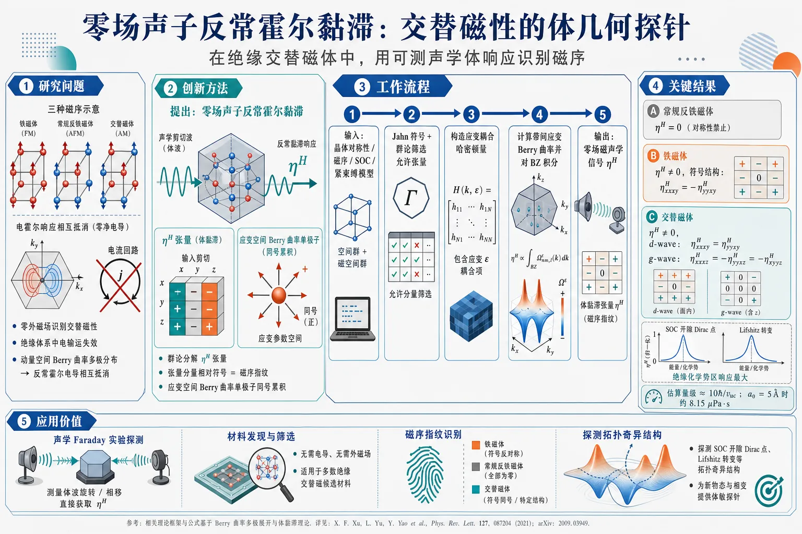
研究问题如何在零外磁场、尤其在绝缘交替磁体中，用可测的体响应识别交替磁性，并区分交替磁体、铁磁体与常规反铁磁体；核心矛盾是纯交替磁体的动量空间 Berry 曲率呈多极分布，反常霍尔电导常相互抵消，传统电输运探针失效。创新方法提出“零场声子反常霍尔黏滞”作为交替磁性的体几何探针：用群论分解霍尔黏滞张量，抓住张量分量的相对符号作为磁序指纹；微观上把响应归因于“应变空间 Berry 曲率单极子”，而不是传统动量空间 Berry 曲率多极子。Aha 点是：电荷霍尔响应可因多极抵消为零，但动态应变参数空间中的 Berry 曲率可同号累积，产生可测声学霍尔黏滞。工作流程输入交替磁体晶体对称性、磁序类型、SOC 与紧束缚能带模型；先用 Jahn symbols 和群论筛选允许的霍尔黏滞张量分量；再构造应变耦合哈密顿量，计算带间应变空间 Berry 曲率；对占据能带和布里渊区积分得到 η^H；最后比较张量符号、化学势依赖、SOC 开隙 Dirac 点与 Lifshitz 转变附近的响应峰值，输出可用于磁声学实验的零场声学信号。关键结果常规反铁磁体的零场反常霍尔黏滞被对称性禁止；铁磁体与交替磁体均可非零，但符号结构不同。四方 d-wave 交替磁体满足 η^Hₓₓₓy=η^H_yyxy≠0，而面外铁磁体为 η^Hₓₓₓy=-η^H_yyxy≠0；d-wave 响应由 SOC 打开的自旋极化 Dirac 点主导，并在绝缘化学势区最大。六方 g-wave 交替磁体出现 η^Hₓₓₓz=-η^H_yyxz=-η^Hₓyyz，且强烈受应变诱导 SOC 修正和 Lifshitz 转变控制。估算量级约 10ℏ/vᵤc，a0=5 Å 时约 8.15 μPa·s，与已有声学 Faraday 实验量级相当。应用价值为多数绝缘交替磁候选材料提供无需电导、无需外磁场的声学探测方案；可通过磁声学或声学 Faraday 类实验读取霍尔黏滞张量，直接识别交替磁序的对称性破缺、区分铁磁/反铁磁/交替磁体，并探测 SOC 开隙 Dirac 点、费米面 Lifshitz 转变等能带拓扑奇异结构。第一部分：核心概览 (Overview)
零磁场声子霍尔黏滞被建立为探测交替磁性（altermagnetism）的体几何响应。核心贡献在于：通过群论证明霍尔黏滞张量的非零分量及相对符号可区分铁磁体、常规反铁磁体、纯交替磁体；通过四方 d-wave 与六方 g-wave 最小模型揭示其微观来源是应变空间 Berry 曲率单极子，而非传统动量空间 Berry 曲率多极子。该响应对 SOC 打开的 Dirac 点、Lifshitz 转变、能带奇异性高度敏感，并可通过磁声学实验在绝缘体中测量，弥补反常霍尔电导主要适用于金属或弱半导体的限制。
---
第二部分：结构化快速回顾
《Anomalous Hall viscosity of altermagnets》（None，）
背景
交替磁体是补偿磁体，兼具零净磁化与动量空间自旋劈裂。传统反常霍尔电导在纯交替磁体中因 Berry 曲率多极结构通常抵消，且多数候选材料为绝缘体，限制了电输运探针的适用性。
方法
结合群论张量分解、Jahn symbols、应变空间 Berry 曲率公式与两个最小紧束缚模型：四方 Lieb 晶格 d-wave 交替磁体、六方 g-wave 交替磁体。计算零磁场霍尔黏滞张量分量及其对化学势、SOC、交替磁序参量的依赖。
结果
常规反铁磁体的反常霍尔黏滞为零；铁磁体与交替磁体均可非零，但张量符号结构不同。四方 d-wave 情形满足
(η^Hₓₓₓy=η^Hyyₓy≠0)，铁磁情形则为
(η^Hₓₓₓy=-η^Hyyₓy≠0)。
d-wave 模型中响应由 SOC-gapped Dirac points 主导；g-wave 模型中响应受应变诱导 SOC 修正与 Lifshitz transition 强烈影响。
讨论
估算霍尔黏滞量级约为 (10hbar/vₘ̊ ᵤc)，若 (a₀₌₅) Å，则 (η^Hsim8.15,μm̊ Paḑotm̊ s)，与 α-RuCl(₃) 外磁场下声学 Faraday 效应测得量级相当。交替磁体可通过改造的磁声学实验实现零场探测。
局限
定量结果依赖最小模型与补充材料中的参数；实验方案只给出原则性讨论，完整磁声学装置分析尚待后续工作；强关联、无序、有限温度、声子衰减等因素未系统展开。
结论
反常霍尔黏滞同时编码交替磁体的对称性破缺与能带拓扑结构，尤其适合绝缘交替磁体。其物理基础是应变空间 Berry 曲率单极子，使其成为区别于反常霍尔电导的全局体响应探针。
---
第三部分：逐章节冷凝解析
Abstract
Hall viscosity as a zero-field probe
零磁场声子霍尔黏滞被提出为交替磁性的自然探针，关键在于它不依赖外加磁场，也不要求材料导电。核心表述为 *"the phonon Hall viscosity at zero magnetic field is a natural probe of altermagnetism"*。这里的 phonon Hall viscosity 指晶格声学应变诱导的非耗散横向应力响应，而非电子流体水动力黏滞。
Tensor elements distinguish magnetic orders
霍尔黏滞张量的有限分量能够明确区分三类磁有序：交替磁体、铁磁体、常规反铁磁体。原始表述为 *"the finite elements of the Hall viscosity tensor unambiguously distinguish altermagnets from ferromagnets and conventional antiferromagnets"*。其物理原因是：常规反铁磁体受时间反演与平移/反演联合对称性约束，零场反常霍尔黏滞消失；铁磁体与交替磁体虽均破坏时间反演，但张量符号结构不同。
Microscopic models for d-wave and g-wave altermagnets
微观计算覆盖两类代表性交替磁体：四方 d-wave 与六方 g-wave。摘要中明确指出 *"We then microscopically compute the Hall viscosity in models for d-wave and g-wave altermagnets"*。d-wave 模型对应 Lieb 晶格与四方 (D₄ₕ) 对称性；g-wave 模型对应六方 (D₆ₕ) 与三维螺旋旋转结构。
Sensitivity to Dirac gaps and Lifshitz transitions
霍尔黏滞对电子谱细节高度敏感，包括 gapped Dirac points 与 Lifshitz transitions。原文强调 *"find a strong sensitivity to electronic spectrum features such as gapped Dirac points and Lifshitz transitions"*。这种敏感性来自公式中能带间能量差平方分母
[
Ømega⁽b⁾ᵢⱼₖₗsim
2m̊ Imsumb'≠ b
fracγⁱj*b'bγklb'b
(ξbₒₗdₛyₘbₒₗ ₖ b-ξbₒₗdₛyₘbₒₗ ₖ b')²,
]
因此近简并、能隙打开、费米面拓扑变化都会显著增强响应。
Strain-space Berry curvature monopole
交替磁体中标准动量空间 Berry 曲率通常呈多极结构，积分后反常霍尔电导抵消；但霍尔黏滞由应变空间 Berry 曲率单极子控制。摘要表述为 *"This sensitivity reflects a strain-space Berry curvature monopole, which contrast to the multipolar character of the standard momentum-space Berry curvature in altermagnets"*。这一点构成最重要的概念创新：拓扑响应从动量空间转移到应变参数空间。
Experimental relevance through magneto-acoustics
声子霍尔黏滞可通过磁声学方法探测，尤其适合绝缘交替磁体。原文指出 *"Since the Hall viscosity can be probed experimentally through magneto-acoustic measurements"*，并将其定位为 *"a compelling method to probe the broken symmetries and topology of insulating altermagnets"*。
---
Anomalous Hall viscosity of altermagnets
Altermagnets combine compensation and spin splitting
交替磁体属于补偿磁体，但并非普通反铁磁体。它们在时间反演与某种晶体操作组合下保持不变，这些晶体操作包括旋转、镜面、滑移、螺旋旋转等。原文定义为 *"Altermagnets are compensated magnets that are invariant under a combination of time reversal and a crystalline operation that involves rotations, such as proper rotations, mirror reflections, glide reflections, and screw rotations"*。补偿意味着净磁化可为零；但由于晶体对称性，能带仍可出现动量依赖自旋劈裂。
d-wave, g-wave, and i-wave characters
交替磁体的自旋劈裂具有特定角动量型对称性，如 d-wave、g-wave、i-wave。原文说明 *"This symmetry endows altermagnets with distinctive d-wave, g-wave, or i-wave characters, manifested both in the momentum dependence of the spin-splitting of the electronic bands and in the real-space spin density"*。这里的 d/g/i 并非超导配对，而是自旋劈裂或自旋密度在晶体群操作下的变换性质。
Momentum-resolved spin splitting is experimentally difficult
直接测量动量空间自旋劈裂存在实验挑战，因此需要全局响应函数。原文指出 *"the experimental challenges in directly probing momentum-space spin-splitting motivates the search for global response functions"*。全局响应函数的优势是可通过宏观输运、弹性或光学方法测量，并可编码对称性与拓扑信息。
Anomalous Hall conductivity vanishes in pure altermagnets
尽管反常霍尔电导是非平庸拓扑的经典探针，但纯交替磁体中通常为零。关键句为 *"The anomalous Hall conductivity, a primary probe of non-trivial topology, vanishes in pure altermagnets due to the multipolar character of their momentum-space Berry curvature"*。动量空间 Berry 曲率像多极场一样正负分布，布里渊区积分抵消。
SOC and strain can activate anomalous Hall conductivity but with restrictions
自旋轨道耦合存在时，特定磁矩方向或外加单轴应变可使反常霍尔电导非零。原文为 *"In the presence of spin-orbit coupling (SOC), it can become non-zero either for specific moment directions or when external uniaxial strain is applied"*。但这种电导探针受材料导电性限制。
Most altermagnetic candidates are insulators
多数交替磁体候选材料为绝缘体，因此电荷输运探针受限。原文强调 *"most altermagnetic candidates are insulators, which limits the use of the Hall conductivity as a probe of altermagnetism"*。这直接推动转向晶格响应。
Lattice responses work in metals and insulators
晶格响应可用于金属与绝缘体。原文写道 *"Lattice responses, on the other hand, can be measured in both metals and insulators"*。霍尔黏滞属于声学/弹性响应，因此比反常霍尔电导具有更广材料适用范围。
Piezomagnetism as a known magneto-elastic response
交替磁体已有显著磁弹耦合性质，压磁效应是代表。原文称 *"their unique magneto-elastic properties, of which piezomagnetism is the posterchild"*。霍尔黏滞可视为动态应变版本的几何磁弹响应。
Hall viscosity relates dynamic strain to transverse stress
霍尔黏滞又称声子霍尔黏滞，是黏滞张量中反对称、非耗散部分，将时间依赖应变关联到横向应力。原文定义为 *"Also known as phonon Hall viscosity, it is the antisymmetric, non-dissipative part of the viscosity tensor that relates time-dependent strain to transverse stress"*。
Zero-field anomalous response differs from earlier magnetic-field studies
既有研究主要关注外磁场下磁性绝缘体与量子霍尔系统中的霍尔黏滞；此处关注零场反常响应。原文对比为 *"previous works focused on the Hall viscosity of magnetic insulators and quantum Hall systems in an external magnetic field"*，而核心焦点是 *"the zero-field (i.e., anomalous) response"*。
Antiferromagnets cannot host anomalous Hall viscosity
常规反铁磁体不能具有反常霍尔黏滞。原文明确写道 *"In contrast to antiferromagnets, which cannot have an anomalous Hall viscosity"*。根源是反铁磁态保留时间反演与平移或反演的联合对称性，使 TR-odd、inversion-even 的霍尔黏滞被禁止。
Ferromagnets and altermagnets have distinct finite tensors
铁磁体与交替磁体均可在零场具有有限霍尔黏滞，但张量元素不同。原文为 *"ferromagnets and altermagnets display finite but distinct Hall viscosity tensor elements at zero field"*。例如四方体系中，动态剪切应变 (dotǎrepsilonₓy) 对 d-wave 交替磁体产生 (Tₓₓ=Tyy)，对铁磁体产生 (Tₓₓ=-Tyy)。
d-wave Hall viscosity dominated by SOC-gapped Dirac points
四方 d-wave 交替磁体中，霍尔黏滞由 SOC 打开的自旋极化 Dirac 点主导。原文写道 *"In d-wave altermagnets, we find it to be dominated by the spin-polarized Dirac points that are gapped by the SOC"*。这使响应具有近 Dirac 点的拓扑来源。
Dynamic strain acts as spin-dependent gauge fields
d-wave 情形可解释为动态应变生成自旋依赖电磁规范场，霍尔黏滞类似单个 Dirac 点的 Hall conductivity。原文表述为 *"This allows us to interpret the Hall viscosity as the ‘Hall conductivity’ due to emergent spin-dependent electromagnetic gauge fields generated by dynamic strain"*。
g-wave Hall viscosity requires strain-modified SOC
六方 g-wave 情形中，应变诱导 SOC 修改是有限霍尔黏滞的主要来源。原文指出 *"In g-wave altermagnets, we show that the strain-induced modification of the SOC is the main feature responsible for a finite anomalous Hall viscosity"*。若应变哈密顿量不改变量子态的 SOC 结构，计算得到响应为零。
Weak SOC does not imply weak Hall viscosity
SOC 对非零响应必要，但弱 SOC 不必然导致小霍尔黏滞。原文强调 *"while SOC is essential for a non-zero Hall viscosity, weak SOC does not necessarily imply a small Hall viscosity"*。在 Dirac 质量隙内，响应可由拓扑量控制，对 SOC 强度不线性缩小。
---
Symmetry analysis
Stress-strain relation includes elastic and viscous parts
低频下，动态应力与时间依赖应变满足
[
Tᵢⱼ(t)=Cᵢⱼₖₗǎrepsilonₖₗ(t)+ηᵢⱼₖₗpartialₜǎrepsilonₖₗ(t).
]
原文写作 *"At low frequencies, dynamical stresses (Tᵢⱼ(t)) in a many-body system are related to time-dependent strain (ǎrepsilonₖₗ(t))"*。其中 (Cᵢⱼₖₗ) 是弹性张量，(ηᵢⱼₖₗ) 是黏滞张量。
Hall viscosity is antisymmetric and non-dissipative
黏滞张量中在 (ijłeftrightarrow kl) 下反对称的部分是非耗散响应。原文指出 *"the elements (η^Hᵢⱼₖₗ) of the viscosity tensor (ηᵢⱼₖₗ) that are antisymmetric under (ijłongleftrightarrow kl) are non-dissipative"*。非耗散意味着不产生热，与普通黏滞耗散不同。
Hall viscosity is TR-odd and inversion-even
霍尔黏滞在时间反演下为奇，在反演下为偶。原文为 *"This Hall viscosity tensor is odd under time reversal and even under inversion"*。因此有限零场霍尔黏滞要求内禀时间反演破缺，但不要求反演破缺。
Effective elastic action encodes geometric response
有效作用量为
[
Sₘ̊ ₑff=frac12intₓ,ₜη^Hᵢⱼₖₗǎrepsilonᵢⱼpartialₜǎrepsilonₖₗ.
]
原文写作 *"giving rise to the effective elastic action (Sₘ̊ ₑff=...)"*。该项具有 Berry 相位形式：一个广义坐标 (ǎrepsilonᵢⱼ) 与另一个广义速度 (partialₜǎrepsilonₖₗ) 耦合。
Phonon Hall viscosity is distinct from electronic hydrodynamic Hall viscosity
声子霍尔黏滞不应与电子流体水动力区的黏弹性霍尔响应混淆。原文警示 *"This elastic (phonon) Hall viscosity should not to be confused with the viscoelastic Hall response of an electronic fluid in the hydrodynamic regime"*。前者是晶格应变响应，后者是电子流体动量输运响应。
Magnetic field allows isotropic 2D Hall viscosity
二维各向同性体系在外磁场下唯一允许非零元为
[
η^Hₓₓₓy=-η^Hyyₓy.
]
原文表述为 *"in a 2D isotropic system subjected to a magnetic field, the only allowed non-zero element is (η^Hₓₓₓy=-η^Hyyₓy)"*。这一结构与图 1(b) 中铁磁式应力对称性一致。
Ferromagnets mimic magnetic-field-induced tensor structure at zero field
铁磁体在零外场下因自发磁化破坏 TRS，可出现与外磁场相同的异常霍尔黏滞结构。原文为 *"By symmetry, a ferromagnet must display the same non-zero element, but at zero applied field"*。这就是 anomalous Hall viscosity。
Conventional antiferromagnets forbid Hall viscosity
常规反铁磁体中的时间反演与平移或反演联合对称性强制 (η^Hᵢⱼₖₗ=0)。原文指出 *"the combination of time-reversal and translational (or inversion) symmetries enforce (η^Hᵢⱼₖₗ=0) in antiferromagnets"*。
Altermagnetic symmetries allow finite zero-field tensor elements
交替磁体的一般对称性与有限零场霍尔黏滞兼容。原文为 *"the symmetries of altermagnetism are generally compatible with finite Hall viscosity tensor elements at zero fields"*。这是与常规反铁磁体的关键区别。
Fifteen-dimensional tensor representation is decomposed by group theory
有限霍尔黏滞张量元素构成 15 维可约表示。原文写道 *"we employ group theory to decompose the 15-dimensional reducible representation consisting of the non-zero elements of (η^Hᵢⱼₖₗ)"*。15 来自三维对称应变分量构成 6 维空间，反对称二阶形式数为 (6×5/2=15)。
Jahn symbols encode tensor transformation properties
张量表示用 Jahn 符号
[
a[V²][V²]
]
表示。原文解释为 *"(V) stands, as usual, for a polar vector, square brackets imply a symmetric combination, curly brackets imply an anti-symmetric combination, and (a) denotes time reversal"*。这紧凑表达了：应变是极向量二阶对称组合，霍尔黏滞对应两个应变之间的反对称耦合，并且时间反演奇。
D4h decomposition identifies magnetic irreps
四方 (D₄ₕ) 中分解为
[
a[V²][V²]i̊ghtarrow
A₁g⁻øplus2A₂g⁻øplus2B₁g⁻
øplus2B₂g⁻øplus4E_g⁻.
]
原文给出 *"For example, in a tetragonal system with point group (D₄ₕ), we find..."*。上标 “−” 表示时间反演奇不可约表示。
Irreps map onto magnetic order types
这些不可约表示对应含 SOC 时的偶宇称 (boldsymbol Q=0) 磁有序。原文为 *"These irreps correspond to different even-parity (boldsymbol Q=0) magnetic orders in the presence of SOC"*。其中
- (A₂g⁻)：面外磁化；
- (E_g⁻)：面内磁化；
- (A₁g⁻)：g-wave 纯交替磁；
- (B₁g⁻)：(dₓy)-wave 纯交替磁；
- (B₂g⁻)：(dₓ^₂₋y^₂)-wave 纯交替磁。
Pure altermagnets are symmetry-enforced zero-magnetization states
(A₁g⁻)、(B₁g⁻)、(B₂g⁻) 描述纯交替磁序，具有对称性强制的零磁化。原文写道 *"describe pure altermagnetic order parameters (i.e., with a symmetry-enforced zero magnetization)"*。
d-wave altermagnet and ferromagnet share nonzero elements but differ in signs
四方 (dₓ^₂₋y^₂) 交替磁体与面外铁磁体可有相同形式的非零元素，但相对符号不同。原文给出
*" (η^Hₓₓₓy=η^Hyyₓy≠0) for the altermagnet and (η^Hₓₓₓy=-η^Hyyₓy≠0) for the ferromagnet"*。
这导致同一动态剪切应变下产生不同对称性的应力：交替磁体 (Tₓₓ=Tyy)，铁磁体 (Tₓₓ=-Tyy)。
---
Microscopic expression
Bloch-state framework and strain Hamiltonian
系统以 Bloch 态 (|ubₒₗdₛyₘbₒₗ ₖ,bångle) 描述，哈密顿量拆成无应变部分与应变依赖部分：
[
a̧l Hbₒₗdₛyₘbₒₗ ₖ=a̧l Hbₒₗdₛyₘbₒₗ ₖ,₀+a̧l Hbₒₗdₛyₘbₒₗ ₖ,ǎᵣₑₚₛᵢₗₒₙ.
]
原文写道 *"we consider a system described by Bloch states (|ubₒₗdₛyₘbₒₗₖ,bångle) with crystal momentum (boldsymbolk) and band index (b)"*。
Electron-phonon coupling appears through gamma matrices
应变项为
[
a̧l Hbₒₗdₛyₘbₒₗ ₖ,ǎᵣₑₚₛᵢₗₒₙ
=ǎrepsilonᵢⱼsumbb'γⁱjbb'(boldsymbol k)
|ubₒₗdₛyₘbₒₗ ₖ,bånglełangle ubₒₗdₛyₘbₒₗ ₖ,b'|.
]
原文说明 *"The coupling matrices (γⁱjbb') determine the electron-phonon coupling to acoustic lattice vibrations in the band basis"*。
Quasi-adiabatic expansion gives geometric correction to stress
缓慢变化的动态应变下，应力为
[
Tᵢⱼ
=fracδłanglea̧l Hbₒₗdₛyₘbₒₗ ₖångleδǎrepsilonᵢⱼ
+sumₖₗ,bØmega⁽b⁾ᵢⱼₖₗ(boldsymbol k)partialₜǎrepsilonₖₗ.
]
原文称其来自 *"the quasi-adiabatic expansion"*。第一项是瞬时弹性响应；第二项是 Berry 曲率控制的霍尔黏滞响应。
Hall viscosity is the occupied-band integral of strain-space Berry curvature
霍尔黏滞公式为
[
η^Hᵢⱼₖₗ
=frachbarVsumbₒₗdₛyₘbₒₗ ₖ b
f(ξbₒₗdₛyₘbₒₗ ₖ b)
Ømega⁽b⁾ᵢⱼₖₗ(boldsymbol k).
]
原文写道 *"from which we readily identify the Hall viscosity..."*。这与反常霍尔电导由动量空间 Berry 曲率积分得到完全类比，只是参数空间从 (boldsymbol k) 换成应变 (ǎrepsilonᵢⱼ)。
Strain-space Berry curvature has interband denominator squared
应变空间 Berry 曲率为
[
Ømega⁽b⁾ᵢⱼₖₗ(boldsymbol k)
=2m̊ Imsumb'≠ b
frac{
γⁱj*b'b(boldsymbol k)
γklb'b(boldsymbol k)
}
(ξbₒₗdₛyₘbₒₗ ₖ b-ξbₒₗdₛyₘbₒₗ ₖ b')².
]
原文给出 *"the strain-space Berry curvature..."*。分母平方使近简并点、SOC 开隙点、鞍点附近响应增强。
Noncommuting strain Hamiltonian is required
有限霍尔黏滞要求应变哈密顿量不与无应变哈密顿量对易。原文明确指出 *"In order for the Hall viscosity in Eq. (6) to be finite, (a̧l Hbₒₗdₛyₘbₒₗₖ,ǎᵣₑₚₛᵢₗₒₙ) must not commute with (a̧l Hbₒₗdₛyₘbₒₗₖ,₀)"*。若两者对易，(γⁱjb'b) 在能带基底中对角化，带间虚部矩阵元消失。
SOC is required for local Berry curvature
SOC 对局域 Berry 曲率必要。原文写道 *"Moreover, SOC must be present to induce local Berry curvature"*。没有 SOC 时，即使磁序破坏 TRS，相关矩阵元相位结构仍可能被对称性约束为零。
---
Tetragonal d-wave altermagnets
Lieb lattice realizes tetragonal d-wave altermagnetism
Lieb 晶格模型描述四方 (B₂g⁻) 交替磁体。原文称 *"The Lieb lattice model ... provides a convenient description of a d-wave altermagnet on the tetragonal lattice (irrep (B₂g⁻))"*。候选材料族包括 (R₂m̊ Mn₂m̊ Se₂m̊ O₃)、(Am̊ V₂m̊ Te₂m̊ O)、(m̊ Fe₂X₂m̊ O)（(X=m̊ Cl,Br,I)）。
Magnetic atoms are related by 90-degree rotation
模型中非磁原子位于方晶格格点，磁原子在键中心，相反面外自旋由 90° 晶体旋转关联。原文为 *"non-magnetic atoms on the sites of a square lattice and magnetic atoms on the bond centers with opposite out-of-plane spins related by a (90ⁱ̧rc) crystal rotation"*。
Strain-free Hamiltonian contains hopping, SOC, and altermagnetic exchange
无应变哈密顿量为
[
a̧l Hbₒₗdₛyₘbₒₗ ₖ,₀
=ǎrepsilon₀,bₒₗdₛyₘbₒₗ ₖ
+t₁,bₒₗdₛyₘbₒₗ ₖτ₁₊ₜ₃,bₒₗdₛyₘbₒₗ ₖτ₃
+ěcłambdabₒₗdₛyₘbₒₗ ₖḑotěcσ,τ₂
+Jφτ₃σ₃.
]
原文给出 *"The strain-free Hamiltonian is thus invariant under a combination of a (90ⁱ̧rc) rotation and time-reversal"*。其中 (τᵢ) 是子晶格 Pauli 矩阵，(σᵢ) 是自旋 Pauli 矩阵，(φ) 是交替磁序参量。
Lattice harmonics define the tight-binding structure
动能项由
[
ǎrepsilon₀,bₒₗdₛyₘbₒₗ ₖ=-t₂ f₀,bₒₗdₛyₘbₒₗ ₖ,quad
t₁,bₒₗdₛyₘbₒₗ ₖ=-t₁ f₁,bₒₗdₛyₘbₒₗ ₖ,quad
t₃,bₒₗdₛyₘbₒₗ ₖ=-t_d f₃,bₒₗdₛyₘbₒₗ ₖ
]
定义，其中
[
f₁,bₒₗdₛyₘbₒₗ ₖ=4o̧s(kₓ/2)o̧s(k_y/2),
quad
f₀₍₃₎,bₒₗdₛyₘbₒₗ ₖ=2(o̧s kₓ±o̧s k_y).
]
原文列出 *"with (t₂₌₍ₜ₂ₐ+t₂b)/2) and (t_d=(t₂ₐ-t₂b)/2)"*。
SOC term has z-axis form
SOC 项为
[
ěcłambdabₒₗdₛyₘbₒₗ ₖ
=łambdasin(kₓ/2)sin(k_y/2)hatboldsymbol z.
]
原文为 *"The SOC term has the simple form..."*。该项在 Dirac 点附近打开质量隙，并赋予 Berry 曲率。
Strain Hamiltonian decomposes into A1g, B1g, B2g channels
应变项分解为
[
a̧l Hbₒₗdₛyₘbₒₗ ₖ,ǎᵣₑₚₛᵢₗₒₙ
=(ǎrepsilonₓₓ+ǎrepsilonyy)γ⁽A₁g⁾bₒₗdₛyₘbₒₗ ₖ
+(ǎrepsilonₓₓ-ǎrepsilonyy)γ⁽B₁g⁾bₒₗdₛyₘbₒₗ ₖ
+2ǎrepsilonₓyγ⁽B₂g⁾bₒₗdₛyₘbₒₗ ₖ.
]
原文称 *"The symmetry-allowed strain Hamiltonian contains the three distinct in-plane strain irreps of the tetragonal group"*。这里 (A₁g) 是体积/面积型应变，(B₁g) 是正交伸缩，(B₂g) 是剪切应变。
Coupling matrices are explicitly specified
耦合矩阵为
[
γ⁽A₁g⁾bₒₗdₛyₘbₒₗ ₖ
=g⁽A₁g⁾₀f₀,bₒₗdₛyₘbₒₗ ₖτ₀
+g⁽A₁g⁾₁f₁,bₒₗdₛyₘbₒₗ ₖτ₁
+g⁽A₁g⁾₃f₃,bₒₗdₛyₘbₒₗ ₖτ₃,
]
[
γ⁽B₁g⁾bₒₗdₛyₘbₒₗ ₖ=2g⁽B₁g⁾τ₃,
quad
γ⁽B₂g⁾bₒₗdₛyₘbₒₗ ₖ
=-2g⁽B₂g⁾sin(kₓ/2)sin(k_y/2)τ₁.
]
原文补充 *"Here, (gᵢ⁽Γ⁾) are coupling constants with magnitudes comparable to the hopping parameters"*。
Four spin-polarized Dirac points appear below critical order parameter
当
[
|φ|<φ_c=|4t_d/J|
]
时，布里渊区边界存在四个自旋极化 Dirac 点。原文写道 *"The electronic dispersion ... has four spin-polarized Dirac points at the Brillouin zone boundaries for (|φ|<φ_c=|4t_d/J|)"*。SOC 将其打开能隙。
Gapped Dirac points generate large strain-space Berry curvature
这些 SOC-gapped Dirac 点是大 Berry 曲率源。原文为 *"Being sources of large Berry curvature, these gapped Dirac points determine not only the behavior of the momentum-space Berry curvature quadrupole ... but also the properties of the strain-space Berry curvature"*。
Group theory predicts equal-sign Hall viscosity components
四方 d-wave 交替磁相中非零张量满足
[
η^Hₓₓₓy=η^Hyyₓy≠0.
]
原文说明 *"according to our group theory analysis are (η^Hₓₓₓy=η^Hyyₓy≠0)"*。这与铁磁的相反号结构不同。
Berry curvature sum forms a monopole, difference forms a quadrupole
数值计算第二能带的
[
frac12(Ømega⁽²⁾ₓₓₓy+Ømega⁽²⁾yyₓy)
]
与
[
frac12(Ømega⁽²⁾ₓₓₓy-Ømega⁽²⁾yyₓy)
]
显示不同结构。原文写道 *"Both show large local Berry curvature values near the gapped Dirac points"*。加和项在所有 Dirac 点附近同号，形成单极结构；差分项在 90° 旋转下变号，形成四极结构。
Strain-space Berry curvature disentangles multipolar Berry structures
应变空间 Berry 曲率能区分交替磁体内禀 Berry 曲率的多极结构。原文总结 *"the strain-space Berry curvature can be uniquely employed to disentangle the intrinsic multipolar structure of the Berry curvature of altermagnets"*。这说明霍尔黏滞比常规反常霍尔电导保留更多对称性信息。
Hall viscosity is proportional to altermagnetic order
数值结果显示
[
η^Hequivfrac12(η^Hₓₓₓy+η^Hyyₓy)
=η^Hₓₓₓy=η^Hyyₓy
]
与交替磁序参量 (φ) 成正比。原文为 *"not only is (η^H) proportional to the altermagnetic order parameter (φ)"*。
Response is largest in the insulating phase
(η^H) 在化学势位于绝缘相时最大。原文强调 *"it also is the largest for the chemical potential values for which the system is in the insulating phase"*。这直接支持利用霍尔黏滞测量绝缘交替磁序。
Dirac expansion yields massive Dirac Hamiltonian
围绕 Dirac 点展开后得到
[
a̧l H
=sumσ,κ,ᵢ₌ₓ,y
{vᵢσ,κ(pᵢ₋a̧l Aᵢσ,κ)αᵢ^σ
+m^σβ},
]
其中
[
m^σ=σłambdasqrt1-φ/φ_c.
]
原文称 *"Inclusion of SOC leads to the characteristic Dirac Hamiltonian"*。
Dynamic strain generates emergent spin-dependent gauge fields
应变进入 Dirac 理论如电磁规范场：
[
ǎrepsilonₓₓ±ǎrepsilonyypropto
a̧l Ap̆arrow,κₓmpa̧l Adowⁿarrow,κ_y,
quad
ǎrepsilonₓypropto
a̧l Ap̆arrow,κ_y+a̧l Adowⁿarrow,κₓ.
]
原文称 *"strain appears as an electromagnetic gauge field"*，并进一步说明这些场是 *"spin-dependent"*。
Analogy with graphene strain gauge fields
这种机制类似石墨烯中静态非均匀应变产生赝磁场。原文为 *"This is analogous to the emergent magnetic fields in graphene arising from static but spatially varying strain"*。区别是这里应变是动态的，产生类电场，并且自旋依赖。
Hall viscosity equals a prefactor times single-Dirac-point Hall conductivity
霍尔黏滞可写为
[
η^Hₓₓₓy=η^Hyyₓy
=C₀σ^Hₓy
=fracC₀hbar
begincases
m̊ sign(m)/(4π), & μᵣ²<m²
m/(4π|μᵣ|), & μᵣ²>m²
endcases.
]
原文写道 *"the Hall viscosity can be expressed in terms of the Hall conductivity (σ^Hₓy) ... of a single Dirac point"*。
Prefactor links electron-phonon coupling and tight-binding parameters
前因子为
[
C₀₌
frac8hbar²g⁽B₂g⁾g⁽A₁g⁾₃
vₘ̊ ᵤct₁ₜ_d.
]
原文给出 *"where ... (C₀₌...)"*。因此霍尔黏滞量级由应变耦合、跳跃参数与晶胞体积控制。
Dirac theory agrees quantitatively with tight-binding calculation
Dirac 近似与完整紧束缚数值在小 SOC 隙条件下吻合。原文写道 *"this expression is in quantitative agreement with the full tight-binding calculation of the Hall viscosity, at least for small SOC-induced gap"*。
No anomalous Hall conductivity survives after summing valleys and spins
单个 Dirac 点有 Hall conductivity 类响应，但整体反常霍尔电导抵消，只剩霍尔黏滞。原文强调 *"Eq. (12) does not imply that the system has an anomalous Hall conductivity"*，并说明 *"Once the contributions of all Dirac points are added, only the anomalous Hall viscosity survives"*。
Effective action resembles opposite-spin Chern-Simons terms
有效作用可写为
[
Sₘ̊ ₑff
=σ^Hₓy
sumσ,κσ
intₓ,ₜϵᵢⱼ
a̧l Aσ,κᵢ
partialₜa̧l Aσ,κⱼ.
]
原文称其为 *"the temporal version of two Chern-Simons actions with opposite Hall conductivities for the two spin sectors"*。这保证电荷 Hall 响应消失，但霍尔黏滞有限。
---
Hexagonal g-wave altermagnets
g-wave altermagnetism is intrinsically three-dimensional
与近似二维的四方 d-wave 模型不同，六方 g-wave 交替磁性本质上三维。原文写道 *"The tetragonal d-wave altermagnet studied above is essentially a 2D model. In contrast, g-wave altermagnetism in hexagonal lattices ... is intrinsically 3D"*。
Relevant materials include CrSb, MnTe, and Co1/4NbSe2
六方 g-wave 交替磁性与 CrSb、MnTe、Co(₁/₄)NbSe(₂) 等材料相关。原文列出 *"as realized in CrSb, MnTe, and Co(₁/₄)NbSe(₂)"*。
Minimal model has D6h point group and screw-related magnetic atoms
采用 (D₆ₕ) 最小模型。两个磁原子不在同一平面，而由六重螺旋旋转关联。原文写道 *"the two magnetic atoms are not on the same plane, but are related by a sixfold screw rotation, i.e., a sixfold rotation followed by a half-translation along the z-axis"*。
Hamiltonian resembles the d-wave model but has kz dependence
六方模型哈密顿量形式与式 (7) 相同，但函数显式依赖 (k_z)，SOC 具有面内分量。原文为 *"The Hamiltonian (a̧l Hbₒₗdₛyₘbₒₗₖ,₀) has the same form of Eq. (7), but the functions depend explicitly on (k_z) and the SOC term (ěcłambdabₒₗdₛyₘbₒₗₖ) has in-plane components"*。
z-axis moments are relevant for CrSb and Co1/4NbSe2
聚焦磁矩沿 (z) 轴排列情形，适用于 CrSb 与 Co(₁/₄)NbSe(₂)。原文写道 *"We focus on moments aligned along the z-axis, relevant for CrSb and Co(₁/₄)NbSe(₂)"*。
Order parameter transforms as B1g− of D6h
该交替磁序参量 (φ) 在 (D₆ₕ) 中按 (B₁g⁻) 表示变换。原文为 *"the altermagnetic order parameter (φ) in Eq. (7) transforms as the (B₁g⁻) irrep of (D₆ₕ)"*。
Spin-split nodal planes are partially gapped by SOC
该结构产生沿 (k_z=0)、(k_y=0) 及对称相关平面的自旋劈裂节点面，SOC 部分开隙。原文写道 *"This gives spin-split nodal planes along (k_z=0) and (k_y=0) ... which are partially gapped by SOC"*。
Group theory predicts mixed in-plane/out-of-plane Hall viscosity components
非零霍尔黏滞分量满足
[
η^Hₓₓₓz=-η^Hyyₓz=-η^Hₓyyz.
]
原文写道 *"our group-theory analysis predicts non-zero Hall viscosity tensor components (η^Hₓₓₓz=-η^Hyyₓz=-η^Hₓyyz)"*。这涉及面内正交应变与面外剪切应变之间的动态耦合。
Relevant strain channels combine in-plane and out-of-plane shear
需要考虑 ((ǎrepsilonₓₓ-ǎrepsilonyy,ǎrepsilonₓy)) 与 ((ǎrepsilonₓz,ǎrepsilonyz)) 相关耦合矩阵。原文为 *"We therefore consider the coupling matrices ... associated with the in-plane and out-of-plane shear strains"*。
Berry curvature component is mirror-even and finite upon averaging
计算的
[
frac12(Ømega⁽⁴⁾ₓₓₓz-Ømega⁽⁴⁾yyₓz)
]
在 (k_z=0) 平面相对 (kₓ)、(k_y) 镜面对称为偶，因而平均后有限。原文写道 *"This Berry curvature component is even with respect to reflections along the (kₓ) and (k_y) mirrors, and thus averages to a finite value"*。
In-plane integrated Berry curvature changes near kz/2π≈0.25
面内动量积分 Berry 曲率
[
frac12(barØmega⁽⁴⁾ₓₓₓz-barØmega⁽⁴⁾yyₓz)
]
随 (k_z) 在
[
k_z/(2π)approx0.25
]
附近突变。原文为 *"Its sudden change around (k_z/2πapprox0.25) originates from a Lifshitz transition of the Fermi surface"*。
Lifshitz transition produces sudden Hall viscosity changes
费米面 Lifshitz 转变导致霍尔黏滞随化学势突变。原文指出 *"which in turn is manifested as sudden changes of the Hall viscosity (η^Hₓₓₓz=-η^Hyyₓz) as a function of the chemical potential (μ)"*。这展示了霍尔黏滞对能带拓扑的敏感性。
Strain-induced SOC modification is necessary
非零 (η^H) 要求应变哈密顿量也修改 SOC。原文明确写道 *"a non-zero (η^H) requires the strain Hamiltonian to also modify the SOC"*。并进一步说明 *"Without such a strain-induced SOC term, we find a vanishing Hall viscosity"*。
Hall viscosity is proportional to altermagnetic order parameter
六方 g-wave 情形同样显示 (η^H) 与交替磁序参量 (φ) 成正比。原文写道 *"Fig. 4(f) directly demonstrates the proportionality between the anomalous Hall viscosity and the altermagnetic order parameter (φ)"*。
---
Discussion
Estimated Hall viscosity magnitude is experimentally relevant
计算得到霍尔黏滞量级约为
[
10hbar/vₘ̊ ᵤc.
]
若 (vₘ̊ ᵤc=a₀³)、(a₀₌₅) Å，则
[
η^Hsim8.15,μm̊ Paḑotm̊ s.
]
原文写道 *"taking a typical unit cell volume (vₘ̊ ᵤc=a₀³) with (a₀₌₅) Å, gives (η^Hsim8.15,μm̊ Paḑotm̊ s)"*。
Magnitude is comparable to α-RuCl3 acoustic Faraday measurements
该量级与 α-RuCl(₃) 外磁场下通过声学 Faraday 效应测得结果相当。原文指出 *"These are comparable to the values recently reported in (α)-RuCl(₃) under an external magnetic field, measured through the acoustic Faraday effect"*。
Conventional acoustic Faraday effect mixes transverse modes along c-axis
在 α-RuCl(₃) 这类六方体系中，磁场生成
[
η^Hₓₓₓy=-η^Hyyₓy
]
并解除沿 (c) 轴传播的横声模简并，导致圆偏振旋转。原文为 *"this effect arises because the Hall viscosity term ... lifts the degeneracy of the transverse acoustic waves propagating along the c-axis"*。
g-wave altermagnet requires modified acoustic geometry
CrSb 类六方 g-wave 交替磁体中，零场项
[
η^Hₓₓₓz=-η^Hyyₓz
]
不混合沿 (c) 轴声波。原文写道 *"does not mix the c-axis sound waves"*。因此需要利用相对 (c) 轴略微倾斜传播方向的横模近简并。
Birefringence complicates but does not prevent detection
倾斜传播方向存在声学双折射，线偏振即使在顺磁相也会旋转。原文为 *"Because sound propagation is birefringent along this direction, the linear polarization of an incident transverse wave will generally rotate even in the paramagnetic phase"*。但近简并声速与霍尔黏滞 form factor 可使交替磁贡献显著。
Full magneto-acoustic analysis is deferred
完整磁声学实验设置分析尚未在主文展开。原文写道 *"A full analysis of magneto-acoustic setups that can be used to probe the Hall viscosity of magnetically ordered states will be presented elsewhere"*。这是明确局限之一。
Anomalous Hall viscosity is a bulk geometric response
总结性结论为：反常霍尔黏滞是交替磁体的自然体几何响应。原文称 *"we have established the anomalous Hall viscosity as a natural bulk geometric response of altermagnets"*。
Group theory distinguishes ferromagnets, antiferromagnets, and altermagnets
群论分析允许通过霍尔黏滞区分三类磁态。原文写道 *"Our group-theory analysis enables one to distinguish between ferromagnets, conventional antiferromagnets, and altermagnets through the Hall viscosity"*。
Microscopic mechanism is strain-space Berry curvature
微观上，霍尔黏滞由应变空间 Berry 曲率支配，并在能带奇异点附近增强。原文为 *"because the Hall viscosity is governed by the strain-space Berry curvature, it becomes highly sensitive to the underlying electronic structure"*。
Enhancement occurs near gapped Dirac crossings and Lifshitz transitions
增强特征包括 SOC-gapped Dirac crossings、Lifshitz transitions 与其他 band-structure singularities。原文列出 *"being strongly enhanced near SOC-gapped Dirac crossings, Lifshitz transitions, and other band-structure singularities"*。
Hall viscosity probes symmetry breaking and topology
霍尔黏滞不只是磁序探针，也是拓扑探针。原文指出 *"the Hall viscosity probes not only symmetry breaking, but also the topological properties of altermagnets"*。
Momentum-space Berry curvature is multipolar, strain-space curvature is monopolar
交替磁体的动量空间 Berry 曲率具有多极结构；应变空间 Berry 曲率在无应变纯交替磁体中可呈单极结构。原文对比为 *"the latter are described in terms of the properties of the momentum-space Berry curvature, which in altermagnets has a multipolar structure"*，以及 *"the strain-space Berry curvature displays a monopole structure even in unstrained pure altermagnets"*。
Hall viscosity applies to insulating candidates
反常霍尔电导只能在金属或弱半导体中测量；声子霍尔黏滞也可用于绝缘体。原文写道 *"the resulting anomalous Hall conductivity can only be measured in metallic or weakly semiconducting materials"*，而 *"the resulting phonon Hall viscosity can be measured also in insulators"*。这对交替磁候选材料尤其关键，因为 *"the vast majority of altermagnetic material candidates"* 是绝缘体。
---
Acknowledgments
Collaborative and funding context
研究获得多方讨论与资助支持。原文写道 *"We are grateful to P. Brouwer, W. J. Meese, D. J. Schultz, J. Sinova, S. Sorn, D. Valentinis, and J. Venderbos for helpful discussions"*。资助来源包括 German Research Foundation TRR 288-422213477 ELASTO-Q-MAT、CNPq、FAPESP、Research Corporation for Science Advancement Cottrell SEED Award、DFG Mercator Fellowship 等。
---
第四部分：深度理解与语言支持
1. 术语解析
Anomalous Hall viscosity
直译为“反常霍尔黏滞”。“Anomalous” 在凝聚态中通常表示无外磁场、由自发时间反演破缺产生，类似 anomalous Hall effect。这里不是普通耗散黏滞，而是
[
Tᵢⱼsim η^Hᵢⱼₖₗpartialₜǎrepsilonₖₗ
]
中的反对称非耗散部分。语境中 *"zero-field (i.e., anomalous) response"* 明确说明 anomalous = 零外场内禀响应。
Phonon Hall viscosity
“声子霍尔黏滞”强调响应对象是晶格应变/声波，不是电子流体速度梯度。文中专门区分 *"This elastic (phonon) Hall viscosity should not to be confused with the viscoelastic Hall response of an electronic fluid"*。因此它更接近弹性几何相，而非流体动力学输运系数。
Strain-space Berry curvature
“应变空间 Berry 曲率”指将应变分量 (ǎrepsilonᵢⱼ) 当作绝热参数，Bloch 波函数在这些参数空间中产生的 Berry 曲率。它不同于常见的 (boldsymbol k)-space Berry curvature。公式中
[
Ømega⁽b⁾ᵢⱼₖₗ
=i(łanglepartial_ǎrepsilonᵢⱼu|partial_ǎrepsilonₖₗuångle-ḑots)
]
显示曲率的两个方向是两个应变分量，而非 (kₓ,k_y)。
Multipolar character
“多极特征”表示 Berry 曲率在布里渊区中呈现正负交替的角向结构，如四极、六极等，整体积分可为零。文中 *"multipolar character of their momentum-space Berry curvature"* 解释了纯交替磁体反常霍尔电导为何消失。它不是说 Berry 曲率本身是电磁多极矩，而是其对称分布像多极场。
Lifshitz transition
“Lifshitz 转变”是费米面拓扑改变，例如口袋出现/消失、颈部断裂。这里不是对称性破缺相变，而是电子结构拓扑变化。文中 *"sudden change around (k_z/2πapprox0.25) originates from a Lifshitz transition of the Fermi surface"* 表示 Berry 曲率积分与霍尔黏滞对费米面拓扑非常敏感。
---
2. 疑难查证
为什么常规反铁磁体没有反常霍尔黏滞，而交替磁体可以有？
霍尔黏滞是 TR-odd 响应：时间反演会令其变号。如果体系存在某个“时间反演 × 平移”或“时间反演 × 反演”的联合对称性，该响应必须同时等于自身又等于负自身，只能为零。常规共线反铁磁体常保留这类联合对称性，因此
[
η^Hᵢⱼₖₗ=0.
]
交替磁体不同：它由时间反演与旋转、镜面、滑移、螺旋旋转等晶体操作组合保持不变。这些操作不一定禁止所有霍尔黏滞张量分量，而是选择性允许某些分量。例如四方 (dₓ^₂₋y^₂) 交替磁体允许
[
η^Hₓₓₓy=η^Hyyₓy≠0.
]
为什么反常霍尔电导为零，霍尔黏滞却非零？
反常霍尔电导由动量空间 Berry 曲率积分决定：
[
σₓysimintₘ̊ BZØmegaₓy(boldsymbol k)dboldsymbol k.
]
纯交替磁体中的 (Ømegaₓy(boldsymbol k)) 常呈多极结构，正负部分抵消。
霍尔黏滞由应变空间 Berry 曲率决定：
[
η^Hᵢⱼₖₗsimsumbₒₗdₛyₘbₒₗ ₖ b
f(ξbₒₗdₛyₘbₒₗ ₖ b)
Ømega⁽b⁾ᵢⱼₖₗ(boldsymbol k).
]
虽然仍对 (boldsymbol k) 积分，但曲率方向是应变参数。对于 d-wave 模型，(Ømegaₓₓₓy+Ømegayyₓy) 在所有 Dirac 点附近同号，形成单极子，积分不抵消。因此电荷 Hall 响应可以为零，而声子 Hall 黏滞有限。
为什么弱 SOC 不一定意味着小霍尔黏滞？
SOC 必须存在，因为它提供 Berry 曲率所需的复相位与质量隙。但在 massive Dirac 模型中，当化学势位于隙内时，单个 Dirac 点的 Hall conductivity 为
[
σ^Hₓy=fracm̊ sign(m)4π
]
形式，只依赖质量符号，不依赖质量大小。由于
[
m=łambdasqrt1-φ/φ_c,
]
只要 SOC 打开非零隙且化学势在隙内，响应可保持有限。SOC 趋近零的严格极限不能随意取，因为能隙关闭后 Berry 曲率奇异结构改变。
“应变产生规范场”到底是什么意思？
在 Dirac 近似中，电子哈密顿量通常含有
[
vᵢ pᵢαᵢ.
]
若应变改变跳跃参数或子晶格耦合，它可能以
[
vᵢ₍ₚᵢ₋a̧l Aᵢ₎αᵢ
]
形式出现，数学上等效于电磁矢势 (a̧l Aᵢ)。静态空间非均匀应变产生类似磁场
[
Bₘ̊ ₑff=nabla×a̧l A.
]
这里应变是时间依赖的，产生类似电场
[
Eₘ̊ ₑffsim-partialₜa̧l A.
]
由于交替磁体中不同自旋/谷的 (a̧l Aᵢσ,κ) 不同，形成自旋依赖 emergent gauge field。霍尔黏滞就是这种应变诱导“规范电场”下的横向应力响应。
---
第五部分：创新评估与关联
1. 创新性判断
From electrical Hall probes to acoustic geometric probes
过去 2–5 年交替磁体研究大量集中于动量空间自旋劈裂、反常霍尔效应、压磁效应、磁光响应、拓扑能带等。该研究的关键新意是把探针从电荷输运转向声子霍尔黏滞。这直接解决多数交替磁候选材料为绝缘体时反常霍尔电导不可用的问题。原文对比为 *"the anomalous Hall conductivity can only be measured in metallic or weakly semiconducting materials"*，而 *"the resulting phonon Hall viscosity can be measured also in insulators"*。
Tensor-sign diagnosis of altermagnetism
新颖性不只在提出一个新响应，还在于给出张量分量和相对符号的判据。例如
[
η^Hₓₓₓy=η^Hyyₓy
]
诊断四方 d-wave 交替磁体，而
[
η^Hₓₓₓy=-η^Hyyₓy
]
对应面外铁磁体。这比“是否非零”的判据更强，因为铁磁体也可有零场霍尔黏滞。真正有区分力的是张量符号结构。
Strain-space Berry curvature monopole as a new topology channel
既有交替磁拓扑讨论通常围绕动量空间 Berry 曲率多极结构。这里提出应变空间 Berry 曲率可呈现单极子结构，使纯交替磁体即使反常霍尔电导抵消，仍能保留可测几何响应。这解决了“多极 Berry 曲率拓扑如何在宏观体响应中显现”的问题。
Dirac-point mechanism connects Hall viscosity to emergent gauge fields
d-wave 模型中，动态应变产生自旋依赖 emergent electromagnetic gauge fields，霍尔黏滞等效于单 Dirac 点 Hall conductivity 乘以材料前因子。这个机制把交替磁体、Dirac 质量、SOC、应变规范场、Chern-Simons 形式联系起来，超越单纯对称性分析。
Lifshitz-sensitive Hall viscosity in g-wave altermagnets
g-wave 模型中，霍尔黏滞对 (k_z/(2π)approx0.25) 附近 Lifshitz 转变高度敏感，说明声学几何响应可探测三维交替磁体的费米面拓扑变化。此前交替磁体的实验诊断更多关注静态磁序或自旋劈裂；这里增加了对电子结构奇异性的声学探测路径。
Experimentally plausible magnitude
估算值 (η^Hsim8.15,μm̊ Paḑotm̊ s) 与 α-RuCl(₃) 声学 Faraday 实验量级相当，使该提议不是纯形式理论。创新点具有实验可行性支撑，而非仅限于对称性允许。
Unresolved but important frontier
仍待解决的问题包括：真实材料第一性原理计算、具体声学几何优化、温度与阻尼影响、磁畴平均、SOC 弱极限下的实际可测性、强关联绝缘体中的声子-自旋耦合修正。尤其六方 g-wave 情形需要改造声学 Faraday 几何，因为 (η^Hₓₓₓz=-η^Hyyₓz) 不直接混合沿 (c) 轴横声模。
-
02
📊 含图深析
📄 摘要：用晶格模型和 Floquet 理论研究圆偏振离共振光照下二维 dx²-y² 波交替磁体。其动量依赖自旋劈裂由特有磁对称性控制，光照可诱导可调量子反常 Hall 相，Chern 数最高达到 ±3；相图通过反常 Hall 电导和边界态计算验证。
💡 亮点：dx²-y² 波交替磁体可由圆偏振光调成 Chern 数达 ±3 的量子反常 Hall 相。结果凸显交替磁自旋劈裂对光控拓扑的放大作用。
📖 展开分析 + 配图
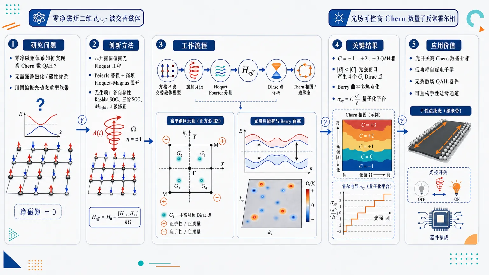
研究问题如何在零净磁矩的二维 dₓ²₋y² 波交替磁体中，不依赖传统强净磁化或磁性掺杂，通过圆偏振光动态重塑能带，使原本静态拓扑受限、低 Chern 数的体系转变为高 Chern 数量子反常霍尔绝缘体。创新方法用非共振圆偏振光进行 Floquet 工程：通过 Peierls 替换和高频 Floquet-Magnus 展开，从方格晶格模型解析得到有效哈密顿量。Aha 点在于光场不仅重整化 hopping，还诱导各向异性 Rashba SOC、三阶动量 SOC、Zeeman-like 光生磁化 Mₗᵢght，以及 d 波磁性交换中的各向同性 s 波修正；这些光生项在布里渊区非高对称位置创造四个额外 Gᵢ Dirac 点，成为高 Chern 数的拓扑电荷源。工作流程输入二维方格 dₓ²₋y² 波交替磁体模型，包含动能、Rashba SOC、d 波交替磁交换和垂直磁化 M_z；施加圆偏振光矢势 A(t)，用 Peierls 替换使 hopping 获得周期相位；将时间周期哈密顿量展开为 Floquet Fourier 分量；在高频非共振极限下计算有效 Floquet 哈密顿量；解析寻找 Γ、M、X、Y 与光诱导 Gᵢ 点的能隙闭合、chirality 和质量项符号；汇总 Dirac 点拓扑贡献得到 Chern 相图；最后用反常霍尔电导平台和纳米带边缘态验证量子反常霍尔相。关键结果圆偏振光把二维 d 波交替磁体转化为可调 Floquet Chern 绝缘体，产生 C=±1、±2、±3 的量子反常霍尔相；在 |B|<|C| 的光强窗口中出现四个静态体系没有的 Gᵢ Dirac 点，每个携带正拓扑电荷，与 Γ、M、X、Y 高对称点贡献叠加，可得到 C=+3 等高 Chern 数；Berry 曲率从少数高对称点扩展为多个热点，霍尔电导出现与 Chern 数一致的量子化平台，纳米带能隙内出现手性边缘态。应用价值该研究提供了一条在零净磁矩磁性体系中用光场开关和调谐高 Chern 数拓扑相的路线，可用于低功耗自旋电子学、无杂散场量子反常霍尔器件、可重构手性边缘通道和非平衡拓扑量子材料设计；其核心可控旋钮是光强、偏振手性、频率、Rashba SOC、交替磁交换 J 和外加/近邻磁化 M_z。第一部分：核心概览（Overview）
二维 (dₓ^₂₋y^₂)-波交替磁体在圆偏振光非共振驱动下可被 Floquet 工程化为量子反常霍尔绝缘体，Chern 数最高达到 (mathcal C=±3)。核心贡献在于：从晶格模型解析推导有效 Floquet 哈密顿量，揭示光诱导的各向异性 Rashba SOC、高阶动量 SOC、Zeeman-like 磁化与 (s)-波磁性修正共同生成额外 Dirac 点和高 Chern 数相。该工作把交替磁体、Floquet 拓扑和高 Chern 数 QAHE 连接起来，拓展了零净磁矩磁性体系中的非平衡拓扑相设计路径。
---
第二部分：结构化快速回顾
《Floquet-Engineered Chern Insulator in two-dimensional dₓ²₋y²-Wave Altermagnets》（None，）
背景
交替磁体兼具铁磁体的大动量依赖自旋劈裂与反铁磁体的零净磁矩，适合低功耗、自旋电子学与拓扑量子态研究。传统 QAHE 通常依赖净磁化或磁性掺杂，而 (dₓ^₂₋y^₂)-波交替磁体提供了零净磁矩条件下产生 Berry 曲率和拓扑能带的新平台。
方法
采用二维方格晶格两能带模型，包含动能、Rashba SOC、(dₓ^₂₋y^₂)-波交替磁交换项和外加 (M_z)。圆偏振光通过 Peierls substitution 引入，并在高频非共振极限下用 Floquet-Magnus 展开得到有效哈密顿量。
结果
圆偏振光诱导出可调控的 QAH 相，Chern 数为 (mathcal C=±1,±2,±3)。光场产生 Bessel 函数重整化、各向异性 SOC、三阶动量 SOC、光诱导 Zeeman-like 磁化 (Mₗᵢgₕₜ)，并在 (|B|<|C|) 区域生成四个额外 (Gᵢ) Dirac 点。
讨论
高 Chern 数来自高对称点 (Γ,M,X,Y) 与四个 Floquet 诱导 (Gᵢ) 点的拓扑贡献叠加。Berry 曲率随光强和偏振手性重新分布，圆偏振光有效破坏静态 (dₓ^₂₋y^₂)-波磁对称性并混入各向同性 (s)-波修正。
局限
分析依赖高频非共振近似和弱到中等光场条件；真实材料候选、耗散、加热、电子相互作用、样品缺陷与实验可实现光强尚未系统处理。所给内容中缺少完整 VIII、IX 节正文，数值验证细节只通过图注和引言摘要可见。
结论
二维 (dₓ^₂₋y^₂)-波交替磁体在圆偏振光下可成为 Floquet 工程化 Chern 绝缘体，高阶光诱导 SOC 与额外 Dirac 点使高 Chern 数 QAH 相成为可能。
---
第三部分：逐章节冷凝解析（Section-by-Section Condensing）
Abstract
- Floquet engineering creates high-Chern QAH phases
圆偏振光在非共振区间驱动二维 (dₓ^₂₋y^₂)-波交替磁体，可诱导光可调量子反常霍尔相，Chern 数最高达到 (±3)。核心表述为：*"We investigate Floquet-engineered topological phases in two-dimensional (dₓ²-y²)-wave altermagnets irradiated by circularly polarized light in the off-resonant regime."*；拓扑结果明确为：*"irradiation induces the light-tunable quantum anomalous Hall phases with the Chern numbers up to (± 3)."*
- Verification uses Hall conductivity and nanoribbon edge modes
相图不只由解析质量项推断，还通过反常霍尔电导和纳米带边缘态验证。关键证据为：*"The resultant phase diagram is verified by calculating the anomalous Hall conductivity and also the edge modes inside the band gap of a nanoribbon version of the altermagnet."*
- Light generates multiple effective terms
低能连续极限中，光诱导线性 SOC、高阶动量 SOC与Zeeman-like magnetization。关键句为：*"The low-energy continuum limit of the lattice-based Floquet Hamiltonian results in a linear and higher-order-in-momentum spin–orbit couplings, and also a Zeeman-like magnetization, all arising from light-induced virtual photon processes."*
- High Chern numbers originate from additional Dirac points
高阶 SOC 生成额外无能隙 Dirac 点，与高对称点闭合共同增强 Berry 曲率并提升 Chern 数。证据为：*"The resulting higher-order spin–orbit coupling generates the additional gapless Dirac points which, together with the high-symmetry gap-closings, yield enhanced Berry curvature and high Chern numbers."*
- CPL breaks pure d-wave magnetic symmetry by s-wave admixture
光照将静态 (dₓ^₂₋y^₂)-波磁对称性混入各向同性 (s)-波修正。核心表述：*"The light irradiation effectively breaks the static (dₓ²-y²)-wave magnetic symmetry mixing in an isotropic photo-induced (s)-wave correction."*
---
I Introduction
- Altermagnets form a third collinear magnetic class
交替磁体被定位为继铁磁体、反铁磁体之后的第三类共线磁性材料，兼具动量依赖自旋劈裂与零净磁矩。证据为：*"Altermagnets, recently identified as a third class of collinear magnetic materials, have attracted significant attention by combining key features of both ferromagnets and antiferromagnets."*
- Large spin splitting coexists with zero net moment
交替磁体中的非相对论自旋劈裂可与铁磁体杂散场相当，同时实空间净磁矩为零。原文指出：*"The alternating non-relativistic spin-splitting in altermagnets is comparable to the stray field in ferromagnets, leading to time-reversal symmetry breaking."*；又强调：*"their zero net magnetic moment in real space provides an ideal platform for developing ultradense and ultrafast memory devices."*
- Experimental status includes RuO₂ controversy and MnTe observation
材料背景包括 RuO₂ 和 MnTe；RuO₂ 被标注为有争议。原文为：*"Altermagnetism has been experimentally observed in materials such as (RuO₂) (controversial) and (MnTe)"*。
- QAHE requires TRS breaking and nontrivial topology
量子反常霍尔效应是破坏时间反演对称性的响应，提供无耗散手性边缘态。证据为：*"The quantum anomalous Hall effect (QAHE) which is a time-reversal-breaking response, provides dissipationless chiral edge states."*；实现条件为：*"A non-trivial topological band structure with spin-splitting is required to achieve these chiral edge states."*
- Zero-net-magnetization QAHE is especially attractive
零净磁矩下的 QAHE 对交替磁体与低功耗量子计算特别重要。关键句：*"QAHE at zero net magnetization is highly favorable especially in altermagnets which are promising for low-power quantum computing."*
- Altermagnetism naturally produces k-space asymmetric topology
交替磁体通过晶体磁对称性解除自旋简并，形成spin-momentum locking与交替自旋劈裂。证据为：*"Altermagnetism lifts spin degeneracy through specific crystal symmetries, leading to spin-momentum locking and alternating spin-splitting in reciprocal space."*；其磁对称类型包括：*"(dₓ²-y²), (g), or (i)-wave types."*
- Collinear compensated systems already show QAHE proposals
已有理论体系包括 twisted bilayers of (MnBi₂Te₄)、monolayer CrO、MoO、(RbCr₄S₈)。原文列举：*"The QAHE has been theoretically proposed in several collinear magnetically compensated systems, including twisted bilayers of (MnBi₂Te₄), monolayer CrO, MoO and (RbCr₄S₈)."*
- Floquet engineering overcomes absence of net magnetization
静态无净磁化约束传统拓扑机制，而圆偏振光可动态破坏时间反演并产生人工规范场。原文指出：*"the absence of a net magnetization imposes fundamental constraints on conventional topological mechanisms."*；解决路径为：*"Floquet engineering provides a powerful pathway to overcome these limitations."*；机制为：*"Through periodic driving with circularly polarized light, time-reversal symmetry is broken dynamically."*
- Central prediction is (mathcal C=±1,±2,±3)
光照二维 (dₓ^₂₋y^₂)-波交替磁体在非共振区间产生多种非平庸拓扑相。关键句：*"circularly polarized light (CPL) in the off-resonant regime iduces non-trivial topological phases characterized by the Chern numbers (C=±1,±2,±3)."*
- Origin of high Chern numbers is low-energy light-induced SOC and magnetization
低能连续极限显示：线性 Rashba SOC 被各向异性重整化，并出现高阶动量依赖 SOC 与 Zeeman-like 磁化。证据：*"the low-energy continuum limit ... renormalizes the linear Rashba spin–orbit coupling (SOC) anisotropically and generates higher-order momentum-dependent spin-orbit terms."*；磁化来源为：*"a Zeeman-like out-of-plane magnetization is also induced by the CPL which originates from virtual two-photon processes."*
---
II Static Lattice Model
- Model ingredients are square lattice, RSOC, d-wave exchange, and (M_z)
静态模型是二维方格晶格两能带模型，包含自旋无关动能、Rashba SOC、(dₓ^₂₋y^₂)-波交替磁交换、外加垂直磁化。原文定义：*"The effective two-band Hamiltonian for a (dₓ²-y²)-wave altermagnet on a square lattice can be expressed in the compact form (Hₛₜₐₜᵢc(k)=dstatⁱc(k)ḑotbmσ)."*
- Explicit static Hamiltonian components
晶格动能为
[
d₀statⁱc=2t[2-o̧s(kₓₐ₎₋ₒ̧s(k_ya)].
]
Rashba 项为
[
dₓstatⁱc=-łambdasin(k_ya),quad d_ystatⁱc=łambdasin(kₓₐ₎.
]
交替磁质量项为
[
d_zstatⁱc=2J[o̧s(k_ya)-o̧s(kₓₐ₎]+M_z.
]
解释性证据为：*"The intrinsic (dₓ²-y²)-wave altermagnetic exchange is encoded in (d_zstatⁱc) and produces a momentum-dependent spin splitting that alternates sign between the (kₓ) and (k_y) directions."*
- RSOC can be induced by substrate or inversion asymmetry
Rashba SOC 来源包括界面近邻效应或结构反演不对称。证据：*"The Rashba spin–orbit coupling (RSOC) can be induced either by interfacial proximity effects or by structural inversion asymmetry."*
- Uniform (M_z) has multiple extrinsic origins
(M_z) 可由外磁场、邻近铁磁体交换耦合或 Edelstein 效应引入。证据为：*"an effective out-of-plane magnetization may be induced by an external magnetic field, by proximity-induced exchange coupling from an adjacent ferromagnet, or via the Edelstein effect in the presence of an in-plane electric field."*
- Static symmetry gives zero net magnetization
交替磁体破坏反演，但保留时间反演与某些晶格操作的组合对称性，从而净磁矩为零。原文：*"In an altermagnt, the inversion symmetry is broken, however, a combination of time-reversal and lattice symmetry ... is preserved which guarantees to have zero net magnetization."*
- Gap closings occur at high-symmetry points when (d_z=0)
能隙为 (2sqrtsumᵢ dᵢ²)，闭合条件为 (dᵢ₌₀)。在 (Γ,M,X,Y) 点 Rashba 项为零。证据：*"At the high-symmetry points (Γ), (M(π,π)), (X(π,0)), and (Y(0,π)) ... the Rashba SOC terms vanish."*
- Mass terms determine static Chern number
高对称点质量项分别为：(Γ,M) 处 (M_z)，(X) 处 (M_z+4J)，(Y) 处 (M_z-4J)。Chern 数公式为
[
mathcal C=frac12[2øperatornamesgn(M_z)-øperatornamesgn(M_z+4J)-øperatornamesgn(M_z-4J)].
]
原文为：*"The corresponding mass terms are: (M_z) at (Γ) and (M), (M_z+4J) at X, and (M_z-4J) at Y points."*
- Static (M_z=0) is gapless and topologically trivial
(M_z=0) 时 Chern 数为 0，并且 (Γ)、(M) 点无能隙。证据：*"It follows that for zero external magnetization ((M_z=0)) the Chern number vanishes."*；能带证据为：*"In the absence of a uniform out-of-plane magnetization, the spectrum remains gapless at the (Γ) and (M) points."*
- Finite (M_z) yields (mathcal C=±1) QAHI
当 (0<M_z<4J) 时 (mathcal C=+1)，当 (-4J<M_z<0) 时 (mathcal C=-1)。原文：*"For a finite (M_z), the Chern number becomes (+1) for (0<M_z<4J) and (-1) for (-4J<M_z<0), corresponding to a quantum anomalous Hall insulator (QAHI)."*
- Numerical parameters for static band figure
图 2 使用 (łambda=0.3,eV)、(J=0.7,eV)、(M_z=0)，光照关闭。证据：*"We set Rashba spin-orbit coupling, (łambda=0.3~eV) and the altermagnetic spin splitting, (J=0.7~eV)."*
- Tight-binding real-space representation is specified
静态哈密顿量可写为最近邻 hopping：
[
T₀₌₄ₜσ₀₊M_zσ_z,
]
[
Tₓ₌₋ₜσ₀₋Jσ_z+fracłambda2iσ_y,quad
T_y=-tσ₀₊Jσ_z-fracłambda2iσₓ.
]
原文结构为：*"One can reconstruct the Hamiltonian represented in Eq. 1 as the following (Hstatⁱc(k)=T₀₊Tₓₑⁱkₓₐ+Tₓ^dagger e⁻ⁱkₓₐ+T_yeⁱk_ya+T_y^dagger e⁻ⁱk_ya)."*
- Continuum expansion near (Γ)
低能极限使用 (sin(kᵢₐ₎approx kᵢₐ)、(o̧s(kᵢₐ₎approx1-(kᵢₐ₎²/2)，得到
[
HΓstatⁱc=
ta²⁽kₓ²⁺k_y²⁾σ₀
+Ja²⁽kₓ²⁻k_y²⁾σ_z
+łambda a(kₓσ_y-k_yσₓ₎
+M_zσ_z.
]
证据为：*"The low-energy effective Hamiltonian is derived by expanding Hamiltonian in Eq. 1 around the (Γ) point ((kᵢ ałl1))."*
---
III Floquet Formalism
- Floquet theory handles time-periodic Hamiltonians
周期驱动体系 (H(t)=H(t+T)) 的自然描述是 Floquet 理论，关注频闪时间演化。原文：*"To investigate time-periodic Hamiltonians, such as those describing irradiated systems, the Floquet formalism provides the appropriate framework for analyzing the system’s evolution at stroboscopic times."*
- Energy is replaced by quasienergy
周期驱动中能量不守恒，物理本征量为准能量 (ǎrepsilon_α)。证据：*"since energy is not conserved"*；又有：*"the eigenvalues of (U(T)), which are physically meaningful, take the form (exp(-iǎrepsilon_α T))."*
- Floquet Hamiltonian from one-period evolution
时间演化算符
[
U(T)=mathcal Texp[-iint₀^T H(t)dt]
]
定义有效 Floquet 哈密顿量：
[
U(T)=exp(-iH_FT).
]
原文：*"It is always possible to define an effective Hermitian operator, known as the Floquet Hamiltonian (H_F)."*
- Time-periodic Schrödinger equation becomes Floquet eigenproblem
Floquet 态写为 (e⁻ⁱǎrepsⁱloⁿ_α t|ψ_α(t)ångle)，其中 (|ψ_α(t)ångle) 周期为 (T)。证据：*"Analogous to Bloch’s theorem for spatially periodic systems, a Bloch-like solution for time-periodic systems can be written as (e⁻ⁱǎrepsⁱloⁿ_α t|ψ_α(t)ångle)."*
- Fourier-space Floquet matrix equation
Fourier 展开后得到
[
sumₘ'[H⁽m⁻m'⁾-mØmegaδₘₘ']|ψ_αm'ångle
=ǎrepsilon_α|ψ_α^mångle.
]
Fourier 分量为
[
H⁽m⁾=frac1Tint₀^T H(t)eⁱm|Ømega|tdt.
]
原文：*"This equation is explicitly time periodic and is therefore naturally suited for a Fourier expansion in time, leading to a description in quasienergy space."*
- Quasienergy is restricted to first Floquet zone
准能量满足 (ǎrepsilon_αequivǎrepsilon_α+nØmega)，可限制在 (-Ømega/2<ǎrepsilon_α<Ømega/2)。证据：*"the quasienergy spectrum can be restricted to the first Floquet zone, (-Ømega/2<ǎrepsilon_α<Ømega/2)."*
---
IV Floquet Hamiltonian
- Circularly polarized light vector potential
圆偏振光矢势为
[
mathbf A(t)=A₀₍sinØmega t,o̧sØmega t),
]
(Ømega) 的符号区分右旋与左旋偏振。证据：*"where the sign of the light frequency (Ømega) distinguishes right-handed (positive) and left-handed (negative) circular polarization."*
- Light-matter coupling via Peierls substitution
光场通过 Peierls 替换进入晶格哈密顿量：
[
H(mathbf k)i̊ghtarrow H(mathbf k+mathcal A(t)),quad mathcal A=eA/hbar.
]
原文：*"The coupling between light and matter is modeled via the Peierls substitution."*
- Nearest-neighbor hopping acquires time-dependent phase
hopping 被改写为
[
Tₕₐₜ ᵣi̊ghtarrow Tₕₐₜ ᵣemathcal A⁽t⁾ḑothat r a.
]
该步骤假设矢势空间均匀。证据：*"Here, we assume a spacially uniform vector potential in real space."*
- Fourier components contain Bessel functions
第 (n) 个 Fourier 分量 (H⁽ⁿ⁾) 含有 (mathcal Jₙ₍ₐmathcal A₀₎)，即第一类 Bessel 函数。原文：*"where (mathcal Jₙ) denotes the Bessel Function of the first kind."*
- Hopping renormalization includes direction-dependent phase
Fourier 积分恒等式给出
[
frac1Tint₀^T eⁱamathcal A⁽t⁾ḑothat reⁱⁿØmega tdt
=mathcal Jₙ₍ₐmathcal A₀₎ₑⁱⁿ⁽π⁻θ⁾.
]
结论为：*"the time-averaged hopping parameters of the square lattice are renormalized by the factor (mathcal Jₙ₍ₐmathcal A₀₎ₑⁱⁿ⁽π⁻θ⁾) relative to their static values."*
- Full Floquet Hamiltonian is built from the Fourier matrix equation
完整 Floquet 哈密顿量由 III 节的 Fourier 空间本征值方程构造。原文：*"The full Floquet Hamiltonian is then constructed via the eigen-value equation in Eq. 8."*
---
V High frequency regime
- Off-resonant limit suppresses Floquet sideband transitions
高频非共振区间中，中心 Floquet 带与高阶 sidebands 的跃迁率很小。原文：*"in the off-resonant regime the transition rate between the central Floquet band and higher-order sidebands is negligibly small."*
- Effective Hamiltonian from inverse-frequency expansion
高频展开为
[
Heff=H⁽⁰⁾+sumₙ₌₁ⁱⁿftyfrac[H⁽⁻ⁿ⁾,H⁽⁺ⁿ⁾]nØmega+O(1/Ømega²⁾.
]
原文：*"the following series expansion in powers of the inverse frequency leads us to an effective Floquet Hamiltonian."*
- Even Fourier commutators vanish
偶数 Fourier 分量对有效哈密顿量的一阶 (1/Ømega) 修正没有贡献：
[
[H⁽⁻²m⁾,H⁽²m⁾]=0.
]
证据：*"the commutators of the even Fourier components vanish."*
- Effective lattice Hamiltonian has renormalized (d)-vector
有效哈密顿量写成
[
Hₑff=mathbf deffḑotboldsymbolσ.
]
其中
[
d₀eff=4t-2tB[o̧s(kₓₐ₎₊ₒ̧s(k_ya)],
]
[
dₓeff=-łambdasin(k_ya)[B+Co̧s(kₓₐ₎],
]
[
d_yeff=łambdasin(kₓₐ₎[B-Co̧s(k_ya)],
]
[
d_zeff=2JB[o̧s(k_ya)-o̧s(kₓₐ₎]
+J'o̧s(kₓₐ₎ₒ̧s(k_ya)+M_z.
]
原文引入：*"The resulting effective Hamiltonian is conveniently expressed in the form (Hₑff=mathbf deffḑotbmσ)."*
- Light parameters are encoded by (B,C,J')
系数定义为
[
B=mathcal J₀₍ₐmathcal A₀₎,quad
C=frac8JØmegamathcal S(amathcal A₀₎,
]
[
J'=frac4łambda²Ømegamathcal S(amathcal A₀₎.
]
其中
[
mathcal S(x)=sumₘ₌₀ⁱⁿfty(-1)^m(2m+1)⁻¹mathcal J₂ₘ₊₁²⁽x).
]
原文指出 (mathcal S) 是振荡函数：*"which is an oscillating function."*
- Static limit is exactly recovered
当 (mathcal A₀₌₀)，(mathcal S(0)=0)、(mathcal J₀₍₀₎₌₁)，有效模型退化为静态模型。证据：*"In the static limit ((mathcal A₀₌₀₎), using (mathcal S(0)=0) and (mathcal J₀₍₀₎₌₁) ... the static Hamiltonian ... is straightforwardly recovered."*
- Floquet drive breaks protecting combined symmetry
静态哈密顿量中的时间反演与旋转组合对称性被有效 Floquet 哈密顿量破坏，并导致光诱导 (z) 向磁化。原文：*"The combined time-reversal and rotation symmetry that protect the static Hamiltonian is broken in the effective Floquet Hamiltonian giving rise to a light-induced out-of-plane magnetization."*
- Validity requires weak modulation compared with photon energy
弱驱动连续描述要求相邻晶格点间的最大能量调制 (amathcal A₀) 小于 (hbarØmega)。证据：*"a continuum description becomes appropriate provided that the maximum energy modulation induced by the driving field between neighboring lattice sites ((amathcal A₀₎) remains much smaller than the photon energy (hbarØmega)."*
---
VI Continuum Limit
- Weak-field expansion simplifies Bessel functions
弱场区间由最低 (m=0) 项主导：
[
mathcal S(x)simeqmathcal J₁²⁽x)approx x²/4,
quad
mathcal J₀₍ₓ₎simeq1-x²/4.
]
原文：*"In the weak-field regime, the dominant contribution to the summation defining the (mathcal S)-function arises from the lowest term (m=0)."*
- Continuum Hamiltonian contains light-induced scalar shift
有效 (d₀) 为
[
d₀eff=t(kₓ²⁺k_y²⁺mathcal A₀²⁾a².
]
这表示光场带来动能标量修正。
- Linear Rashba SOC becomes anisotropic and cubic SOC appears
有效面内项为
[
dₓeff=-(łambda+łambda')k_ya+fracłambda'2kₓ²k_ya³,
]
[
d_yeff=(łambda-łambda')kₓₐ₊fracłambda'2k_y²kₓₐ³.
]
证据为：*"CPL renormalizes the linear Rashba spin–orbit coupling, leading to anisotropic SOC strength along the (kₓ) and (k_y) directions."*；高阶项证据为：*"a higher-order SOC term cubic in (mathbf k) is induced by the drive."*
- Light-induced SOC strength scales as virtual two-photon process
[
łambda'=frac2JJ'łambda,
quad
J'simeqfrac(łambda amathcal A₀₎²Ømega.
]
该标度反映虚光子吸收与发射。原文：*"reflecting the contribution of virtual two-photon absorption and emission processes."*
- Effective (d_z) mixes d-wave and s-wave magnetic textures
[
d_zeff=
[J(kₓ²⁻k_y²⁾⁻fracJ'2(kₓ²⁺k_y²⁾]a²
+Mₗᵢgₕₜ+M_z.
]
第一项是静态 (dₓ^₂₋y^₂)-波；第二项是各向同性 (k²) 修正。证据：*"The term (J(kₓ²⁻k_y²⁾) corresponds to the static altermagnetic exchange interaction."*；对比项为：*"the term proportional to (J'(kₓ²⁺k_y²⁾) provides an isotropic (k²) correction originating from virtual photon processes."*
- CPL breaks pure (dₓ^₂₋y^₂)-wave magnetic symmetry
圆偏振光混入有效 (s)-波成分，提升 Berry 曲率热点。证据：*"CPL breaks the pure (dₓ²-y²)-wave magnetic symmetry of the static altermagnet by admixing an effective (s)-wave component."*；结果为：*"opening additional gaps in the spectrum and generating new hot spots in the Berry curvature."*
- Perturbative condition is (J'łl J)
高频弱驱动中，诱导修正保持微扰性。证据：*"In the high-frequency and weak-driving regime considered here, the induced correction remains perturbative, satisfying (J'łl J)."*
- Light-induced Zeeman-like term is (Mₗᵢgₕₜ=J')
均匀动量无关磁化由 CPL 诱导，方向沿光传播方向。证据：*"The quantity (Mₗᵢgₕₜ=J') represents a light-induced Zeeman-like spin splitting."*；机制为：*"CPL generates an effective magnetic field through the Floquet commutator ([H₋₁,H₊₁])."*
- Cubic SOC is missed by simple (kḑot p) models
晶格模型出现传统连续 (kḑot p) 形式没有的高阶动量项和额外 gap-closing 点。证据：*"without counterpart in continuum (kḑotp) models."*；进一步说明：*"the continuum (kḑotp) models miss higher-order momentum-dependent terms and additional symmetry-related gap closing points."*
- Figure 3 parameters demonstrate gapless G-points and (mathcal C=+3)
图 3(a) 使用 (A₀₌₀.4,nm⁻¹)、(M_z=-0.37,eV)，显示四个 gapless (G)-points；图 3(b) 在 (A₀₌₀.385,nm⁻¹) 附近 Berry 曲率积分给出 (mathcal C=+3)。参数为 (łambda=0.5,eV)、(J=1.0,eV)、(Ømega=5,eV)。图注证据：*"the four gapless G-points are observed which are responsible for emerging of high Chern number in irradiated d-wave altermagnets."*；以及：*"An integral over the BZ results in high Chern number (mathcal C=+3)."*
---
VII Phase Diagram
- Topological transitions are controlled by gap closings of (Heff)
相图构建原则是有效 Floquet 哈密顿量能隙闭合分隔不同拓扑相。原文：*"topological phase transitions are separated by gap closings of the effective Floquet Hamiltonian (Heff)."*
- Chern number follows Dirac-point position and chirality
每个绝缘相的 Chern 数由关联 Dirac 点位置与 chirality 决定。证据：*"the Chern number of each insulating phase can be obtained by identifying the location and chirality of the associated Dirac points."*
---
VII.1 Gap-closing points and their classification
- Gap closing requires (dₓeff=d_yeff=0)
条件为
[
sin(k_ya)[B+Co̧s(kₓₐ₎]=0,
]
[
sin(kₓₐ₎[B-Co̧s(k_ya)]=0.
]
原文：*"The gap is closed at the points where the condition (dₓeff=d_yeff=0) is satisfied."*
- CPL generates four additional (Gᵢ) Dirac points
除高对称点外，圆偏振光在非高对称线上生成四个对称相关 Dirac 点 (Gᵢ)。证据：*"CPL generates four symmetry-related Dirac points located away from the high-symmetry lines, hereafter referred to as (Gᵢ) points."*
- (Gᵢ) points exist only when (|B|<|C|)
这些点是纯 Floquet 诱导特征，静态交替磁体中不存在。原文：*"These points exist only in the parameter regime (|B|<|C|) and are a purely Floquet-induced feature absent in the static altermagnet."*
- Kinetic parameter (t) does not affect phase boundaries
gap-closing 条件不依赖动能尺度 (t)，因此相图不依赖 (t)。证据：*"the gap-closing conditions determining the phase boundaries are independent of the kinetic energy scale (t), and therefore the resulting phase diagrams do not depend on (t)."*
- Lattice constant and bandwidth convention
方格晶格参数设为 (a=5,nm)，且 (t) 选得足够小以维持全局体能隙。原文：*"The lattice parameter (a) of the square lattice is considered to be (5,nm)."*
---
VII.2 Chirality and Chern number
- Dirac-point contribution is half-integer with chirality and mass sign
两能带模型中，Dirac 点 (mathbf k) 对 Chern 数的贡献为
[
mathcal Cₘₐₜₕbf ₖ=frac12øperatornamesgn(J₃d_z),
]
其中
[
J₃₌₍partialₖ_ₓěc d×partialₖ_yěc d)_z.
]
原文：*"For a two-band model, the contribution of a Dirac point at momentum (k) to the Chern number is given by (mathcal Cₖ=frac12,sgn(J₃dz))."*
- Chirality at high-symmetry and G points is analytic
[
J₃₍Γ/M)=(łambda a)²⁽B²⁻C²⁾,
]
[
J₃₍X/Y)=-(łambda a)²⁽Bmp C)²<0,
]
[
J₃₍Gᵢ₎₌₍łambda a)²⁽C²⁻B²⁾²>0.
]
结论为：*"the chirality of the (X) and (Y) points is always negative, whereas each (Gᵢ) point carries a positive topological charge."*
- (Γ) and (M) chirality switches at (|B|=|C|)
(Γ/M) 点 chirality 由 (B²⁻C²) 决定，因此在 (|B|=|C|) 改变符号。证据：*"The sign of the chirality at (Γ) and (M) depends on whether (|B|) is larger or smaller than (|C|)."*
- Total Chern number is sum over Dirac contributions
[
mathcal C=sumₘₐₜₕbf ₖᵢₙ D_ᵢmathcal Cₘₐₜₕbf ₖ.
]
原文：*"The total Chern number of the occupied band is obtained by summing the contributions of all Dirac points encountered when tuning system parameters."*
---
VII.3 Phase diagrams and physical interpretation
- Phase diagram is plotted versus (M_z) and (mathcal A₀)
图 4 给出右旋与左旋圆偏振光下，(M_z)-(mathcal A₀) 平面中的 Chern 相图。图注证据：*"Phase diagram ... plotted as a function of the out-of-plane magnetization ((M_z)) and the light amplitude ((mathcal A₀₎)."*
- Parameters for Fig. 4
使用 (łambda=0.5,eV)、(J=0.7,eV)、(Ømega=5,eV)。图注：*"Parameters: (łambda=0.5~eV), (J=0.7~eV), and (Ømega=5~eV)."*
- Analytical Chern numbers are confirmed by Fukui–Hatsugai–Suzuki method
Chern 数解析获得，并用离散化算法独立验证。证据：*"obtained analytically and independently confirmed using the Fukui–Hatsugai–Suzuki discretization scheme."*
- Low/moderate intensity (|B|>|C|) supports (|mathcal C|=1)
当 (|B|>|C|)，小外磁化即可稳定 (|mathcal C|=1) 的 QAH 相。原文：*"For light intensities satisfying (|B|>|C|), even a small external magnetization stabilizes a quantum anomalous Hall (QAH) phase with (|mathcal C|=1)."*
- High-Chern phases emerge in (|B|<|C|)
当 (|B|<|C|)，四个 (G) 点出现并导致高 Chern 数。证据：*"within the intensity window (|B|<|C|), the emergence of the four (G) points leads to high-Chern-number phases."*
- Example (mathcal C=+3) combines high-symmetry and G-point contributions
图 4(a) 中
[
mathcal C=(mathcal C_Γ+mathcal C_M+mathcal C_X+mathcal C_Y)+sumᵢ₌₁⁴mathcal CG_ᵢ=+3.
]
原文直接给出：*"the total contribution (mathcal C=(mathcal CΓ+mathcal CM+mathcal CX+mathcal CY)+sumᵢ₌₁⁴mathcal CG_ᵢ=+3)."*
- High Chern numbers are caused by higher-order light-induced SOC
大 Chern 数由光诱导高阶 SOC 驱动，其强度由驱动振幅控制。证据：*"These large Chern numbers arise from light-induced higher-order spin–orbit coupling terms ... whose strength is controlled by the driving amplitude."*
- Increasing (J) broadens high-Chern window
高 Chern 相的参数窗口随交替磁自旋劈裂 (J) 增大而拓宽。原文：*"the window supporting high-Chern-number phases broadens significantly with increasing altermagnetic spin splitting (J)."*
- Critical transition for (M_z<0) at low light intensity
右旋圆偏振光低强度下，(M_z>0) 时 (Γ,M) 保持开隙；(M_z<0) 时在
[
M_zcr.approx-2łambda²x²/Ømega,quad x=amathcal A₀
]
发生 (Γ,M) 拓扑相变。证据：*"for (M_z<0) the gap closes at a critical magnetization (M_zcr.approx-2łambda²x²/Ømega), leading to a topological phase transition at the (Γ) and (M) points."*
- Figure 5 maps (J)-(mathcal A₀) phase diagrams
图 5 在右旋圆偏振光 (sgn(Ømega)>0) 下给出 (J)-(mathcal A₀) 相图，分别对应 (M_z=+0.2,eV) 与 (M_z=-0.2,eV)。图注证据：*"shown as a function of the altermagnetc spin-splitting (J) and the light amplitude (mathcal A₀)."*；参数为：*"Parameters: (łambda=0.5) eV and the light frequency (Ømega=5) eV."*
- Figure 6 Hall conductivity confirms phase boundaries
零温量子反常霍尔电导 (σₓy) 随 (mathcal A₀) 出现平台结构，跟随图 4、图 5 拓扑边界。图注证据：*"The resulting Hall-plateau structure closely follows the topological phase boundaries shown in Figs. 4 and 5."*；参数为 (J=0.7,eV)、(łambda=0.5,eV)、(Ømega=+5,eV)，磁化包括 (M_z=+5,meV) 与 (M_z=±0.2,eV)。
---
VIII Verification / edge-state analysis
- Provided body text is incomplete, but verification strategy is explicit
可见内容只包含引言摘要和图注级信息，完整 VIII 节正文未出现。已给出的验证路径包括反常霍尔电导与纳米带边缘态。证据来自摘要：*"verified by calculating the anomalous Hall conductivity and also the edge modes inside the band gap of a nanoribbon version of the altermagnet."*
- Hall conductivity plateau supports Chern assignment
图 6 的零温 (σₓy) 平台与相图拓扑边界一致，说明 Chern 数赋值与输运响应相匹配。证据：*"Quantum anomalous Hall conductivity (σₓy) at zero temperature as a function of the light amplitude (mathcal A₀)"*；以及：*"The resulting Hall-plateau structure closely follows the topological phase boundaries shown in Figs. 4 and 5."*
---
IX Conclusion
- Provided conclusion text is unavailable, but central conclusion is recoverable from abstract and introduction
二维 (dₓ^₂₋y^₂)-波交替磁体在圆偏振光非共振驱动下可实现 Floquet Chern 绝缘体，高 Chern 数由额外 (Gᵢ) Dirac 点、高阶 SOC、Berry 曲率重分布与光诱导磁化共同产生。核心证据为：*"Our findings establish d-wave altermagnets as promising platforms for realizing nonequilibrium topological states of matter."*
---
第四部分：深度理解与语言支持（Understanding & Nuance）
1. 术语解析
Altermagnetism
Altermagnetism 指一种共线磁性序，其中实空间总磁矩为零，但动量空间存在显著、交替符号的自旋劈裂。它不是普通反铁磁，因为普通反铁磁常保持 (PT) 或等效对称导致能带自旋简并；交替磁体则通过晶体旋转/平移与时间反演的组合对称性产生非相对论自旋劈裂。语境中关键差别是：它能在零净磁矩下提供类似铁磁体的 Berry 曲率来源。
Off-resonant regime
Off-resonant regime 是光子能量远离电子带间跃迁能量的驱动区间。这里光主要通过虚光子过程改变有效哈密顿量，而不是产生真实吸收跃迁。其物理意义是降低加热和激发，允许使用高频展开：
[
Heff=H⁽⁰⁾+frac[H⁻¹,H⁺¹]Ømega+ḑots.
]
Floquet-engineered
Floquet-engineered 不只是“被光照射”，而是指通过周期驱动系统性地改造能带、质量项、SOC 与 Berry 曲率。此处圆偏振光改变 hopping、产生 Bessel 函数重整化，并生成静态系统没有的 (Gᵢ) Dirac 点。
Zeeman-like magnetization
Zeeman-like 表示形式上类似 Zeeman 项 (Mσ_z)，但不一定来自真实外磁场。这里 (Mₗᵢgₕₜ=J') 来自 Floquet commutator 和虚光子过程，本质是光诱导有效磁场。
Higher-order momentum-dependent SOC
该表达指 SOC 不再只含 Rashba 线性项 (kₓσ_y-k_yσₓ)，还包含 (kₓ²k_yσₓ)、(k_y²kₓσ_y) 等三阶动量项。这些项在仅围绕 (Γ) 点的传统 (kḑot p) 展开中容易被忽略，但在全 BZ 晶格模型中决定额外 Dirac 点和高 Chern 数。
---
2. 疑难查证：为什么光能让 Chern 数从 (±1) 升到 (±3)？
静态模型的拓扑相变主要由 (Γ,M,X,Y) 四个高对称点控制。每个 Dirac 点在质量项变号时向 Chern 数贡献 (±1) 的跳变；在普通情形下，只有少数高对称点参与，所以容易得到 (mathcal C=±1)。
圆偏振光加入后，(dₓ,d_y) 中出现：
[
B+Co̧s(kₓₐ₎,quad B-Co̧s(k_ya).
]
当 (|B|<|C|) 时，这两个因子可以在非高对称动量处为零，从而满足
[
dₓ₌d_y=0.
]
于是布里渊区中多出四个 (Gᵢ) Dirac 点。每个 (Gᵢ) 的 chirality 为正：
[
J₃₍Gᵢ₎₌₍łambda a)²⁽C²⁻B²⁾²>0.
]
四个点共同提供额外拓扑电荷，再与 (Γ,M,X,Y) 的贡献叠加，就可能得到：
[
mathcal C=+3
]
或对应手性反转下的负值。
直观图像：圆偏振光不是简单“打开一个 gap”，而是在整个布里渊区重塑 SOC 纹理，使 Berry 曲率从少数高对称点扩展到新热点；高 Chern 数就是多个 Berry 曲率源的总通量。
---
第五部分：创新评估与关联（Synthesis & Novelty）
1. 创新性判断
从静态交替磁 QAHE 拓展到 Floquet 高 Chern 数 QAH 相
过去 2–5 年中，交替磁体研究主要集中在材料鉴定、自旋劈裂、反常霍尔效应、静态拓扑能带或特定材料的 QAHE 预测。该工作的新颖性在于把 Floquet engineering 系统用于 (dₓ^₂₋y^₂)-波交替磁体，并展示非平衡驱动可产生 (mathcal C=±1,±2,±3) 的多级 QAH 相。
解决零净磁矩中拓扑质量项不足的问题
静态 (dₓ^₂₋y^₂)-波交替磁体在 (M_z=0) 时 (Γ,M) 点无能隙，Chern 数为零。传统方法需要外加均匀磁化或材料内禀机制。圆偏振光提供了一种动态方案：通过虚光子过程产生 (Mₗᵢgₕₜ)、(J') 与 SOC 各向异性，在不依赖大净磁矩的情况下增强拓扑质量项。
发现 Floquet 诱导的额外 (Gᵢ) Dirac 点机制
最核心的新机制是 (|B|<|C|) 区域中出现四个非高对称 (Gᵢ) Dirac 点。这些点不是静态模型的自然结果，而是光诱导高阶 SOC 和 Bessel 重整化共同产生。它们的正 chirality 与高对称点贡献叠加，解释了高 Chern 数来源。
晶格 Floquet 模型揭示 (kḑot p) 模型遗漏的高阶项
传统连续 (kḑot p) 模型通常只保留 (Γ) 点附近的线性 SOC 与低阶质量项，因此看不到全 BZ 中的额外 gap closing。该晶格模型给出完整 BZ 解析哈密顿量，保留 (o̧s(kᵢₐ₎)、(sin(kᵢₐ₎) 与 Bessel 因子，因此能捕捉三阶 SOC、(Gᵢ) 点与高 Chern 相。
光诱导 d-wave 与 s-wave 磁对称混合
交替磁体的静态磁纹理为 (dₓ^₂₋y^₂)-波：
[
J(kₓ²⁻k_y²⁾.
]
圆偏振光诱导各向同性项：
[
-fracJ'2(kₓ²⁺k_y²⁾,
]
等效混入 (s)-波磁性成分。这一“磁对称性 Floquet 混合”是连接交替磁对称性与非平衡拓扑相变的关键概念。
可检验性较强
预测不仅停留在解析相图，还通过 Hall 电导平台和纳米带边缘模验证；这使理论结果与实验可观测量 (σₓy) 以及边缘输运具有直接联系。关键可调参数包括光强 (mathcal A₀)、偏振手性 (øperatornamesgn(Ømega))、频率 (Ømega)、交替磁交换 (J)、Rashba SOC (łambda) 和外加/近邻 (M_z)。
-
03
📊 含图深析
📄 摘要：研究圆偏振离共振光驱动并由近邻铁磁体交换耦合诱导面外磁化的二维 dxy 波交替磁体。晶格 Floquet 理论显示驱动参数 β 控制不同能隙闭合点和拓扑相；当 |β|>1 时，各向异性 Dirac 点主导拓扑，可形成具有非零 Chern 数的量子反常 Hall 相。
💡 亮点：dxy 波交替磁体在圆偏振光和面外交换场下出现 β 控制的 Floquet Chern 相。光场可通过 Dirac 点闭合重构其反常 Hall 响应。
📖 展开分析 + 配图
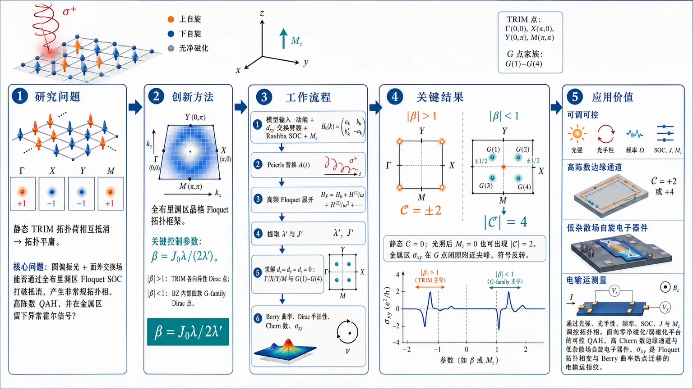
研究问题二维 dₓᵧ-wave altermagnet 在静态下因 TRIM 点拓扑荷相互抵消而拓扑平庸；核心问题是：圆偏振光与面外交换场能否通过全布里渊区 Floquet 自旋轨道耦合，打破这种抵消，产生非常规拓扑相、高陈数量子反常霍尔相，并在金属区留下可观测的异常霍尔信号。创新方法提出全布里渊区晶格 Floquet 拓扑框架，而非只看 Γ/X/Y/M 附近低能模型；关键 Aha 点是引入控制参数 β=𝒥₀λ/(2λ′)，把普通 Rashba SOC 与光诱导高次谐波 SOC 的竞争压缩成一条拓扑分界：|β|>1 时只有高对称 TRIM 各向异性 Dirac 点，|β|<1 时光场在布里渊区内部生成四族 off-symmetry G-family Dirac 点，拓扑荷可建设性叠加形成 |𝒞|=4。工作流程输入二维平方晶格 dₓᵧ altermagnet 两带模型，包含动能、dₓᵧ 交换劈裂、Rashba SOC 与面外磁化 M_z；通过 Peierls 替换耦合圆偏振光 A(t)，用高频 Floquet 展开得到有效 Hamiltonian；提取光诱导 λ′ 高次谐波 SOC 与 J′ 自旋劈裂；求解 dₓ₌d_y=d_z=0 定位 Γ/X/Y/M 与 G(1)–G(4) 闭隙点；计算 Dirac 手征性、质量反转、Berry 曲率热点与 Chern 数；最后用异常霍尔电导 σₓy 追踪绝缘相和金属区拓扑边界。关键结果β 将相图分成两种视觉清晰的拓扑机制：|β|>1 时 Berry 曲率热点锁定在 Γ/X/Y/M，产生 𝒞=±2；|β|<1 时热点从 TRIM 迁移到布里渊区内部的 G 点，四重对称复制的 G 点每个携带 ±1/2 拓扑荷，可建设性累加得到 𝒞=±4 高陈数相。静态体系 Chern 数始终为 0，而光照后即使 M_z=0 也可出现 |𝒞|=2；金属区 σₓy 虽不量子化，但在 G 点闭隙附近出现尖峰、强烈变化和符号反转。应用价值该研究给出用圆偏振光开关 altermagnet 拓扑相的设计路线：通过调节光强、光手性、频率、SOC、交换能 J 和面外磁化 M_z，可在零净磁化或弱磁化平台中实现可控量子反常霍尔相、高 Chern 数边缘通道和低杂散场自旋电子器件；异常霍尔电导可作为实验上识别 Floquet 拓扑相变与 Berry 曲率热点迁移的直接电输运指纹。第一部分：核心概览
该研究建立了二维 dₓᵧ-wave altermagnet 在圆偏振光与面外交换场共同作用下的全布里渊区 Floquet 拓扑理论。核心贡献在于发现无量纲光驱动参数 β 将体系分为两类拓扑机制：|β|>1 时由高对称 TRIM 各向异性 Dirac 点主导，产生 |𝒞|=2；|β|<1 时出现光诱导离高对称点的 G-family Dirac 点，可实现 |𝒞|=4 高陈数相，并在金属区通过 anomalous Hall conductivity 显示可观测拓扑特征。
---
第二部分：结构化快速回顾
《Floquet Topological Phases and Anomalous Hall Signatures in Irradiated Two-dimensional dₓy-Wave Altermagnets》（None，）
背景
Altermagnets 兼具零净磁化与动量依赖自旋劈裂，可在无宏观磁矩条件下产生 Berry 曲率和异常霍尔响应。已有 Floquet altermagnet 研究多集中于低能高对称点，缺少全布里渊区光诱导 SOC 对全局拓扑的系统刻画。
方法
采用二维平方晶格 dₓᵧ-wave altermagnet 两带模型，引入 Rashba SOC、altermagnetic exchange、面外磁化 M_z，通过 Peierls 替换耦合圆偏振光，在高频展开中构造有效 Floquet Hamiltonian，并用 Dirac 点手征性、质量反转、Berry 曲率和 Fukui–Hatsugai–Suzuki 离散法计算 Chern 数。
结果
光场产生两个关键修正：高次谐波 SOC λ′ 与光诱导自旋劈裂 J′。参数 β=𝒥₀λ/(2λ′) 控制拓扑结构：|β|>1 时仅 TRIM 点参与，得到 𝒞=±2；|β|<1 时出现四族 off-symmetry Dirac 点 G(1)–G(4)，每族含 4 个点，最高得到 𝒞=±4。
讨论
高 Chern 数并非来自传统高对称点质量反转，而是来自光诱导离高对称点 Dirac 点的建设性拓扑贡献。Berry 曲率热点随光强在 TRIM 与 G 点之间迁移，解释拓扑相变过程。金属区 AHC 虽不量子化，但仍可通过强烈变化与符号反转追踪拓扑边界。
局限
理论建立在 off-resonant high-frequency 近似与两带有效模型上；未包含耗散、加热、无序、电子相互作用、有限尺寸边界态输运和具体材料参数拟合。实验可行性主要通过 AHC 信号间接论证。
结论
全布里渊区 Floquet-engineered SOC 可在二维 dₓᵧ-wave altermagnet 中产生非常规 off-symmetry 拓扑临界点、高陈数 QAH 相与金属异常霍尔特征，展示了光场调控 altermagnetic topology 的新机制。
---
第三部分：逐章节冷凝解析
Abstract
- Floquet topology is engineered by off-resonant CPL and out-of-plane exchange
体系为二维 dₓᵧ-wave altermagnet，外加 off-resonant circularly polarized light 与来自邻近铁磁体的面外交换磁化。核心物理设置是光驱动加外源交换场共同重塑拓扑能带；原文明确为 *"two-dimensional dxy-wave altermagnets driven by off-resonant circularly polarized light and subject to an out-of-plane magnetization induced via extrinsic exchange coupling from a proximate ferromagnet."*
- β is the central control parameter
拓扑由无量纲驱动参数 β 控制，该参数决定不同闭隙点和拓扑相的出现；原文给出 *"the system is governed by a driving parameter β that controls the emergence of distinct gap-closing points and associated topological phases."*
- Two β regimes produce different topological mechanisms
当 |β|>1，拓扑由高对称点各向异性 Dirac 点主导，产生 |𝒞|=2；当 |β|<1，出现光诱导 off-symmetry G points，形成最高 |𝒞|=4 的高陈数相。原文为 *"For |β|>1, topology is dominated by anisotropic Dirac points at high symmetry points, leading to Chern phases with |𝒞|=2."* 以及 *"For |β|<1, light-induced off-symmetry G points appear in four families in the Brillouine zone, enabling higher Chern phases up to |𝒞|=4."*
- Low-energy theories distinguish TRIM and G points
高对称点对应 anisotropic massive Dirac fermions，而 G 点是具有全动量依赖赝自旋结构的广义二维各向异性 Dirac 点；这导致 Berry 曲率分布不同。原文指出 *"high symmetry points host anisotropic massive Dirac fermions, while G points realize generalized two-dimensional anisotropic Dirac points with fully momentum-dependent pseudospin structure."*
- AHC provides metallic-regime signatures
金属区中，anomalous Hall conductivity 是实验可观测信号，其尖锐结构来自局域闭隙附近 Berry 曲率积累；原文为 *"In the metallic regime, the anomalous Hall conductivity provides an experimental signature of these Floquet topological phases, exhibiting sharp features associated with Berry curvature accumulation near local gap-closing regions."*
---
I Introduction
- Altermagnets combine compensated magnetism and momentum-dependent spin splitting
Altermagnets 是共线补偿磁体，净磁化为零，但具有由晶体对称性保护的动量依赖自旋劈裂。其基本定义被概括为 *"a recently established class of collinear compensated magnets that combine vanishing net magnetization with symmetry-protected momentum-dependent spin splitting."*
- d-, g-, and i-wave spin textures arise from alternating spin polarization
交替自旋极化来自连接相反自旋子晶格的晶体对称性，可形成 d-wave、g-wave、i-wave 自旋纹理；原文写道 *"The alternating spin polarization originates from crystal symmetries relating opposite-spin sublattices and gives rise to characteristic d-, g-, and i-wave spin textures."*
- SOC enables Berry curvature and anomalous Hall response without macroscopic magnetization
在 SOC 存在时，动量空间自旋劈裂产生有限 Berry curvature 和本征 anomalous Hall responses，即使没有宏观磁矩。原文强调 *"such momentum-space spin splitting generates finite Berry curvature and intrinsic anomalous Hall responses despite the absence of a macroscopic magnetic moment."*
- Periodic driving is positioned as a topological band-engineering tool
周期驱动可构造超越平衡态的拓扑能带结构；原文为 *"Periodic driving provides a powerful route for engineering topological band structures beyond equilibrium."*
- Prior Floquet altermagnet work missed global BZ SOC effects
近年研究已经涉及高阶 SOC、持续自旋纹理、自旋极化控制、奇宇称 altermagnetic states、AHC 和拓扑相变，但许多依赖高对称点低能模型。关键空白是全布里渊区光诱导 SOC 对全局拓扑和非常规 off-symmetry 临界点的影响；原文指出 *"the role of light-induced SOC acting throughout the entire Brillouin zone giving rise to the global topology and generating unconventional off-symmetry topological critical points remain largely unexplored."*
- Conventional 2D topological transitions are usually TRIM or high-symmetry Dirac driven
多数二维拓扑系统的相变由高对称动量处 Dirac 点控制，其拓扑由手征性和质量反转决定；原文为 *"phase transitions are governed by Dirac points located at high-symmetry momenta, whose topology is determined by chirality and mass inversion."*
- Lattice Floquet description reveals off-symmetry band touchings
全晶格 Floquet 模型显示，光诱导 SOC 作用于整个 BZ，可产生额外离高对称点的能带接触点；原文写道 *"A lattice-based Floquet description can reveal a richer scenario in which light-induced SOC acts throughout the entire Brillouin zone and generates additional off-symmetry band-touching points."*
- Off-symmetry critical points may fall outside conventional massive-Dirac universality
这些 off-symmetry 点不必属于传统 massive Dirac 普适类，并可产生不同低能结构与 Berry 曲率分布；原文为 *"these off-symmetry critical points need not belong to the conventional massive-Dirac universality class and can exhibit distinct low-energy structures and Berry-curvature distributions."*
- Metallic regimes retain topological information via Berry curvature hotspots
拓扑相不局限于完全绝缘态；金属区 Berry 曲率集中在由周期驱动产生的 avoided crossings 附近。原文指出 *"In metallic regimes, topology is encoded in Berry-curvature hotspots concentrated near avoided crossings generated by the periodic drive."*
- Haldane Fermi-surface logic connects AHC with Fermi-level geometry
虽然金属 AHC 通常不量子化，但其本征部分仍对费米能附近电子态几何敏感；原文为 *"Although the Hall response is generally not quantized, Haldane’s Fermi-surface formulation shows that the intrinsic anomalous Hall conductivity (AHC) remains directly sensitive to the geometric structure of electronic states near the Fermi level."*
- Main claimed advance is full-BZ Floquet-engineered SOC
核心新意是将 Floquet-engineered SOC 纳入整个 BZ，而非局部低能近似；原文强调 *"our lattice-based formulation incorporates Floquet-engineered SOC throughout the entire Brillouin zone."* 这种全局修正导致 *"unconventional off-symmetry topology"*，并在 AHC 中产生 *"strong variations and sign reversals even in metallic regimes."*
---
II Static Lattice Model
- The static two-band square-lattice Hamiltonian contains kinetic, altermagnetic, Rashba, and Zeeman-like terms
静态 Hamiltonian 为两带模型：
[
Hₛₜₐₜᵢc=2t[2-o̧s(kₓₐ₎₋ₒ̧s(k_ya)]σ₀
+2Jsin(kₓₐ₎sin(k_ya)σ_z
+łambda[sin(kₓₐ₎σ_y-sin(k_ya)σₓ]
+M_zσ_z .
]
其组成被说明为 *"The first term is represented the kinetic energy written for a square lattice with lattice parameter a=5 nm."*、*"The intrinsic altermagnetic exchange field is represented in the second term"*、*"The relativistic Rashba spin–orbit coupling (RSOC) corresponds to the third term"*，以及 *"a uniform external out-of-plane magnetization is also assumed in the last term."*
- The altermagnetic exchange produces nonrelativistic dₓᵧ spin splitting
第二项 2J sin(kₓa) sin(kᵧa) σ_z 体现 dₓᵧ-wave 符号交替的动量依赖交换劈裂。原文具体说明其作用为 *"produces a nonrelativistic momentum-dependent spin splitting with alternating sign."*
- Out-of-plane magnetization may be externally or proximally induced
M_z σ_z 可来自外部 Zeeman 场、与铁磁体相邻导致的外源交换耦合，或 Edelstein 效应。原文列出三种来源：*"applying an external Zeeman magnetic field, extrinsic exchange couplings originated from neighboring to a ferromagnet, or by using the Edelstein effect due to the spin splitting under an in-plane electric field."*
- Low-energy Γ expansion recovers continuum dₓᵧ altermagnet form
在 Γ 点 附近：
[
H approx ta²⁽kₓ²⁺k_y²⁾σ₀₊Ja²kₓₖ_yσ_z+łambda a(kₓσ_y-k_yσₓ₎₊M_zσ_z.
]
原文指出 *"The low-energy effective Hamiltonian is wel-known and is achievable by expanding Hamiltonian given in Eq. 1 around the Γ point."*
- Static TRIM gap closings occur at Γ, X, Y, M
全晶格静态模型的局域闭隙点在四个 TRIM：
[
Γ=(0,0),quad X=(π/a,0),quad Y=(0,π/a),quad M=(π/a,π/a).
]
原文为 *"local gap closings occur at the TRIM Γ=(0,0), X=(π/a,0), Y=(0,π/a), M=(π/a,π/a)."*
- Static chirality cancels among TRIM points
静态情形手征性满足：
[
j_z|Γ,M=-j_z|X,Y=(łambda a)².
]
原文给出 *"The chirality at these points is given by jz|Γ,M=−jz|X,Y=(λa)²."*
- Static Chern number is always zero
四个 TRIM 的质量项均为 M_z，Chern 数为：
[
mathcal C=frac12 øperatornamesgn(M_z)sumₘₐₜₕbf ₖᵢₙ TRIMøperatornamesgn(j_z[mathbf k])=0 .
]
因而静态体系拓扑平庸。原文结论为 *"in the static case, independent of the value of Mz, the contributions from the high-symmetry points cancel out in the Chern number calculation giving rise to topologicaly trivial altermagnet."*
- Real-space tight-binding representation includes axial and diagonal hopping
实空间 Hamiltonian 含 onsite、x/y 最近邻与两条对角跳跃：
[
T₀₌₄ₜσ₀₊M_zσ_z,quad
Tₓy=-Tₓ,₋y=-frac J4σ_z,
]
[
Tₓ₌₋ₜσ₀₊fracłambda2iσ_y,quad
T_y=-tσ₀₋fracłambda2iσₓ.
]
原文将其定义为 *"the onsite and hopping matrices are defined as"* 后列出 Eq. 5。
- Static model prepares the contrast with CPL-induced topology
静态模型没有 G 点，也没有非零 Chern 数；光场将改变每个闭隙点的手征性与质量项，并产生额外普通 Dirac 点。原文预告为 *"the chirality of each gap-closing point and its corresponding mass term change upon application of a CPL which leads to rich topological phases."* 以及 *"additional generic Dirac points emerge away from the high-symmetry points."*
---
III Floquet Hamiltonian
- Circularly polarized light enters through time-periodic vector potential
光场采用：
[
mathbf A(t)=A₀₍sinØmega t,o̧sØmega t),
]
其中 Ω 的符号区分右旋与左旋圆偏振。原文说明 *"the sign of the light frequency Ω determines right-handed (positive) and left-handed (negative) circular polarization."*
- Peierls substitution couples light to lattice hopping
光-物质耦合通过：
[
mathbf ki̊ghtarrow mathbf k+mathcal A(t),quad mathcal A=eA/hbar.
]
在 tight-binding 中体现为 hopping 相位修正。原文为 *"The coupling between light and matter is modeled via the Peierls substitution k→k+𝒜(t) which is applied on the tight-binding Hamiltonian."*
- Spatially uniform vector potential is assumed
电磁场空间上均匀，仅时间周期变化。原文明确 *"we assume spacially uniform vector potential in real space."*
- Floquet Hamiltonian is built from temporal Fourier components
Floquet 矩阵元为：
[
(H_F)ₘ,ₘ'=H⁽m⁻m'⁾-mØmegaδₘₘ'.
]
Fourier 分量为：
[
H⁽m⁾=frac1Tint₀^T H(t)eⁱm|Ømega|tdt.
]
原文说明 *"The Schroedinger equation is explicitly time-periodic, so it is naturally suited for Fourier-transformation in time."*
- High-frequency expansion gives an effective Hamiltonian
高频有效 Hamiltonian：
[
Heff=H⁽⁰⁾+sumₙ₌₁ⁱⁿfty (nØmega)⁻¹[H⁽⁻ⁿ⁾,H⁽⁺ⁿ⁾]+O(1/Ømega²⁾.
]
原文定位为 *"An effective Floquet Hamiltonian in the high-frequency regime can be obtained by using perturbation theory which is a series expansion in powers of the inverse frequency."*
- Effective d-vector contains renormalized SOC and light-induced higher harmonics
有效 Hamiltonian 写为：
[
Hₑff=mathbf deffḑotboldsymbolσ .
]
关键分量为：
[
dₓ₌₋mathcal J₀łambdasin(k_ya)+łambda'sin(2kₓₐ₎ₒ̧s(k_ya),
]
[
d_y=mathcal J₀łambdasin(kₓₐ₎₋łambda'sin(2k_ya)o̧s(kₓₐ₎,
]
[
d_z=Jmathcal J₀sin(kₓₐ₎sin(k_ya)+J'o̧s(kₓₐ₎ₒ̧s(k_ya)+M_z .
]
原文将其表述为 *"The resulting effective Hamiltonian is conveniently expressed in the form Heff=deff·σ."*
- λ′ and J′ encode two distinct Floquet corrections
光诱导 SOC 修正强度：
[
łambda'=frac2łambda JØmegamathcal S_łambda(amathcal A₀₎,
]
光诱导自旋劈裂：
[
J'=frac4łambda²Ømegamathcal S_J(amathcal A₀₎.
]
原文定义为 *"the correction strength on SOC induced by light is defined as λ′=..."* 以及 *"a light-induced spin-splitting is given by J′=..."*
- High-symmetry point gaps become M_z±J′ controlled
光场在 TRIM 打开不同质量隙：
[
2|M_z+J'|quad for Γ,M,
]
[
2|M_z-J'|quad for X,Y.
]
原文直接给出 *"the light-induced gap is openned at the high-symmetry points such that it is 2|Mz+J′| for the Γ and M points and 2|Mz−J′| for the X and Y points."*
- λ′ is not a simple renormalization but a BZ-wide higher-harmonic SOC
λ′ 项是 CPL 生成的高阶谐波 SOC，区别于被 𝒥₀ 因子重整化的常规 SOC。原文强调 *"Unlike the conventional SOC which is renormalized by the 𝒥0 factor, this term introduces higher-harmonic momentum dependence over the entire Brillouin zone."*
- Floquet drive reshapes global pseudospin texture
光场不仅在高对称点开隙，还重塑全局赝自旋纹理，允许 off-symmetry 闭隙点和超越 massive-Dirac 情形的拓扑相变。原文为 *"the light field not only opens gaps at the high-symmetry points through the light-induced spin splitting J′, but also reshapes the global pseudospin texture, enabling the formation of off-symmetry gap-closing points and unconventional topological transitions beyond the massive-Dirac scenario."*
- J′ breaks pure dₓᵧ character by adding extended-s-wave spin splitting
J′cos(kₓa)cos(kᵧa) 破坏纯 dₓᵧ 自旋劈裂，使驱动态成为 d-wave 与 extended-s-wave 混合。原文明确 *"The Floquet-induced spin-splitting term J′cos(kxa)cos(kya) breaks the pure dxy-wave character of the equilibrium altermagnetic spin splitting."* 以及 *"the driven state should be viewed as a Floquet-engineered mixture of d-wave and extended-s-wave spin-splitting channels rather than a pure dxy-wave altermagnet."*
- β and α separate SOC texture control from magnetic-symmetry control
两个无量纲参数：
[
β=fracmathcal J₀łambda2łambda',quad
α=fracmathcal J₀JJ'.
]
β 衡量重整化平衡 SOC 与光诱导 SOC 的竞争；α 衡量重整化 dₓᵧ 交换劈裂与光诱导 s-wave 劈裂的竞争。原文为 *"β controls the dominant spin-orbit texture and α controls the dominant magnetic symmetry of the driven state."*
- Weak-field Γ expansion reveals induced Dresselhaus SOC
弱场低能展开给出：
[
dₓ₌₍₂łambda'kₓ₋łambda k_y)a,quad
d_y=(łambda kₓ₋₂łambda'k_y)a,
]
显示光诱导 linear Dresselhaus SOC。原文指出 *"it is seen that a linear Dresselhaus SOC is induced by light with the strength λ′ leading to anisotropy in the linear SOC."*
- Induced Dresselhaus term is intrinsic to altermagnetism
弱场近似：
[
łambda'simeq fracłambda J(amathcal A₀₎²sqrt8Ømega,quad
J'simeq frac(łambda amathcal A₀₎²Ømega.
]
因 λ′∝J，当 J=0 时 Dresselhaus SOC 消失。原文结论为 *"the Dresselhaus SOC vanishes when J=0, revealing that this is an intrinsic properties arising from the altermagnetism."*
---
IV Phase Diagram and Berry Curvature
- Topology is controlled by d-vector rather than scalar dispersion
有效 Hamiltonian 的拓扑由 (mathbf d=(dₓ,d_y,d_z)) 决定，标量项 (d₀) 不影响拓扑与 Berry 曲率。原文开宗明义：*"The topological properties of the effective Floquet Hamiltonian ... are fully determined by the vector d=(dx,dy,dz), while the scalar term d0 does not affect the topology and Berry curvature."*
- Gap closing condition is |d|=0
拓扑相边界由 (|mathbf d|=0) 定义。原文为 *"Gap closings occur when |d|=0."*
---
IV.1 Dirac-point formulation of the Chern number
- Each massive Dirac point contributes half-integer topological charge
每个闭隙点 (mathbf kᵢ) 附近可化为 massive Dirac 形式，其 Chern 贡献：
[
mathcal Cᵢ₌frac12øperatornamesgn(j_zⁱ⁾øperatornamesgn(mᵢ₎.
]
原文为 *"The contribution of each Dirac point to the Chern number is given by 𝒞i=1/2 sgn(jzi) sgn(mi)."*
- Total Chern number is decomposed into TRIM and G sectors
总 Chern 数：
[
mathcal C=sumᵢ mathcal Cᵢ₌mathcal CTRIM+mathcal C_G.
]
原文说明 *"For clarity, we separate the contributions into two sectors: 𝒞=𝒞TRIM+𝒞G."*
---
IV.2 Gap closings at high-symmetry points
- TRIM mass inversion occurs at M_z=±J′
高对称点闭隙条件：
[
M_zClosⁱⁿg=-J'quad(Γ,M),qquad
M_zClosⁱⁿg=+J'quad(X,Y).
]
原文给出 *"At the four TRIM, gap closings occur when MzClosing=−J′ at Γ and M, +J′ at X and Y."*
- TRIM chirality depends on β²−1
光照后 TRIM 手征性：
[
j_z(Γ,M)=-j_z(X,Y)=(2łambda'a)²⁽β²⁻¹⁾.
]
因此 β=±1 是 TRIM 手征结构发生改变的关键值。原文为 *"The chirality at these points is jz(Γ,M)=−jz(X,Y)=(2λ′a)²⁽β²−1)."*
- Each TRIM contributes ±1/2
每个高对称点贡献：
[
mathcal Cₘₐₜₕbf ₖ=frac12øperatornamesgn(j_z[mathbf k])øperatornamesgn(M_z± J').
]
原文为 *"Each TRIM point contributes 𝒞k=1/2 sgn(jz[k])×sgn(Mz±J′)."*
---
IV.3 Light-induced off-symmetry Dirac points
- G points exist only for |β|<1
当 (|β|<1)，由重整化平衡 SOC 与高阶光诱导 SOC 竞争产生额外离 TRIM 的 Dirac 点。原文为 *"For |β|<1, additional Dirac points emerge away from the TRIM points due to the competition between the renormalized equilibrium and higher-order light-induced SOC terms."*
- Four G families arise from solving dₓ₌d_y=0
解 (dₓ₌d_y=0) 产生四族 G(1)–G(4)，每族包含 4 个由对称性相关的 BZ 点。原文为 *"Solving dx=dy=0 yields four families of Dirac points, G(1)–G(4), each containing four symmetry-related points in the Brillouin zone."*
- G-family chirality is family dependent
G(1) 与 G(2) 为正手征，G(3) 与 G(4) 为负手征。原文用项目列出：*"G(1) and G(2) have positive chirality"*，以及 *"G(3) and G(4) have negative chirality."*
- G points are purely Floquet-induced
这些点在静态体系中不存在，完全由周期驱动产生。原文明确 *"These Dirac points are absent in the static system and are induced purely by the periodic drive."*
- Table 1 specifies exact locations and masses
四族 G 点条件包括：
- G(1)：(k_y=+kₓ, o̧s²⁽kₓₐ₎₌β, βin[0,1])，闭隙 (M_z=-mathcal J₀J(1-β)-J'β)，手征 (+(4łambda'a)²β²⁽¹⁻β)>0)。
- G(2)：(k_y=-kₓ, o̧s²⁽kₓₐ₎₌₋β, βin[-1,0])，闭隙 (M_z=+mathcal J₀J(1+β)+J'β)，手征 (+(4łambda'a)²β²⁽¹⁺β)>0)。
- G(3)：(k_y=±π/a+kₓ, o̧s²⁽kₓₐ₎₌β, βin[0,1])，闭隙 (M_z=+mathcal J₀J(1-β)+J'β)，手征 (-(4łambda'a)²β²⁽¹⁻β)<0)。
- G(4)：(k_y=±π/a-kₓ, o̧s²⁽kₓₐ₎₌₋β, βin[-1,0])，闭隙 (M_z=-mathcal J₀J(1+β)-J'β)，手征 (-(4łambda'a)²β²⁽¹⁺β)<0)。
表题证据为 *"Gap-closing conditions and chiralities for light-induced Dirac points."*
---
IV.4 Chern number in different regions
- Phase boundaries are determined by TRIM and G gap-closing conditions
相图边界由上述闭隙方程决定，区域内 Chern 数由所有 Dirac 点贡献求和。原文为 *"The phase boundaries shown in Fig. 1(a) are determined by the gap-closing conditions discussed above."* 以及 *"The Chern number in each region can be obtained by summing the contributions of all Dirac points according to Eq. (14)."*
---
IV.4.1 Regime |β|>1: TRIM-dominated phases
- Only TRIM points contribute when |β|>1
(|β|>1) 时没有 G 点，只有四个 TRIM 参与 Chern 数。原文为 *"In this regime, only the four TRIM points contribute."*
- Right-handed CPL low-intensity yellow region gives 𝒞=+2
对 β>1 的低光强黄色区域，(Γ,M) 手征为正、质量为正，各贡献 (+1/2)；(X,Y) 手征为负、质量为负，也各贡献 (+1/2)，总计：
[
mathcal C=+2.
]
原文表述为 *"The yellow region lies in Mz∈[−J′,J′]"*，并给出 *"Thus, the total Chern number is 𝒞=+2."*
- Green region gives 𝒞=−2
交换 (Γ/M) 与 (X/Y) 闭隙线后得到负陈数相。原文为 *"The same calculation can be done for the green region just by exchanging the line Γ/M with the line X/Y giving rise to 𝒞=−2."*
- Band structure confirms X and Y gap closings for β>1
Fig. 2(a) 使用参数 ((mathcal A₀,M_z)=(0.2,0.047))，此时 β=2.934>1；闭隙发生于 X 与 Y。图注写明 *"The parameter β is 2.934>1 for (a)"*，以及 *"gap closings occur at X and Y."*
- TRIM Dirac cones are anisotropic
高对称点闭隙附近出现各向异性 Dirac 锥。原文指出 *"Notably, an anisotropy is observed in the Dirac cone near the gap-closing points."*
---
IV.4.2 Regime |β|<1: TRIM and G Points
- Intermediate |β|<1 yellow regions receive both TRIM and G contributions
(|β|<1) 的中等光强黄色区域中，TRIM 与 G 点同时贡献。原文为 *"In these regions both types of Dirac points (TRIM+G points) contribute in the Chern number."*
- For β∈[0,1], combined contributions still yield 𝒞=+2
在 (βin[0,1]) 区间：
- (Γ,M)：2 个点，手征负、质量正，总贡献 (-1)；
- (X,Y)：2 个点，手征正、质量负，总贡献 (-1)；
- (G⁽¹⁾)：4 个点，正手征正质量，总贡献 (+2)；
- (G⁽³⁾)：4 个点，负手征负质量，总贡献 (+2)。
总和：
[
mathcal C=+2.
]
原文结论为 *"Therefore, 𝒞=+2."*
- Corresponding green region gives 𝒞=−2
类似计算可得负 Chern 区。原文写道 *"The same calculation can be done for the green region leading to 𝒞=−2."*
- Fig. 2(b) separates TRIM gap closing from gapped G(3) points
Fig. 2(b) 参数为 ((mathcal A₀,M_z)=(0.4,0.08))，β=0.633<1，路径穿过 (G⁽³⁾)。此时 (M_z) 位于 X/Y 闭隙线，TRIM 处闭隙但 (G⁽³⁾) 处仍有隙。原文为 *"the band is closed at the TRIM points but remains gapped at the G(3) points."*
---
IV.4.3 Regime |β|<1: Floquet-induced high-Chern phases
- High-Chern phase is entirely G-point dominated
在 Fig. 1(a) 青色区域，TRIM 贡献相互抵消，Chern 数完全由 G 点决定。原文为 *"the TRIM contributions cancel, and the Chern number is entirely determined by the G points."*
- For β∈[0,1], G(1) and G(3) yield 𝒞=+4
TRIM 总贡献为 0；(G⁽¹⁾) 四个点贡献 (+2)，(G⁽³⁾) 四个点贡献 (+2)，因此：
[
mathcal C=+4.
]
原文为 *"Therefore, 𝒞=+4."*
- High Chern number originates from constructive G-point contributions
高陈数不是 TRIM 质量反转的结果，而是光诱导 G 点拓扑荷建设性相加。原文明确 *"This demonstrates that the high Chern number phase originates from the constructive contribution of light-induced Dirac points, while the TRIM contributions cancel out."*
- Fig. 2(c) shows G(3) gap closing
Fig. 2(c) 参数为 ((mathcal A₀,M_z)=(0.4,0.133))，β=0.633<1，闭隙发生于 (G⁽³⁾) 点。图注写明 *"the path is Γ→G+(3)→X→M→Y→G−(3)→−X→Γ"*，并定义 (G_±⁽³⁾) 位于 *"(kx=±k0, ky=∓π/a±k0) with k0=a−1 arccos√β."*
---
IV.5 Physical interpretation
- β separates conventional and Floquet-induced topology
相图自然分为两类：
- (|β|>1)：TRIM 主导，产生常规 (|mathcal C|=2) 相；
- (|β|<1)：周期驱动产生 off-symmetry Dirac 点，允许 (|mathcal C|=4)。
原文概括为 *"For |β|>1, the topology is governed solely by TRIM points, yielding conventional phases with |𝒞|=2."* 以及 *"For |β|<1, the periodic drive generates additional Dirac points away from high-symmetry points, enabling higher Chern numbers such as |𝒞|=4."*
- Floquet engineering creates phases inaccessible in static systems
这一机制强调光场工程可以产生静态体系无法获得的拓扑相。原文为 *"This mechanism highlights the crucial role of Floquet engineering in generating topological phases beyond those accessible in static systems."*
- Numerical Chern numbers confirm analytic Dirac accounting
相图中的占据带 Chern 数通过 Fukui–Hatsugai–Suzuki discretization scheme 数值确认。原文为 *"All Chern number of the occupied bands reported in the phase diagram (Fig. 1(a)) are numerically confirmed by using the Fukui–Hatsugai–Suzuki discretization scheme."*
---
IV.6 Berry Curvature Redistibution
- Berry curvature integral gives the Chern number
占据带 Chern 数也可由 Berry 曲率积分得到：
[
mathcal C=intBZfracd²mathbf k2πØmega₋₍mathbf k).
]
原文为 *"The Chern number is also calculated by utilizing Berry cruvature."*
- Kubo formula is used for Berry curvature
Berry 曲率：
[
Ømega₋₍mathbf k)=-2øperatornameImfrac{
łangle-,mathbf k|hat vₓ|+,mathbf kångle
łangle+,mathbf k|hat v_y|-,mathbf kångle
}(E₊,ₘₐₜₕbf ₖ-E₋,ₘₐₜₕbf ₖ)².
]
速度算符：
[
vₓ₌frac1hbarfracpartial Hₑffpartial kₓ.
]
原文说明其 *"can be computed by using Kubo formula."*
- Berry curvature hotspots reveal how transitions occur
通过调节光强与 (M_z)，可观察 Berry 曲率热点如何在 BZ 中迁移。原文指出 *"Investigation of the Berry curvature evolution by tuning the light amplitude and also Mz helps us to undertand how the phase transition happens and pronounced hot spots emerge around the gapless G points."*
- For M_z=+0.05 eV, charge migrates X/Y → G(3) → G(4) → G → X/Y
Fig. 3 顶行固定 (M_z=+0.05) eV，低光强拓扑荷位于 (X,Y)，增强光强后转移到 (G⁽³⁾)、再到 (G⁽⁴⁾)，最终回到 (X,Y)。图注写明 *"For Mz=+0.05 eV, the topological charge localization follows the sequence (X,Y)→G(3)→G(4)→G→(X,Y)."*
- For M_z=−0.05 eV, charge migrates Γ/M → G(1) → G(2) → M/Γ
Fig. 3 底行固定 (M_z=-0.05) eV，序列为：
[
(Γ,M)i̊ghtarrow G⁽¹⁾i̊ghtarrow G⁽²⁾i̊ghtarrow(M,Γ).
]
图注写明 *"For Mz=−0.05 eV, the sequence is (Γ,M)→G(1)→G(2)→(M,Γ)."*
- Each Berry hotspot carries ±1/2 Dirac topological charge
每个热点对应一个 massive Dirac cone，携带 (±1/2) 拓扑荷。原文为 *"Each hotspot corresponds to a massive Dirac cone and carries a quantized topological charge of ±1/2."*
- Topological transition includes both gap closing and curvature redistribution
相变不仅是能隙闭合，也是动量空间 Berry 曲率谱重从 TRIM 向 G 点转移。原文结论为 *"the topological phase transition is accompanied not only by a gap closing, but also by a qualitative redistribution of Berry curvature in momentum space, with spectral weight transferring from TRIM points to light-induced off-symmetry Dirac nodes."*
---
IV.7 Topological phases in different system parameters
- Smaller SOC broadens high-Chern QAH region
当 SOC 降至 (łambda=0.15) eV，左旋 CPL、(J=1.0) eV、(Ømega=-2) eV 条件下，相图中 (|mathcal C|=4) QAH 区域在更宽光强范围和更小 (M_z) 下出现。原文为 *"Compared to the phase diagram in Fig. 1(a), the QAH phase with high Chern number |𝒞|=4, emerges over a wider range of light intensities and for smaller external magnetization, Mz."*
- CPL alone can generate nonzero Chern number at M_z=0
即使没有外加面外磁化，CPL 照射的 dₓᵧ-wave altermagnet 仍可有 (|mathcal C|=2)。原文强调 *"at zero Mz, the dxy-wave altermagnets irradiated by CPL still have a non-zero Chern number, |𝒞|=2."*
- Altermagnetic exchange can change Chern number by ±4
调节 altermagnetic exchange energy J 可导致 Chern 数变化最高 (Δmathcal C=±4)。原文为 *"The altermagnet exchange field also leads to variations in Chern number up to Δ𝒞=±4."*
- Fig. 4(b) explores Chern number versus J
Fig. 4(b) 在固定光强 (mathcal A₀₌₀.47~nm⁻¹) 下，绘制不同 (łambda) 和 (M_z) 的 lower band Chern 数随 J 的变化。图注为 *"The Chern number of the lower band as a function the altermagnet exchange energy for different system parameters."*
---
Figure 5 / Anomalous Hall conductivity signatures
- AHC traces topological phase boundaries
Fig. 5 展示 (σₓy) 如何追踪 Fig. 1(a) 的拓扑边界，单位为 (e²/h)。图注标题为 *"Anomalous Hall conductivity σxy (in units of e2/h) tracing the topological phase boundaries of Fig. 1(a)."*
- AHC depends on magnetization, Fermi energy, hopping, and light intensity
Fig. 5(a) 固定 (mathcal A₀₌₀.4~nm⁻¹)，考察 (σₓy) 随 (M_z) 变化及不同 hopping (t) 的影响；Fig. 5(b,c) 固定 (M_z=0.12) eV 与 (M_z=0.2) eV，考察 (σₓy) 随 (E_F) 变化；Fig. 5(d) 在 (t=0.1) eV、(M_z=0) 下考察 (σₓy) 随 (mathcal A₀) 变化。图注分别写明 *"σxy vs. magnetization Mz at fixed 𝒜0=0.4 nm−1 for various hoppings t"*，*"σxy vs. Fermi energy EF for different t"*，以及 *"σxy vs. light intensity 𝒜0 for several EF, at t=0.1 eV and Mz=0."*
- Berry curvature concentrated at G(3) gapless points explains AHC features
Fig. 5(e) 用 (t=0.3) eV、(M_z=0.12) eV、右旋 CPL 展示 (G⁽³⁾) 闭隙点附近的 Berry 曲率集中。图注为 *"illustrating gap closure and concentrated Berry curvature at the G(3) gapless points."*
- Common numerical parameters match main phase diagram
Fig. 5 全部面板采用 (J=1.0) eV、(łambda=0.35) eV、(Ømega=2.0) eV。图注为 *"All panels share J=1.0 eV, λ=0.35 eV, and Ω=2.0 eV."*
---
V Low-energy Hamiltonians and anisotropy
- Low-energy expansion is performed around each gap-closing point
有效 Hamiltonian 写为：
[
Heff=d₀eff+mathbf deffḑotboldsymbolσ.
]
在 Dirac 点 (mathbf k₀) 附近：
[
dᵢeff(mathbf k₀₊mathbf q)approx mathbf vᵢḑotmathbf q+mathcal O(q²⁾,
quad
mathbf vᵢ₌nablaₘₐₜₕbf ₖdᵢeff|ₘₐₜₕbf ₖ_₀.
]
原文为 *"We analyze the effective Hamiltonian Heff=d0eff+deff·σ near the gap-closing points."*
- The scalar kinetic term does not affect topology or geometry
(d₀eff) 只影响能量色散偏移，不影响 Berry 曲率和拓扑荷。原文为 *"The kinetic term d0eff does not affect topological or geometric properties."*
- Anisotropy is encoded in the in-plane velocity matrix
面内能量：
[
Eₚₐᵣₐₗₗₑₗ²⁼dₓ²⁺d_y²⁼mathbf qₚₐᵣₐₗₗₑₗ^Tmathsf Mmathbf qₚₐᵣₐₗₗₑₗ,
]
其中：
[
mathsf M=mathsf Vₚₐᵣₐₗₗₑₗ^Tmathsf Vₚₐᵣₐₗₗₑₗ.
]
(mathsf M) 的本征值给出 Dirac 锥主轴速度平方，其非等值体现各向异性。原文为 *"The in-plane kinetic energy is E∥2=dx2+dy2=q∥T M q∥"*，并说明 *"M=V∥T V∥ is a symmetric positive-definite matrix."*
- Provided material cuts off before detailed low-energy classifications
可用材料停在 (mathsf M) 定义处，后续关于 TRIM 各向异性 Dirac fermions、G 点 generalized anisotropic Dirac points 与 AHC 解析公式的完整推导未出现。已给出的摘要仍指向核心结论：*"high symmetry points host anisotropic massive Dirac fermions, while G points realize generalized two-dimensional anisotropic Dirac points with fully momentum-dependent pseudospin structure."*
---
VI Conclusions
- Conclusion section content is not included in the supplied text
目录性句子表明最后结论位于 Sec. VI，但具体内容未给出；可引用的唯一相关原文为 *"Finally, the main conclusions are summarized in Sec. VI."* 已有章节支持的结论为：全 BZ Floquet SOC 通过 β 控制 TRIM 与 G 点竞争，产生 (|mathcal C|=2) 与 (|mathcal C|=4) 相，并通过 Berry 曲率热点与 AHC 提供实验信号。
---
第四部分：深度理解与语言支持
1. 术语解析
- Altermagnet
不是普通反铁磁体，也不是铁磁体。其关键是 collinear compensated magnetism 与 momentum-dependent spin splitting 同时存在：净磁化为零，但能带仍发生自旋劈裂。微妙点在于：反铁磁体通常因 PT 或相关对称性保持 Kramers-like 简并，而 altermagnet 可在无净磁矩下出现动量空间自旋劈裂。
- Off-symmetry Dirac points
指不位于 (Γ,X,Y,M) 等高对称点的 Dirac 闭隙点。其物理重要性在于：传统拓扑相变常由高对称点质量反转描述，而这里的 G 点位置由 (β) 和三角函数方程决定，例如 (o̧s²⁽kₓₐ₎₌β)，所以它们是光诱导的、全 BZ 性质的结果。
- Floquet-engineered SOC
指周期驱动通过高频虚光子过程在有效 Hamiltonian 中生成新的 SOC 结构。这里不是简单把 (łambda) 改成 (mathcal J₀łambda)，而是额外产生 (łambda'sin(2kₓₐ₎ₒ̧s(k_ya)) 与 (łambda'sin(2k_ya)o̧s(kₓₐ₎) 这样的高次动量谐波。
- Berry curvature hotspots
指 Berry 曲率在动量空间局部强烈集中的区域，通常出现在小能隙 avoided crossing 或 massive Dirac cone 附近。即使金属区 Hall 响应不量子化，这些热点仍会让 AHC 出现峰、突变或符号反转。
- Mass inversion
massive Dirac 模型中质量项 (m) 改变符号时，局部拓扑荷贡献 (frac12øperatornamesgn(j_z)øperatornamesgn(m)) 改变。这里 TRIM 的质量为 (M_z± J')，G 点质量由 Table 1 中更复杂的 (M_z)、(J)、(J')、(β) 组合决定。
---
2. 疑难查证：几个复杂概念的直观解释
为什么 β 控制是否出现 G 点？
G 点来自同时满足：
[
dₓ₌₀,quad d_y=0.
]
在 Floquet Hamiltonian 中：
[
dₓ₌₋mathcal J₀łambdasin k_y a+łambda'sin 2kₓₐₒ̧s k_ya,
]
[
d_y=mathcal J₀łambdasin kₓ a-łambda'sin 2k_yao̧s kₓₐ.
]
若只有普通 Rashba SOC，即 (łambda'=0)，零点基本锁定在 (sin kₓₐ₌sin k_ya=0)，也就是 TRIM。加入 (łambda') 后，(sin 2ko̧s k) 项可与普通 (sin k) 项抵消，产生非高对称零点。抵消条件最终变成类似：
[
o̧s²⁽kₓₐ₎₌±β,quad β=fracmathcal J₀łambda2łambda'.
]
由于 (o̧s²) 只能在 ([0,1]) 内，只有 (|β|<1) 时这些离高对称点解才存在。
为什么每个 Dirac 点贡献 ±1/2，但总 Chern 数是整数？
单个 massive Dirac cone 的 Berry 曲率积分给半整数：
[
mathcal Cᵢ₌frac12øperatornamesgn(j_zⁱ⁾øperatornamesgn(mᵢ₎.
]
晶格 BZ 中 Dirac 点不能孤立任意出现；它们受 fermion doubling 与晶格周期性约束，总是成组出现。多个 (±1/2) 加起来给整数 Chern 数。例如 (G⁽¹⁾) 四个点每个贡献 (+1/2)，合计 (+2)。
为什么静态体系拓扑平庸，但光照后非平庸？
静态情形四个 TRIM 的质量项全是同一个 (M_z)，而手征性两正两负：
[
j_z|Γ,M=-(j_z|X,Y).
]
所以贡献必然抵消。光照后质量项变成：
[
M_z+J'quad(Γ,M),qquad M_z-J'quad(X,Y),
]
并且手征性也依赖 (β²⁻¹)。因此不同 TRIM 的质量符号可不再同步，抵消被打破；进一步，当 (|β|<1) 时还出现 G 点，产生更高 Chern 数。
为什么金属区 AHC 仍能反映拓扑？
绝缘体中 Fermi level 位于全局能隙，(σₓy) 与 Chern 数量子化相关。金属中 Fermi level 穿过能带，总积分不再只覆盖完整占据带，所以 (σₓy) 通常不量子化。但 Berry 曲率若集中在 Fermi level 附近的小能隙区域，费米面轻微移动就会显著改变占据的 Berry 曲率总量，因此 AHC 会出现尖峰、快速变化或变号。这些非量子化结构仍是拓扑能带几何的实验指纹。
---
第五部分：创新评估与关联
1. 创新性判断
- 从局域低能 Floquet 描述推进到全布里渊区拓扑机制
过去 2–5 年的 Floquet altermagnet 研究已展示光诱导 SOC、Hall 响应、spin texture 控制和相变，但常围绕 (Γ)、X、Y、M 等高对称点建立低能模型。这里的关键推进是保留晶格模型中的全 BZ 高次谐波 SOC，直接发现 off-symmetry G-family Dirac points，使拓扑相变不再局限于 TRIM 质量反转。
- 提出 β 作为统一拓扑分类参数
[
β=fracmathcal J₀łambda2łambda'
]
将普通 Rashba SOC 与 Floquet-induced higher-harmonic SOC 的竞争压缩成一个可解释的相图控制量。其物理含义清晰：(|β|>1) 时光诱导 SOC 不足以产生非高对称零点；(|β|<1) 时新零点出现并主导高 Chern 拓扑。
- 揭示高 Chern 数的非传统来源
(|mathcal C|=4) 不是简单由更多 TRIM 质量反转得到，而是由四族 G 点中若干族的四重对称复制与半整数拓扑荷建设性叠加得到。这解决了传统高对称点机制难以解释高 Chern 数相来源的问题。
- 将 altermagnetic exchange 与光诱导 Dresselhaus SOC 联系起来
弱场展开显示：
[
łambda'propto łambda J(amathcal A₀₎²/Ømega.
]
因而若 (J=0)，光诱导 Dresselhaus SOC 消失。这说明某些 Floquet SOC 不是普通 Rashba 系统中普遍存在的效应，而是由 altermagnetism 内禀产生。
- 给出金属区可观测拓扑信号
许多拓扑相理论强调绝缘量子化 Hall 平台；这里进一步显示即使处于金属区，Berry 曲率热点仍可通过 AHC 的尖锐变化与符号反转反映拓扑临界结构。这提升了实验相关性，因为真实材料中 Fermi level 往往难以精确置于全局能隙。
- 拓展 altermagnet Floquet topology 的材料设计逻辑
结果表明通过调节 (łambda)、(J)、(mathcal A₀)、(Ømega)、(M_z) 以及光手性，可在零净磁矩或弱外加磁化条件下获得非零 Chern 数和高 Chern QAH 相。这为低磁杂散场 spintronics 与可开关拓扑器件提供理论路线。
-
04
📊 含图深析
📄 摘要：面向结构材料中溶质偏聚与位错环相互作用，构建混合量子力学/机器学习力场框架，在保留 DFT 级化学精度的同时扩大原子尺度模拟规模。目标体系指向核材料中辐照诱导位错环与溶质偏聚的强相关问题，用于克服纯 DFT 计算量过高的限制。
💡 亮点：QM/ML 力场把局域量子精度嵌入可扩展原子模拟，用于溶质-位错相互作用。该框架直接服务核结构材料中辐照缺陷与偏聚耦合的定量建模。
📖 展开分析 + 配图
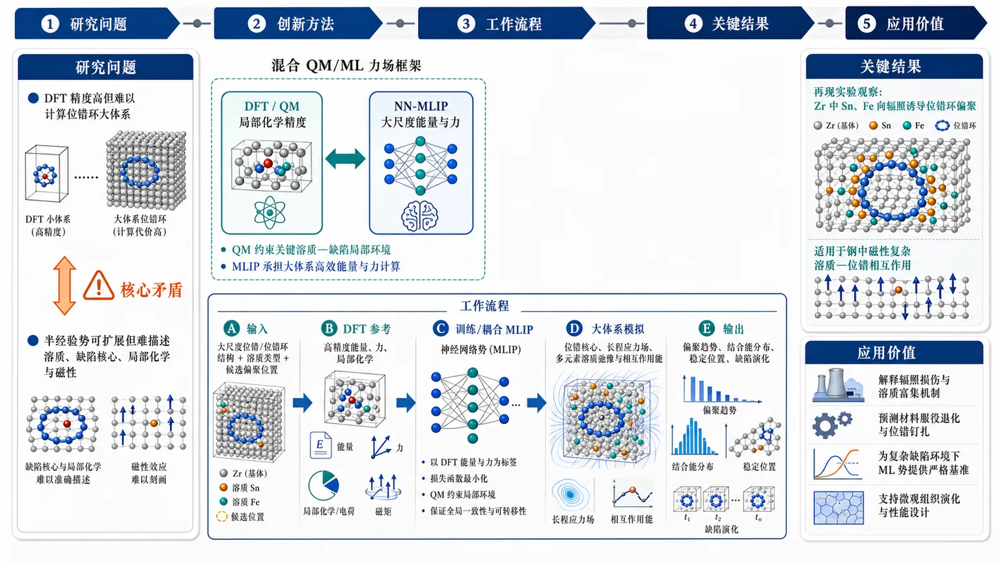
研究问题如何在原子尺度上准确模拟结构材料中的溶质—位错相互作用，尤其是辐照诱导位错环附近的溶质偏聚；核心矛盾是 DFT 具备量子化学精度但无法承受位错环大体系计算，传统半经验势可计算大体系却难以描述溶质、缺陷核心、局部化学环境和磁性效应。创新方法提出混合量子力学/机器学习力场（QM/ML）框架，将 DFT 的局部化学精度与神经网络机器学习原子间势（MLIPs）的可扩展计算能力耦合；Aha 点在于不是用 MLIP 简单替代 DFT，而是让量子力学信息约束最关键的溶质—缺陷局部环境，同时用 MLIP 承担大尺度位错体系的高效能量与力计算。工作流程输入包含大尺度位错或位错环原子结构、溶质原子类型与候选偏聚位置；先用 DFT 提供高精度能量/力/局部化学参考，再训练或耦合神经网络 MLIP；随后在包含位错核心、长程应力场和多元素溶质的大原子体系中进行弛豫与相互作用能计算；最终输出溶质在位错附近的偏聚趋势、结合能分布、稳定位置和缺陷结构演化图景。关键结果该框架再现实验观察到的 Zr 中 Sn 和 Fe 向辐照诱导位错环偏聚的现象，说明其能够捕捉溶质—位错环之间的真实相互作用；同时被用于研究钢中具有磁性复杂性的溶质—位错相互作用，展示了从非磁/弱磁核材料到磁性钢体系的适用潜力。应用价值为核结构材料和工程合金中的辐照损伤、溶质偏聚、位错钉扎和微观组织演化提供高保真原子级建模工具；可帮助解释实验中溶质富集于位错环的机制，预测材料服役退化行为，并作为新兴机器学习原子间势在复杂缺陷环境下的严格基准测试平台。第一部分：核心概览 (Overview)
该研究提出混合量子力学/机器学习力场（QM/ML）框架，将DFT 化学精度与神经网络机器学习原子间势（MLIPs）计算可扩展性结合，用于溶质—位错相互作用模拟。核心贡献在于突破传统 DFT 尺度受限与半经验势化学保真度不足的矛盾，并在 Zr 中 Sn/Fe 向位错环偏聚、钢中磁性复杂溶质—位错作用两个场景中展示适用性。其领域地位在于为辐照诱导缺陷结构建模和 MLIP 基准测试提供高保真、多尺度桥接工具。
---
第二部分：结构化快速回顾
《A Hybrid Quantum Mechanics Machine Learning Forcefield (QM/ML) Framework for Accurate Solute-Dislocation Interaction Simulations》（None，）
背景
溶质—位错相互作用直接影响结构材料的微观组织演化与力学行为。核工业材料中，实验观察到溶质偏聚与辐照诱导位错环之间存在强相关性，但理论建模长期受限：DFT 在相关长度尺度下计算成本过高，传统半经验原子间势又缺乏足够化学精度。
方法
提出一种混合 QM/ML 模拟框架，将密度泛函理论（DFT）与神经网络机器学习原子间势（MLIPs）耦合，使位错体系在保持量子力学级别局部精度的同时降低计算成本。
结果
框架能够再现实验观察到的 Sn 和 Fe 在 Zr 位错环处偏聚，并进一步用于研究钢中具有磁性复杂性的溶质—位错相互作用。
讨论
该框架针对两个核心瓶颈：一是传统 DFT 无法覆盖位错环等大尺度缺陷结构；二是传统经验势难以处理溶质、缺陷、磁性和局部化学环境变化带来的能量精度需求。
局限
可获得内容未提供完整方法细节、训练集规模、网络结构、DFT 参数、误差指标、计算加速比、统计不确定性或对照实验。因此无法验证框架的数值精度、泛化边界和可复现性。
结论
QM/ML 框架被定位为一种可迁移、高保真工具，适合用于辐照诱导缺陷结构建模以及新兴 MLIPs 的基准评估。
---
第三部分：逐章节冷凝解析 (Section-by-Section Condensing)
可解析的原始章节信息仅包含：Title、Abstract、Comments、Subjects、Citation/metadata。未提供 PDF 正文、引言、方法、结果、讨论、补充信息的具体章节内容，因此无法进行完整逐章节复原，也无法提取不存在于给定文本中的样本量、DFT 参数、神经网络超参数、误差统计或图表数据。
Title
#### Hybrid QM/ML forcefield as the central technical object
标题直接界定核心方法为混合量子力学/机器学习力场框架，研究对象为溶质—位错相互作用模拟。题名 *"A Hybrid Quantum Mechanics Machine Learning Forcefield (QM/ML) Framework for Accurate Solute-Dislocation Interaction Simulations"* 表明创新点不只是单一 MLIP，也不是纯 DFT，而是一个用于提高溶质—位错相互作用模拟准确性的混合框架。
#### Accuracy is the explicit performance target
标题中的 *"Accurate Solute-Dislocation Interaction Simulations"* 将性能目标限定为准确性，而非单纯的计算速度或规模扩展。结合摘要中 DFT 与 MLIP 的耦合设计，准确性主要指对局部化学环境、溶质偏聚、缺陷相互作用能量的可靠描述。
---
Abstract
#### Solute-dislocation interactions control structural-material behaviour
溶质—位错相互作用被定义为结构材料性能的关键机制。摘要开头指出：*"Solute-dislocation interactions play a central role in controlling microstructural evolution and mechanical behaviour of structural materials"*。这意味着研究问题位于材料强度、辐照损伤、组织稳定性、缺陷演化交叉处，而非单纯的计算方法开发。
#### Conventional atomistic modelling has a chemistry–scalability conflict
传统原子模拟面临化学精度与计算可扩展性之间的矛盾。摘要明确写道：*"conventional atomistic modelling approaches struggle to combine the chemical accuracy with computational scalability"*。这里的“chemical accuracy”指对不同元素、局部配位、电子结构、磁性或成键差异的可靠描述；“computational scalability”指能够处理位错、位错环等需要大量原子的缺陷结构。
#### Nuclear materials make the modelling problem more acute
核工业场景放大了这一矛盾，因为辐照会产生大量复杂缺陷，且实验观察到溶质与位错环之间存在强耦合。摘要指出：*"In the nuclear industry, these challenges become particularly acute, as experiments reveal strong correlations between solute segregation and irradiation-induced dislocation loops"*。这说明研究问题具有明确工程背景：辐照诱导位错环与溶质偏聚可能影响核结构材料的硬化、脆化和服役寿命。
#### DFT is accurate but too expensive at relevant length scales
密度泛函理论（DFT）提供高化学精度，但在位错环等相关尺度上成本过高。摘要给出原因：*"density functional theory (DFT) simulations are prohibitively expensive at relevant length scales"*。位错环通常需要成千上万甚至更多原子才能避免有限尺寸效应，而常规 DFT 通常适合数十到数百原子级别体系，因此无法直接覆盖实际缺陷结构尺度。
#### Semi-empirical potentials lack predictive chemical fidelity
传统半经验原子间势虽然便宜，但对溶质—缺陷体系缺乏预测可靠性。摘要指出：*"traditional semi-empirical interatomic potentials lack the chemical fidelity required for predictive solute-defect calculations"*。这涉及 EAM、MEAM、Finnis–Sinclair 等势函数的典型局限：参数化形式固定，对未训练过的溶质、缺陷核心、非平衡局部结构和多元素化学环境容易失准。
#### The proposed framework couples DFT and neural-network MLIPs
核心方法是将 DFT 与神经网络机器学习原子间势（MLIPs）耦合。摘要写道：*"we introduce a hybrid quantum-mechanics/machine-learning (QM/ML) simulation framework that couples DFT with neural-network machine learning interatomic potentials (MLIPs)"*。该表述说明框架不是简单用 MLIP 替代 DFT，而是通过混合机制利用 DFT 的量子精度与 MLIP 的高效势能面近似。
#### Computational cost is reduced while enabling atomistic dislocation simulations
方法目标是让位错模拟在较低计算成本下保持较高精度。摘要中直接说明：*"enabling accurate atomistic dislocation simulations at reduced computational cost"*。这里的“atomistic dislocation simulations”意味着解析到原子尺度的位错核心结构、溶质局部分布与相互作用能，而非连续介质模型或相场近似。
#### Experimental Sn and Fe segregation to dislocation loops in Zr is reproduced
验证场景之一是 Zr 中 Sn 和 Fe 向位错环偏聚。摘要写道：*"We demonstrate the QM/ML framework's capability by reproducing the experimentally observed Sn and Fe segregation to dislocation loops in Zr"*。这表明框架不仅计算抽象模型，还与实验现象对接。Zr 是核反应堆包壳材料关键基体，Sn、Fe 是常见合金元素或杂质元素，其偏聚会影响辐照组织演化。
#### Magnetically complex solute-dislocation interactions in steel are investigated
另一应用场景是钢中具有磁性复杂性的溶质—位错相互作用。摘要表述为：*"and investigating magnetically complex solute-dislocation interactions in steel"*。钢中的 Fe 基体及合金元素常涉及铁磁、反铁磁或局部磁矩变化，传统势函数通常难以表达磁性对能量和缺陷相互作用的贡献，因此该测试场景对框架提出更高要求。
#### The framework is positioned as transferable and high-fidelity
摘要结论将框架定位为可迁移、高保真工具。原文为：*"These results establish the approach as a transferable, high-fidelity tool for modelling irradiation-induced defect structures and benchmarking emerging MLIPs"*。这里的“transferable”强调跨材料体系或缺陷类型的潜在适用性，“high-fidelity”强调相对传统经验势更接近 DFT 或实验事实，“benchmarking emerging MLIPs”说明该框架也可作为评价新型机器学习势的标准化平台。
---
Comments
#### Main text length and figure count indicate a methods-and-results-focused article
元数据给出篇幅与图件信息：*"25 pages, 11 figures in main text; supplementary information included"*。25 页、正文 11 图、含补充信息，暗示研究包含较完整的方法构建、验证案例、结果比较和补充数据。不过具体图像内容、数值表格、补充训练参数未出现在给定文本中，无法提取。
---
Subjects
#### The disciplinary placement is condensed matter materials science
学科分类为 *"Condensed Matter > Materials Science"*，arXiv 分类为 *"cond-mat.mtrl-sci"*。该分类说明研究面向凝聚态材料科学，具体聚焦计算材料学、缺陷物理、辐照材料和机器学习势能模型，而不是纯机器学习、纯量子化学或工程力学。
---
Bibliographic metadata
#### Preprint status and submission date define the temporal context
记录显示 *"Submitted on 25 Jun 2026"*，版本为 *"arXiv:2606.26834v1"*。这意味着该工作处于预印本阶段，尚未从给定信息中看到同行评议期刊、DOI 注册完成状态或正式发表信息。
#### Authorship spans computational materials and nuclear-materials-relevant expertise
作者列表为 Junting Zhang、Colleen Reynolds、Ryan S. Stroud、Jana Smutna、Daniel J. M. King、Andrew P. Horsfield、Mark R. Wenman。题目与摘要涉及 DFT、MLIPs、位错、Zr、钢、核工业材料，显示研究需要计算材料学、量子力学模拟、机器学习势、辐照缺陷与结构材料物理的交叉能力。
---
第四部分：深度理解与语言支持 (Understanding & Nuance)
1. 术语解析
#### Solute-dislocation interactions
Solute-dislocation interactions 指溶质原子与位错应力场、位错核心结构之间的相互作用。溶质可能被位错吸引或排斥，形成偏聚、钉扎或拖曳效应。语境中该术语不仅表示弹性相互作用，还包括化学作用、局部结构畸变、电子结构变化，甚至在钢中包括磁性贡献。
#### Chemical fidelity
Chemical fidelity 可译为“化学保真度”或“化学真实性”。它比“accuracy”更具体，强调模型能否正确描述不同元素、局部键合、配位环境、电荷/电子结构、磁性状态和缺陷核心附近的化学差异。摘要中 *"lack the chemical fidelity required for predictive solute-defect calculations"* 暗示传统经验势可能能拟合某些弹性常数或相稳定性，却未必能预测溶质在复杂缺陷处的偏聚能。
#### Computational scalability
Computational scalability 指模型随体系尺寸增大仍保持可行计算成本的能力。DFT 计算通常随电子数快速增长，位错环又需要很大原子数才能合理表示，因此 DFT 的可扩展性不足。MLIP 的优势是接近经典势的计算效率，同时保留部分量子数据训练得到的精度。
#### Machine learning interatomic potentials / MLIPs
MLIPs 是利用机器学习模型拟合原子结构到能量、力、应力之间映射的势能模型。摘要中特指 neural-network MLIPs，即神经网络型机器学习势。它们通常用 DFT 数据训练，可以在大规模分子动力学或静态弛豫中替代昂贵的 DFT 力计算。
#### Transferable, high-fidelity tool
Transferable 强调模型或框架不只适用于单一构型；high-fidelity 强调结果接近高精度参考，例如 DFT 或实验。二者组合要求很高：许多模型可以在训练域内高精度，但不具备迁移性；也有模型可跨场景运行，但精度不足。摘要将 QM/ML 定位为 *"transferable, high-fidelity tool"*，意味着目标是兼顾泛化与准确性。
---
2. 疑难查证
#### 为什么不能直接用 DFT 模拟溶质—位错环？
位错环不是一个局部点缺陷，而是包含长程弹性场和复杂核心结构的扩展缺陷。为了避免模拟盒边界对位错应力场产生严重扭曲，体系通常需要大量原子。DFT 需要显式处理电子自由度，计算成本远高于经典势；体系从几百原子扩展到几千、几万原子时，成本急剧上升。因此 DFT 虽然适合计算小胞中的溶质替位能、空位结合能或小缺陷团簇，却很难直接模拟真实尺度的位错环偏聚。
#### 为什么传统经验势难以预测溶质偏聚？
溶质偏聚能往往是多个能量项的小差值：弹性应变能、局部化学结合、体积错配、电子结构重排、磁性贡献等。经验势一般采用固定函数形式，并围绕有限性质拟合，例如晶格常数、弹性常数、缺陷形成能。位错核心附近的局部环境高度非均匀，溶质原子可能处于训练数据之外的配位环境，导致预测失真。尤其在多元素合金中，交叉相互作用参数常常不足以保证复杂缺陷环境下的可靠性。
#### QM/ML 混合思想的关键价值是什么？
核心思想是把昂贵但精确的量子力学计算用于最需要化学精度的区域或数据生成环节，把便宜且可扩展的 MLIP 用于大体系模拟。位错远场可能主要由弹性响应控制，机器学习势可以高效处理；位错核心和溶质附近化学环境更复杂，需要 DFT 级别信息约束。混合框架的价值在于避免“全体系 DFT 太贵”和“全体系经验势太粗糙”两个极端。
#### 为什么钢中的磁性会让溶质—位错问题更复杂？
钢以 Fe 为主，Fe 的磁性状态会影响能量、体积、相稳定性、缺陷形成能和溶质结合能。位错核心会改变局部原子间距和配位环境，从而改变局部磁矩；溶质原子又可能增强或削弱周围 Fe 的磁性。若势函数不显式或隐式捕捉这些磁性相关能量变化，就可能错误预测溶质在位错附近的偏好位置或结合强度。
---
第五部分：创新评估与关联 (Synthesis & Novelty)
1. 创新性判断
#### 从单一势函数转向混合 QM/ML 框架
过去 2–5 年，材料模拟中 MLIPs 已快速发展，包括神经网络势、Gaussian approximation potentials、moment tensor potentials、NequIP/MACE 类等效变图神经网络势。许多工作重点在于训练更准确的单一势函数，用于晶体、液体、缺陷或相变模拟。该研究的新颖性在于强调混合 QM/ML 框架，即用 DFT 与 MLIP 耦合解决位错—溶质问题，而不是简单声称某个 MLIP 可替代所有 DFT 计算。
#### 瞄准溶质—位错相互作用这一高难缺陷问题
很多 MLIP 基准集中于体相性质、表面、点缺陷、小团簇或短程动力学。位错具有长程弹性场、核心重构、大体系尺寸和强局部非均匀性；溶质偏聚又要求精确化学描述。二者叠加构成传统 DFT 和传统经验势都难以处理的区域。该研究直接面向 solute-dislocation interaction simulations，问题选择本身具有较高挑战性。
#### 连接实验观察到的 Zr 中 Sn/Fe 位错环偏聚
创新点不止是方法开发，还包括对实验现象的再现：*"reproducing the experimentally observed Sn and Fe segregation to dislocation loops in Zr"*。Zr 合金是核包壳材料核心体系，Sn 和 Fe 偏聚到辐照位错环与辐照硬化、组织演化和服役退化高度相关。能够模拟该现象意味着框架具有直接材料工程意义。
#### 扩展到磁性复杂钢体系
钢中的磁性使溶质—缺陷能量景观更复杂。摘要中的 *"magnetically complex solute-dislocation interactions in steel"* 表明该框架尝试覆盖非简单非磁体系。相对仅在非磁金属或单元素材料中展示 MLIP 的工作，这一应用更能检验模型对复杂电子结构效应的适应能力。
#### 兼具高保真模拟与 MLIP 基准测试功能
该框架被定位为 *"benchmarking emerging MLIPs"* 的工具，说明它不仅产生材料结果，也提供评估 MLIP 在复杂缺陷环境中可靠性的方式。过去几年 MLIP 数量快速增加，但缺陷、位错、溶质偏聚等高难基准仍不足。该研究的潜在贡献是建立一个更接近真实材料失效机制的测试场景。
2. 解决的前人未解决问题
#### 解决 DFT 尺度不足问题
DFT 的主要短板是无法经济地处理位错环所需的大尺度原子体系。QM/ML 通过 MLIP 承担大规模势能面计算，将 DFT 精度引入关键区域或训练参考，从而缓解 *"prohibitively expensive at relevant length scales"* 的问题。
#### 解决经验势化学精度不足问题
传统半经验势在多元素溶质—缺陷环境中难以达到预测级别。QM/ML 通过 DFT 数据和神经网络势提升局部化学描述能力，针对 *"lack the chemical fidelity required for predictive solute-defect calculations"* 这一瓶颈给出替代路径。
#### 解决实验现象与原子级机制之间的解释断层
实验能观察到溶质偏聚和位错环相关性，但难以直接给出每个原子位点的结合能、偏聚驱动力和局部机制。该框架试图在实验尺度观察与原子级机制之间建立桥梁，尤其是 Zr 中 Sn/Fe 偏聚这一核材料问题。
#### 解决复杂材料中 MLIP 可信度评估不足问题
新兴 MLIPs 在标准数据集上表现优异，并不保证在位错核心、辐照缺陷、溶质偏聚和磁性体系中可靠。该框架可作为更严苛的材料物理基准，用于检验 MLIP 是否真正具备复杂缺陷环境下的迁移能力。
-
05
📄 摘要：提出变分自编码器框架，为量子机器学习学习任务特异的经典数据量子嵌入。高维数据集包括 ImageNet 可压缩为 13 量子比特表示，并通过学习解码器保持可重构性；方法借鉴经典自编码器缓解维数灾难和表征初始化问题。
💡 亮点：变分自编码器把 ImageNet 等高维数据压缩到 13 量子比特可重构嵌入。该结果显示量子机器学习可先学习数据表征，而非直接把原始高维输入编码进量子线路。
📖 展开分析 + 配图
研究问题量子机器学习中，高维经典数据如何从固定的 amplitude/angle 编码，转变为可学习、可重构、适配具体任务的量子嵌入；核心矛盾是“能压缩进少量量子比特”不等于“能高效读出并服务分类”。创新方法提出变分自编码器式的任务特异性量子嵌入：编码器把图像等高维经典数据压缩成 13-qubit 量子表示，量子线路分类器利用该表示完成任务，学习解码器再从有限测量结果中重构原始数据；Aha 点是用 learned decoder 绕开完整量子态层析，把量子态从“黑箱振幅存储”变成“可读出的结构化表征”。工作流程输入 MNIST/ImageNet 等高维图像 → 经典/变分编码模块学习低维结构 → 映射为 13 个量子比特的任务定制量子态 → 对量子线路进行测量，获得多项式数量的观测统计 → 一路送入 circuit-centric quantum classifier 输出类别，另一路送入 learned decoder 重构图像 → 在模拟器与 IBM 量子硬件噪声下验证稳定性。关键结果高维数据包括 ImageNet 可压缩到 13-qubit quantum representation 且仍可由学习解码器重构；MNIST 3 vs 5 分类达到 98.5% validation accuracy，接近经典神经网络基线 99.7%，仅低 1.2 个百分点；相比朴素 amplitude embedding 提升超过 30 个百分点，并避免依赖完整量子态层析。应用价值为 QML 数据编码提供从“手工固定编码”到“任务驱动表征学习”的路径，使少量量子比特能够承载可分类、可重构、可硬件验证的视觉数据表示；潜在用于量子视觉分类、量子数据压缩、噪声量子设备上的可读出表征学习和混合量子-经典模型设计。第一部分：核心概览 (Overview)
该研究把自编码器表征学习引入量子机器学习嵌入设计，提出可学习的任务特异性量子嵌入，目标是替代固定的 amplitude/angle embeddings。核心贡献在于：高维经典数据可压缩为13-qubit quantum representation，并通过学习解码器重构；MNIST 3 vs 5 分类达到 98.5% validation accuracy，接近 99.7% 的经典神经网络基线，且比朴素 amplitude embedding 高出 30+ percentage points。其领域定位在于推动 QML 从“手工编码数据”转向“可训练、可重构、硬件可验证的嵌入学习”。
---
第二部分：结构化快速回顾
《Tailor Made Embeddings for Quantum Machine Learning》（None，）
背景
经典机器学习中的自编码器通过学习低维结构化表示，缓解维度灾难并支持有效初始化；量子机器学习长期依赖固定数据编码方式，如 amplitude embeddings 与 angle embeddings，但二者在可重构性、测量复杂度或假设条件上存在限制。
方法
提出一种variational autoencoder framework，用于学习经典数据的task-specific quantum embeddings。高维数据先被压缩到量子表示，再通过学习到的解码器恢复原始数据；分类任务中使用circuit-centric quantum classifier。
结果
高维数据集，包括 ImageNet，可被压缩为 13-qubit quantum representation，并保持可重构性。MNIST 3 vs 5 任务达到 98.5% validation accuracy，相比经典神经网络基线 99.7% 仅低 1.2 percentage points，相比朴素 amplitude embedding 高出 30+ percentage points。
讨论
该框架强调可重构量子嵌入与多项式测量复杂度。不同于 amplitude embeddings 需要完整量子态层析，也不同于 angle embeddings 通常依赖限制性电路反演假设，该方法通过学习解码器从有限测量中恢复数据。
局限
当前可核验材料未给出完整训练细节、数据划分、网络结构、量子线路深度、优化器、损失函数、IBM 硬件型号、噪声模型、统计显著性检验或误差条。结论强度主要由摘要中的性能数字支撑。
结论
可学习量子嵌入能够在压缩、重构、分类和真实量子硬件稳定性之间取得平衡，为 QML 数据编码提供比固定编码更灵活的路径。
---
第三部分：逐章节冷凝解析 (Section-by-Section Condensing)
当前材料只包含 arXiv 页面信息与摘要；原始 PDF 的章节标题、图表、实验表格、附录、方法细节未提供。以下严格依据可见原始标题与摘要内容解析，不补造不存在的章节、参数或统计结果。
---
Title: Tailor Made Embeddings for Quantum Machine Learning
- Tailor-made embeddings define the central research object
标题中的 “Tailor Made Embeddings” 指向一种为具体任务定制的量子数据表示，而不是使用固定规则编码经典数据。标题完整表述为 *"Tailor Made Embeddings for Quantum Machine Learning"*，表明核心问题是 quantum machine learning 中的数据嵌入设计。
关键含义在于：QML 性能瓶颈不只来自量子分类器或变分线路本身，也来自 classical data 到 quantum state 的映射方式。
- Embedding design is positioned as a learnable component
“Tailor Made” 暗示嵌入不再是预定义的 amplitude embedding 或 angle embedding，而是可根据任务学习。摘要中进一步确认这一点：*"we extend this paradigm to quantum machine learning by introducing a variational autoencoder framework that learns task-specific quantum embeddings of classical data."*
这里的 task-specific quantum embeddings 是核心术语，强调嵌入空间直接服务于后续任务，例如重构或分类。
---
Authors: Aldo Lamarre, Dominik Šafránek
- Research attribution and field placement
署名为 Aldo Lamarre 与 Dominik Šafránek。arXiv 分类为 Quantum Physics (quant-ph)，并交叉关联 Computer Vision and Pattern Recognition (cs.CV) 与 Machine Learning (cs.LG)。页面列出：*"Subjects: Quantum Physics (quant-ph) ; Computer Vision and Pattern Recognition (cs.CV); Machine Learning (cs.LG)"*。
这说明研究对象横跨三类问题：量子态编码与测量、视觉高维数据压缩、机器学习表征学习。
---
Abstract
- Classical autoencoders are the conceptual starting point
摘要开头将经典自编码器定位为解决高维数据表征问题的重要工具：*"Autoencoders transformed classical machine learning by solving the curse of dimensionality, enabling principled weight initialization and learning compact, structured representations."*
这里包含三个明确功能：
- 缓解 curse of dimensionality；
- 支持 principled weight initialization；
- 学习 compact, structured representations。
在 QML 语境中，这些功能对应于高维经典数据如何有效映射到有限量子比特空间。
- A variational autoencoder framework is introduced for QML embeddings
核心方法是 variational autoencoder framework，用于学习经典数据的量子嵌入：*"we extend this paradigm to quantum machine learning by introducing a variational autoencoder framework that learns task-specific quantum embeddings of classical data."*
这说明框架不是单纯压缩器，而是同时承担两项任务：
- 将 classical data 映射到 quantum representation；
- 使该表示服务于具体任务，即 task-specific。
“variational” 暗示包含可优化参数，但摘要未披露参数数量、线路 ansatz、优化器、学习率或损失函数。
- High-dimensional datasets are compressed into 13 qubits
结果声称高维数据，包括 ImageNet，可压缩为 13-qubit quantum representation：*"We demonstrate that high-dimensional datasets, including ImageNet, can be compressed into a 13-qubit quantum representation while remaining reconstructable through a learned decoder."*
13 个量子比特的 Hilbert 空间维度为 (2¹³=8192)，理论上可承载高维幅度结构；但摘要强调的不是完整态向量存储，而是通过 learned decoder 保持可重构性。
可核验数值：
- 压缩目标：13 qubits；
- 数据类型：high-dimensional datasets, including ImageNet；
- 重构机制：learned decoder。
- MNIST 3 vs 5 achieves near-classical validation accuracy
分类实验使用 MNIST 二分类 3 vs 5，达到 98.5% validation accuracy：*"On MNIST (3 vs 5), our approach achieves 98.5% validation accuracy using a circuit-centric quantum classifier"*。
与经典神经网络基线相比，差距为 1.2 percentage points：*"within 1.2 percentage points of a classical neural network baseline (99.7%)"*。
可核验数值：
- 任务：MNIST (3 vs 5)；
- 量子方法验证准确率：98.5%；
- 经典神经网络基线：99.7%；
- 差距：1.2 percentage points；
- 分类器类型：circuit-centric quantum classifier。
摘要未给出训练集大小、验证集大小、随机种子数量、置信区间或统计显著性。
- Naive amplitude embedding performs much worse
相比朴素 amplitude-embedding approach，该方法高出超过 30 个百分点：*"more than 30 percentage points above a naive amplitude-embedding approach."*
若该方法为 98.5%，则朴素 amplitude embedding 的验证准确率可推断低于约 68.5%，但摘要没有给出精确数值。
该对比强调：量子编码方式本身会显著影响 QML 性能，不能假设 amplitude embedding 自动优越。
- Reconstruction avoids full quantum state tomography
摘要明确批评 amplitude embeddings 的恢复成本：*"Unlike amplitude embeddings, which require full quantum state tomography for recovery"*。
full quantum state tomography 通常随量子比特数呈指数级增长，因为需要估计完整密度矩阵或态向量信息。对于 13 qubits，完整态空间规模为 (2¹³=8192)，密度矩阵参数规模约为 (4¹³) 量级，实际测量负担极重。
该方法的关键优势是避免把“可编码”变成“不可读出”。
- Angle embeddings are contrasted through their inversion assumptions
摘要指出 angle embeddings 的重构通常依赖受限反演条件：*"or angle embeddings, which generally rely on circuit inversion under restrictive assumptions"*。
circuit inversion 意味着需要知道并可逆转编码线路，同时噪声、非幺正过程、测量塌缩和硬件误差都会破坏理想反演。
“restrictive assumptions” 的含义是：angle embedding 的可恢复性并非普遍成立，而依赖特定线路结构、可逆性和噪声可忽略等条件。
- Only a polynomial number of measurements is required for reconstruction
核心复杂度优势是重构只需要多项式数量测量：*"the proposed framework reconstructs the original data from only a polynomial number of measurements."*
这一区别非常关键：
- amplitude embedding 的完整恢复通常面临指数级 tomography；
- 该方法声称只需 polynomial number of measurements；
- 多项式测量复杂度使得高维数据压缩后的读出在原则上更可扩展。
摘要未说明多项式的具体阶数，例如 (O(n))、(O(n²⁾) 或与样本维度、qubit 数、decoder 宽度之间的关系。
- Hardware validation is performed on IBM quantum devices
实验进一步在 IBM 量子硬件上验证：*"The framework was further validated on IBM quantum hardware, confirming that the learned embeddings remain stable and reconstructable under real device noise."*
这里有三个关键信息：
- 使用 IBM quantum hardware，不是仅限模拟器；
- 检验对象是 learned embeddings；
- 结论涉及 stable and reconstructable under real device noise。
摘要未给出具体 IBM 后端名称、量子比特拓扑、shots 数、误差率、退相干时间、校准日期或噪声缓解方法。
---
Comments
- Paper scale suggests empirical and visual support
arXiv 页面给出篇幅与图数：*"Comments: 17 pages, 17 figures"*。
这表明研究很可能包含较多可视化实验、重构图像、训练曲线、硬件结果或嵌入分析。不过当前材料未提供图像内容，因此不能提取每幅图的具体结论。
---
Subjects
- The work spans quantum physics, computer vision, and machine learning
分类信息为 *"Quantum Physics (quant-ph) ; Computer Vision and Pattern Recognition (cs.CV); Machine Learning (cs.LG)"*。
这说明研究贡献不局限于量子算法理论，而是直接触及 computer vision datasets，尤其是摘要中出现的 ImageNet 与 MNIST。
学科交叉点包括：
- 量子态作为数据表示；
- 图像数据压缩与重构；
- QML 分类器性能评估；
- 噪声量子硬件上的表征稳定性。
---
第四部分：深度理解与语言支持 (Understanding & Nuance)
1. 术语解析
- Tailor-made embeddings
字面意思是“量身定制的嵌入”。在该语境中不是一般的低维表示，而是为特定任务训练出的 quantum embeddings。微妙之处在于：传统 embedding 往往是固定规则映射，例如把像素值编码成旋转角；这里的 embedding 则通过学习过程适配分类、压缩和重构目标。
- Curse of dimensionality
指高维空间中样本稀疏、计算成本上升、模型泛化困难的问题。摘要中的 *"solving the curse of dimensionality"* 并不表示数学上彻底消除所有高维问题，而是指自编码器能学习低维结构，从而缓解原始高维输入带来的优化和表示困难。
- Circuit-centric quantum classifier
指分类决策主要由量子线路结构和测量结果产生，而不是仅把量子部分作为微小特征变换后交给大型经典网络。该表达强调分类器以 quantum circuit 为中心，但摘要未说明线路深度、门类型或可训练参数数量。
- Full quantum state tomography
即完整量子态层析，通过大量不同测量基重建量子态。该过程对 qubit 数通常呈指数级成本增长。与“测几个 observable 得到分类结果”不同，tomography 要恢复完整态信息，因此不适合大规模可读出的数据重构。
- Polynomial number of measurements
指测量次数随系统规模按多项式增长，而不是指数增长。其学术含义是可扩展性更强。但“polynomial”本身仍可能很大，例如 (O(n⁴⁾) 在实际硬件上仍昂贵，因此需要完整论文中的阶数和常数因子才能判断工程可行性。
---
2. 疑难查证
- 为什么 amplitude embedding 可压缩却难恢复？
Amplitude embedding 把一个 (N)-维经典向量编码进 (n=łog₂ N) 个量子比特的振幅中，看起来极其高效。例如 13 个 qubit 可表示 8192 个复振幅维度。但问题在于：量子测量一次只能得到一个采样结果，不能直接读出全部振幅。若要恢复完整向量，通常需要完整量子态层析，测量复杂度随 qubit 数快速爆炸。因此 amplitude embedding 的“写入压缩”不等于“读取高效”。
- 为什么 learned decoder 可以避免 tomography？
学习解码器不试图恢复完整量子态，而是学习从有限测量统计量到原始数据的映射。换言之，量子态只是一个中间表示；恢复图像不需要知道态向量的每一个振幅，只需要测量一组足够有信息量的 observables，再由 decoder 补全结构化数据。图像、数字等自然数据通常位于低维流形上，因此不必恢复任意量子态的全部自由度。
- “13-qubit representation” 是否意味着 ImageNet 被无损压缩？
不必然。摘要说的是 *"compressed into a 13-qubit quantum representation while remaining reconstructable through a learned decoder"*，没有出现 “lossless”。“reconstructable” 在机器学习语境中通常意味着重构质量足以保留主要结构或任务信息，而不是逐像素无误差恢复。必须查看重构指标，例如 MSE、SSIM、FID 或分类保持率，才能判断压缩质量。
- 硬件噪声下 stable and reconstructable 的含义是什么？
这意味着真实 IBM 设备的噪声没有完全破坏嵌入所携带的信息，decoder 仍能从 noisy measurements 中恢复有意义数据。但没有硬件后端、shots、误差条和对照实验时，无法判断稳定性是强鲁棒性、轻度退化，还是经过噪声缓解后的结果。
---
第五部分：创新评估与关联 (Synthesis & Novelty)
1. 创新性判断
- 从固定量子编码转向可学习量子嵌入
过去 QML 常用 amplitude embedding、angle embedding、basis encoding 等固定方案。它们的主要问题是：编码规则与任务目标脱节，可能在分类上不可分、在重构上不可读、在硬件上不稳定。该研究的新颖性在于把嵌入本身作为可训练对象，形成 task-specific quantum embeddings。
- 同时满足压缩、分类和重构三个目标
许多 QML 工作只关注分类准确率，忽略嵌入是否保留可解释或可恢复信息。该框架强调 compressed representation 与 learned decoder，使量子嵌入不仅能服务分类，还能重构原始数据。这一点接近经典自编码器范式，但迁移到 QML 场景具有明确创新性。
- 绕开 amplitude embedding 的读出瓶颈
amplitude embedding 的理论压缩率高，但恢复完整数据需要 tomography。该框架声称仅需 polynomial number of measurements，直接针对“量子态难以读出”的根本问题。若完整论文中给出严格复杂度证明或实验证据，这会是重要贡献。
- 在高维视觉数据上展示 13-qubit 压缩
ImageNet 级别高维数据进入 13-qubit quantum representation 是醒目的实验主张。与仅在 toy datasets 或低维合成数据上验证的 QML 方法相比，这一结果更贴近视觉机器学习问题。
- 真实 IBM 硬件验证增强实践意义
噪声中等规模量子设备上的验证使研究不止停留在 noiseless simulator。摘要中的 *"stable and reconstructable under real device noise"* 表明其嵌入在实际硬件扰动下仍保留信息，这解决了很多变分量子模型在理想模拟中表现良好、硬件上退化严重的问题。
2. 前人未充分解决的问题
- 量子嵌入的任务适配性不足：固定 embedding 无法根据数据分布和任务目标优化。
- 压缩后可读出性不足：amplitude embedding 能把高维数据写入少量 qubit，却难以高效恢复。
- 重构依赖过强假设：angle embedding 的可逆恢复通常要求理想线路反演。
- 高维真实数据验证不足：很多 QML 嵌入方法停留在低维 toy examples。
- 硬件噪声鲁棒性证据不足：真实设备上的稳定重构仍是稀缺验证点。
3. 需要进一步核验的关键缺口
- 训练细节：VAE encoder/decoder 架构、潜变量形式、量子线路 ansatz、参数数量、优化器、epoch 数。
- 数据细节：MNIST 3 vs 5 的训练/验证划分，ImageNet 使用的分辨率、类别数、样本数。
- 重构指标：MSE、PSNR、SSIM、FID 或视觉样例质量。
- 统计可靠性：多随机种子、置信区间、标准差、显著性检验。
- 硬件设置：IBM 后端名称、shots、噪声缓解、门深度、读出误差、运行日期。
- 复杂度证明：polynomial measurements 的具体阶数及其与 qubit 数、数据维度、decoder 输出维度的关系。
-
06
📊 含图深析
📄 摘要：构建与消息传递机制相连的量子图神经网络，并放入 Weisfeiler–Leman 表达能力层级讨论。目标是服务化学、生物和优化中的关系数据，回应既有量子图模型与消息传递联系弱、性能与可扩展保证不足以及变分量子线路可训练性受限的问题。
💡 亮点：该量子 GNN 明确对齐经典消息传递和 WL 表达层级。它把化学图学习中的可扩展性、可训练性和量子线路设计放到统一框架中。
📖 展开分析 + 配图
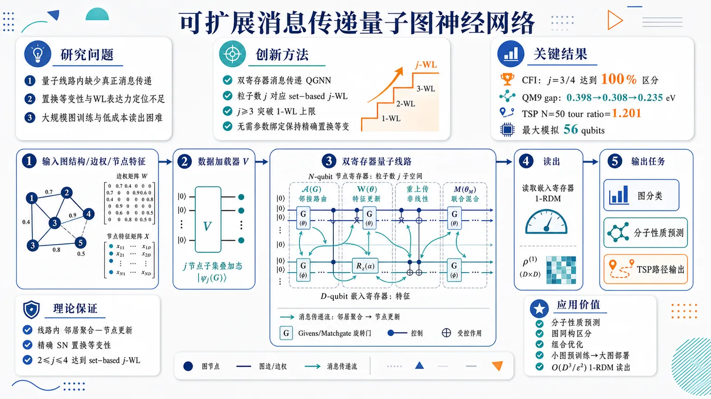
研究问题现有量子图神经网络多只是把图边映射成量子门拓扑，没有在量子线路内部完成“邻居聚合—节点更新”的真正消息传递；同时缺少严格置换等变性、WL 层级表达力定位，以及随图规模增长仍可训练、可低成本读出的可扩展机制。创新方法提出双寄存器消息传递 QGNN：N-qubit 节点寄存器固定在粒子数 j 子空间，用基态表示节点或 j 节点子集；D-qubit 嵌入寄存器承载特征。通过 Givens/matchgate 兼容旋转实现图邻接振幅路由、嵌入特征更新、数据重上传非线性和联合混合。Aha 点是：节点寄存器粒子数 j 直接对应 set-based j-WL 表达力，j≥3 可突破普通消息传递 GNN 的 1-WL 上限，同时无需参数绑定即可保持精确置换等变性。工作流程输入图结构、边权和节点特征；数据加载器 V 将 j 节点子集及其特征编码为量子叠加态；邻接层 𝒜(G) 按图边在节点量子比特间施加 Givens 旋转，沿图结构传播振幅；可训练演化 W(θ) 作用于嵌入寄存器更新特征；每层重上传输入特征形成非线性；最终联合混合层 M(θM) 耦合节点与嵌入寄存器；读取嵌入寄存器 1-RDM，生成图分类、分子性质预测或 TSP 边概率与路径输出。关键结果理论上证明模型具备量子线路内消息传递、精确 SN 置换等变性，并在 2≤j≤4 时达到 set-based j-WL 表达力。CFI 图实验中，准确率在预测粒子数处从随机水平跃升到 100%：CFI(K3) 于 j=3 可分，CFI(K4) 于 j=4 可分。QM9 HOMO–LUMO gap 误差随 j=1→2→3 从 0.398 eV 降至 0.308 eV、0.235 eV。TSP 在 N=5,10,20,30,50 的 tour ratio 为 1.008、1.034、1.078、1.128、1.201，最大模拟达到 56 qubits；迁移初始化使梯度信号比随机初始化高 1–2 个数量级。应用价值为量子图学习提供一条可证明、可扩展的设计路线：让量子线路像经典 GNN 一样执行消息传递，又能通过 j-WL 层级解析高阶图结构，适用于分子性质预测、图同构区分、组合优化等关系数据任务。小图预训练—大图部署、O(D³/ε²) 的 1-RDM 读出和固定子空间训练机制，使近中期量子图模型更接近实际可用。第一部分：核心概览 (Overview)
该研究构造了一类可扩展的消息传递量子图神经网络（QGNN），把量子线路设计与经典 GNN 的核心原则——消息传递、置换等变性、Weisfeiler–Leman 层级表达力——系统连接起来。核心贡献在于：通过固定粒子数子空间与 Givens/matchgate 兼容线路，使模型在节点寄存器粒子数 j 处达到 set-based j-WL 表达力，且 j ≥ 3 时突破普通消息传递 GNN 的 1-WL 上限；同时支持小图预训练、大图部署，并在最高 56 qubits 的模拟中验证可训练性、低成本读出和实际任务性能。
---
第二部分：结构化快速回顾
《Scalable Message-Passing Quantum Graph Neural Networks in the Weisfeiler-Leman Hierarchy》（None，）
背景
图数据广泛存在于化学、生物、组合优化中，经典 GNN 的成功依赖消息传递。已有量子图模型多将图结构映射为线路拓扑，但通常不在量子线路内部执行真正的邻居聚合与状态更新，且受限于变分量子线路的梯度消失 / barren plateau问题。
方法
构建双寄存器 QGNN：N-qubit 节点寄存器编码节点或 j-节点子集，D-qubit 嵌入寄存器编码特征；通过数据加载器 V、等变邻接层 𝒜(G)、可训练演化 W(θ)、联合混合层 M(θM) 交替实现量子消息传递。固定粒子数子空间与 Givens 旋转保证可控表达力和可训练性。
结果
理论上证明模型具备消息传递、精确 SN-置换等变性、j-WL 表达力。实验覆盖 CFI 图、QM9 分子性质预测、欧氏 TSP，最高模拟 56 qubits。CFI 上在预测的 j 层级达到 100% 区分；QM9 HOMO–LUMO gap 误差随 j=1→2→3 从 0.398 eV → 0.308 eV → 0.235 eV 单调下降；TSP 在 N=5,10,20,30,50 的 tour ratio 为 1.008, 1.034, 1.078, 1.128, 1.201。
讨论
模型把经典 GNN 的结构性归纳偏置嵌入量子线路，避免依赖后处理来完成消息传递。置换等变性由架构保证，不依赖跨对称群参数绑定，因此保留更大函数类。固定子空间与可转移初始化减轻训练困难。
局限
理论 WL 表达力证明明确覆盖 2 ≤ j ≤ 4；更大 j 需要更多初始化信息。QM9 上误差仍高于大规模经典 GNN；TSP 中同参数经典 GCN 的 binary cross-entropy 更低。部分可训练性论证为启发式并依赖数值证据。
结论
该框架提供了具备理论表达力保证、严格置换等变性、可扩展训练与读出机制的 QGNN 路径，推动量子图学习从“图形状线路”走向真正的“量子消息传递”。
---
第三部分：逐章节冷凝解析 (Section-by-Section Condensing)
Abstract
- Quantum graph learning is positioned around relational data and message passing.
图被定位为处理化学、生物、优化中关系数据的自然语言，经典 GNN 的进展来自消息传递这一统一机制。摘要明确指出：*"Graphs provide a natural language for relational data in chemistry, biology and optimisation."* 同时强调消息传递的中心性：*"Graph neural networks (GNNs) have driven much of the recent progress in learning from such data through message passing, a single primitive that generalises convolution and attention."*
- Existing quantum counterparts lack message-passing fidelity and scalability guarantees.
既有 QGNN 虽已提出，但与真正的消息传递连接有限，且缺少性能与扩展性保证。关键问题被概括为：*"Quantum counterparts have been proposed, but with limited connection to message passing and few guarantees on performance or scalability."* 变分量子线路的训练瓶颈也被直接指出：*"the trainability of variational quantum circuits is a recognised bottleneck for their wide applicability"*。
- Core contribution combines message passing, permutation equivariance, and WL hierarchy placement.
核心框架使 QGNN 能够在量子线路内执行消息传递，保持置换等变性，并处在指定的 Weisfeiler–Leman hierarchy 层级。摘要中的核心句为：*"Here we show how a quantum graph neural network can be built to perform message passing, to be permutation equivariant, and to sit at a chosen level of the Weisfeiler–Leman hierarchy"*。
- Scalability relies on small-graph pre-training and low-cost readout.
模型支持类似经典 GNN 的小图预训练、大图部署流程，输出读出成本不会随图规模剧烈增长。摘要给出：*"the training can be done first on small graph instances"*，并补充：*"its output can be read out at a cost that stays low as the graph grows."*
- Validation reaches 56 qubits across three graph-learning regimes.
数值验证覆盖最高 56 qubits，包括普通消息传递无法区分的合成图、分子性质预测、旅行商问题。摘要写明：*"We validate the framework in large-scale simulations of up to 56 qubits across three datasets"*，具体任务为：*"on synthetic graphs that ordinary message passing cannot separate, on molecular property prediction, and on the travelling salesperson problem."*
---
Introduction / opening motivation
- GNN success is tied to message passing across scientific domains.
GNN 被定位为现代机器学习中的核心图学习工具，应用包括分子性质预测与药物发现、AlphaFold 蛋白结构建模、图上组合优化。原文列举：*"driving progress in molecular property prediction and drug discovery [1], protein structure modelling as realised in AlphaFold [2], and combinatorial optimisation on graphs [3, 4]."* 其机制基础是：*"Their success rests on message passing, the rule by which each node updates from its neighbours."*
- Most quantum graph models mirror graph topology rather than execute message passing.
许多量子图模型把边转化为量子门布局，但没有把邻居聚合与节点更新放入量子线路内部。关键批评为：*"Most of them, however, do not actually carry out message passing"*；具体方式是：*"placing gates along the graph’s edges so that the circuit layout mirrors the graph structure"*；被遗漏的核心步骤是：*"aggregating over each node’s neighbours and updating its state"*，通常被留给：*"a classical readout rather than run inside the circuit"*。
- Trainability is a central obstacle for variational quantum graph models.
变分线路随规模增长出现梯度消失，限制量子模型适用性。原文指出：*"These models also face the trainability difficulty common to variational circuits, whose gradients can vanish as the circuit grows."* 因此必须证明：*"a quantum graph model can be trained and scaled to large graphs."*
- Permutation equivariance is non-negotiable for unordered graph nodes.
图节点没有内在顺序，任何图运算必须满足置换等变性：节点重标号后输出以同样方式重标号。原文给出原则：*"Because a graph carries no intrinsic ordering of its nodes, any graph operation must be permutation equivariant by construction"*。
- WL hierarchy is the standard yardstick for graph distinguishability.
模型能否区分结构不同的图，由 Weisfeiler–Leman hierarchy 衡量。原文定义其地位为：*"the standard yardstick for this is the Weisfeiler–Leman (WL) hierarchy"*，并说明它是：*"a sequence of colour-refinement tests of increasing power for distinguishing non-isomorphic graphs."*
- Ordinary message passing is limited to 1-WL.
标准消息传递 GNN 只能达到 1-WL，增加深度或宽度无法突破该上限。原文强调：*"Ordinary message passing reaches only the first level of this hierarchy, the 1-WL test"*，并指出：*"increasing depth or width never separates a pair of graphs that 1-WL cannot tell apart."*
- The proposed QGNN rises above the 1-WL ceiling.
新模型实现真正消息传递、置换等变，并通过模型设定达到 WL 层级，突破 1-WL。原文总结为：*"we introduce a quantum graph neural network that faithfully carries out message passing, is permutation equivariant, and sits in the Weisfeiler–Leman hierarchy at a level set by the model, rising above the 1-WL ceiling."*
- Subspace-preserving circuits balance trainability and simulation overhead.
固定子空间约束有助于训练，但带来经典模拟多项式开销。关键表述为：*"Confining the dynamics to a fixed subspace keeps the model trainable, at the cost of a classical simulation with polynomial overhead set by the size of the subspace."*
- Experimental programme targets expressivity, real molecules, and scaling.
三类任务分别检验理论表达力、现实分子预测、组合优化扩展性。原文说明：*"Cai–Fürer–Immerman graphs ... confirm the expressivity result"*；*"QM9 regression carries the same Weisfeiler–Leman gain over to real molecular property prediction"*；*"Euclidean travelling-salesman instances up to TSP-50 (56 qubits) exercise equivariance, trainability, and the train-small, deploy-large pipeline."*
---
I Results
- Results section combines definitions, construction, proofs, and scalability.
章节目标是先回顾 GNN 的理论性质，再构造具备这些性质的 QGNN，并用subspace-preserving quantum circuits实例化。原文概括：*"We begin by recalling what defines a graph neural network and the theoretical properties that make such a model useful."* 随后：*"We then present a general framework for building graph neural networks with these properties and instantiate it with subspace-preserving quantum circuits."*
- The instantiated model is claimed to be scalable and trainable.
不仅证明结构性质，还要说明随着图增长仍可训练。原文写明：*"We prove that this quantum instantiation realises these properties, and show how it stays scalable and trainable as the graph grows."*
---
I.1 Graph Neural Network framework
- Classical GNN layer is formalised as adjacency aggregation plus feature evolution.
图 G 有 N 个节点，节点特征矩阵 X ∈ ℝN×DF，邻接操作 𝒜(G) ∈ ℝN×N。层更新为 H(ℓ+1)=σ(𝒜(G)H(ℓ)W(θ))。原文给出：*"An encoder V(G) collects the DF-dimensional node features into a matrix X ∈ ℝN×DF."* 以及：*"The connectivity is carried by an adjacency operation 𝒜(G) ∈ ℝN×N."*
- Message passing aggregates L-hop neighbourhoods after L layers.
每层节点从邻居聚合信息并更新，L 层后节点嵌入包含 L-hop neighbourhood 信息。定义中明确：*"after L layers, the embedding of node i encodes aggregated features from its L-hop neighbourhood in G."* 这使模型利用图连通性，而非仅依赖节点特征：*"so the model exploits the graph’s connectivity rather than the node features alone."*
- Message passing unifies convolution, recurrence, and attention.
消息传递被视为现代深度学习统一原语。原文写道：*"It is also the unifying principle of modern deep learning, with convolution, recurrence, and attention all recovered as message passing on grids, sequences, and fully connected graphs."*
- Exact permutation equivariance is required for label-independent graph processing.
定义为 f(π·G, π·X)=π·f(G,X)，对所有 π ∈ SN 成立。原文：*"It is permutation equivariant if f(π·G, π·X)=π·f(G,X) for every relabelling π ∈ SN of the nodes."* 其必要性来自：*"Because the nodes of a graph carry no intrinsic order."*
- Architectural symmetry lowers sample complexity and improves generalisation.
将对称性编码进架构，而非从数据学习，可限制函数类。原文指出：*"Encoding the symmetry into the architecture rather than learning it from data restricts the model to label-consistent functions, which lowers sample complexity and improves generalisation."*
- Set-based j-WL test colours j-subsets and refines by one-node replacement neighbourhoods.
j-WL 对每个 j-subset S 赋予颜色 ct(S)，初始颜色来自诱导子图同构类型，之后通过所有满足 |S△S′|=2 的子集颜色多重集更新。原文公式描述：*"The j-Weisfeiler–Leman (j-WL) test assigns each j-subset S of the nodes a colour ct(S)"*，并定义更新：*"the multiset ranges over the j-subsets S′ obtained from S by replacing a single node."*
- WL expressivity measures exact matching to WL distinguishability.
架构若在 WL 不可区分时输出相同、WL 可区分时输出不同，则具备 j-WL expressivity。原文定义：*"An architecture has j-WL expressivity when it matches the Weisfeiler–Leman test, returning identical outputs for any two graphs that j-WL leaves indistinguishable and different outputs whenever j-WL separates them."*
- 1-WL ceiling limits ordinary message-passing GNNs on higher-order structures.
普通消息传递仅达 1-WL，无法识别某些分子差异、环等高阶子结构。原文写道：*"ordinary message passing reaches only its first level, 1-WL"*，并指出该限制导致：*"molecules with distinct properties and substructures such as cycles that the network cannot count."*
---
I.2 Quantum Graph Neural Network
- QGNN consists of four core blocks.
框架由 data loader V、equivariant adjacency layer 𝒜(G)、trainable evolution W(θ)、joint-register mixing layer M(θM) 组成。原文：*"a general framework for constructing QGNNs from four building blocks: a data loader V, an equivariant adjacency layer 𝒜(G), a trainable evolution W(θ), and a joint-register mixing layer M(θM)."*
- Two-register design separates graph indexing from feature embedding.
N-qubit node register 在 Hamming weight j 子空间 ℋNj 中索引节点或 j-节点子集；D-qubit embedding register 在 Hamming weight k 子空间 ℋDk 中承载特征，特征维数 DF = C(D,k)。原文：*"The N-qubit node register indexes the graph’s nodes at Hamming weight j"*；*"The D-qubit embedding register holds the corresponding features at Hamming weight k, in ℋDk with DF = binom(D,k)."*
- Particle number j controls whether basis states represent nodes, edges, triangles, or higher-order groups.
当 j=1 时节点寄存器基态表示单个节点；更高 j 表示节点子集。原文：*"its basis states are individual nodes at j=1 and j-subsets of nodes (edges, triangles, and higher-order groups) at larger j."*
- Loader prepares amplitude-encoded subset-feature superposition.
加载器制备
|x⟩ = ΣT Σf xf(T)|eTnode⟩⊗|efembedding⟩，其中 T 是 j-subset，f 是嵌入特征索引。原文公式前说明：*"Indexing the node basis by j-subsets T, the loader V prepares"*，并给出态：*"|x⟩=∑T∑f=1DF xf(T)|eTnode⟩⊗|efembedding⟩."*
- Equivariant adjacency uses Givens rotations on graph-induced node-qubit pairs.
𝒜(G) 在构成图边的节点量子比特对之间施加 Givens 旋转，通过角度编码边权。原文：*"The adjacency layer applies Givens rotations between the node-qubit pairs that form an edge in G, encoding the graph connectivity."*
- Canonical edge-weight ordering preserves equivariance.
旋转角 θij 来自边权，并按规范顺序分配，从而满足等变性。原文指出：*"with the rotation angles θij assigned from the edge weights in a canonical ordering, the layer respects [permutation equivariance]."*
- Trainable evolution acts only on embedding register and is shared across node components.
W(θ) 不随节点数直接增长，而作用于嵌入寄存器。原文：*"Acts on the embedding register only and is shared across the node-register components."* 这一设计是小图预训练、大图部署的基础。
- Subspace-preserving trainable gates use Cayley parametrisation and compound representation.
具体实例使用 SO(D) 的 Cayley 参数化，并通过 k-th compound representation C(k)(·) 提升到 SO(DF)。原文：*"a Cayley parametrisation of SO(D) lifted to SO(DF) by the k-th compound representation C(k)(·)."* 选择理由是：*"We choose this set for its favourable trainability dynamics."*
- Data re-uploading supplies nonlinearity in amplitudes.
每层重新上传输入特征，通过振幅编码产生非线性特征，使输入到输出的整体映射非线性。原文：*"the input features are re-uploaded through the amplitude encoder V at each layer."* 其作用为：*"This transformation creates non-linear features in the amplitudes of the quantum state and makes the overall map from input features to output nonlinear."*
- Embedding-register 1-RDM is a central readout object.
嵌入寄存器的一粒子密度矩阵定义为 γpq=⟨ψ|ap†aq|ψ⟩。原文：*"the embedding-register 1-RDM used as the readout ... is γpq = ⟨ψ| ap† aq |ψ⟩ for p,q ∈ [D]."*
- Joint-register mixer couples node and embedding subspaces after layered evolution.
最终混合层在节点内、嵌入内、跨寄存器的量子比特对之间施加 Givens 旋转，把状态送入 N+D qubits、Hamming weight j+k 的联合子空间。原文：*"A final layer mixes the two subspaces."* 以及：*"taking the state into the subspace of N+D qubits at Hamming weight j+k."*
- Mixer angles are untied yet ordered canonically to preserve equivariance.
联合混合层不需要参数绑定；每个角由图诱导的 SN-invariant ordering 排序。原文：*"The angles are not tied; each is indexed by its rank in a canonical SN-invariant ordering induced by G, which preserves SN-equivariance."*
---
I.3 Main results
- Theoretical guarantees cover three GNN-defining properties.
主结果先证明该 QGNN 精确实现消息传递、精确置换等变性、WL 区分能力。原文：*"We first show that the instantiation realises, precisely, each of the three properties defined in subsection I.1: message passing, exact permutation equivariance, and Weisfeiler–Leman distinguishing power."*
- Scalability is framed through pre-training, trainability, and low-cost readout.
同一实例可在小图训练后部署到大图，并通过实验显示可训练、读出成本低。原文：*"it can be pre-trained on small graphs and deployed on larger ones"*；*"Our experiments show that these models remain trainable on large instances and that their readout cost remains low."*
---
I.3.1 Expressivity guarantees
- Message passing occurs inside the quantum circuit.
模型在量子操作内部执行消息传递，而非把聚合留给经典读出。原文明确：*"The model performs message passing inside the circuit"*，并强调：*"All of this is done with quantum operations, not a classical post-processing step."*
- Adjacency routes node amplitudes; trainable evolution updates features; re-uploading supplies nonlinearity.
𝒜(G) 作用于节点寄存器并沿边传播振幅；W(θ) 作用于嵌入寄存器并更新每个节点特征；重上传提供非线性。原文：*"The adjacency 𝒜(G) acts on the node register and routes each node’s amplitude along the edges; the trainable evolution W(θ) acts on the embedding register and updates the per-node features; and re-uploading the loader at each layer supplies the nonlinearity."*
- Quantum aggregation differs from classical 1-GNN neighbourhood summation.
经典 1-GNN 对邻居多重集求和；QGNN 使用固定维数 C(N,j) 子空间上的确定性实正交映射 𝒜(G)。原文对比：*"a 1-GNN sums over each node’s neighbourhood multiset"*，而：*"the QGNN uses the deterministic real-orthogonal map 𝒜(G) on a fixed subspace of dimension binom(N,j)."*
- Connectivity differs from hard adjacency masks.
经典网络使用硬邻接掩码；量子模型中每对节点量子比特可耦合，图信息进入旋转角。原文：*"a classical network uses a hard adjacency mask, while here every pair of node qubits is coupled, and the graph enters through the rotation angles."*
- Each circuit iteration matches one set-based j-WL refinement round.
Givens 旋转在节点量子比特 a,b 间作用时，会耦合两个只差一次节点替换的 j-subsets S 与 S′=(S∖a)∪b，正对应 set-based j-WL 的 one-swap neighbourhood。原文：*"Each circuit iteration then matches one round of set-based j-WL refinement"*；具体机制为：*"a Givens rotation between node qubits a and b couples the j-subsets S and S′ = (S∖a)∪b that differ by a single swap."*
- Exact SN-equivariance holds at every parameter value.
任意节点重标号都会使输出节点和边特征以同一置换重标号。原文：*"Relabelling the input nodes permutes the output node and edge features by the same permutation, exactly and at every parameter value."*
- Equivariance is achieved without parameter tying.
可训练演化仅作用于嵌入寄存器，图相关操作按边权规范排序；重标号只重排相同门，不改变合成作用。原文：*"the trainable evolution acts only on the embedding register and is shared across the node-register components"*；*"a relabelling reorders the same gates without changing their combined action."* 关键优势是：*"without tying any parameters together."*
- Theorem 1 states exact SN-equivariance.
对所有 π ∈ SN、所有输入 x=(X,A)、所有参数 θ，有
fθ(π·X,π·A)=π·fθ(X,A)。原文定理写为：*"For every input x=(X,A) consisting of node features X ∈ ℝN×d and an adjacency matrix A ∈ ℝN×N, every parameter assignment θ, and every π ∈ SN, fθ(π·X, π·A)=π·fθ(X,A)."*
- Node-register particle number j sets WL resolving power.
j 控制模型能解析多少图结构；对 2 ≤ j ≤ 4，在 generic parameters 下精确匹配 set-based j-WL。原文：*"The node-register particle number j sets how much graph structure the model resolves"*；并给出范围：*"for 2 ≤ j ≤ 4, it matches the set-based j-WL test exactly."*
- j ≥ 3 breaks the 1-WL ceiling.
当 j=3 起，模型可区分 1-WL 与所有普通消息传递网络无法区分的图。原文：*"from j = 3 it separates graphs that 1-WL, and hence every message-passing network, cannot."*
- Theorem 2 claims generic j-WL expressivity for 2≤j≤4.
定理表述为：*"For 2 ≤ j ≤ 4, the L-iteration QGNN ... has set-based j-WL expressivity at generic parameters."* 其等价关系是：*"fθ(G)=fθ(G′) ⇔ G ∼j-WL G′."*
- Initialisation is essential for carrying graph structure into the model.
图结构需通过初始化进入模型；相同参数下，若 j-WL 可区分两图，则两个模型副本仍输出不同结果。原文：*"The initialisation carry the graph’s structure into the model"*；并解释：*"two copies of the model with the same parameters, run on two graphs that j-WL tells apart, still produce different outputs."*
- The proof currently covers groups up to four nodes.
构造明确适用于最多 4 个节点的群组，更大群组需要更多信息。原文：*"The construction works for groups of up to four nodes"*；限制为：*"larger groups need more information."*
---
I.3.2 Scalability
- Barren plateaus are tied to exponentially large explored spaces.
变分量子算法扩展的主要障碍是梯度随线路增长消失。原文：*"A central obstacle to scaling variational quantum algorithms is the barren plateau phenomenon, where gradients vanish as the circuit grows and prevent training."* 机制是：*"it arises when those dynamics reach an exponentially large space."*
- Structured subspaces mitigate vanishing-gradient behaviour.
当动力学限制在较小、结构化子空间内，barren plateau 风险降低。原文：*"mitigated when they stay within a smaller, structured subspace."* 双寄存器 QGNN 正是在这类子空间中工作：*"The two-register QGNN works inside such a subspace."*
- Proposition 1 formalises GNN-style pre-training.
W(θ) 只作用于嵌入寄存器，规模通常不随节点数增长；邻接层无需训练，因此模型可在小图预训练后用于大图。原文命题：*"A GNN can be pre-trained on small graph instances"*；理由是：*"the trainable evolution W(θ) acts only on the embedding register, whose size does not typically grow with the graph, while the adjacency layer requires no training."*
- Transferable initialisation implements train-small, deploy-large.
实验使用从一个图规模拟合的参数初始化下一个图规模。原文：*"We use it through a transferable initialisation, in which parameters fitted at one graph size initialise the next."*
- Observed gradients avoid subspace-dimension-driven collapse up to 56 qubits.
虽然混合后状态在 N+D qubits、Hamming weight j+k 的联合子空间中，观测梯度不按该子空间维数快速消失。原文：*"across instances up to 56 qubits the architecture avoids the vanishing-gradient behaviour the subspace dimension would suggest."*
- Transfer improves gradient signal by one to two orders of magnitude.
可转移初始化使梯度信号在所有测试规模上比随机初始化高 1–2 个数量级。原文：*"the transferable initialisation improves the trend further, keeping the gradient signal one to two orders of magnitude above a random start at every size we test."*
- Proposition 2 gives polynomial-cost readout.
节点和边特征来自嵌入寄存器 1-RDM γpq=⟨ψ|ap†aq|ψ⟩，这是一个 D×D 矩阵，迹为 k。原文：*"The node and edge features are the entries of the embedding-register one-particle density matrix γpq = ⟨ψ|a†p aq|ψ⟩, a D×D matrix over the D embedding modes with trace k."*
- Readout shot complexity is O(D³/ε²), independent of N except projection overhead.
通过 deterministic Hartree–Fock readout 或 matchgate shadow 可用 O(D³/ε²) shots 估计；成本由 D-qubit feature register 决定，而非节点数。原文：*"This matrix can be estimated to accuracy ε in O(D3/ε2) measurement shots"*；并强调：*"The cost is set by the D-qubit feature register, not the number of nodes."*
- Node projection overhead is polynomial in N.
每节点投影会乘上 1/Pproj，其为节点寄存器投影成功概率倒数，关于 N 为多项式。原文：*"the per-node projection multiplies it by 1/Pproj, the inverse success probability of the node-register projection, which is polynomial in N."*
- Computational-basis measurements lose off-diagonal information.
仅计算基测量只能恢复 1-RDM 对角线，后续 TSP 实验证明 matchgate 读出保留任务相关信息。原文：*"Computational-basis measurements alone recover only the diagonal of this matrix"*，而 matchgate readouts：*"keep the task-relevant information while they do not."*
---
II Numerical Validations
- Numerical validation targets theorem-level properties at scale.
数值实验验证前述表达力、等变性、可训练性、读出性质，覆盖多随机种子、最高 56 qubits。原文：*"The expressivity, equivariance, trainability, and readout properties established as theorems and propositions ... are validated here at scale"*；并说明：*"the runs use multiple random seeds, reach up to 56 qubits."*
- Three datasets isolate different guarantees.
CFI graphs 检验 j-WL 上升，QM9 检验真实分子任务，Euclidean TSP 检验端到端扩展和消融。原文：*"The first, Cai–Fürer–Immerman (CFI) graphs, is a synthetic test of the j-WL ascent"*；*"The second, QM9, carries the same ascent over to a real molecular-property task"*；*"The third, the Euclidean travelling-salesman problem, runs the full pipeline end-to-end at j=1."*
---
II.1 Distinguishing graphs beyond 1-WL: CFI families
- CFI graphs are designed to defeat 1-WL and standard message passing.
CFI 图是非同构图对，但 1-WL 与标准消息传递网络无法区分。原文：*"CFI graphs are pairs of non-isomorphic graphs built so that the 1-Weisfeiler–Leman (1-WL) test, and every standard message-passing network with it, cannot tell them apart."*
- Two CFI families test predicted WL thresholds.
使用 CFI(K3)，N=6，应在 j=3 可分；使用 CFI(K4)，N=8，应在 j=4 可分。原文：*"We use two families, CFI(K3) on N=6 vertices, separable at j=3, and CFI(K4) on N=8 vertices, separable at j=4."*
- Training uses random relabellings to prevent label memorisation.
二分类训练基于每个图的随机重标号，要求学习置换不变规则。原文：*"We train the QGNN end-to-end as a binary classifier on random relabellings of each graph"*；目的为：*"success requires a permutation-invariant rule rather than memorised vertex labels."*
- Accuracy jumps from chance to 100% exactly at predicted j.
CFI(K3) 在 j=3 达到 100%，低于该 j 保持 chance；CFI(K4) 在 j=4 达到 100%，低于该 j 保持 chance。原文：*"the test accuracy jumps from chance to 100% exactly at the predicted particle number, j=3 for CFI(K3) and j=4 for CFI(K4), and stays at chance below it."*
- Classical baselines behave according to WL theory.
参数预算匹配下，1-WL GIN 在两个族上保持 chance，3-WL network PPGN 可分。原文：*"a 1-WL graph isomorphism network stays at chance on both families, while a 3-WL network (PPGN) separates both."*
---
II.2 Molecular property prediction (QM9)
- QM9 benchmark contains 130,831 small organic molecules.
QM9 包含 130,831 个小有机分子，每个最多 9 个 heavy atoms，包括 C, N, O, F，性质由 DFT 计算。原文：*"QM9 is a standard benchmark in quantum chemistry: 130,831 small organic molecules, each with up to nine heavy atoms (carbon, nitrogen, oxygen, fluorine) and a set of properties computed by density-functional theory."*
- Target property is HOMO–LUMO gap.
预测目标是最高占据分子轨道与最低未占据分子轨道之间的能量差，影响化学反应性。原文：*"We predict the HOMO–LUMO gap, the energy difference between a molecule’s highest occupied and lowest unoccupied orbitals"*；其意义是：*"a quantity that governs much of its chemical reactivity."*
- Only particle number j changes across QM9 runs.
节点寄存器粒子数 j 变化，其他如 embedding、circuit depth、head、optimiser 保持固定。原文：*"The only quantity changed between runs is j: the embedding, the circuit depth, the head, and the optimiser are all held fixed."*
- Higher j monotonically lowers HOMO–LUMO prediction error.
误差从 j=1: 0.398 eV 降至 j=2: 0.308 eV，再降至 j=3: 0.235 eV。原文：*"The error falls monotonically as j rises, from 0.398 eV at j=1 to 0.308 eV at j=2 and 0.235 eV at j=3."*
- Parameter count remains almost unchanged, isolating WL-level benefit.
参数量近似不变，因此性能提升归因于节点寄存器解析力增强，而非模型变大。原文：*"The parameter count is almost unchanged across the sweep, so the gain comes from the added node-register resolution rather than a larger model."*
- Classical GNN is more accurate but uses about 320× more parameters.
经典消息传递网络在同任务误差更低，但参数量约为该 QGNN 的 320×。原文：*"A classical message-passing network reaches a lower error on the same task, but with about 320× more parameters."*
---
II.3 Euclidean travelling salesman at j=1
- TSP is used as an NP-hard graph optimisation benchmark.
任务是在平面中 N 个城市上寻找最短闭合巡回，属于 NP-hard。原文：*"The travelling-salesman problem entails finding the shortest closed tour through N cities placed in the plane, and it is NP-hard."*
- Benchmark instances follow Skolik et al.
使用 Skolik 等人的欧氏 TSP 基准。原文：*"We use the benchmark instances of Skolik et al."*
- End-to-end j=1 pipeline maps coordinates to embedding register and decodes edge probabilities.
小型编码器把城市坐标映射到嵌入寄存器；经过可训练迭代与 mixer 后，节点 1-RDM 特征转化为边概率矩阵并解码为 tour。原文：*"a small encoder maps the city coordinates onto the embedding register"*；以及：*"the per-node 1-RDM features are turned into an edge-probability matrix and decoded into a tour."*
- Simulation scales from N=5 to N=50, with 56 qubits at N=50.
实例覆盖 5–50 cities，最大为 N=50 的 56-qubit simulation。原文：*"The runs span instances from N=5 to 50 cities, the largest a 56-qubit simulation at N=50."*
- Tour ratio increases with N at fixed embedding.
tour ratio 以 1.0 为最优；在 N=5,10,20,30,50 时均值分别为 1.008, 1.034, 1.078, 1.128, 1.201。原文：*"Tour quality is the ratio of the produced tour length to the optimal, where 1.0 is optimal"*；并给出：*"The mean ratio is 1.008, 1.034, 1.078, 1.128, and 1.201 at N=5,10,20,30,50."*
- Performance matches or improves prior equivariant quantum circuit where overlap exists.
Skolik 等人的强化学习等变量子线路在 N=5,10,20 达到 1.026, 1.047, 1.139；该监督式 j=1 模型在重叠规模上不高于这些 ratio。原文：*"The reinforcement-learning equivariant circuit of Skolik et al. reaches 1.026, 1.047, and 1.139 at N=5,10,20; our supervised j=1 model is at or below these where they overlap."*
- No prior QGNN baseline beyond N=20 due to state-vector simulation limits.
N>20 无可比先前 QGNN，因为其 N-qubit state vector 模拟不可行。原文：*"there is no comparison beyond N=20 because simulating their N-qubit state vector becomes infeasible."*
- Classical GCN has lower BCE at matched parameter counts.
同参数量下，经典图卷积网络达到更低 binary cross-entropy。原文：*"At matched parameter counts, a classical graph convolutional network reaches a lower binary cross-entropy."*
---
II.4 Permutation equivariance
- Built-in permutation symmetry improves data efficiency.
置换对称性减少模型在每种节点重标号下重新学习同一规则的需求。原文：*"Built-in permutation symmetry makes the model more data-efficient: it removes the need to relearn the same rule under every node relabelling."*
- Prior QGNN equivariance often relies on parameter tying.
标准路线通过跨对称群绑定参数实现 SN-equivariance，但会损失等变函数类内的表达力。原文：*"The standard route to SN-equivariance in QGNNs ties parameters across the symmetric group"*；其代价是：*"which costs expressivity inside the equivariant class."*
- Two-register construction achieves exact equivariance without tying parameters.
规范边排序依赖图权重结构而非节点标签，W(θ) 对每个节点嵌入相同作用，因此重标号不改变组合操作。原文：*"Our two-register construction is exactly equivariant without tying any parameters"*；原因包括：*"the canonical edge ordering ... is fixed by the graph’s weighted structure rather than its node labels."*
- TSP-5 edge prediction evaluates equivariance by validation BCE.
实验任务是 5-city TSP edge prediction，模型为每条边预测是否属于最优 tour，指标为 validation binary cross-entropy。原文：*"We test this on TSP-5 edge prediction, where the model scores each edge for membership in the optimal tour and is graded by validation binary cross-entropy."*
- A matched-parameter non-equivariant ablation breaks canonical ordering.
对照模型参数量匹配，但用固定字典序替代 𝒜 和 M 的规范边排序。原文：*"a matched-parameter variant that swaps the canonical edge ordering of 𝒜 and M for a fixed-lexicographic one and is otherwise identical."*
- Equivariant model lowers validation BCE by 14%, 6%, and 16%.
在训练集大小 n=500, 1000, 2000 时，等变模型验证 BCE 分别降低 14%、6%、16%，每组 three seeds。原文：*"It reaches a lower validation BCE at every training-set size, by 14%, 6%, and 16% at n=500, 1000, and 2000 (three seeds each)."*
- Empirical gap aligns with hypothesis-class reduction.
结果符合 SN-equivariance 限制假设类、降低样本复杂度的预期。原文：*"The gap is consistent with the hypothesis-class reduction expected from SN-equivariance."*
---
II.5 Trainability and readout
- Scalability depends on both usable gradients and cheap readout.
扩展性由两个条件决定：训练中梯度必须可用，部署时读出必须低成本。原文：*"Two properties decide whether the framework scales: training must keep a usable gradient as the model grows, and the trained model must be read out cheaply."*
- Both properties rely on matchgate-compatible Givens rotations.
可训练性与读出共享同一类兼容 matchgate 的 Givens 旋转门。原文：*"Both rest on the same matchgate-compatible Givens rotations gates."*
- Gradient variance remains flat in N at fixed embedding configuration.
在固定 (D,k) 下，per-parameter gradient variance 对 N 基本平坦；测试的半填充点为 (6,3), (8,4), (10,5)。原文：*"At fixed (D,k) the variance is flat in N"*；并列出：*"(D,k) ∈ (6,3),(8,4),(10,5)."*
- Gradient behaviour remains favourable up to N+D=56 qubits.
梯度方差跟随嵌入维度依赖，到 N+D=56 qubits 仍明显高于 barren plateau 式指数衰减。原文：*"out to N+D=56 qubits; the measured curves stay well above the exponential decay that would mark a barren plateau."*
- Transfer initialisation raises gradient signal by one to two orders of magnitude.
从小规模训练参数初始化大规模模型，无论单步或链式，都使梯度信号显著高于随机初始化。原文：*"initialising each model from a smaller trained one, in a single step or chained from N−1 to N, keeps the gradient signal one to two orders of magnitude above a random start at every size."*
- Computational-basis readouts recover only diagonal 1-RDM entries.
两种计算基读出只能获得 1-RDM 对角线，丢失 off-diagonal hopping entries。原文：*"The two computational-basis readouts recover only the diagonal of the 1-RDM and miss its off-diagonal hopping entries."*
- Hartree–Fock and matchgate-shadow readouts recover the full matrix.
这两种读出先进行 matchgate basis change，然后恢复完整 1-RDM。原文：*"the deterministic Hartree–Fock and matchgate-shadow readouts apply a matchgate basis change first and recover the full matrix."*
- Readout choice materially affects TSP tour quality.
计算基 Z+ZZ 读出在 TSP 上停滞于 tour ratio 1.043；两种 matchgate 读出在相同 shot budget 下达到 1.006。原文：*"the computational-basis Z+ZZ readout stalls at tour ratio 1.043 on TSP, while the two matchgate readouts reach 1.006 at the same shot budget."*
- D×D 1-RDM compression preserves nearly all task-relevant information.
1-RDM 压缩一般除单一方向外为 injective，因此信息损失很小。原文：*"The compression to the D×D 1-RDM is generically injective up to a single direction, so it discards almost no information."*
---
III Methods
M1: Task-specific instantiations
- All experiments share a common QGNN pipeline.
三个实验共享同一层堆栈：数据重上传、联合寄存器混合层、嵌入寄存器读出。原文：*"All three experiments share one pipeline: the trainable layer stack ... with data re-uploading and the joint-register mixing layer, followed by the embedding-register readout."*
- Tasks differ only in encoding, head, loss, and inference decoding.
CFI、QM9、TSP 的差异仅在输入编码、读出头、损失函数与推理解码。原文：*"They differ only in the input encoding, the readout head, the loss, and any decoding step at inference."*
- CFI validates j-WL ascent; QM9 and TSP instantiate real-task regression and optimisation.
CFI 是理论验证实验；QM9 是 HOMO–LUMO gap regression；欧氏 TSP 是组合优化任务。原文：*"The first, CFI graph discrimination, is the theoretical-validation experiment for the j-WL ascent"*；随后列出：*"QM9 HOMO–LUMO gap regression ... and Euclidean TSP"*。
已提供文本在此处截断，后续具体优化器、超参数、训练轮数、批量大小等 Methods 细节不可见。
---
第四部分：深度理解与语言支持 (Understanding & Nuance)
1. 术语解析
- Message passing
学术含义不是泛泛的“信息传递”，而是 GNN 的核心计算范式：每个节点反复从邻居聚合表示并更新自身。该研究强调量子线路必须在内部完成这一过程，才算真正 QGNN。关键语境是 *"the step that defines a graph neural network, aggregating over each node’s neighbours and updating its state"*。微妙点：把图边变成量子门拓扑并不等于 message passing；后者要求有明确的邻居聚合—特征更新机制。
- Permutation equivariance
指输入节点重标号后，输出按同样方式重标号，而不是输出完全不变。节点级/边级预测需要等变性；图级分类通常需要不变性。公式语境为 *"f(π·G, π·X)=π·f(G,X)"*。微妙点：equivariance 保留节点身份相对结构，invariance 则抹去节点级对应关系。
- Weisfeiler–Leman hierarchy
图同构近似测试层级，用颜色细化过程衡量模型区分非同构图的能力。1-WL 对应普通消息传递 GNN 的上限；j-WL 使用 j-节点子集，能识别更高阶结构。语境是 *"the standard yardstick for this is the Weisfeiler–Leman (WL) hierarchy"*。微妙点：WL 表达力不是通常意义的函数逼近能力，而是结构区分能力。
- Generic parameters
指除去某些低维退化参数集合之外的“几乎所有”参数选择。定理中 *"at generic parameters"* 表示表达力不依赖精确调参，但可能存在特殊参数导致区分失败。微妙点：不是“任意参数都有效”，而是“随机连续初始化几乎必然避开退化集合”。
- Barren plateau
变分量子线路训练中的梯度方差指数级消失现象，导致优化器难以获得方向信号。语境是 *"where gradients vanish as the circuit grows and prevent training."* 微妙点：不是简单的局部极小，而是高维随机量子线路中由集中现象导致的全局训练信号衰减。
---
2. 疑难查证：复杂概念解释
为什么节点寄存器粒子数 j 对应 j-WL？
节点寄存器固定在 Hamming weight j 的子空间，基态与图中所有 j-subsets 一一对应。例如：
- j=1：基态代表单个节点；
- j=2：基态代表节点对，可编码边或二元关系；
- j=3：基态代表三节点子结构，如三角形、路径片段；
- j=4：基态代表四节点诱导结构。
set-based j-WL 正是对图中所有 j-节点子集着色，并在每轮中比较“替换一个节点”得到的邻域颜色多重集。QGNN 的 Givens 旋转在两个节点量子比特之间作用时，会把一个 j-subset S 耦合到另一个只差一个节点替换的 S′。因此，量子线路的一层迭代在结构上模拟一次 j-WL refinement。关键不在于“量子”本身自动更强，而在于该量子态空间的基底选择与 j-WL 的组合对象完全对齐。
为什么 j≥3 才能突破普通消息传递 GNN？
标准 MPNN 的结构区分能力等价于 1-WL。1-WL 只看每个节点的邻居颜色多重集，因此无法可靠区分某些高阶结构，例如某些环、规则图、CFI 构造。j=2 的 set-based WL 在某些定义下仍不一定严格超越所有 1-WL 难例；该工作明确指出从 j=3 开始可越过普通消息传递上限。直观上，三节点子集已经能显式承载“局部三元关系”，例如三角形闭合性，这类信息不是单节点邻居聚合天然可得。
为什么固定粒子数子空间有助于训练？
普通随机量子线路若探索完整 Hilbert 空间，空间维度随 qubit 数指数增长，梯度期望会集中到极小值附近，形成 barren plateau。固定粒子数子空间把可达态限制在组合维度 C(N,j)C(D,k) 或相关联合子空间内；当 j,k,D 受控时，可探索空间比完整 2N+D 小得多。该研究进一步把可训练参数主要放在 D-qubit embedding register，让训练动力学不随节点数 N 直接扩大。这种结构类似经典 GNN：权重作用在通道维，而不是为每个节点单独增加大量参数。
为什么读出 1-RDM 而不是完整量子态？
完整量子态读出成本指数级，不可扩展。嵌入寄存器 1-RDM 是一个 D×D 矩阵，包含单粒子占据与模式间相干信息，即 diagonal + off-diagonal entries。对于下游节点/边特征，这类二阶结构已经足够有效。matchgate-compatible 线路允许用 O(D³/ε²) shots 估计 1-RDM，成本由嵌入寄存器大小 D 控制，而不是由图节点数 N 控制。计算基读出只看对角线，因此丢掉 hopping / coherence 信息；TSP 实验中 1.043 vs 1.006 的 tour ratio 差距说明 off-diagonal 信息具有实际预测价值。
---
第五部分：创新评估与关联 (Synthesis & Novelty)
1. 创新性判断
从“图拓扑量子线路”推进到“真正量子消息传递”
过去几年许多 QGNN 把图边映射为量子门连接，即图结构决定线路拓扑；但邻居聚合、节点更新往往通过经典后处理完成。该研究把 𝒜(G) 的节点寄存器振幅路由、W(θ) 的特征更新、重上传非线性放进同一量子线路迭代中，明确对应经典 GNN 层 σ(𝒜HW)。创新点在于定义层面更严格：QGNN 不只是“图感知量子线路”，而是满足消息传递操作定义的量子模型。
首次给出 QGNN 在 WL 层级中的可调表达力定位
经典 GNN 理论中，WL hierarchy 是衡量表达力的标准，但量子图模型很少被放入这一层级做严格定位。该研究通过节点寄存器粒子数 j 将模型映射到 set-based j-WL，并在 2≤j≤4 下给出 generic-parameter 表达力保证。尤其 j≥3 可突破普通 message-passing GNN 的 1-WL ceiling，对 CFI 图达到预测层级的 100% 分离，构成明确的理论—实验闭环。
等变性不依赖参数绑定，保留更大函数类
过去的等变量子图模型常通过参数共享或在对称群上绑定参数实现 SN-equivariance。这种方法虽保证对称性，但限制可表达函数。该框架通过双寄存器分离、图权重诱导的 canonical ordering、共享嵌入演化实现精确等变性，且 "without tying any parameters together"。这在理论上扩大等变函数类，在实验上带来 14%、6%、16% 的 TSP-5 validation BCE 改善。
把经典 GNN 的小图训练—大图部署范式移植到量子模型
变分量子模型常因 qubit 数增加而需要重新训练并遭遇梯度消失。该研究将可训练参数限制在嵌入寄存器，使 W(θ) 不随节点数直接增长；邻接层负责图规模变化但无需训练。由此形成类似经典 GNN 的可迁移训练机制，并在 TSP 上验证可转移初始化使梯度信号比随机初始化高 1–2 个数量级。
读出成本从图规模解耦，增强近中期可实现性
量子模型常被忽视的瓶颈是读出。该研究选择 matchgate-compatible Givens 结构，使嵌入寄存器 1-RDM 可用 O(D³/ε²) shots 估计；主要成本由特征寄存器 D 控制，而不是节点数 N。这使最高 56 qubits 的模拟不仅是状态维度展示，也对应了低成本读出机制。
实际任务上显示表达力层级提升的效应，但仍未全面超越经典模型
QM9 中 j=1→2→3 的误差从 0.398 eV → 0.308 eV → 0.235 eV 单调下降，支持“WL 层级提升带来真实任务收益”。不过经典 message-passing network 仍以约 320× 参数达到更低误差；TSP 中经典 GCN 在 matched parameter counts 下 BCE 更低。因此创新主要是理论结构、可扩展量子架构与表达力保证，而不是已证明在常规硬件/模拟上全面优于经典 GNN。
总体定位
该工作处在量子机器学习、图神经网络理论、组合优化量子算法的交叉位置。其学术地位更接近“建立可证明 QGNN 设计原则”的基础性框架，而非单一 benchmark 刷新。最强贡献是把三个此前分散的问题统一起来：
真正消息传递 + WL 可证明表达力 + 可扩展训练/读出机制。
-
07
📊 含图深析
📄 摘要：开发高斯过程回归增强的线积分 string 方法，用于加速环聚合物瞬子计算中的分子质子转移隧穿速率。利用代理模型不确定性估计选择力评估，使收敛瞬子路径所需力调用数对离散路径的 bead 数近似不敏感；并处理包含 Hessian 信息时的训练开销。
💡 亮点：高斯过程代理让瞬子路径优化的力评估数近乎不随 bead 数增长。该策略可显著降低质子转移隧穿速率的高精度量子动力学计算成本。
📖 展开分析 + 配图
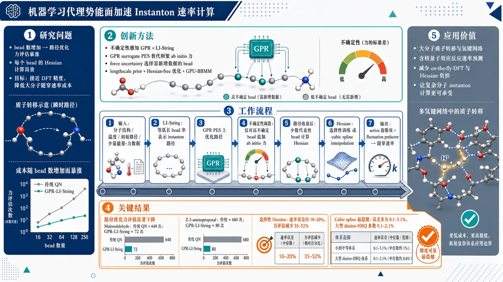
研究问题如何在分子质子转移的环聚合物 instanton 隧穿速率计算中，同时降低两类核心成本：一是随着 bead 数增加而暴涨的路径优化力评估，二是每个 bead 上昂贵的 Hessian 计算；目标是在保持接近 DFT 精度的同时，让大分子量子隧穿速率计算变得可承受。创新方法提出不确定性感知的 GPR 增强 Line Integral String 方法：用 Gaussian Process surrogate PES 代替频繁 ab initio 力计算，并用 force uncertainty 判断哪些 bead 真正需要新电子结构数据，使路径收敛成本与 bead 数近似解耦。训练端结合物理启发 lengthscale prior、Hessian-free 超参数优化和 GPU-BBMM 加速。速率端进一步比较 selective Hessian training 与 cubic spline interpolation，最终发现“GPR 找路径 + 样条插值 Hessian 算速率”是最实用组合。工作流程输入分子结构、温度、初始质子转移路径和少量 ab initio 能量/力数据；LI-String 将 instanton 路径表示为等弧长 bead 串，并在 GPR surrogate PES 上优化；若某些 bead 的力不确定性超过阈值，则追加真实 ab initio 力更新 GPR；路径收敛后，在少数代表性 bead 上计算 Hessian；对 Hessian 可采用 GPR/选择性 Hessian 训练，或沿路径做 cubic spline interpolation；最后由 action 指数项和 fluctuation prefactor 输出 instanton 隧穿速率。关键结果路径优化成本显著下降：malonaldehyde 中传统 QN 从 20 到 80 beads 共需约 640 次力评估，而 GPR-LI-String 从 10 到 80 beads 仅约 72 次；Z-3-aminopropenal 中传统方法约 680 次，GPR-LI-String 约 80 次。选择性 Hessian 训练在 malonaldehyde 和 aminopropenal 中通常将速率误差控制在约 10–20%，并减少约 35–52% 力评估。cubic spline interpolation 表现最稳健：malonaldehyde 误差低于 3%，Z-3-aminopropenal 约 0.1–3.1%，大型 dinitro-HBQ 多数约 0.1–2.1%，明显优于高维受限的 GPR Hessian 预测。应用价值该研究为大分子质子转移、氢键网络和含核量子效应反应提供低成本 instanton 速率计算路线：用机器学习 surrogate 快速定位隧穿主路径，用局部样条插值廉价获得 bead Hessian 和速率 prefactor。它可减少 on-the-fly DFT 计算次数，使原本因 Hessian 和 bead 数过多而困难的量子隧穿速率预测更适合复杂分子体系。第一部分：核心概览 (Overview)
GPR 增强的 Line Integral String 方法显著降低了环聚合物 instanton 隧穿速率计算成本：路径收敛所需力评估数几乎不随 bead 数增加；结合物理先验、Hessian-free 训练与 GPU-BBMM 加速，GPR 训练获得数量级提速；选择性 Hessian 训练进一步减少质子转移体系中的 Hessian 评估。数值结果显示，cubic spline interpolation 在速率近似中更简单、更便宜且精度极高，尤其适合大分子体系。
---
第二部分：结构化快速回顾
《Towards Efficient Instanton Rate Calculations using Machine Learning Surrogates》（None，）
背景
分子内质子转移涉及显著 nuclear quantum effects，尤其是 quantum tunneling。直接求解 Schrödinger 方程随自由度指数增长，难以用于大分子。Ring polymer instanton theory 能以较低成本近似隧穿速率，但路径优化和 bead 上 Hessian 计算仍昂贵，限制了与 on-the-fly DFT 结合时的应用规模。
方法
构建 GPR-enhanced Line Integral String (LI-String) 方法优化 instanton 路径；利用 GPR 的力不确定性控制收敛，使力评估数与 bead 数近似解耦。GPR 训练采用三项加速：physically motivated kernel lengthscale prior、Hessian-free hyperparameter optimization、GPU 加速 BBMM。速率阶段使用 adaptive regression、selective Hessian training 与 cubic spline interpolation 近似 bead Hessian。
结果
malonaldehyde 与 Z-3-aminopropenal 中，GPR-LI-String 将路径优化力评估从数百次降至约 64–80 次，并且 bead 数从 10 增至 80 仅需 8–10 次额外力评估。选择性 Hessian 训练在多个温度下保持速率误差通常低于 20%，并减少约 35–52% 力评估。cubic spline interpolation 在三类体系中表现突出，malonaldehyde 误差 <3%，Z-3-aminopropenal 误差约 0.1–3.1%，dinitro-HBQ 多数误差约 0.1–2.1%。
讨论
GPR 的优势在于路径优化中的 uncertainty quantification 与全局 surrogate PES 构建；spline 的优势在于局部插值、低成本和实现简单。质子转移体系中，柔性模与转移质子强耦合，适合 GPR；刚性模近似线性，适合 linear regression。数据质量，尤其异常 Hessian 删除，对两种近似方法都至关重要。
局限
GPR 对高维 Hessian 数据的内存与计算成本仍高，dinitro-HBQ 中即使只保留 40/78 个 internal modes，GPR 速率仍偏离 DFT 37–70%。浅隧穿、接近势垒顶的体系中，传统 instanton 理论本身精度有限，microcanonical instanton 可能更合适。当前框架仍需显式构建 full Hessian matrix。
结论
最有效策略是使用 GPR 加速 instanton 路径优化，使用 cubic spline interpolation 降低速率计算中的 Hessian 成本。未来关键方向是 matrix-free Hessian spectral methods，例如 Lanczos 与 stochastic trace estimators，以避免显式 Hessian 构建。
---
第三部分：逐章节冷凝解析 (Section-by-Section Condensing)
Abstract
GPR-enhanced LI-String accelerates instanton path convergence
核心贡献是将 Gaussian process regression 与 line integral string method 结合，用于加速分子质子转移反应中 ring polymer instanton 隧穿速率计算。关键机制是利用 surrogate model 的不确定性估计，使路径收敛所需力评估数不再随 bead 离散数显著增长；原文明确指出：*"By exploiting uncertainty estimates from the surrogate modeling, we show that the number of force evaluations required to converge an instanton path becomes effectively independent of the number of beads used to discretize the pathway."*
Efficient GPR training reduces overhead
GPR 训练瓶颈通过三种策略缓解：physical GPR prior、Hessian-free GPR training、GPU 加速 black box matrix matrix multiplication。这些组合使训练速度相对标准实现提高一个数量级；证据为：*"achieving an order of magnitude speedups relative to standard implementations."*
Selective Hessian training targets proton-coupled flexibility
速率计算阶段引入 selective Hessian training，将与转移质子强耦合的柔性模和与反应坐标弱耦合的刚性模区分处理，减少 Hessian 评估；原文表述为：*"distinguishes flexible modes strongly coupled to the transferring proton from more rigid modes weakly coupled to the reaction coordinate."*
Spline interpolation emerges as the simplest high-performing rate approximation
malonaldehyde、Z-3-aminopropenal 和 dinitro-HBQ 三个原型体系均测试 cubic spline interpolation 与 GPR 速率近似。最终数值结论偏向 spline：*"the spline interpolation emerges as a simple and computationally efficient approach for the instanton rate calculations."*
---
1 Introduction
Proton transfer requires nuclear quantum effects
分子内质子转移是电子与原子运动耦合的基本化学过程，室温下也必须考虑隧穿；关键表述为：*"Intramolecular proton transfer is a fundamental chemical process that involves coupled electronic and atomic motion."* 以及 *"Including nuclear quantum effects, such as quantum tunneling, is crucial for an accurate description of proton transfer through a barrier, even at room temperature."*
Exact quantum dynamics scales exponentially with DOF
直接求解 Schrödinger 方程可给出精确隧穿速率，但计算成本随自由度指数增长，不适合大分子；证据为：*"Direct solution of the Schrödinger equation can provide the exact tunneling rate."* 和 *"its computational cost scales exponentially with the number of degrees of freedom (DOF), which makes this approach impractical for large molecules."*
Instanton theory replaces full path sampling with dominant path approximation
Instanton theory 在 Feynman 路径积分框架中用主导路径和其周围谐波涨落近似速率，避免波函数方法所需的大量分子构型采样；原文称：*"the instanton represents the path that gives the dominant contribution to the tunneling rate."* 以及 *"the tunneling rate is obtained from a path integral that is approximated by the instanton and the harmonic fluctuations surrounding it."*
Ring polymer formulation enables atomistic tunneling calculations
利用量子统计力学与经典环聚合物同构，ring polymer instanton theory 将 instanton 路径离散为 ring polymer；证据为：*"the ring polymer instanton theory is formulated by discretizing the instanton path using a ring polymer."* 这种方法的价值在于：*"enables the inclusion of tunneling effects in atomistic simulations where classical transition state theory fails."*
The remaining bottleneck is path optimization plus bead Hessians
算法流程包含两步：高维体系中定位 instanton path，然后通过 bead 上 Hessian 计算 fluctuation factor。即便比全维波函数方法便宜，on-the-fly 电子结构下仍远贵于 classical transition state theory；原文指出：*"requires locating the instanton path in a high-dimensional quantum system, followed by evaluation of the fluctuation factor through Hessians of the potential at the ring polymer beads."* 以及 *"it remains more computationally demanding than classical transition state theory, especially when combined with on-the-fly electronic structure calculations."*
Prior ML acceleration exists but scaling and training remain unresolved
已有 GPR-based methods 与 neural network approaches 用于加速 instanton，且此前工作已将 LI-NEB 与 GPR 结合，将力评估数减少一个数量级；证据为：*"Gaussian Process Regression (GPR) based methods ... and neural network approaches ... have been developed to accelerate instanton calculations."* 以及 *"we combined LI-NEB with GPR to locate the instanton path and achieved an order of magnitude reduction in the number of force evaluations required."*
Current advance replaces LI-NEB with GPR-enhanced LI-String
新的方法是 GPR enhanced Line Integral String (LI-String)，用 string method 最小化 abbreviated action 并获得 instanton path；原文为：*"we develop a GPR enhanced Line Integral String (LI-String) method for efficient instanton path optimization."* 和 *"The string method is used to minimize the abbreviated action to obtain the instanton path."*
Force-evaluation cost no longer scales with bead number
核心算法创新是 GPR surrogate 使路径收敛成本不再随 bead 数增长；原文证据为：*"when using the surrogate model generated by GPR, the cost of converging the instanton path no longer scales with the number of beads representing the path."*
Training acceleration combines physics, Hessian-free optimization, and GPU-BBMM
传统 Cholesky GPR hyperparameter optimization 成本高，限制大体系应用；该研究通过 physical prior、Hessian-free training 与 GPU-enabled BBMM 加速训练。原文指出：*"Hyperparameter optimization in GPR based on Cholesky decomposition is inefficient, which limits the applicability of GPR to larger systems."* 以及 *"combining physical GPR prior, Hessian-free GPR training and GPU enabled Blackbox Matrix Matrix Multiplication (BBMM) approach can accelerate GPR model training."*
Spline interpolation is identified as a practical rate-stage tool
除 GPR 外，cubic spline interpolation 被发现可低成本、高精度近似 instanton rate；原文为：*"the cubic spline interpolation yields a computationally inexpensive yet highly accurate approximate to the instanton rate, which is particularly attractive for large molecular systems."*
---
2 Theory
2.1 Ring Polymer Instanton Theory
Instanton rate has exponential action and fluctuation prefactor
速率表达式为
[
kᵢₙₛₜ(β)=Aᵢₙₛₜ(β)e⁻S[tⁱldex]/hbar
]
其中 (β=1/(k_BT))，(tildex) 是 instanton path，(Aᵢₙₛₜ) 表示涨落贡献。原文直接给出：*"Here β = 1/(kBT) is the inverse temperature, x̃ is the instanton path, and Ainst(β) is the prefactor that accounts for the fluctuation contributions to the rate."*
Two-stage computational workflow separates path and rate
实现分两阶段：先定位 instanton path，再用 Eq. 1 计算速率。原文为：*"The implementation of the instanton algorithm involves two stages."* 以及 *"In the first stage, the instanton path x̃ is located using a path optimization algorithm. In the second stage, the instanton rate kinst is evaluated using Eq. 1."*
Prefactor Hessians dominate computational cost
(Aᵢₙₛₜ) 需要所有 ring polymer beads 上的 potential Hessian，这些 Hessian 是最昂贵部分；证据为：*"Calculation of the prefactor Ainst(β) requires Hessians of the potential energy at all ring polymer beads along the instanton path, and these Hessian evaluations constitute the most computationally intensive part of the calculation."*
Small-bead Hessian training enables surrogate Hessian prediction
速率阶段可只在少量 bead 上训练 GPR，再预测其余 bead Hessian，从而降低成本；原文为：*"The cost of the rate calculation can be reduced by training the GPR model on data from a small subset of beads and using the model to predict the Hessians of the remaining beads."*
Hessian-enabled GPR is costly and potentially unstable
引入 Hessian 信息会使 GPR 训练昂贵并出现数值不稳定，但 adaptive regression 可缓解；证据为：*"Training the GPR model with Hessian information can be computationally expensive for large systems and can also be numerically unstable."*
Cubic spline is an explicit Hessian alternative
另一条路线是用 cubic spline interpolation 插值 bead Hessian；原文称：*"As an alternative, the Hessians of the ring polymer beads can be interpolated using cubic spline interpolation."* 数值判断为：*"both cubic spline interpolation method and regression can accurately approximate the rate."*
---
2.2 Line Integral String Method
LI-String represents instanton path as an intrinsically parameterized curve
LI-String 将 instanton path 表示为 smooth string，并以等弧长 bead 离散；证据为：*"the instanton path is represented by a string, which is a smooth curve with an intrinsic parameterization."* 和 *"the string is discretized into beads that are maintained at equal arc length spacing."*
Perpendicular force projection separates optimization from redistribution
力被投影到路径垂直方向，避免平行分量干扰 bead 再分布；原文为：*"Forces are projected perpendicular to the path to prevent the parallel component from interfering with bead redistribution."*
Reparameterization replaces spring forces
LI-String 不像 LI-NEB 使用 spring forces 维持 bead 分布，而是在 bead spacing 不均匀时重新参数化；证据为：*"Instead of using spring forces to maintain the bead distribution, as in the LI-NEB method, we introduce a reparameterization step whenever the bead spacing becomes uneven."*
FIRE is the primary optimizer
实现中使用 fast inertial relaxation engine (FIRE) 优化 instanton path，同时 quick-min 与 L-BFGS 也可用；原文为：*"the fast inelastic relaxation engine (FIRE) method provides an efficient optimizer for locating the instanton path."* 以及 *"Other optimizers, including quick-min and L-BFGS, can also be used."*
GPR turns LI-String into surrogate-surface optimization
GPR 可增强 LI-String，使路径优化在 surrogate PES 上推进；证据为：*"GPR can enhance the LI-String method by allowing the path optimization to proceed on a surrogate potential energy surface."*
---
2.3 Gaussian Process Regression
GPR learns local PES near instanton path with few points
GPR 用较少训练点在 instanton path 附近构建高精度 PES 表示；原文为：*"GPR can generate a highly accurate representation of the PES in the vicinity of the instanton path using a relatively small number of training points."*
GPR predicts gradients and Hessians at beads
训练后 GPR 可预测 bead 上 gradients 与 Hessians，从而加速速率计算；证据为：*"Once trained, the GPR model can be used to predict gradients and Hessians at the ring polymer beads, which can accelerate the instanton rate calculation."*
Bayesian optimization loop alternates surrogate optimization and ab initio update
GPR 路径优化可视为 Bayesian optimization：先在 surrogate PES 上优化路径，再加入新的 ab initio 数据更新模型；原文为：*"performed iteratively in two steps: optimizing the path on the surrogate PES generated by GPR, followed by incorporation of new ab initio data to update the surrogate PES."*
Uncertainty estimates enable bead-number-independent force evaluations
GPR 最大优势是同时给出预测和 uncertainty estimates；将 force uncertainty 纳入收敛判据后，力评估数可不依赖 bead 数；证据为：*"A key advantage of GPR is its ability to provide uncertainty estimates together with its predictions."* 以及 *"the number of required force evaluations can become independent of the number of beads used to converge the instanton path."*
---
2.3.1 GPR Hyperparameter Optimization
Hyperparameter optimization is the main GPR overhead
GPR 虽加速路径与速率，但 hyperparameter optimization 成本不可忽略，尤其加入 Hessian 时更严重；原文为：*"the optimization of GPR hyperparameters is computationally inefficient, and this bottleneck becomes more severe when Hessians are included in the GPR model."*
Three-part protocol accelerates training by two orders of magnitude
训练协议整合三项：physically motivated kernel lengthscale prior、Hessian-free hyperparameter optimization、GPU-BBMM；原文为：*"integrates (i) physically motivated kernel lengthscale prior, (ii) Hessian-free hyperparameter optimization and (iii) Blackbox Matrix Matrix Multiplication (BBMM) accelerated by GPU hardware."* 该组合效果为：*"accelerates training by two orders of magnitude."*
Kernel lengthscale prior compensates anisotropic gradient and Hessian scales
高维势能、梯度、Hessian 的尺度可能跨多个数量级；忽略各维异方差会导致数值不稳定。策略是令 kernel lengthscale (lᵢ) 与对应 force magnitude 成反比；原文证据为：*"the scales of gradients and Hessians can span several orders of magnitudes across dimensions."* 和 *"the kernel lengthscale li is chosen to be inversely proportional to the corresponding force magnitudes."*
Hessian-free hyperparameter optimization excludes Hessians during training but uses them for prediction
只用 potential energies 与 gradients 已足以收敛到合适 hyperparameters；Hessian 数据对 Hessian prediction 仍重要，但不进入 hyperparameter training 阶段以降成本；原文为：*"Training GPR model with only potential energies and gradients is sufficient to achieve convergence to appropriate hyperparameter values."* 以及 *"The Hessian data are still essential for accurate Hessian predictions, however, they are excluded in the model training stage to reduce the computational cost."*
BBMM reduces exact GP inference scaling from cubic to quadratic
GPU-enhanced BBMM 由 GPyTorch 实现，基于 matrix-vector multiplications，可并行加速；关键复杂度结果为：*"The BBMM method reduces the cost of exact Gaussian process inference from O(n3) to O(n2)."* 以及 *"relies solely on matrix vector multiplications, which can be efficiently accelerated using parallel computing and GPUs."*
---
2.3.2 Outlier detection prior to GPR modeling
GPR is highly sensitive to anomalous training observations
GPR 用平滑概率函数解释所有训练观测，因此少量错误数据会严重影响预测；原文为：*"Gaussian Process Regression (GPR) is inherently sensitive to outliers because the model seeks to explain all training observations through a smooth probabilistic function."* 和 *"Even a small number of erroneous data points can disproportionately influence the prediction, leading to degraded model performance."*
Data validation is necessary before surrogate construction
训练数据质量决定 GPR 性能，异常观测必须识别和删除；证据为：*"the performance of GPR, as with most machine learning methods, depends critically on the quality of the training data."* 以及 *"Identifying and removing anomalous observations is essential for increasing the reliability of the resulting surrogate model."*
---
3 Algorithmic Acceleration of Instanton Calculations
3.1 Low-Scaling Line Integral String Algorithm
GPR uncertainty removes bead-number scaling in LI-String
利用 GPR force uncertainty，LI-String 中路径收敛所需 force evaluations 与 bead 数无关；原文为：*"we show that a similar advantage extends to the GPR-enhanced LI-String method."* 以及 *"the number of force evaluations is independent of the number of beads used to represent the path in the LI-String method."*
Conventional instanton search requires bead interpolation and reoptimization
传统算法通常先用少量 beads 搜索路径，再插值增加 bead 数并继续优化；增加 bead 数通常增加 force evaluations。原文为：*"starting the path search with a small number of beads and then increasing the bead number through path interpolation followed by further path optimization."* 以及 *"increasing the number of beads leads to a larger number of required force evaluations."*
Benchmark uses malonaldehyde and Z3-aminopropenal at 250 K
比较对象是 GPR-LI-String 与 conventional Hessian-based Quasi-Newton (QN) instanton optimization；两个体系为 malonaldehyde 与 Z3-aminopropenal，温度均为 (T=250) K，GPR force error convergence threshold 为 (f_c=0.0025) a.u.。原文为：*"using malonaldehyde and Z3-aminopropenal as examples."* 以及 *"the convergence threshold for the GPR prediction force error is set to fc = 0.0025 a.u."*
Malonaldehyde shows 64 plus 8 force evaluations versus 280 plus 360
malonaldehyde 在 (T=250) K：QN 用 (N=20) 需要 280 次力评估，增至 (N=40) 额外 120 次，增至 (N=80) 额外 240 次，总计 640 次。GPR-LI-String 用 (N=10) 需 64 次，增至 (N=80) 仅额外 8 次，总计 72 次。证据为：*"Using the QN method, 280 force evaluations are required to find the instanton path with N = 20 beads, with an additional 120 and 240 force evaluations needed to further optimize the path with N = 40 and N = 80 beads, respectively."* 以及 *"using the GPR-enhanced LI-String method, 64 force evaluations are required to locate the instanton path with N = 10 beads, and increasing the number of beads to N = 80 requires only 8 additional force evaluations."*
Aminopropenal shows 70 plus 10 force evaluations versus 240 plus 440
Z-3-aminopropenal 在 (T=250) K：QN 用 (N=20) 需 240 次力评估，(N=40) 额外 120 次，(N=80) 额外 320 次，总计 680 次。GPR-LI-String 用 (N=10) 需 70 次，增至 (N=80) 仅额外 10 次，总计 80 次。原文为：*"Using the QN method, 240 force evaluations are required to locate the instanton path with N = 20 beads, with an additional 120 and 320 force evaluations needed to further optimize the path with N = 40 and N = 80 beads, respectively."* 以及 *"using the GPR-enhanced LI-String method, 70 force evaluations are required to locate the instanton path with N = 10 beads. Increasing the number of beads from N = 10 to N = 80 requires only 10 additional force evaluations."*
---
3.2 Adaptive Regression, Selective Hessian Training, and Hessian Interpolation
Internal-coordinate space is divided into active and null subspaces
instanton path 在高维 internal coordinates 中只占据一个 active subspace，其正交补为 null subspace；原文为：*"the instanton path spans a subspace that we refer to as the active subspace. Its orthogonal complement is the null subspace."*
Flexible modes are proton-coupled; rigid modes are weakly coupled
质子转移中，active subspace 由与转移质子强耦合的 flexible internal modes 构成；null subspace 由弱耦合 rigid internal modes 构成。证据为：*"the active subspace consists of internal coordinates that are strongly coupled to the transferring proton and are referred to as flexible internal modes."* 以及 *"The null subspace comprises coordinates that are weakly coupled to the proton, which we referred to as rigid internal modes."*
Rigid modes destabilize GPR unless handled separately
rigid modes 在 GPR 输入中相当于 irrelevant input variables，其 forces 与 Hessians 量级更小；若没有合适 lengthscale prior，会破坏 hyperparameter optimization。原文为：*"The rigid modes, which lie in the null subspace, act as irrelevant input variables in the GPR model."* 以及 *"including rigid modes into the GPR model can adversely affect the hyperparameter optimization, resulting in numerical instability and poor model generalization."*
Adaptive regression assigns GPR to active modes and linear regression to null modes
由于 rigid modes 的 forces/Hessians 对 internal coordinates 近似线性，null subspace 用 linear regression，active subspace 用 GPR；证据为：*"the force and Hessian associated with the rigid modes exhibit an approximately linear dependence on the internal coordinates, making them well suited for linear regression."* 以及 *"The gradients and Hessians of the potential V(x) in the active subspace are modeled using GPR, while those in the null subspace are modeled using linear regression."*
Selective Hessian training reduces cost by using fewer beads for null modes
null subspace 的 partial Hessians 可用更少 beads 表征，active subspace 需要更多 beads；选择性 Hessian 训练可显著降低成本。原文为：*"The partial Hessians in the null subspace are modeled using a linear regression approach, which requires fewer beads for accurate representation."* 和 *"The selective Hessian training approach, applied separately to the active and null subspaces, leads to substantial reductions in computational cost."*
Three approximate rate protocols are benchmarked against DFT
近似速率有三种方案：(a) selected beads 上 full Hessians 用于 GPR；(b) null subspace 3 个 bead partial Hessians + active subspace selected beads partial Hessians；(c) selected beads 上 full Hessians 用于 cubic spline。原文列出：*"(a) full Hessians are computed at selected beads for GPR modeling, (b) partial Hessians in the null subspace are computed at three beads and partial Hessians in the active subspace are computed at selected beads for GPR modeling, and (c) full Hessians are computed at selected beads for cubic spline interpolation."*
---
4 Applications
4.1 Ground state proton transfer rates of malonaldehyde
Malonaldehyde has 21 internal modes and is tested at 275 K and 200 K
malonaldehyde 的 ground-state intramolecular proton transfer 在 (T=275) K 与 (T=200) K 下评估；表注给出 internal modes 数：*"For malonaldehyde, there are 21 internal modes."*
At 275 K, full-Hessian GPR gives roughly 3% error
(T=275) K 时，训练集 20V, 20G, 10H；(N=40) rate = 6.30 ps(⁻¹)，误差 3.2%；(N=320) rate = 6.57 ps(⁻¹)，误差 3.4%。DFT 对应为 (N=40) 6.51 ps(⁻¹)，(N=320) 6.80 ps(⁻¹)。原文概括：*"using 10 full Hessian training data points in the model allows prediction of the instanton rate with less than 5% error."*
At 275 K, selective Hessian GPR trades accuracy for 44% force-evaluation reduction
使用 3 partial Hessian data points along 13 rigid modes 与 10 partial Hessian data points along 8 flexible modes，速率误差约 16.4%；(N=40) rate = 5.44 ps(⁻¹)，(N=320) rate = 5.68 ps(⁻¹)。成本降低 44%；原文为：*"If we use 3 partial Hessian data points along 13 rigid modes and 10 partial Hessian data points along 8 flexible modes as training data, the approximate instanton rate remains accurate, with an error of about 16%."* 以及 *"This approach reduces the number of force evaluations by 44% compared to using the full Hessian dataset."*
At 275 K, cubic spline gives nearly exact rates
使用 20 H (cubic spline)，(N=40) rate = 6.52 ps(⁻¹)，(N=320) rate = 6.79 ps(⁻¹)，误差均 0.1%。原文为：*"cubic spline interpolation with 10 Hessian data points spaced equally along the instanton path, yielding an approximate instanton rate with less than 1% error."* 表中则显示 20 H (cubic spline) 对应误差 0.1%。
At 200 K, more training data are required
低温 (T=200) K 下路径更长、量子效应更强，surrogate PES 需要更多训练数据；原文明确：*"At the lower temperature, T = 200 K, accurately predicting the instanton rate using the surrogate energy surface requires more training data."*
At 200 K, selective Hessian GPR achieves around 9–10% error with 52% cost reduction
使用 30V, 30G, 20H (8 flexible), 3H (13 rigid)，(N=40) rate = 3.23 ps(⁻¹)，误差 9.3%；(N=320) rate = 3.56 ps(⁻¹)，误差 9.4%。DFT 为 (N=40) 3.56 ps(⁻¹)，(N=320) 3.93 ps(⁻¹)。原文为：*"using 3 partial Hessian data points along 13 rigid modes and 20 partial Hessian data points along 8 flexible modes as training data allows the instanton rate to be approximated within 10% error relative to the rigorous instanton rate."* 以及 *"This approach reduces the number of force evaluations by 52% compared to using the full Hessian dataset."*
At 200 K, cubic spline remains below 3% error
使用 20H cubic spline，(N=40) rate = 3.47 ps(⁻¹)，(N=320) rate = 3.83 ps(⁻¹)，误差均 2.5%。原文为：*"The Hessians of the ring polymer beads can also be approximated using cubic spline interpolation, resulting in an approximate rate with an error of less than 3%."*
Both GPR and spline work, but spline is simpler and cheaper
数值结论为两种方法均能复现实验速率，但 spline 实现简单、计算效率高；原文为：*"both the cubic spline interpolation method and the Gaussian Process Regression (GPR) approach are capable of accurately reproducing the instanton rate."* 以及 *"The cubic spline method offers advantages in terms of simplicity of implementation and computational efficiency."*
---
4.2 Ground state proton transfer rate of Z-3-aminopropenal
Aminopropenal has 24 internal modes and is tested at 250 K and 160 K
Z-3-aminopropenal ground-state proton transfer 在 (T=250) K 与 (T=160) K 下评估；表注为：*"For aminopropenal, there are 24 internal modes."*
At 250 K, selective Hessian GPR stays within about 15%
(T=250) K 时，路径含 12 flexible modes 与 12 rigid modes。使用 80V, 80G, 20H (12 flexible), 3H (12 rigid)，(N=40) rate = 169.8 ps(⁻¹)，误差 14.4%；(N=320) rate = 173.4 ps(⁻¹)，误差 11.5%。DFT 为 148.4 与 155.4 ps(⁻¹)。原文为：*"using 3 partial Hessian training data points along rigid modes and 20 partial Hessian training data points along flexible modes, the instanton rate predicted on the surrogate surface is within 15% error relative to the rigorous rate."*
At 250 K, selective Hessian reduces force evaluations by 35%
相对于 full Hessian dataset，选择性 Hessian 训练减少 35% force evaluations；证据为：*"This approach reduces the number of force evaluations by 35% compared to using the full Hessian dataset."*
At 250 K, cubic spline error is about 2–3%
使用 20H cubic spline，(N=40) rate = 145.3 ps(⁻¹)，误差 2.1%；(N=320) rate = 151.6 ps(⁻¹)，误差 2.4%。原文概括为：*"the approximate instanton rate calculated with Hessians interpolated by cubic spline interpolation is also highly accurate, with an error within 3%."*
At 160 K, selective Hessian GPR has less than 20% error at high bead count
(T=160) K 时，选择性 Hessian GPR：(N=40) rate = 110.7 ps(⁻¹)，误差 21.6%；(N=320) rate = 123.5 ps(⁻¹)，误差 17.1%。DFT 为 (N=40) 91.0 ps(⁻¹)，(N=320) 105.5 ps(⁻¹)。原文总结：*"At the lower temperature, T = 160 K, the instanton rate predicted using partial Hessian data has less than 20% error relative to the rigorous rate."* 表中 (N=40) 为 21.6%，(N=320) 为 17.1%，显示高 bead 数结果符合该描述。
At 160 K, selective Hessian reduces force evaluations by 42%
低温下该方法相对 full Hessian dataset 降低 42% force evaluations；证据为：*"This approach reduces the number of force evaluations by 42% compared to using the full Hessian dataset."*
At 160 K, cubic spline is essentially exact at 320 beads
使用 20H cubic spline，(N=40) rate = 93.8 ps(⁻¹)，误差 3.1%；(N=320) rate = 105.5 ps(⁻¹)，误差 0.1%，几乎等于 DFT 105.5 ps(⁻¹)。原文为：*"the error in the rate is around 3%."*
Outlier removal is required for reliable GPR and spline results
两种方法均需数据预处理，尤其异常值删除；原文指出：*"Both cubic spline interpolation and Gaussian Process Regression (GPR) accurately approximate instanton rates, provided that appropriate data preprocessing is performed, including outlier removal."*
Spline is simpler; GPR requires flexible-mode care
Z-3-aminopropenal 的结果强化了方法分工：GPR 要谨慎处理 flexible internal modes，spline 更简单高效；证据为：*"While GPR requires careful treatment of flexible internal modes, spline interpolation offers a simpler and more computationally efficient alternative for instanton rate calculations."*
---
4.3 Ground state proton transfer rate of 7-9-dinitro-HBQ
Dinitro-HBQ uses PBE0/6-31G* DFT and has 78 internal modes
dinitro-HBQ 的 ground-state PES 使用 PBE0 exchange-correlation function 与 6-31G* basis set；体系含 28 atoms 与 78 internal modes。原文为：*"The ground state potential energy surface is computed using DFT with pbe0 exchange correlation function and 6-31g* basis set."* 表注为：*"For dinitro-HBQ, there are 28 atoms and 78 internal modes."*
Low barrier creates shallow tunneling conditions
ground-state barrier 为 1.15 kcal/mol，处于室温热激发可达范围，因此为 shallow tunneling；原文为：*"The barrier at ground state 1.15 kcal/mol, which lies in the range accessible by thermal excitation at room temperature, this means the tunneling dynamics here is shallow tunneling."*
Nitro torsional modes make Hessian prediction harder
两个 nitro substituents 引入低频 torsion modes，使 ML 近似速率更复杂，因为 Hessian 预测必须足够精确以避免污染低频模；原文为：*"the two nitro group substituents introduce low-frequency torsion modes, further complicating the machine learning approximation of the instanton rate, because the predicted Hessians must be highly accurate to prevent the contamination of these low frequency modes."*
Zero mode identification should use eigenvectors, not eigenvalues alone
数值误差会使 instanton pathway 的 zero-frequency mode 获得有限频率；低频 torsional modes 又使仅凭 eigenvalue spectrum 辨认真 zero mode 更困难。解决方式是检查 eigenvector 与转移质子运动的重叠；原文为：*"the zero-frequency mode associated with the instanton pathway may acquire a finite frequency as a consequence of numerical errors introduced by the machine-learned potential."* 以及 *"the true zero mode can be reliably identified through examination of the associated eigenvectors rather than by considering the eigenvalues alone."*
Traditional instanton theory may be inaccurate for shallow tunneling near barrier top
浅隧穿、近势垒顶时，传统 instanton theory 精度有限，microcanonical instanton 可缓解，但未采用；证据为：*"limited accuracy of the conventional instanton theory for shallow tunneling close to barrier top."* 和 *"This deficiency can be mitigated by the recently proposed microcanonical instanton theory."*
GPR becomes memory-limited in high dimensions
dinitro-HBQ 中 Hessian-enabled GPR 因维度升高而计算和内存快速增加；实际仅保留 40 internal modes out of 78，并使用 Hessian-free training 与 physics-informed kernel prior。原文为：*"The GPR approach becomes challenging to apply in the current example due to the steep increase in the computational cost and memory with data dimensionality, particularly when Hessians are included."* 以及 *"retains only 40 internal modes out of all 78 modes in the GPR model."*
GPR rates deviate strongly from DFT in dinitro-HBQ
(T=193) K：GPR 30V,30G,20H 得 (N=40) rate = 474.6 ps(⁻¹)，误差 40.5%；(N=320) rate = 504.9 ps(⁻¹)，误差 37.4%。DFT 为 337.6 与 367.4 ps(⁻¹)。
(T=137) K：GPR 得 (N=40) rate = 104.7 ps(⁻¹)，误差 69.4%；(N=320) rate = 122.5 ps(⁻¹)，误差 70.1%。DFT 为 342.7 与 410.6 ps(⁻¹)。原文概括：*"The GPR-predicted instanton rates still show a noticable deviation from the ab initio results."*
Deviation is attributed to omitted nonlinear modes
GPR 偏差被归因于部分 nonlinear modes 被排除；增加自由度可能提高预测，但 GPU 内存限制阻止扩大 kernel matrix。原文为：*"We attribute this discrepancy to the omission of some nonlinear modes from the GPR model."* 以及 *"the kernel matrix storage already approaches the limit of our GPU hardware."*
Cubic spline remains highly accurate for the largest molecule
dinitro-HBQ 中 spline 表现极佳。
(T=193) K：20H cubic spline 给 (N=40) 337.8 ps(⁻¹)，误差 0.1%；(N=320) 365.2 ps(⁻¹)，误差 0.1%。
(T=137) K：spline 给 (N=40) 354.4 ps(⁻¹)，误差 0.1%；(N=320) 419.2 ps(⁻¹)，误差 2.1%。原文总结：*"cubic-spline interpolation yields a computationally inexpensive yet highly accurate approximation to the instanton rate, particularly for larger molecular systems."*
Local spline beats global GPR under dimensional pressure
spline 的优势来自局部性，只依赖邻近数据点；GPR 是全局回归，使用路径上所有训练点，灵活但成本随训练集和体系尺寸增加。原文为：*"The favorable performance can be attributed to the local nature of spline interpolation, which relies only on neighboring data points."* 以及 *"GPR employs a global regression framework that incorporates information from all training points along the instanton pathway."*
---
5 Conclusions
GPR-LI-String decouples convergence cost from bead count
最终方法为 GPR-enhanced LI-String，利用 GPR uncertainty quantification 使 instanton path 表示 bead 数不再决定 force evaluations；原文为：*"By leveraging the uncertainty quantification provided by GPR, we show that the number of beads used to represent the instanton path no longer determines the number of force evaluations required for convergence."*
Efficient GPR training avoids cubic scaling bottleneck
传统 GPR training 有 (sim O(N³⁾) scaling，加入 Hessian 后更限制大体系。新的训练协议整合 proper GPR prior、Hessian-free model training 和 GPU-BBMM，获得数量级提速；原文为：*"Conventional GPR training is inefficient and exhibits unfavorable cubic scaling with the number of training data points, ∼ O(N3)."* 以及 *"This provides an order-of-magnitude speedup in GPR model training."*
Rate-stage Hessian cost remains approximately n times transition-state theory
路径优化后，速率计算仍约等于 transition state theory 的 (n) 倍成本，因为 (n) 个 ring polymer beads 需要 Hessian；证据为：*"the remaining cost of the instanton rate calculation is still approximately n times that of transition state theory, where n is the number of ring polymer beads for which Hessians are required."*
Selective Hessian training reduces cost while keeping rates within 20%
malonaldehyde 与 Z-3-aminopropenal 中，rigid modes 用 3 beads，flexible modes 用 20 beads，预测速率相对 rigorous instanton rates 保持在 20% 内，额外成本降低 40–62.5%；原文为：*"Hessians along the rigid modes are evaluated using 3 beads and Hessians along the flexible modes are evaluated using 20 beads."* 以及 *"The predicted instanton rates remain within 20% of the rigorous instanton rates, with an additional reduction in computational cost ranging from 40% to 62.5%."*
Spline interpolation accurately approximates rates with limited Hessian evaluations
Cubic spline interpolation 只需有限 Hessian evaluations 即可准确近似 instanton rates；原文为：*"cubic spline interpolation can also accurately approximate instanton rates using only a limited number of Hessian evaluations along the instanton path."*
Anomalous Hessian detection is essential
无论 GPR 还是 spline，异常 Hessian 数据都会严重影响性能，必须先检测并移除；证据为：*"detecting and removing anomalous Hessian data prior to applying the GPR method or cubic spline interpolation method"* 以及 *"the model performance depends critically on the data quality."*
Best practical workflow combines GPR for path and spline for rate
GPR 适合 surrogate modeling 与 Bayesian optimization，因为自带 uncertainty quantification；spline 适合路径已知后的 Hessian 速率加速。最优策略为 GPR 优化路径、spline 插值 Hessian；原文为：*"GPR is well suited for surrogate modeling and Bayesian optimization owing to its built-in uncertainty quantification and robust predictive capabilities, whereas spline interpolation offers a computationally efficient and accurate approach for accelerating instanton rate calculations once the instanton pathway has been determined."* 以及 *"employ GPR to accelerate the instanton path optimization, while using spline interpolation to reduce the cost of Hessian evaluations in instanton rate calculation."*
Future direction is matrix-free Hessian spectral estimation
当前框架仍需 explicit full Hessian matrices；但 instanton rate 实际只依赖 Hessian eigenvalue spectrum 相关量，可用 Lanczos algorithms 与 stochastic trace estimators 通过 matrix-vector products 绕开显式 Hessian。原文为：*"explicit construction of full Hessian matrices is still required within the current framework."* 以及 *"Matrix-free methods, such as Lanczos algorithms and stochastic trace estimators, may provide a route to bypass explicit Hessian construction by accessing these quantities through matrix-vector products alone."*
---
Appendix A Line Integral String Optimization
LI-String minimizes abbreviated action
LI-String 的目标函数是 abbreviated action
[
W(r)=frac1hbarintᵣ_₁rₙsqrt2(V(r)-E),dr
]
其中 (r₁) 与 (rₙ) 是 turning points。原文为：*"The objective function for the LI-String method is the abbreviated action W(r)"* 以及 *"where r1 and rn are the turning points."*
Discretized action uses mass-scaled Cartesian coordinates and n beads
在 mass-scaled Cartesian coordinates 中，用 (n) 个 beads 离散 action；给出的离散式为相邻 bead 势能项平均乘以 bead 距离。原文为：*"Using mass-scaled Cartesian coordinates, the action W(r) is discretized using n beads."*
---
第四部分：深度理解与语言支持 (Understanding & Nuance)
1. 术语解析
#### Instanton
Instanton 在该语境中不是普通“瞬子”抽象概念，而是 Feynman Euclidean path integral 中对隧穿速率贡献最大的闭合或半经典路径。它相当于量子隧穿中最可能的穿越路径。微妙点在于：instanton path 不是 classical trajectory，因为它在 imaginary time / Euclidean space 中定义；也不是最小能量路径，而是最小化 action 的路径。
#### Ring polymer beads
Beads 是将量子路径离散化后的节点。bead 数越多，路径离散越精细，速率越接近连续极限；但每个 bead 通常都需要 energy、gradient、Hessian，成本随 bead 数增加。该研究的重要贡献正是让路径优化阶段的力评估数不再随 bead 数显著增加。
#### Fluctuation prefactor
速率式 (k=Ae⁻S/hbar) 中，指数项描述主路径 action，prefactor 描述主路径周围小振动涨落。它依赖 Hessian eigenvalue spectrum，因此 Hessian 的精度直接影响速率。微妙点：即使路径本身很准，prefactor 的 Hessian 误差也可能造成速率显著偏差。
#### Active subspace / null subspace
Active subspace 是 instanton path 实际变化显著的内部坐标子空间，通常包含与转移质子强耦合的柔性模。Null subspace 是与路径切向运动近似正交、变化弱的空间，包含刚性模。这里的 “null” 不是数学上严格零空间，而是对反应坐标影响弱、近似线性、适合低阶建模的模式集合。
#### Hessian-free training
Hessian-free 并不表示完全不使用 Hessian 数据。含义是：GPR hyperparameter optimization 阶段只用 energies 与 gradients，避免 Hessian 进入训练矩阵导致巨大成本；最终构建预测模型时仍可使用 Hessian 数据提高 Hessian prediction 精度。
---
2. 疑难查证
#### 为什么 force uncertainty 能让路径优化成本不随 bead 数增长？
传统路径优化中，每个 bead 都需要真实力来判断是否收敛；bead 数翻倍，通常需要更多 ab initio force evaluations。GPR surrogate 的关键变化是：每个 bead 的 force prediction 不仅有均值，还有 uncertainty。若某些新增 bead 是通过已有路径插值得到，并位于已训练 PES 的高置信区域内，则无需重新做昂贵的 ab initio force，只需用 surrogate force 更新。只有 uncertainty 超过阈值的位置才触发新电子结构计算。因此，bead 数增加主要增加 cheap surrogate evaluations，而不是 expensive ab initio evaluations。
#### 为什么 rigid modes 适合 linear regression，而 flexible modes 需要 GPR？
质子转移主导运动集中在质子位置、供体-受体距离、氢键角度等柔性坐标上，这些方向的 PES 曲率和耦合非线性强，Hessian 随路径变化复杂，需要 GPR 这类非参数模型。刚性模式远离反应核心，沿 instanton path 位移小、力和 Hessian 变化弱，近似线性足够。若把所有 rigid modes 都强行放进 GPR，会增加输入维度、放大 lengthscale 优化难度，并造成 irrelevant variables 问题。
#### 为什么 dinitro-HBQ 中 GPR 失败而 spline 成功？
dinitro-HBQ 有 78 个 internal modes，两个 nitro groups 还引入低频 torsion modes。GPR 是全局回归，kernel matrix 涉及所有训练点和高维导数观测，Hessian-enabled 版本内存迅速膨胀。实际只保留 40/78 个 internal modes，遗漏的 nonlinear modes 导致 prefactor 误差放大。Spline interpolation 不试图学习全维 PES，只沿已经确定的 instanton path 对 Hessian 做局部插值；只要相邻 bead Hessian 平滑，局部插值就能准确恢复 prefactor 所需信息。因此大分子中 spline 反而更稳健。
#### 为什么 shallow tunneling 会挑战 conventional instanton theory？
传统 instanton 在低于 crossover temperature、势垒穿透明显时表现好。若 barrier 很低，例如 dinitro-HBQ 的 1.15 kcal/mol，热激发可接近势垒顶，路径不再是深隧穿极限下清晰的 imaginary-time bounce。此时速率受近势垒顶、热激发和隧穿混合贡献影响，canonical instanton 的 steepest descent 近似可能不够准确。microcanonical instanton 可按能量分辨处理隧穿贡献，因此更适合 shallow tunneling。
---
第五部分：创新评估与关联 (Synthesis & Novelty)
1. 创新性判断
#### From ML-accelerated path search to bead-number-independent LI-String optimization
近年已有 GPR、神经网络、LI-NEB 等用于 instanton 加速，但核心成本仍会随 bead 数上升。该研究把 uncertainty-aware GPR 与 LI-String 结合，展示了路径优化 force evaluations 对 bead 数的近似独立性。malonaldehyde 中从 (N=10) 到 (N=80) 只增加 8 次力评估；aminopropenal 中只增加 10 次。这解决了高精度路径离散需要大量 bead 时的扩展性问题。
#### Training-side innovation tackles Hessian-enabled GPR bottleneck
过去 GPR surrogate 的主要限制是 Cholesky-based hyperparameter optimization 的 (O(N³⁾) 成本，加入 Hessian 观测后矩阵规模急剧增大。该研究把 physics-informed lengthscale prior、Hessian-free hyperparameter optimization 与 GPU-BBMM 组合起来，使 Hessian-enabled GPR 更可用于分子 instanton 速率任务。新颖性不在单个技术本身，而在它们面向 PES gradient/Hessian surrogate 的组合工程化。
#### Selective Hessian training exploits chemical structure of proton transfer
前人通常将 bead Hessian 作为统一对象处理。该研究把内部模式按与转移质子的耦合强弱分为 flexible 与 rigid，并将 Hessian 数据采样密度差异化：rigid modes 仅 3 beads，flexible modes 可用 20 beads。该设计利用了质子转移的物理结构，减少 35–52% 力评估，并在 malonaldehyde 与 aminopropenal 中将误差控制在约 10–20%。
#### Spline interpolation is elevated from simple approximation to preferred rate-stage strategy
机器学习 surrogate 常被预设为更先进方案，但数值结果显示 cubic spline interpolation 在 rate calculation 阶段更具实用优势。尤其 dinitro-HBQ 中，GPR 误差达 37–70%，而 spline 误差约 0.1–2.1%。这一点具有方法论意义：路径优化需要 GPR 的 uncertainty quantification；路径确定后的 Hessian 沿路径插值则不一定需要全局 ML。
#### Large-system diagnosis clarifies the boundary of GPR usefulness
dinitro-HBQ 案例揭示 Hessian-enabled GPR 在高维、低频 torsional modes、GPU memory constraint 下的失效机制。创新点不仅是成功加速小中型体系，也包括明确指出大体系中全局 GPR 的内存瓶颈和 nonlinear mode omission 风险，并提出 future matrix-free spectral Hessian 方法作为下一步方向。
#### Solved problem and unresolved problem
已解决的问题：
- instanton path optimization 的 force-evaluation scaling 问题；
- Hessian-enabled GPR training overhead 的一部分问题；
- 质子转移体系中刚性/柔性模式差异导致的 Hessian 数据冗余问题；
- rate-stage Hessian 近似的低成本实现问题。
仍未完全解决的问题：
- 大分子 full Hessian 显式构建仍昂贵；
- high-dimensional Hessian-enabled GPR 仍受内存限制；
- shallow tunneling near barrier top 下 conventional instanton theory 的系统误差仍存在；
- anomalous Hessian 数据检测尚未形成自动化、标准化流程。
-
08
📊 含图深析
📄 摘要：将 PINN 用于无卤溶液中电化学氧化膜生长的点缺陷模型求解，系统分析四类失效：不同物理过程损失项不平衡、变量尺度引发的数值不稳定等。工作强调物理约束神经网络在多物理材料工程问题中需处理损失权重与稳定性。
💡 亮点：点缺陷氧化膜模型暴露出 PINN 在损失平衡和数值尺度上的关键瓶颈。该分析对腐蚀、钝化膜和电化学材料的物理约束学习具有直接参考价值。
📖 展开分析 + 配图
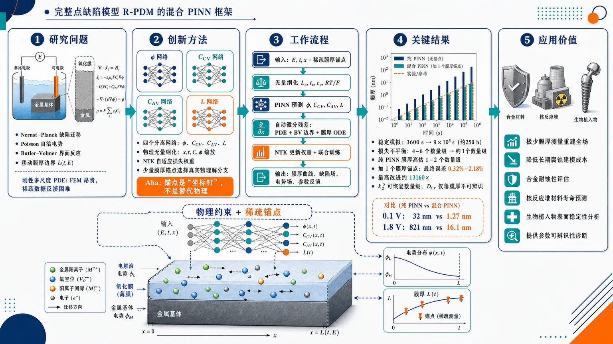
研究问题如何用物理信息神经网络求解并反演电化学钝化氧化膜生长中的完整点缺陷模型：一个由 Nernst–Planck 缺陷迁移、Poisson 自洽电势、Butler–Volmer 指数界面反应和移动膜厚边界耦合形成的刚性多尺度 PDE 系统，传统 FEM 计算昂贵且难以用于稀疏数据下的参数识别。创新方法提出面向完整 R-PDM 的混合 PINN 框架：用四个分离神经网络分别表示电势、阳离子空位、阴离子空位和膜厚；用物理无量纲化把纳米空间、长时间和电化学指数项压到可训练尺度；用 NTK 自适应损失权重平衡 Poisson、传输、边界、初值和膜生长残差；再用极少量 FEM 膜厚锚点选择正确物理解分支。Aha 点是：锚点不是替代物理，而是像“坐标钉”一样把 PINN 从非物理解流形拉回真实氧化膜生长分支。工作流程输入施加电位 E、时间 t、膜内位置 x 和少量 FEM/实验膜厚锚点；先用物理尺度 Lc、tc、cc、RT/F 对空间、时间、浓度、电势无量纲化；四个网络并行预测 ϕ(x,t,E)、CCV(x,t,E)、CAV(x,t,E)、L(t,E)；自动微分计算 Nernst–Planck、Poisson、Butler–Volmer 边界通量和膜厚 ODE 残差；NTK 周期性估计各损失项学习速率并更新权重；加入随机或稀疏膜厚锚点数据项联合训练；最终输出全时域膜厚曲线、缺陷浓度场、电势场，并可反演部分动力学参数。关键结果物理无量纲化将稳定模拟时间从约 3600 s 扩展到 9×10⁵ s，约 250 h；NTK 加权把 Poisson 与传输等损失间 4–6 个数量级的不平衡压缩到约 1 个数量级。纯 PINN 虽能学到膜厚随时间和电位增长的趋势，但膜厚高估 1–2 个数量级，例如 0.1 V 下预测 32 nm 而 FEM 为 1.27 nm，1.8 V 下预测 821 nm 而 FEM 为 16.1 nm。加入一个 FEM 膜厚锚点后，五个电位最终膜厚误差降至 0.32%–2.18%，最高改进约 13160×；参数反演显示边界刚性参数 k₂⁰ 可恢复到正确数量级，而内部扩散系数 DCV 仅靠膜厚不可辨识。应用价值该研究把 PINN 从简化电化学模型推进到完整钝化膜点缺陷模型，可用极少膜厚测量重建完整电势场、缺陷浓度场和膜厚演化，降低长期腐蚀建模对昂贵 FEM 扫描和大量实验数据的依赖。它为合金耐蚀性评估、核反应堆材料寿命预测、生物植入物表面稳定性分析等场景提供稀疏数据驱动的物理建模工具，同时给出参数可辨识性诊断：只有强耦合到观测量的动力学参数适合由膜厚数据反演。第一部分：核心概览 (Overview)
该研究首次将物理信息神经网络（PINN）系统性用于完整点缺陷模型（PDM/R-PDM）的正问题求解与动力学参数反演，面向电化学钝化氧化膜生长这一典型刚性、多物理、移动边界 PDE 系统。核心贡献在于：通过物理无量纲化将稳定模拟时间从约 3600 s 扩展至 9×10⁵ s（约250 h）；通过NTK 自适应损失加权将 4–6 个数量级的损失失衡压缩至约 1 个数量级；通过极少量 FEM 锚点解决纯 PINN 收敛到非物理解分支的问题，使五个电位下最终膜厚误差均低于 2.2%。该工作把 PINN 从简单电化学模型推进到完整 PDM，并揭示了刚性边界条件与参数可辨识性的关键限制。
---
第二部分：结构化快速回顾
《A physics-informed neural network approach to the point defect model for electrochemical oxide film growth》（None，）
背景
钝化氧化膜决定结构合金长期耐蚀性，点缺陷模型（PDM）是描述其生长与失效的标准动力学框架。完整 R-PDM 包含Nernst–Planck 传输方程、Poisson 电势方程、Butler–Volmer 界面动力学、移动边界膜厚 ODE，传统上依赖 FEM，计算代价高且难以做反问题。
方法
构建四个分离网络分别预测电势、阳离子空位、阴离子空位、膜厚；采用物理无量纲化处理纳米尺度与长时间尺度；采用NTK 自适应损失加权平衡 PDE、边界、初值、膜生长损失；通过少量 FEM 膜厚锚点进行混合训练；将部分动力学参数设为可训练变量进行反演。
结果
纯 PINN 能给出定性合理趋势，但膜厚高估 1–2 个数量级，如 0.1 V 下预测 32 nm 而 FEM 为 1.27 nm，1.8 V 下预测 821 nm 而 FEM 为 16.1 nm。加入单个 FEM 锚点后，五个电位最终膜厚误差降至 0.32%–2.18%，改进倍数最高达 13160×。
讨论
纯物理损失存在解分支歧义，单个或随机重采样锚点能把网络推向物理解分支。锚点每步重采样比固定单点更稳健；固定单点误差仍达 84%–353%。数据量超过约 10 个锚点后收益递减。
局限
刚性边界条件强制执行仍未解决。参数反演受可辨识性限制：直接控制膜厚的边界刚性参数可由膜厚数据恢复，而只通过内部浓度场间接影响膜厚的扩散系数不可由膜厚单独约束。
结论
PINN 能将稀疏膜厚测量转化为完整场解和部分动力学参数估计，显著降低 PDM 表征的计算与实验负担；但其可靠性依赖物理缩放、损失平衡、锚点选择及参数可辨识性诊断。
---
第三部分：逐章节冷凝解析 (Section-by-Section Condensing)
Abstract
Passive-film growth is framed as a stiff multiphysics inverse problem.
钝化氧化膜生长与失效预测被定位为腐蚀科学和结构合金长期完整性的核心问题，标准模型是点缺陷模型（PDM），其数学结构是含移动边界的强耦合刚性系统。摘要明确指出 PDM 是 *"a stiff, coupled system of Nernst–Planck, Poisson, and Butler–Volmer equations on a moving boundary"*，并强调传统求解依赖 *"specialised finite-element (FEM) solvers"*。
PINN is proposed as both solver and inverse engine.
物理信息神经网络的优势不只是替代 FEM 做正向求解，还在于能同时吸收数据并反演未知参数。关键表述为 *"PINNs are compelling here because they natively assimilate data and invert for unknown parameters"*，目标是实现 *"one measurement can replace an FEM solution and yield kinetics FEM cannot"*。
Three practical remedies enable long-time PDM training.
三个技术核心分别是：物理无量纲化、NTK 自适应加权、单个验证锚点。无量纲化把稳定模拟从约 1 h 扩展到 250 h，原文为 *"physics-based non-dimensionalisation, which extends stable simulation from about one hour to 250 hours"*；NTK 将损失失衡从 4–6 个数量级压缩到约 1，即 *"compresses a four-to-six-order loss imbalance to roughly one"*；单锚点使五个电位下膜厚误差低于 2.2%，即 *"brings film-thickness error below 2.2 % at all five potentials"*。
Recoverability depends on stiffness coupling to the observable.
参数反演的核心发现是可恢复性跟随刚性耦合路径：直接进入边界膜生长方程的参数可由膜厚数据识别，弱耦合内部参数不可识别。摘要给出判断准则：*"recoverability tracks stiffness: a boundary-stiff kinetic constant is identifiable from film-thickness data while a weakly-coupled interior coefficient is not"*。
---
I Introduction
Passive oxide films are the electrochemical barrier controlling corrosion resistance.
钝化氧化膜被定义为金属表面自发形成的纳米薄层，是金属与环境之间的主要电化学屏障。原文表述为 *"Passive oxide films (spontaneously formed nanometre-thin layers on metal surfaces) are the primary electrochemical barrier separating a metal from its environment"*。应用背景包括生物医学植入物和核反应堆压力容器，膜的生长动力学决定结构合金长期腐蚀防护能力。
The refined PDM turns oxide growth into a fully coupled PDE system.
传统 PDM 由 Macdonald 发展，描述阳离子空位、阴离子空位、金属间隙原子在电场与浓度梯度驱动下的迁移和界面反应。改进版本不再假设恒定电场，而是显式求解 Poisson 方程，使模型成为完整多物理 PDE 系统。关键句为 *"replace the original assumption of a constant electric field with an explicit solution of Poisson’s equation"*，并形成 *"a fully coupled set of partial differential equations (PDEs)"*。
FEM is accurate but costly and poorly suited to inverse parameter estimation.
完整 R-PDM 的刚性、多尺度、移动边界特性使传统求解依赖专用 FEM。原文指出这类系统 *"has required specialized finite element solvers"*，这些求解器虽然准确，但 *"expensive for parameter sweeps and difficult to adapt to inverse problems"*。
PINNs fill the gap between sparse data assimilation and governing-equation constraints.
PINN 将控制方程嵌入训练损失，因此可在无标签数据或少量数据条件下求解 PDE。其对于 PDM 的特殊价值在于同一个网络既能拟合稀疏测量，又能把控制常数设为可训练变量。原文明确指出 *"the network that solves the equations can simultaneously assimilate a data loss, and the governing constants can be made trainable"*。
No prior work had demonstrated PINNs on the full PDM.
已有 PINN 工作覆盖伏安响应、流体伏安、相场移动边界、NTK 加权相场模型，但尚未应用于完整 PDM。关键空白为 *"PINNs have not yet been demonstrated on the full PDM with its combination of moving boundaries, stiff Butler–Volmer kinetics, and multi-scale variable ranges"*。
Four failure modes define the technical agenda.
研究识别四类失败机制：尺度差异、损失失衡、刚性边界条件、非物理解分支收敛。其中前两者可通过已有技术解决，第三个仍未解决，第四个可由单个监督数据点解决。原文为 *"The first two, scale disparity and loss imbalance, can be resolved with existing techniques. The third, stiff boundary enforcement, resists all strategies we tested. The fourth, convergence to non-physical solution branches, is resolved by adding one supervised data point."*
Negative results are treated as methodological knowledge.
两个失败策略也被纳入贡献：Augmented Lagrangian methods 和 residual network connections。其价值在于减少领域重复试错，原文强调 *"this negative knowledge is as valuable to the community as reporting what succeeds"*。
---
II The Point Defect Model
II.1 Physical model
The implemented model follows Bösing’s refined PDM.
模型采用 Bösing 的 Refined PDM（R-PDM），显式解析电势，并包含两类缺陷：阳离子空位 CV 和 阴离子空位 AV。原文为 *"We follow the Refined PDM (R-PDM) of Bösing, which resolves the electric potential explicitly and includes both cation vacancies (CV, charge zCV = −8/3) and anion vacancies (AV, charge zAV = +2)"*。
The fractional cation-vacancy charge encodes mixed Fe²⁺/Fe³⁺ occupancy.
阳离子空位电荷 zCV = −8/3 来自铁氧化物晶格中 Fe²⁺/Fe³⁺ 混合占位的平均场处理：一个空位补偿 2/3 个 Fe²⁺ 位点与 1/3 个 Fe³⁺ 位点，因此
zCV = −[(2/3)·2 + (1/3)·3] = −8/3。原文为 *"one vacancy compensates 2/3 of an Fe2+ site and 1/3 of an Fe3+ site, giving zCV = −(2/3·2 + 1/3·3) = −8/3"*。
Electronic carriers are excluded for PINN simplicity.
尽管完整电化学氧化膜中可能涉及电子与空穴，PINN 实现中排除了电子载流子，以降低耦合复杂度。原文为 *"For simplicity, electronic carriers are excluded from the PINN implementation"*。
The reaction network targets iron passivation in halide-free solution.
界面反应对应无卤溶液中的铁钝化。化学溶解反应 R5 的化学计量为 2Fe³⁺ + Fe²⁺ + 4H₂O，原文为 *"The stoichiometry of chemical dissolution (R5) gives 2 Fe3+ + Fe2+ + 4 H2O, consistent with Bösing"*。
---
II.2 Governing equations
Defect transport is governed by Nernst–Planck fluxes.
氧化膜区域为 [0, L(t)]，膜厚 L(t) 随时间演化。缺陷物种 i ∈ CV, AV 的浓度 Ci 满足
∂Ci/∂t = −∇·Ji，
Ji = −Di∇Ci − ziFDiCi/(RT)∇ϕ。
原文直接给出 *"Defect transport for species i ∈ CV, AV is governed by the Nernst–Planck equation"*。其中 F = 96485 C mol⁻¹，R = 8.314 J mol⁻¹ K⁻¹。
The electric potential is solved through Poisson’s equation.
电势 ϕ 满足
−∇·(ε∇ϕ) = F∑i ziCi。
这一步区别于恒定场 PDM，使模型成为电荷密度与电势自洽耦合系统。原文为 *"The potential satisfies Poisson’s equation"*。
Interfacial kinetics are represented by single-exponential Butler–Volmer rates.
界面反应速率为
kj = kj⁰ exp[−αjFηj/(RT)]，
ηj = E − Ej⁰。
在阳极钝化生长条件下，金属氧化与膜/溶液界面溶解强不可逆，因此省略反向项。原文解释为 *"under the anodic conditions of passive film growth, metal oxidation at the metal/film interface and dissolution at the film/solution interface are both strongly irreversible"*，并给出条件 *"|ηj| ≫ RT/F"*。
Film growth is coupled to interfacial fluxes through an ODE.
膜厚演化满足
dL/dt = Ω∑jνjkj，
其中 Ω 为氧化物摩尔体积，νj 为反应 j 的体积化学计量贡献。原文为 *"Film growth couples to the defect fluxes via dL/dt = Ω∑jνjkj"*。
Boundary fluxes are explicitly tied to vacancy reactions.
膜/溶液界面边界条件包括 JCV(x=L)=−k3 与 JAV(x=L)=k4cAV。原文为 *"The flux boundary conditions at the f/s interface are JCV(x = L) = −k3 and JAV(x = L) = k4 cAV"*。这类边界条件具有强指数刚性，是训练失败的重要来源。
---
III PINN Methodology
III.1 Non-dimensionalization
Scale disparity is the first obstacle.
PDM 变量尺度跨度极大：空间约 10⁻⁹ m，时间可达 10⁵ s，浓度跨越多个数量级。原文指出 *"spatial coordinates are on the order of one nanometre (10−9 m), concentrations span many orders of magnitude, and simulation times can reach 10⁵ s"*。
Float32 precision causes flat learned profiles without rescaling.
在 32-bit 浮点下，纳米尺度梯度可能低于机器精度，网络会学到近似平坦的空间分布。原文为 *"gradients at nanometre length scales fall below machine precision, causing the network to learn flat profiles instead of the correct spatial variation"*。
Characteristic scales are physically grounded.
采用四个物理尺度：
- Lc = 10⁻⁹ m，初始膜厚/一纳米；
- tc = Lc²/DCV，扩散时间尺度；
- cc = 10⁻⁵ mol m⁻³，参考浓度；
- ϕc = RT/F ≈ 0.0257 V at 298 K，热电压。
原文逐项给出 *"Lc = 10−9 m"*, *"tc = Lc²/DCV"*, *"cc = 10−5 mol m−3"*, *"ϕc = RT/F ≈ 0.0257 V at 298 K"*。
Thermal-voltage scaling makes electrochemical exponents well conditioned.
选择 ϕc = RT/F 的原因是 Butler–Volmer 指数项自然无量纲化，并使系数约为一。原文为 *"The choice ϕc = RT/F is natural for electrochemical systems because it makes the Butler–Volmer exponents dimensionless with coefficients equal to the charge transfer coefficient times the charge number, both of order one"*。
Stable simulation time increases by a factor of 250.
无量纲化使变量保持在 O(1) 到 O(100)，显著提升浮点可靠性。维度模型约 3600 s 后不稳定，而无量纲模型稳定至 900000 s。原文为 *"dimensional models become numerically unstable at around 3600 s, whereas the non-dimensional model runs stably to 900,000 s, a factor of 250 improvement in temporal range"*。
---
III.2 Segregated network architecture
Each physical field has a dedicated neural network.
采用分离网络架构避免一个网络参数同时承受多个物理场的冲突梯度。原文为 *"Assigning a single network to represent all fields concentrates conflicting gradient signals in one set of weights"*，因此使用 *"a segregated architecture in which each physical field has its own dedicated network"*。
Four networks represent potential, two vacancy concentrations, and thickness.
四个网络分别为：
- Uϕ(x̂,t̂,E)：电势；
- UCV(x̂,t̂,E)：阳离子空位浓度；
- UAV(x̂,t̂,E)：阴离子空位浓度；
- UL(t̂,E)：膜厚。
膜厚网络不含空间输入，因为膜厚只依赖时间和电位。原文为 *"The spatial input x̂ is omitted from UL because film thickness depends only on time and the applied potential, not on position within the film"*。
Network size is modest and empirically stable.
每个网络使用 5 个隐藏层、每层 20 个神经元、Swish 激活函数。四个网络合计约 9k 可训练参数。原文为 *"Each network uses five hidden layers of 20 neurons with Swish activation functions"*，以及 *"The four field networks together hold approximately 9k trainable parameters"*。
Architecture sweeps showed little effect on final hybrid accuracy.
在 4×20 到 6×32 范围内的初步测试没有导致收敛混合误差的统计显著变化。原文为 *"preliminary tests over the range 4×20 to 6×32 produced no statistically significant change in the converged hybrid error"*。
Applied potential is batchwise uniform.
电位 E 每个 mini-batch 采样一次，并在该批所有配置点共享，反映实验中电位空间均匀的事实。原文为 *"The applied potential E is sampled once per mini-batch and shared across all collocation points in that batch"*。这也使模型可在一次推理中扫完整极化曲线，原文为 *"sweep the entire polarisation curve in a single inference pass without retraining"*。
---
III.3 Loss function
The total loss combines interior, boundary, initial, and film-growth physics.
总损失由四部分构成：PDE 内部残差、边界条件、初始条件、膜生长 ODE。原文为 *"The training loss combines PDE residuals (interior), boundary conditions (BC), initial conditions (IC), and a film-growth ODE term"*。
Interior residuals enforce transport and Poisson dynamics.
对 j ∈ CV, AV, ϕ，内部损失惩罚预测时间导数与 PDE 算子 Nj 的差异。原文为 *"the interior loss penalises the discrepancy between the predicted time derivative and the PDE operator"*。
Boundary and initial losses enforce physical constraints at interfaces and t = 0.
边界损失 LBC 约束界面通量、电势边界等条件；初始损失 LIC 约束初始浓度、电势、膜厚状态。原文直接列出 *"LBC"* 与 *"LIC"* 的均方残差形式。
Film-growth loss couples the neural thickness output to the moving-boundary ODE.
膜厚网络 UL 的时间导数通过 Lfilm 与理论 dL/dt 对齐。原文公式为 *"Lfilm = 1/Nfilm ∑ |∂UL(ti)/∂t − dL/dt(ti)|²"*。
Loss weights are adaptive rather than fixed.
总损失为
Ltotal = wintLint + wBCLBC + wICLIC + wfilmLfilm。
权重 wk 由 NTK 框架自适应更新，原文为 *"The scalar weights wk are updated adaptively using the NTK framework"*。
---
III.4 NTK-based adaptive loss balancing
Uniform weighting causes Poisson dominance.
即使无量纲化之后，Poisson 损失仍比传输损失大 4–6 个数量级。原文为 *"the Poisson loss dominates the transport losses by four to six orders of magnitude under uniform weighting"*。这会使优化器忽视小损失项，导致网络只学习主导方程。
NTK traces estimate effective learning rates of loss components.
神经切线核（NTK）描述网络输出对参数扰动的敏感性。对于有限网络，NTK 矩阵特征值可近似决定每个损失项的有效学习率。原文为 *"the eigenvalues of the NTK matrix for each loss term determine the effective learning rate of that term"*。
Equalizing NTK traces balances learning across physics terms.
当某个项 NTK 特征值远大于其他项，优化器会优先拟合它。解决方式是让不同损失项的 NTK trace 可比。原文为 *"Equalising the NTK traces across loss components therefore equalizes the effective learning rates"*。
The residual Jacobian defines the NTK matrix.
对损失项 k，每点残差雅可比 Jk ∈ RNk×M 定义为
(Jk)nm = ∂rk(xn,tn,En)/∂θm，
NTK 为 Kk = JkJkᵀ。原文为 *"The NTK matrix is the outer product Kk = Jk Jk^T"*。
Mini-batch NTK reduces computational cost.
完整雅可比内存代价为 O(Nk×M)，因此采用小批量近似。子批大小设为：bint=1024、bBC=512、bIC=512、bfilm=1024。原文为 *"The realised sub-batch sizes are bint = 1024, bBC = 512, bIC = 512, and bfilm = 1024"*。
NTK updates add moderate cost but major stabilization.
每 100 步重算 NTK 权重。平均每步训练时间从 34.8 ms 增至 48.5 ms，峰值 GPU 内存从 237 MB 增至 805 MB。原文为 *"raises the mean per-step training cost from 34.8 ms under uniform weighting to 48.5 ms, and the peak GPU memory from 237 to 805 MB"*。
Spike rejection prevents catastrophic early transients.
任一 film-physics、boundary、interior、initial 损失超过 10¹⁵ 的训练步被跳过，梯度清零且 Adam 状态不更新。原文为 *"any step whose film-physics, boundary, interior, or initial loss component exceeds 10¹⁵ is skipped"*。
---
III.5 Hybrid training with minimal data
Pure PINN converges but selects the wrong solution branch.
纯物理训练不是简单未收敛，而是落到 PDM 方程的错误分支。原文为 *"pure PINN training, despite converging successfully, settles onto the wrong solution branch of the PDM equations"*。
A single supervised thickness anchor is added.
数据损失为
Ldata = |UL(t*,E*) − L*|²，
其中 (t*, E*, L*) 是一个 FEM 验证点。原文为 *"we add a single supervised data term Ldata = |UL(t*,E*) − L*|²"*。
The anchor selects the physical branch rather than replacing physics.
PINN 已编码正确控制方程，只需极少数据打破解分支歧义。原文为 *"The PINN already encodes the correct physics and needs only the anchor to select the physical solution branch"*。
Hybrid PINNs align with broader scarce-data PDE strategies.
稀疏监督观测与物理损失结合是反问题与数据稀缺 PDE 中成熟策略。原文指出 *"Combining a sparse set of supervised observations with a physics loss is a well-studied strategy for inverse and data-scarce PDE problems"*。
---
IV Results
IV.1 Benchmark setup
FEM solutions provide the reference benchmark.
验证基准来自 Bösing 的 R-PDM FEM 解，使用 COMSOL Multiphysics 和自适应网格处理移动边界。原文为 *"We validate against FEM solutions of the R-PDM computed by Bösing in COMSOL Multiphysics with adaptive meshing to handle the moving boundary"*。
The evaluation spans five potentials and long times.
膜厚预测在 E ∈ [0.1, 1.8] V 范围内评估，模拟时间至 9×10⁵ s（约250 h）。原文为 *"across applied potentials E ∈ [0.1, 1.8] V and simulation times up to 9×10⁵ s (≈250 hours)"*。
Training protocol is fixed and converged.
所有 PINN 训练 50000 Adam steps，学习率 10⁻³。额外 100000 steps 验证显示混合误差变化小于 0.1 个百分点。原文为 *"All PINN models are trained for 50,000 Adam steps at a learning rate of 10−3"*，以及 *"the hybrid error changes by less than 0.1 percentage point"*。
---
IV.2 Pure PINN results
Pure PINN captures qualitative trends.
纯 NTK 加权 PINN 能再现膜厚随时间指数增长、电位越高生长越快等定性物理行为。原文为 *"The model reproduces the correct qualitative behavior: film growth is exponential and voltage-dependent"*。
Absolute film thickness is grossly overestimated.
纯 PINN 在所有电位下把膜厚高估 1–2 个数量级。具体数值：E=0.1 V 时预测 32 nm，FEM 为 1.27 nm；E=1.8 V 时预测 821 nm，FEM 为 16.1 nm。原文为 *"At E = 0.1 V it predicts 32 nm against the FEM reference of 1.27 nm; at E = 1.8 V it predicts 821 nm against 16.1 nm"*。
The failure is interpreted as branch selection, not non-convergence.
损失收敛干净，电势分布量纲合理，因此问题不是训练崩溃，而是落到不同解流形分支。原文为 *"This is not a training failure: losses converge cleanly and the predicted potential profiles are dimensionally plausible"*，并解释为 *"convergence to a different branch of the solution manifold"*。
---
IV.3 Hybrid PINN results
One FEM anchor dramatically corrects the solution.
加入单个随机选择、未优化的 FEM 点：t* = 150000 s，E* = 0.1 V，L* = 1.27 nm。原文为 *"Adding a single FEM data point (t* = 150,000 s, E* = 0.1 V, L* = 1.27 nm), chosen at random without optimisation, transforms the results dramatically"*。
Final film-thickness errors fall below 2.2% across all tested potentials.
五个电位下混合 PINN 最终膜厚误差分别为：
- 0.1 V：0.32%，R² = 0.8975，改进 7537×；
- 0.4 V：0.97%，R² = 0.8708，改进 4852×；
- 1.0 V：0.80%，R² = 0.9123，改进 7135×；
- 1.6 V：2.18%，R² = 0.9428，改进 2393×；
- 1.8 V：0.38%，R² = 0.9891，改进 13160×。
表格说明为 *"Film-thickness error (final value) and R² over the full transient for the pure PINN and the hybrid PINN at five applied potentials"*。
R² is computed on full transient curves, not only endpoints.
R² 较低并不等于最终膜厚差，尤其在中间电位短暂瞬态中，初期误差权重更高。原文为 *"The R² values are computed over the full transient time series, not just the final film thickness"*。
---
IV.4 Robustness to anchor placement
Random-anchor resampling is reproducible across seeds.
七个独立随机种子中，六个收敛到物理解分支。五个测试电位平均整曲线膜厚相对误差为 1.7%–14.6%，均值 4.3%，其中五个紧密聚集在 2.3 ± 0.5%。原文为 *"Six of the seven converge to the physical branch, with whole-curve relative film-thickness errors ... between 1.7% and 14.6% (mean 4.3%, with five of the six clustering tightly at 2.3 ± 0.5%)"*。
One seed failure is attributed to initialization rather than anchor inadequacy.
剩余一个种子落到非物理分支，误差 240%。原文为 *"the remaining seed converges to a non-physical branch (240%), an initialisation-driven failure rather than a property of the anchor"*。
Fixed single anchors are highly placement-sensitive.
若整个训练中固定一个 FEM 点，误差取决于位置且很大：
- 早期低电位 t*=2 ks, E*=0.1 V：353%；
- 中期低电位 200 ks, 0.1 V：84%；
- 晚期低电位 380 ks, 0.1 V：85%；
- 中期中电位 200 ks, 1.0 V：104%；
- 中期高电位 200 ks, 1.6 V：341%。
原文为 *"a sweep over five fixed positions in the (t,E) domain gives errors from 84% to 353%"*。
Resampling behaves like stochastic regularization.
每步重采样不是“一个标签足够”，而是持续把解推向物理分支。原文为 *"The redraw-every-step scheme therefore behaves less like a single supervised label and more like a stochastic regulariser"*。
---
IV.5 Data efficiency
Zero anchors leave severe branch ambiguity.
当 Ndata=0 时，平均误差 518% 且高度可变，说明纯物理约束不能唯一选择物理解。原文为 *"With no anchor the error is enormous and highly variable (mean 518%), confirming the branch ambiguity"*。
Fixed anchors reduce error monotonically but with diminishing returns.
固定 FEM 锚点数量从 0 增至 50，每级 3 个随机种子。误差从单锚点约 66%，降至 Ndata=3 时 36%，Ndata=10 时 18%，Ndata=50 时 6.5%。原文为 *"A single fixed anchor already reduces the error to about 66%, and the error then falls steadily: 36% at Ndata = 3, 18% at Ndata = 10, and 6.5% at Ndata = 50"*。
Most accuracy is gained by about ten anchors.
超过约 10 个锚点后收益递减。原文为 *"Returns diminish beyond roughly ten anchor points"*。
---
IV.6 Noise robustness
Multiplicative Gaussian noise is used to mimic experimental uncertainty.
锚点膜厚加入乘性高斯噪声：
L* → L*(1+ε)，ε ~ N(0, σ²)。
原文为 *"multiplicative Gaussian noise on the anchor value, L* → L*(1+ε) with ε ∼ N(0, σ²)"*。
Physics loss denoises noisy anchors.
在 Ndata=10、每级 3 个种子下，误差从 σ=0 时 17.9% 缓慢升至 σ=5% 时 23.9%。原文为 *"the error rises only gradually, from 17.9% at σ = 0 to 23.9% at σ = 5%"*。
Even extremely noisy anchors remain partly useful.
当 σ=50% 时，误差仍处于约 30%–46%，说明物理约束能保持分支选择功能。原文为 *"remains usable (~30–46%) even at σ = 50%"*，并解释 *"The film-growth physics constrains the solution enough that a noisy anchor still selects the correct branch"*。
---
IV.7 Inverse problem: parameter recovery
Unknown kinetic parameters are optimized in log-space.
反问题中，将某个动力学参数作为可学习变量，以 log10 空间表示，并与网络权重一起通过梯度下降优化。原文为 *"represent it as a learnable variable in log10 space"*。
A two-stage schedule stabilizes inverse training.
先固定参数训练网络，再冻结网络只更新参数。原文为 *"the networks are trained first with the parameter held at its initial guess, after which the networks are frozen and only the parameter is updated"*。
Only one parameter is recovered at a time because joint recovery is ill-posed.
多个动力学常数同时由单一膜厚观测恢复是病态问题。原文为 *"We recover one parameter at a time, since the joint recovery of several kinetic constants from a single observable is ill-posed"*。
Boundary-stiff k₂⁰ is identifiable from thickness data.
k₂⁰ 直接进入膜生长方程和 Butler–Volmer 指数项，因此强控制 L(t)。从初始猜测 3.6×10⁻⁵、真实值 3.6×10⁻⁶ 出发，优化可跨越超过一个数量级误差。单电位观测恢复到 2.3×10⁻⁶（37% 误差），三电位观测恢复到 4.8×10⁻⁶（34% 误差）。原文为 *"Starting from an initial guess ten times the true value (3.6×10−5 against a true 3.6×10−6)"*，并给出 *"2.3×10−6 (37% error)"* 和 *"4.8×10−6 (34% error)"*。
Interior-stiff DCV is not identifiable from thickness alone.
DCV 进入 Nernst–Planck 内部传输方程，只通过空位通量间接影响膜厚。从初始猜测 5×10⁻²¹、真实值 1×10⁻²¹ 出发，参数几乎不动并漂移到 5.8×10⁻²¹，误差 483%。原文为 *"Starting from a guess five times the true value (5×10−21 against a true 1×10−21), the parameter barely moves and in fact drifts further from the true value (5.8×10−21, a 483% error)"*。
Recoverability tracks stiffness relative to the observable.
可辨识性的实用判据是参数是否强耦合到观测量。原文总结为 *"a parameter that drives the observable directly is identifiable from sparse film-thickness data, whereas one that couples to the observable only weakly is not"*。
---
V Failure Modes and Solutions
V.1 Scale disparity and non-dimensionalization
Dimensional training fails because nanometre gradients underflow.
未无量纲化时，空间坐标约 10⁻⁹ m，浓度差异超出 float32 解析能力，网络学到常数或近常数电势剖面。原文为 *"spatial coordinates (~10−9 m) and concentration differences fall below the resolution of 32-bit floating-point arithmetic"*，导致 *"constant or nearly constant potential profiles"*。
Dimensional models become unstable after about one hour.
维度模型超过约 3600 s 后数值不稳定；无量纲模型稳定至 9×10⁵ s。原文为 *"dimensional models become numerically unstable beyond about 3600 s, whereas the non-dimensional model remains stable to 9×10⁵ s"*。
Physics-based scaling is favored over statistical normalization.
无量纲化采用物理特征尺度，而非单纯数据标准化。原文引用类似多尺度问题中的结论：*"physics-based rescaling consistently outperforms statistical normalization"*。
---
V.2 Loss imbalance and NTK weighting
Poisson residual overwhelms transport residuals under uniform weighting.
统一权重或无权重时，Poisson PDE 残差比传输方程残差大 4–6 个数量级。原文为 *"the Poisson PDE residual dominates by four to six orders of magnitude, starving the transport equations of gradient information"*。
NTK weighting compresses losses to comparable scales.
NTK 加权将 Poisson 与传输损失拉近到 1 个数量级以内，并使所有分量呈单调下降趋势。原文为 *"NTK weighting brings all PDE components to within one order of magnitude of each other"*。
Boundary losses remain noisy because of the moving boundary.
边界损失仍振荡较强，因为移动边界不断产生新的采样坐标。原文为 *"Boundary-condition losses remain noisier because the moving boundary continuously generates new, previously unseen sampling coordinates at each step"*。
Residual boundary oscillations do not prevent plausible convergence.
尽管边界损失仍有噪声，收敛解仍物理合理。原文为 *"Despite this residual oscillation in the BC loss, the converged solution is physically plausible"*。
---
第四部分：深度理解与语言支持 (Understanding & Nuance)
1. 术语解析
Physics-informed neural networks (PINNs)
语境中不是普通神经网络回归器，而是把控制方程残差、边界条件、初始条件、观测数据共同写入损失函数的连续场求解器。关键词 *"embed the governing equations directly into the training loss function"* 表明 PINN 的训练目标不是拟合大量标签，而是满足物理方程。
Point Defect Model (PDM)
不是单纯经验腐蚀公式，而是以带电点缺陷迁移、产生、湮灭和界面反应解释氧化膜生长的动力学框架。文中 R-PDM 进一步显式求解 Poisson 方程，意味着电场不再人为指定，而由缺陷电荷密度自洽决定。
Stiff boundary conditions
“刚性边界条件”不是边界固定不动，而是边界反应速率对电位、浓度或膜厚变化极端敏感，尤其 Butler–Volmer 指数项会导致很小输入变化产生巨大通量变化。这类条件使优化器难以同时满足 PDE 内部与界面反应。
Solution branch
“解分支”指非线性耦合方程可能存在多个数学上残差较低、但物理意义不同的解。纯 PINN 膜厚曲线形状合理但尺度错误，说明它不是随机失败，而是进入了另一个可训练的非物理解流形。
Boundary-stiff vs interior-stiff parameter
Boundary-stiff 参数直接进入边界反应或膜生长 ODE，对观测膜厚强敏感；interior-stiff 参数主要影响内部浓度场，只有通过通量间接影响膜厚。前者可由膜厚数据识别，后者需要内部场观测。
---
2. 疑难查证
为什么单个锚点能纠正整个电位与时间范围的膜厚？
PDM 方程本身强约束了可行解空间。纯 PINN 已经学会“形状”和“电位排序”，但缺少信息来选择正确绝对尺度。一个 FEM 膜厚锚点相当于在解流形上给出坐标定位；物理损失再把这一定位沿时间、电位和空间传播。因此单锚点不是提供完整监督，而是打破非线性系统的分支歧义。
为什么固定单点不如每步随机重采样一个点？
固定锚点只在一个局部位置施加约束。如果该点位于早期、低电位或高电位敏感区域，梯度可能偏向错误局部校正，无法全域约束解分支。每步随机重采样则让网络在训练过程中反复接触不同时间-电位位置，相当于低成本随机正则化，使物理解分支在统计意义上更稳定。
为什么 DCV 无法由膜厚数据恢复？
膜厚 L(t) 是边界生长/溶解的积分结果。DCV 影响的是膜内阳离子空位浓度剖面和通量，只有当这些内部变化显著传递到边界生长速率时，膜厚才对 DCV 敏感。若其他边界反应项主导膜厚变化，许多不同 DCV 值都能产生相似 L(t)，反演问题就不可辨识。需要额外测量内部浓度场、电势场或通量，才能约束 DCV。
为什么 NTK 加权不是简单把大损失调小？
NTK 加权依据的是每个损失项对网络参数的敏感性，即“这个物理约束在当前网络上能多快被学习”。大残差不一定学习慢，小残差也可能梯度敏感性极高。NTK trace 提供近似的有效学习率指标，使优化器不会只沿 Poisson 方程的高梯度方向更新，而忽略传输方程。
---
第五部分：创新评估与关联 (Synthesis & Novelty)
1. 创新性判断
First full-PDM PINN demonstration.
近年 PINN 已用于伏安、电化学扩散、相场移动边界和流体-热耦合问题，但完整 R-PDM 同时包含移动边界、Poisson 自洽电势、Nernst–Planck 带电传输、Butler–Volmer 指数边界动力学、多尺度变量范围。该研究的新颖点在于首次把 PINN 推入完整 PDM，而不是简化电化学 PDE。
Failure-mode-centered methodology.
贡献不只是给出成功案例，而是系统识别并拆解四类失败模式：尺度差异、损失失衡、刚性边界、非物理解分支。这比单纯报告误差更有方法学价值，因为它揭示了 PINN 处理刚性多物理系统时的真实瓶颈。
Physics-based non-dimensionalization as a decisive enabler.
将稳定时间从 3600 s 推至 900000 s 的效果说明，PINN 在多尺度 PDE 上不是网络结构越大越好，而是物理尺度选择决定可训练性。这对腐蚀、电池、催化膜、半导体漂移扩散等问题具有迁移意义。
NTK balancing applied to electrochemical PDM stiffness.
NTK 加权此前已在相场等问题中出现，该研究将其用于 PDM 中 Poisson-transport 损失失衡，将 4–6 个数量级压缩到约 1 个数量级，提供了刚性电化学 PINN 的可操作模板。
Minimal-data branch selection.
最突出的科学创新是证明 PDM 的纯物理 PINN 可定性正确却定量错位，而极少数据不是为了拟合曲线，而是为了选择物理解分支。这种“锚点选择分支”的解释，比传统“加入数据提高精度”的叙述更深。
Parameter identifiability tied to stiffness pathway.
参数反演部分提出清晰诊断：可恢复性取决于参数是否沿强耦合路径影响观测量。k₂⁰ 可由膜厚恢复到正确数量级，而 DCV 不可由膜厚单独恢复。该判断解决了许多 inverse PINN 工作中“参数学不出来但原因不明”的问题。
Remaining unresolved frontier.
刚性边界条件强制执行仍是开放问题。即便无量纲化、NTK、锚点训练均有效，移动边界上的指数 Butler–Volmer 通量仍造成边界损失噪声和潜在非物理解。这一限制表明未来需要更强的边界处理方式，例如硬约束架构、界面坐标变换、算子分裂、弱形式 PINN 或专门的边界残差预条件化。
-
09
📊 含图深析
📄 摘要：提出带注意力机制的物理引导卷积神经网络，作为非线性 PDE 支配的守恒动力学体系微结构演化代理模型。模型学习完整时间演化，用于替代计算代价较高的传统数值求解器，目标是预测物理、化学和生物体系中的畴生长过程。
💡 亮点：注意力物理引导 CNN 被用于守恒动力学畴生长的全时程预测。其核心价值在于把微结构 PDE 演化压缩为快速代理模型。
📖 展开分析 + 配图
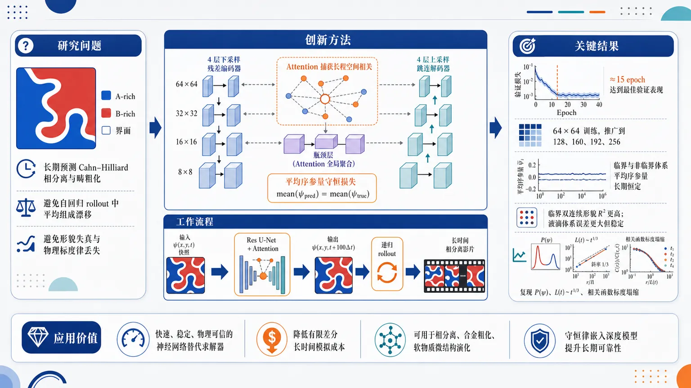
研究问题如何用深度学习代理模型长期预测 Cahn–Hilliard 方程控制的二元混合物相分离与畴粗化，同时避免自回归 rollout 中平均组成漂移、形貌失真和物理标度律丢失。创新方法提出注意力增强、物理约束的残差 U-Net：在 U-Net 瓶颈层加入 attention 捕获大尺度畴之间的长程空间相关；在损失函数中显式加入空间平均序参量守恒项，使预测场不仅逐点接近真实场，还保持全局组成守恒，这是模型长期稳定的关键 Aha 点。工作流程输入二维序参量快照 ψ(x,y,t)：蓝色 A-rich 区、红色 B-rich 区、白色界面；经过 4 层下采样残差编码、最低分辨率 attention 全局聚合、4 层上采样与跳连解码；输出 t+100Δt 的预测快照；再将输出递归送回网络，生成长时间相分离影片，并计算平均组成、P(ψ)、L(t)、相关函数等物理量。关键结果模型约 15 个 epoch 达到最佳验证表现；训练于 64×64，却可推广到 128×128、160、192、256 等更大系统；临界和非临界体系中平均序参量长期保持恒定；临界双连续形貌预测最稳定，R² 更高；非临界液滴体系误差更大但仍稳定；成功复现 P(ψ)、Lifshitz–Slyozov 生长律 L(t)∼t¹/³ 和相关函数动力学标度塌缩。应用价值为守恒动力学系统提供快速、稳定、物理可信的神经网络替代求解器，可减少传统有限差分长时间模拟成本，用于相分离、合金粗化、软物质微结构演化等场景，并展示了把守恒律直接嵌入深度模型以提升长期预测可靠性的通用思路。第一部分：核心概览 (Overview)
提出一种注意力增强、物理约束的残差 U-Net 卷积代理模型，用于预测Cahn–Hilliard 方程支配的二元混合物相分离与畴粗化。核心贡献在于把守恒序参量约束直接并入损失函数，并在低分辨率瓶颈层引入注意力机制捕获长程空间相关。模型在长时间自回归 rollout 中保持稳定，适用于临界与非临界组分，能守恒平均组成、复现畴形貌、概率分布、Lifshitz–Slyozov (L(t)sim t¹/³) 生长律与动力学标度塌缩，定位于面向守恒动力学系统的物理引导深度代理模型。
---
第二部分：结构化快速回顾
《Physics-guided Convolutional Neural Network for Domain Growth Prediction in Systems with Conserved Kinetics》（None，）
背景
非线性 PDE 广泛支配物理、化学、生物系统的时空演化。传统数值方法精确但计算昂贵；PINNs、CNN、RNN、神经算子等机器学习代理模型已用于 PDE 求解或动力学学习。Cahn–Hilliard 方程因包含四阶空间导数、非线性自由能、刚性多时间尺度、守恒约束，对标准 PINNs 和纯数据驱动模型构成挑战。
方法
构建attention-based physics-guided residual U-Net。网络含 4 个 downblocks、中央 bridge、4 个 upblocks；每个 block 含 residual blocks，bridge 处加入 attention block。训练目标为
[
L=LMSE+α Lłₐₙgₗₑψåₙgₗₑ
]
其中 (Lłₐₙgₗₑψåₙgₗₑ) 惩罚预测场与真实场的空间平均差异，以显式编码序参量守恒。训练数据来自有限差分求解二维 CH 方程。
结果
模型在约 15 epoch 达到最佳验证表现；训练于 (64×64)，可推广到 (128×128)、(160)、(192)、(256) 等更大系统。对临界 (ψ₀₌₀) 和非临界 (ψ₀₌±0.3) 体系，模型能长期稳定预测形貌，保持平均序参量守恒，并在临界体系中获得更高 (R²)。
讨论
临界体系的双连续形貌更容易预测；非临界体系的液滴形貌涉及局域界面运动、液滴并合与破裂，误差更容易从界面扩散到体相。即便逐点误差长期积累，统计物理量仍保持正确，包括 (P(ψ))、(L(t))、相关函数标度塌缩。
局限
守恒律需要先验已知并被显式写入 loss；模型尚未自动发现守恒约束。非临界液滴体系的长期逐点预测精度下降更快，晚期畴生长略慢于数值解。
结论
物理约束 residual U-Net 能作为 CH 相分离动力学的高效代理模型，在守恒动力学系统中同时实现长期稳定 rollout、组成守恒、正确畴粗化律与动力学标度行为。
---
第三部分：逐章节冷凝解析 (Section-by-Section Condensing)
Abstract
- Surrogate modeling for nonlinear PDE dynamics
非线性 PDE 描述大量物理、化学和生物系统的时空演化，传统求解器计算成本高，深度学习代理模型成为高效替代路线；摘要明确问题背景为 *"The spatiotemporal evolution of many physical, chemical, and biological systems is described by nonlinear partial differential equations (PDEs)."* 以及 *"deep neural network–based surrogate models have gained increasing interest as efficient alternatives to computationally expensive traditional numerical solvers."*
- Attention-based physics-guided CNN as the central contribution
核心模型是注意力机制增强的物理引导卷积神经网络，用于学习微结构演化；英文表述为 *"we propose an attention-based, physics-guided convolutional neural network as a surrogate model to learn the microstructural evolution of such systems."*
- Target system: Cahn–Hilliard phase separation
模型训练目标是预测二元混合物相分离的完整时间演化，动力学由Cahn–Hilliard 方程支配；摘要写明 *"We train the model to accurately predict the full time-evolution of phase separation in binary mixtures governed by the Cahn–Hilliard equation."*
- Long-time stability and conservation
关键性能指标不是短期单步精度，而是长期 rollout 稳定性与混合物组成守恒；证据为 *"predictions from our trained surrogate model remain stable and accurate over long-time rollouts for both critical and off-critical mixtures and preserve the mixture composition throughout evolution."*
- Physical law recovery
模型能捕获畴尺寸增长并符合Lifshitz–Slyozov 畴生长律；摘要中直接给出 *"our model accurately captures the growth of domain size and is consistent with the Lifshitz–Slyozov domain-growth law."*
---
I Introduction
- Nonlinear PDEs as universal models of complex dynamics
非线性 PDE 是复杂动力系统建模的基础工具，覆盖流体、细胞聚集、相分离等；引言开头指出 *"Nonlinear partial differential equations (PDEs) play a fundamental role in modeling and understanding complex dynamical systems across a wide range of scientific and engineering applications."* 例子包括Navier–Stokes 方程和Keller–Segel 模型：*"the Navier–Stokes equations are used to describe the evolution of the velocity field of a fluid"*，以及 *"the Keller–Segel model is used to model the collective movement and aggregation of cells in response to chemical signals."*
- Analytical solutions are generally unavailable
非线性 PDE 通常难以解析求解，因此数值近似不可避免；对应原文为 *"obtaining analytical solutions to these nonlinear PDEs is highly challenging, and often impossible."* 这奠定了代理模型的必要性。
- Traditional numerical solvers suffer from cost and scalability limits
常用有限差分、有限元、谱方法依赖时空离散化，需要网格和大规模稀疏线性系统求解，导致高计算成本；原文指出 *"Commonly used numerical techniques rely on spatial and temporal discretization, including finite-difference, finite-element, and spectral methods."* 同时强调其瓶颈为 *"complex meshing and iterative solutions of large, sparse systems, leading to high computational cost and limited scalability on modern parallel architectures."*
- Machine learning for PDEs falls into two categories
机器学习 PDE 研究被划分为两类：求解已知 PDE与从数据发现未知 PDE；原文表述为 *"machine learning has been extensively investigated for the study of PDEs and can be broadly classified into two categories: (i) solving PDEs and (ii) discovering unknown PDEs from data."*
- PINNs embed governing physics through residual loss
Physics-informed neural networks (PINNs) 将控制方程、边界条件、初始条件嵌入训练，核心机制是把 PDE residual 作为损失函数的一部分；原文写道 *"physical priors, including governing equations, boundary conditions, and initial conditions, are explicitly embedded into the training process"*，并进一步说明 *"The core idea is to represent the PDE residual as part of the loss function of a neural network."*
- Data-driven surrogate models learn evolution without explicit equations
CNN、RNN、神经算子等属于数据驱动代理或算子学习方法，直接从数据学习时空演化，不显式强制控制方程；原文列举 *"convolutional neural networks (CNNs)"*、*"recurrent neural networks (RNNs)"*、*"neural operators (NOs)"*，并说明其特点是 *"learn the spatiotemporal evolution of the system directly from data without explicitly enforcing the governing equations."*
- Cahn–Hilliard equation is challenging because of fourth-order nonlinear conserved dynamics
CH 方程是四阶非线性 PDE，描述守恒序参量如浓度场的演化，适用于二元混合物、合金、多相系统中的相分离与粗化；原文定义为 *"a fourth-order nonlinear PDE that describes the evolution of a conserved order parameter, typically the concentration field."* 其物理作用为 *"modeling phase separation and coarsening phenomena in binary mixtures, alloys, and other multiphase systems."*
- PINNs struggle with high derivatives, sharp interfaces, stiffness, and conservation
CH 方程对 PINNs 特别困难：四阶导数增加自动微分复杂度并导致梯度不稳定；非线性自由能产生尖锐弥散界面与高频结构；多时间尺度带来刚性；标准 PINNs 不自然守恒序参量。关键原文包括 *"The presence of fourth-order spatial derivatives increases the complexity of automatic differentiation and often results in unstable gradient propagation during optimization"*，*"sharp diffuse interfaces and high-frequency structures"*，*"multiple temporal scales, leading to stiffness"*，以及 *"the conservation of order parameter... is not naturally enforced in standard PINN frameworks."*
- Prior conservative and adaptive PINN variants only partially address the issue
cPINNs、APM-PINNs 等尝试缓解守恒与刚性训练问题；原文说明 *"Several improvements, including conservative PINNs (cPINNs) and adaptive progressive marching PINNs (APM-PINNs), have been proposed to mitigate these challenges by enforcing conservation laws and improving training stability for stiff dynamics."*
- Earlier RNN, reservoir computing, and GNN models fail to preserve conservation in long rollouts
既有 RNN、RC、GNN 已用于 CH 相分离动力学，但长期自回归预测时小误差积累导致守恒量漂移；原文指出 *"these models fail to preserve conservation of the order parameter, particularly during long-term autoregressive rollouts, where small prediction errors accumulate over time."* 其后果是 *"a gradual loss of the conserved quantity and results in physically inconsistent dynamics."*
- Proposed framework combines residual U-Net, conservation loss, and attention
新框架是注意力增强、物理引导卷积网络，基于现代 residual U-Net，并直接在 loss 中加入守恒约束；原文写明 *"we present an attention-based, physics-guided convolutional network, a data-driven method to model systems with conserved parameters."* 架构来源为 *"inspired by the modern residual U-Net architecture"*，关键改造为 *"incorporates a conservation constraint directly into the loss function"* 与 *"an attention mechanism is introduced to capture global patterns in the evolving microstructure."*
- Evaluation emphasizes physical observables rather than pixelwise accuracy only
评估不仅看逐点场预测，而是看畴生长律、动力学标度、序参量分布与守恒性质；原文强调 *"evaluating physically relevant quantities, including growth laws, dynamic scaling behavior, order parameter distributions, and conservation properties, rather than relying solely on one-to-one field prediction accuracy."*
---
II Methods
- Methods section integrates physical model, architecture, data, and training
方法部分覆盖三类核心内容：相场模型、残差 U-Net 物理约束架构、数据集生成与训练流程；引言末尾已给出组织结构：*"Sec. II reviews phase-field modeling of phase separation in binary mixtures and describes the proposed model architecture, dataset generation, and training procedure."*
---
II.1 Phase-Field Model of Phase Separation in a Binary Mixture
- Binary alloy without hydrodynamics is governed by diffusion
研究对象是忽略流体力学效应的二元合金体系，主要动力学机制为扩散输运；原文为 *"We consider a binary alloy system in which hydrodynamic effects are negligible, so that the dynamics are governed primarily by diffusive transport."*
- Conserved order parameter is density difference
序参量 (ψ(ěc r,t)) 表示两种原子局域数密度差：
[
ψ(ěc r,t)=h̊o_A(ěc r,t)-h̊o_B(ěc r,t)
]
原文定义为 *"the order parameter is defined as (ψ(ěcr,t)=h̊o_A(ěcr,t)-h̊o_B(ěcr,t))"*；正值代表 A-rich，负值代表 B-rich：*"Positive values of (ψ) correspond to regions enriched in species A, whereas negative values indicate B-rich regions."*
- Order parameter conservation follows from atom-number conservation
总原子数守恒使 (ψ) 成为守恒量，相分离必须满足局域守恒律；原文写明 *"Since the total number of atoms is conserved, the order parameter is also a conserved quantity."* 并且 *"the evolution of (ψ) must satisfy a local conservation law."*
- Continuity equation links temporal change to diffusive current divergence
序参量演化由连续性方程
[
fracpartial ψpartial t=-nablaḑot ěc J
]
控制；原文为 *"The temporal evolution of the order parameter is therefore governed by the continuity equation"*。
- Current is driven by chemical-potential gradients
扩散流满足线性现象学关系：
[
ěc J=-Dnabla μ
]
其中 (D) 为扩散系数，(μ) 为局域化学势；原文说明 *"the current is driven by gradients in the chemical potential arising from concentration fluctuations"*，并给出 *"(ěcJ(ěcr,t)=-Děcnablaμ(ěcr,t))."*
- Chemical potential is free-energy functional derivative
化学势由 Helmholtz 自由能泛函对序参量的变分导数给出：
[
μ=fracδ F[ψ]δψ
]
原文为 *"The chemical potential is obtained from the functional derivative of the Helmholtz free-energy functional (F[ψ]) with respect to the order parameter."*
- Free energy includes local bulk term and gradient penalty
相场自由能为
[
F[ψ]=int děc rłeft[f(ψ)+fracK2|nablaψ|²ⁱ̊ght]
]
其中 (K) 表示空间变化的能量代价；原文写道 *"the gradient energy coefficient that accounts for the energetic cost associated with spatial variations of the order parameter."*
- Symmetric binary mixture uses (ψ⁴) Landau free energy
体自由能密度采用
[
f(ψ)=-fraca2(T_c-T)ψ²⁺fracb4ψ⁴
]
其中 (a,b>0)；原文为 *"For a symmetric binary mixture, the bulk free-energy density is commonly represented by a (ψ⁴) Landau expansion."*
- Dimensional and dimensionless Cahn–Hilliard equations are derived
组合连续性方程、扩散流和自由能导数得到 CH 方程：
[
fracpartial ψpartial t
=nablaḑot[Dnabla(-a(T_c-T)ψ+bψ³⁻Knabla²ψ)]
]
无量纲形式为
[
fracpartialψpartial t
=nablaḑot[nabla(-ψ+ψ³⁻nabla²ψ)]
]
原文明确 *"After appropriate rescaling of space, time, and the order parameter, the dimensionless Cahn–Hilliard equation can be written as..."*
- Numerical solver uses explicit finite-difference time stepping
方程在二维方形格点上用显式时间步进求解；原文为 *"Equation (8) is solved numerically using an explicit time-stepping scheme on a two–dimensional square lattice."*
- Discrete Laplacian uses four-neighbor stencil
空间离散采用均匀网格 (Δ x=Δ y=h)，离散 Laplacian 为
[
nablaₕ²ψᵢ,ⱼ^t=frac{ψᵢ₊₁,ⱼ^t+ψᵢ₋₁,ⱼ^t+ψᵢ,ⱼ₊₁^t+ψᵢ,ⱼ₋₁^t-4ψᵢ,ⱼ^t}h²
]
原文给出 *"Spatial derivatives are approximated using finite differences on a uniform grid with spacing (Δ x=Δ y=h)."*
- Chemical potential and explicit update are computed locally
格点化学势：
[
μᵢ,ⱼ^t=-ψᵢ,ⱼ^t+(ψᵢ,ⱼ^t)³⁻nabla²ψᵢ,ⱼ^t
]
时间推进：
[
ψᵢ,ⱼt⁺Δ t=ψᵢ,ⱼ^t+Δ tnablaₕ²μᵢ,ⱼ^t
]
原文说明 *"the chemical potential at each lattice site is computed as..."* 与 *"The time evolution of the order parameter field is then updated according to..."*
- Simulation parameters enforce stable conserved evolution
数值模拟取 (Δ x=Δ y=1)、(h=1)、(Δ t=0.01)，二维周期边界用于守恒；原文为 *"the spatial discretization is chosen as (Δ x=Δ y=1) ((h=1)) and the time step is (Δ t=0.01)."* 以及 *"Periodic boundary conditions are imposed in both spatial directions to ensure conservation of the order parameter throughout the evolution."*
- Critical and off-critical compositions produce distinct morphologies
临界混合物形成双连续形貌，非临界混合物形成少数相液滴分散在多数相中；原文描述为 *"For a critical mixture, the system develops a bicontinuous morphology characterized by interconnected domains of both phases"*，而 *"for off-critical mixtures, the system exhibits a droplet morphology in which the minority phase forms isolated domains dispersed within the continuous majority phase."*
- Domain growth follows Lifshitz–Slyozov (t¹/³) law
扩散控制粗化的典型长度 (L(t)) 服从
[
L(t)sim t¹/³
]
原文写明 *"For systems governed by diffusive dynamics, such as those described by the Cahn–Hilliard equation, the growth of domains follows a power-law behavior (L(t)sim t¹/³), consistent with the Lifshitz–Slyozov theory of coarsening."*
- Dynamical scaling is tested through two-point correlation collapse
若系统由单一主导长度尺度控制，形貌统计自相似，相关函数可写为 (C(r,t)=g(r/L))；原文为 *"the evolving morphology becomes statistically self-similar, differing only by an overall rescaling of length."* 以及 *"correlation functions at different times collapse onto a universal curve when plotted against (r/L(t))."*
- Characteristic length is first zero-crossing of correlation function
(L(t)) 数值上由相关函数第一零交叉定义；原文为 *"the characteristic length scale (L(t)) is computed numerically from the correlation function and is defined as the first zero-crossing of (C(r,t))."*
---
II.2 Residual U-Net with Physics Constraint
- Network predicts phase-separation spatiotemporal evolution
模型目标是预测二元混合物相分离的时空演化；原文为 *"To predict the spatiotemporal evolution of phase separation of a binary mixture, we developed a physics-guided residual U-Net network."*
- Architecture combines residual networks, U-Net, and conservation loss
架构融合深度残差网络与U-Net，并通过损失函数施加守恒律；原文写道 *"The network architecture combines deep residual networks and U-Net architecture while enforcing conservation law through the loss function."*
- U-Net topology has four downblocks and four upblocks
网络包含 contracting path、central bridge、expansive path；contracting path 由 4 个 downblocks 构成，expansive path 对称含 4 个 upblocks；原文为 *"The network follows a U-Net–like architecture, consisting of a contracting path, a central bridge, and an expansive path"*，以及 *"The contracting path is composed of four downblocks, while the expansive path symmetrically comprises four upblocks."*
- Residual blocks are used throughout the architecture
每个 downblock 和 upblock 含 2 个 residual blocks，中央 bridge 由 2 个 residual blocks 加 attention block；原文给出 *"Each downblock and upblock contains two residual blocks, whereas the central bridge is composed of two residual blocks augmented with an attention block."*
- Attention is placed at the lowest spatial resolution for global correlations
attention block 位于中央 bridge 的最低空间分辨率处，此时感受野最大、计算更高效，适合捕获全局空间相关；原文强调 *"The attention block is placed in the central bridge at the lowest spatial resolution, where the receptive field is at its maximum."* 其作用是 *"efficiently captures global spatial correlations, complementing convolutional features and improving the representation of large-scale morphological evolution."*
- Residual block structure uses two (3×3) convolution blocks and skip mapping
residual block 包含两个 (3×3) convolution blocks 和 identity mapping；通道数不匹配时使用 (1×1) convolution 与 circular padding；原文为 *"residual blocks... consists of two (3×3) convolution blocks and identity mapping, or a (1×1) convolution with circular padding when the channel dimension differs."*
- Convolution block uses group normalization, GeLU, and circular padding
每个卷积块包括 GN、GeLU、带 circular padding 的卷积；原文为 *"The convolution blocks include group normalization (GN), a GeLU activation, and a convolution layer with circular padding."* circular padding 与周期边界条件在物理上相容。
- Downsampling halves spatial size and doubles channels
每个 downblock 后使用 (3×3)、stride 2 卷积进行下采样，将 feature map 尺寸减半，同时通道数翻倍；原文为 *"downsampling is performed using a (3×3) convolution with a stride of 2, which reduces the feature map size by half"*，并写明 *"we double the number of feature channels at each downsampling step."*
- Upsampling uses transposed convolution and skip concatenation
expansive path 采用 kernel size 4、stride 2 的转置卷积，将空间分辨率扩大 2 倍、通道数减半；随后与 contracting path 对应 skip connection 拼接；原文为 *"upsampling is performed using transposed convolutions with a kernel size of 4 and a stride of 2"*，以及 *"the upsampled features are concatenated with the corresponding skip connections from the contracting path."*
- Output layer projects multichannel features back to original field space
最终输出层包含 (3×3) circular padding 卷积、GN 和 GeLU，将多通道特征映射回原始输入空间；原文写道 *"an output layer consisting of a (3×3) convolutional layer with circular padding, followed by group normalization (GN) and a GeLU activation, is used to project the multichannel feature map onto the original input space."*
---
II.3 Dataset Generation and Network Training
- Training data are generated by finite-difference CH simulations
数据集通过有限差分法求解 CH 方程生成；原文为 *"We created the dataset by numerically solving the CH equation using a finite-difference method (FDM)."*
- Training and validation simulations use (64×64), (Δ x=1.0), (Δ t=0.01)
训练与验证系统尺寸为 (64×64)，空间步长 (Δ x=1.0)，时间步长 (Δ t=0.01)；原文写明 *"For training and validation, we used the system size of (64×64), (Δ x=1.0), (Δ t=0.01)."*
- Dataset covers critical and four off-critical compositions
训练数据覆盖临界 (ψ₀₌₀) 与非临界 (ψ₀₌₋₀.4,-0.2,0.2,0.4)；原文为 *"critical ((ψ₀₌₀)) and off-critical ((ψ₀₌₋₀.4,-0.2,0.2), and (0.4)) mixtures."*
- Number of trajectories and time interval are explicitly specified
训练使用每种设置下总计 20 条独立轨迹，验证使用 5 条独立轨迹，时间区间 (tin[0,300])；原文写道 *"A total of 20 independent trajectories over the interval (tin[0,300]) are used... for training, and five such independent trajectories for validation."*
- Supervised pairs predict 100 time steps ahead
每个输入 snapshot 位于时间 (t)，目标 snapshot 位于 (t+100Δ t)，即物理时间间隔 (100×0.01=1.0)；原文为 *"we labeled snapshots at any time (t) as the input image and corresponding snapshots at time (t+100Δ t) as the target image."*
- Training and validation sample counts are 59,800 and 14,950
训练图像数 59800，验证图像数 14950；原文为 *"we used 59800 images for training and 14950 images for validation."*
- Testing uses unseen independent FDM trajectories
泛化评估基于独立未见轨迹集合；原文为 *"Network performance is tested on ensembles of independent unseen trajectories generated from FDM."*
- Composite loss balances MSE and conservation penalty
训练目标结合数据保真与物理守恒约束；原文为 *"we employ a composite loss that balances data fidelity with a physically motivated conservation constraint."* MSE 为
[
LMSE=|hat y-y|₂²
]
用于惩罚逐点偏差；原文为 *"to penalize pointwise deviations between predictions and targets."*
- Conservation penalty acts on spatial mean
守恒项比较真实场与预测场的空间平均：
[
bar y=frac1HWsumᵢ,ⱼyᵢⱼ,quad
barhat y=frac1HWsumᵢ,ⱼhat yᵢⱼ
]
[
Lłₐₙgₗₑψåₙgₗₑ=(barhat y-bar y)²
]
原文解释为 *"to encode the conservation of the order parameter, which is intrinsic to the underlying conserved dynamics, we introduce an additional penalty term."*
- Final loss uses (α=1.0)
最终目标函数：
[
L=Lₘₛₑ+α Lłₐₙgₗₑψåₙgₗₑ
]
其中 (αge0) 控制物理正则强度；训练中设 (α=1.0)。原文为 *"where (α≥0) controls the strength of the physics-informed regularization"*，以及 *"the physics regularization parameter set to (α=1.0)."*
- Optimization uses PyTorch Lightning and AdamW
模型用 PyTorch Lightning 训练，优化器为 AdamW；原文为 *"The network is trained using PyTorch Lightning with the AdamW optimizer."*
- No data augmentation is used
训练不使用数据增强；原文明确 *"It is worth noting that no data augmentation is employed during training."*
- Hardware and optimization hyperparameters are specified
mini-batch size 为 16，GPU 为 NVIDIA A100 40 GB，固定学习率 (10⁻⁴)；原文写明 *"The model is trained using a minibatch size of 16 on an NVIDIA A100 GPU with 40 GB of memory."* 以及 *"A fixed learning rate of (10⁻⁴) is used throughout training."*
- Convergence monitored by loss and (R²)
训练过程中监控 loss 和 coefficient of determination (R²)，后者表示模型解释真实数据方差的比例；原文为 *"we monitored the loss function and the coefficient of determination ((R²)) to assess convergence and predictive performance."* 并解释 *"The (R²) score quantifies the fraction of variance in the ground-truth data explained by the model, with values closer to unity indicating better agreement."*
- Training hyperparameter table consolidates core settings
表 1 汇总：lattice size 64、number of ensembles 20、training samples 59800、mixture compositions (-0.4,-0.2,0.0,0.2,0.4)、time range (tin[0,300])、optimizer AdamW、learning rate (10⁻⁴)；原表标题为 *"List of parameters/hyper-parameters used during training."*
---
III Results and Discussion
- Evaluation covers convergence, morphology, conservation, growth law, and scaling
结果部分从训练/验证表现、序参量守恒、临界与非临界形貌、跨尺寸泛化、概率分布、畴增长律、动力学标度多个层面评估模型，符合引言中提出的物理量评估策略：*"physically relevant quantities, including growth laws, dynamic scaling behavior, order parameter distributions, and conservation properties."*
---
III.1 Training and Validation
- Training and validation curves converge stably
Fig. 3 展示 loss 与 (R²) 随 epoch 的变化，二者均稳定收敛；原文为 *"Both metrics exhibit stable convergence."*
- Optimal checkpoint occurs around epoch 15
最优表现约在 epoch 15 达到，训练与验证均如此；原文写明 *"optimal performance reached at approximately epoch 15 for both training and validation."*
- Inference uses minimum-validation-loss checkpoint
后续所有结果均使用验证 loss 最小的模型；原文为 *"The model corresponding to this minimum in validation loss is therefore selected for inference, and all results reported in this work are obtained using this checkpoint."*
- Conservation test uses 50 trajectories for each composition
为测试稳定性与守恒能力，临界 (ψ=0.0) 和非临界 (ψ=-0.3) 各生成 50 条独立轨迹；原文为 *"we generated 50 independent trajectories each for critical ((ψ=0.0)) and off-critical ((ψ=-0.3)) compositions."*
- Model predicts full temporal evolution from homogeneous initial conditions
每种情形下模型从均匀初始条件开始预测完整时间演化；原文为 *"For each case, the model predicts the full temporal evolution starting from homogeneous initial conditions."*
- Spatially averaged order parameter remains constant
Fig. 4 显示 (łangleψångle) 随时间基本不变，临界与非临界体系均满足全局守恒；原文表述为 *"the average composition remains effectively constant over time for both off-critical... and critical... mixtures."* 结论为 *"demonstrating that the model accurately preserves the global conservation law."*
---
III.2 Domain Morphology in Critical and Off-Critical Mixtures
- Critical morphology is tested on larger (128×128) systems
临界组成预测在 (128×128) 系统上评估，尽管训练尺寸为 (64×64)；原文为 *"Figure 5 illustrates the temporal evolution of a binary mixture at critical composition for system size (128×128)."*
- Predictions are compared against FDM ground truth with error maps
Fig. 5 三行分别为 FDM 目标、模型预测、绝对误差；原文为 *"The top row displays target snapshots obtained via FDM"*，*"The middle row shows the network predictions generated autoregressively"*，以及 *"the bottom row highlights the absolute difference between the target and the network predictions."*
- Phase colors encode order parameter values
可视化中蓝色为 A-rich (ψ=+1)，红色为 B-rich (ψ=-1)，白色为界面 (ψ=0)；原文为 *"the blue regions correspond to A-rich domains ((ψ=+1)), whereas the red regions represent B-rich domains ((ψ=-1))."* 以及 *"The domain boundaries are represented by the white region where the values of the order parameter are zero."*
- Critical rollout starts at (t=100) to avoid early fluctuations
临界形貌预测从 (t=100) 开始而非 (t=0)，随后自回归生成；原文为 *"the prediction is initiated at (t=100) rather than (t=0) to avoid early-time fluctuations, and subsequent snapshots are generated autoregressively."*
- Critical predictions remain accurate over long horizons
模型与目标在很长时间范围内保持良好一致，能捕捉畴粗化、保持整体形貌和连通性；原文为 *"good agreement between target and model predictions for a very long time horizon."* 以及 *"the model captures domain coarsening accurately, while preserving the overall morphology and connectivity of the domains."*
- Critical errors concentrate near interfaces and grow slowly
临界体系误差主要出现在畴边界，随 rollout 累积但仍局限在界面并增长缓慢；原文为 *"the error made by our proposed framework occurs at domain boundaries and accumulates over the rollout."* 随后说明 *"this accumulation remains confined to the interfaces and grows very slowly."* 因而 *"the model remains stable and reliable over long rollouts."*
- Off-critical test uses (ψ=-0.3), corresponding to 35% A and 65% B
非临界体系初始条件围绕 (ψ=-0.3) 施加小幅涨落，对应 35% A / 65% B；Fig. 6 caption 写明 *"small-amplitude fluctuations about (ψ=-0.3), corresponding to a (35%) A and (65%) B mixture."*
- Off-critical accuracy degrades faster than critical accuracy
非临界体系中模型精度下降更快；原文为 *"the model accuracy degrades more quickly than observed for the critical mixture."*
- Off-critical errors propagate into the bulk
与临界不同，非临界误差不再局限于界面，而会进入体相；原文为 *"the error is no longer confined to the domain boundaries and propagates into the bulk as well."*
- Droplet morphology causes nonlinear localized prediction difficulty
非临界体系的液滴形貌不同于临界双连续形貌，误差集中在快速非线性形貌转变区，特别是液滴并合或破裂；原文为 *"the off-critical mixture exhibits a distinct droplet morphology in contrast to the bicontinuous morphology in the critical mixture."* 以及 *"deviations are mainly concentrated in regions undergoing rapid, nonlinear morphological transitions, particularly during active droplet coalescence or breakup events."*
- Off-critical predictions remain stable over long times despite larger errors
虽然逐点误差更大，模型仍能捕捉畴粗化，长期稳定可靠；原文为 *"Nevertheless, the model accurately captures domain coarsening, and the predictions remain stable and reliable over very long time scales."*
- Quantitative (R²) evaluation uses 50 unseen initial conditions
Fig. 7(a) 对 (ψ₀₌₋₀.3,0.0,0.3) 三种初始组成，在 50 个未见初始条件上平均 (R²)；原文为 *"initial compositions ((ψ₀₌₋₀.3, 0.0, and 0.3)), averaged over 50 unseen initial conditions."*
- Early-time (R²approx1) across all compositions
早期所有组分预测精度几乎完美；原文为 *"the model maintains excellent accuracy at early times across all compositions, with (R²approx1)."*
- Recursive time-stepping causes gradual accuracy decay
随时间推进，自回归误差自然累积导致 (R²) 缓慢下降；原文为 *"a gradual decay in accuracy emerges due to the natural accumulation of errors inherent in recursive time-stepping."*
- Critical mixture has highest fidelity
(ψ₀₌₀.0) 临界体系在整个模拟窗口内 (R²) 更高；原文为 *"the network exhibits the highest fidelity for the critical mixture ((ψ₀₌₀.0)), consistently yielding higher (R²) values throughout the simulation window."*
- Off-critical (ψ₀₌±0.3) decays faster
非临界混合物精度下降略快，因为局域界面运动、并合和破裂导致更尖锐梯度与更复杂非线性动力学；原文为 *"the off-critical mixtures ((ψ₀₌±0.3)) display a slightly accelerated degradation in accuracy over time."* 原因是 *"localized interface motion, coalescence, and breakup events, leads to sharper gradients and more complex nonlinear dynamics."*
- Model generalizes to larger system sizes (L=160,192,256)
Fig. 7(b) 在临界组成下测试系统尺寸 (L=160,192,256)，性能一致；原文为 *"We plot (R²) as a function of time for system sizes, (L=160, 192,) and (256)."* 并指出 *"the model performance remains consistent across all system sizes."*
- Training on smaller systems still permits larger-system prediction
尺寸泛化是重要结果：模型训练于较小系统，却能无明显退化地预测更大系统；原文强调 *"although the model was trained on smaller systems, it can accurately predict larger systems without any noticeable degradation in accuracy."*
- Order parameter distribution validates thermodynamic statistics
Fig. 8 比较 (t=2000) 时 (P(ψ))，覆盖非临界 (łangleψångle=-0.3) 和临界 (łangleψångle=0.0)；caption 为 *"Probability distribution of the order parameter (ψ) at time (t=2000)."*
- Off-critical (P(ψ)) is asymmetric and accurately reproduced
非临界分布不对称，多数相峰更高，少数相峰更小；模型准确重现峰位置和相对高度；原文为 *"the distribution is naturally asymmetric, featuring a dominant peak corresponding to the continuous majority phase and a smaller peak representing the dispersed minority phase."* 以及 *"The network accurately reproduces this asymmetry, precisely capturing both the locations and relative heights of the phase peaks."*
- Tail deviations near (ψapprox±1) arise from sharp gradients and finite interfaces
非临界分布在极端尾部有小偏差，归因于液滴形貌中的尖锐浓度梯度和有限界面宽度；原文为 *"minor deviations are observed near the extreme tails of the distribution ((ψapprox±1))"*，以及 *"attributable to the sharp concentration gradients and finite interface widths inherent to the complex droplet morphology."*
- Critical (P(ψ)) is symmetric with equal-height coexistence peaks
临界体系分布关于 (ψ=0) 完全对称，在 (ψapprox±1) 附近有等高峰；原文为 *"the distribution is perfectly symmetric about (ψ=0), exhibiting pronounced, equal-height peaks near the coexisting bulk phase values ((ψapprox±1))."*
- Distribution agreement shows morphology, dynamics, and thermodynamic statistics are preserved
(P(ψ)) 的一致性说明模型不仅追踪空间形貌和时间动力学，也保持全局热力学分布；原文总结为 *"the neural network framework not only tracks the complex spatial morphology and temporal dynamics, but also faithfully conserves the underlying thermodynamic distribution of the order parameter across the entire system."*
---
III.3 Domain growth in Binary Alloy
- Characteristic domain length (L(t)) is compared with numerical solver and LS law
Fig. 9 比较机器学习模型、数值求解器和 Lifshitz–Slyozov 参考律；原文为 *"The results obtained from the machine-learning model are compared with those from the numerical solver, along with the expected Lifshitz–Slyozov (LS) growth law for reference."*
- Predicted growth curves track numerical results over wide time range
所有考虑组分中，预测 (L(t)) 与数值解在宽时间范围内一致；原文为 *"the predicted growth curves closely follow the numerical results over a wide temporal range for all compositions considered."*
- Early-time slow growth is still captured
早期由于强涨落和初始畴形成，(L(t)) 增长较慢；模型仍能捕捉瞬态动力学；原文为 *"At early times, the growth of (L(t)) is relatively slow due to the presence of strong fluctuations and the initial formation of domains."* 以及 *"the model accurately captures the initial evolution."*
- Coarsening-regime agreement remains strong
进入粗化阶段后畴稳定增长，预测与数值结果仍高度一致；原文为 *"As time progresses, the system enters the coarsening regime, where domains grow steadily, and the agreement between prediction and numerical results remains strong."*
- Critical composition shows nearly indistinguishable growth
(ψ₀₌₀.0) 临界组成中，预测与数值结果几乎不可区分；原文为 *"For the critical composition ((ψ₀₌₀.0)), the agreement is nearly indistinguishable throughout the evolution."*
- Off-critical late-time growth is slightly slower
(ψ₀₌±0.3) 非临界体系晚期出现轻微偏差，预测生长略慢；原文为 *"In the off-critical cases ((ψ₀₌±0.3)), a slight deviation between prediction and numerical results emerges at late times, where the predicted growth is marginally slower."*
- Droplet coarsening complexity explains off-critical deviation
晚期偏差归因于液滴粗化中的局域相互作用，例如并合和畴间质量转移；原文为 *"increased complexity of droplet-based coarsening dynamics, which involve localized interactions such as coalescence and mass transfer between domains."*
- Predicted growth remains consistent with Lifshitz–Slyozov scaling
即使非临界晚期有轻微偏差，预测仍符合 LS 标度；原文为 *"the predicted growth behavior remains consistent with the expected LS scaling."* 这意味着模型捕获支配粗化的正确时间指数。
- Model captures temporal evolution of the dominant length scale
(L(t)) 的一致性说明模型不只复现瞬时图像，还学习了控制粗化过程的长度尺度动力学；原文为 *"the model not only reproduces the instantaneous morphology but also captures the correct temporal evolution of the characteristic length scale governing the coarsening process."*
- Scaled two-point correlation function tests dynamical scaling
为检验标度行为，相关函数 (C(r,t)) 按 (r/L(t)) 重标度；原文为 *"we analyze the two-point correlation function (C(r,t)) at different times by rescaling the spatial coordinate with the characteristic domain size (L(t))."*
- Correlation curves collapse onto a master curve
Fig. 10 中不同时间曲线塌缩到单一 master curve，说明粗化过程出现动力学标度；原文为 *"the curves corresponding to different time instants collapse onto a single master curve, demonstrating the emergence of dynamical scaling during the coarsening process."*
- Self-similarity indicates (L(t)) is the only relevant length scale
曲线塌缩表明畴形貌统计自相似，由 (L(t)) 这一唯一相关长度尺度控制；原文为 *"the evolving domain morphology is statistically self-similar, with the characteristic length scale (L(t)) serving as the only relevant length scale governing the structure of the system."*
- Scaling collapse holds for both critical and off-critical compositions
临界和非临界体系均获得良好塌缩；原文为 *"The quality of the collapse remains consistent across both off-critical and critical compositions."*
- Large-(r/L) deviations reflect statistical fluctuations, especially off-critical systems
在较大 (r/L) 处有轻微偏差，特别是非临界混合物，源于统计波动；原文为 *"Minor deviations are observed at larger values of (r/L), where statistical fluctuations become more pronounced, particularly for off-critical mixtures."*
- Combined (L(t)) and scaling evidence validates physical fidelity
畴增长律与相关函数塌缩共同证明模型能长期复现相分离的关键物理特征；原文总结为 *"These results, together with the agreement in (L(t)), demonstrate that the proposed framework accurately reproduces the essential physical features of phase separation, including domain growth and dynamical scaling, over extended time evolution."*
---
IV Conclusions
- Model targets conserved-kinetics domain growth
结论明确模型定位为预测守恒动力学系统中的畴增长；原文为 *"We developed an attention-based, physics-guided convolutional neural network to predict the domain growth in systems with conserved kinetics."*
- Application problem is post-quench binary-mixture coarsening
训练对象是突然淬火后的二元混合物畴粗化，即先形成畴、再发生生长；原文为 *"following a sudden quench, the system evolves through the formation and subsequent growth of domains."*
- Conservation law is explicitly included in the loss function
为保持总体组成守恒，守恒律直接写入 loss；原文为 *"the overall composition remains conserved throughout the evolution, and to achieve this, we explicitly incorporated the conservation law into the loss function."*
- Residual blocks enable deeper trainable networks
残差块提高深层网络训练效率；原文为 *"the use of residual blocks enables the effective training of deeper networks."*
- Attention at lowest resolution balances efficiency and long-range correlations
attention 置于最低分辨率，兼顾计算效率和长程空间相关捕获；原文为 *"attention mechanisms are incorporated at the lowest resolution to balance computational efficiency while accurately capturing long-range spatial correlations."*
- Training uses (64×64) early-time snapshots and one-step target (100Δ t) ahead
模型训练于 (64×64) 系统早期演化 snapshots，目标是预测 (100Δ t) 之后的单个 snapshot；原文为 *"The model is trained on early-time evolution snapshots for a system size of (64×64), with the objective of predicting a single snapshot at a time (100Δ t) ahead."*
- Full evolution is generated recursively
完整时空演化通过把模型输出递归喂回输入生成；原文为 *"The full spatiotemporal evolution is then generated by recursively feeding the model outputs back as inputs."*
- Late-time initialization gives better one-to-one agreement
从晚期状态开始预测比从随机初始构型开始具有更好的逐点一致性；原文为 *"Predictions starting from late-time states show better one-to-one correspondence with the ground truth, whereas those initiated from random configurations deviate at long times."*
- Statistical and dynamical correctness survives even when pixelwise agreement weakens
即便长期严格逐点对应变差，统计和动力学行为仍正确；原文为 *"even in the absence of a strict one-to-one agreement, the model still captures the correct statistical and dynamical behavior."*
- Growth law agrees with Lifshitz–Slyozov (L(t)sim t¹/³)
模型通过特征长度演化复现 LS 粗化律；原文为 *"accurate domain growth law obtained from the evolution of the characteristic length scale, which shows excellent agreement with the Lifshitz–Slyozov growth law (L(t)sim t¹/³)."*
- Dynamical scaling is preserved via correlation-function collapse
相关函数 (C(r,t)) 对 (r/L(t)) 作图时塌缩，证明动力学标度守恒；原文为 *"the preservation of dynamical scaling, evidenced by the collapse of the correlation function (C(r,t)) when plotted against the rescaled distance (r/L(t))."*
- Extension to broader conserved-kinetics systems is plausible
模型能在守恒律约束下学习动力学，具备扩展到其他守恒动力学系统的潜力；原文为 *"enabling its extension beyond this prototypical problem to a broader class of systems with conserved kinetics."*
- Main limitation is reliance on prior knowledge of conservation law
当前方法需要预先知道守恒律并显式编码进 loss；原文为 *"However, this requires prior knowledge of the conservation law, as it is explicitly encoded in the loss function."*
- Future direction is automatic learning of conservation laws
后续方向是让模型在训练中直接学习守恒律；原文为 *"A promising direction for future work is to enable the model to learn such conservation laws directly during training."*
---
ACKNOWLEDGEMENTS
- Funding sources are specified
P.K.J. 获得印度 SERB/DST 与 IIT Jodhpur Seed Grant 支持；原文为 *"P.K.J. acknowledges the financial support from the Science and Engineering Research Board (SERB), Department of Science and Technology (DST), India (Grant Nos. CRG/2022/006365 and ITS/2024/001866) and IIT Jodhpur for a Seed Grant (No. I/SEED/PKJ/20220016)."*
---
CONFLICT OF INTEREST
- No competing interests are declared
利益冲突声明为无竞争利益；原文为 *"All authors declare they have no competing interests."*
---
第四部分：深度理解与语言支持 (Understanding & Nuance)
1. 术语解析
Conserved kinetics
Conserved kinetics 指系统演化过程中某个场量的总量保持不变，例如 CH 方程中的平均浓度或平均序参量 (łangleψångle)。这里的 “kinetics” 不是化学反应速率的狭义含义，而是指相分离随时间推进的动力学过程。守恒动力学与非守恒动力学的区别在于：局部 (ψ) 可以改变，但全局积分 (intψ dV) 必须不变。
Order parameter
Order parameter 是区分系统相态或局部组成的宏观场变量。该研究中 (ψ=h̊o_A-h̊o_B)，正值代表 A-rich，负值代表 B-rich。微妙之处在于它既是相场变量，又是守恒量；并非所有 order parameter 都守恒，例如 Ising 模型非守恒动力学中的磁化场局部可翻转且总量不必守恒。
Long-time rollout
Long-time rollout 指模型不是只预测一步，而是把预测结果继续作为下一步输入，递归生成很长时间序列。它比单步预测困难得多，因为小误差会累积并可能导致形貌漂移、守恒破坏或数值不稳定。这里长期稳定性是核心，因为 CH 粗化需要观察晚期标度律。
Dynamical scaling
Dynamical scaling 表示粗化系统在不同时间的形貌统计上相似，只差一个长度尺度 (L(t))。如果把距离 (r) 除以 (L(t))，不同时间的相关函数 (C(r,t)) 应塌缩到同一曲线。这比单纯看图像像不像更强，因为它检验模型是否学到粗化过程的统计自相似结构。
Spectral bias
Spectral bias 指神经网络训练时倾向于先学习低频、平滑结构，对高频、尖锐界面较不敏感。CH 相分离具有弥散但尖锐的界面和高频结构，因此标准 PINNs 可能更容易生成过平滑解。
---
2. 疑难查证
为什么 CH 方程的守恒性不是普通 MSE 自然保证的？
MSE 惩罚的是每个像素的局部误差：
[
|hat y-y|₂²
]
即便每个点误差都很小，所有误差如果有同号偏置，空间平均值就会漂移。长期自回归时，这种微小平均偏差会逐步累积，导致 (łangleψångle) 变化。CH 方程物理上要求总组成不变，所以必须额外约束：
[
(barhat y-bar y)²
]
这一项直接惩罚预测场的全局平均偏差，相当于告诉网络：局部形貌可以演化，但总质量不能凭空增加或消失。
为什么 attention 放在最低分辨率处合理？
CH 粗化既有局部界面运动，也有全局畴结构重排。卷积天然擅长局部模式，但捕获长程相关需要更大感受野。若在高分辨率全图上做 attention，计算量很大；在 U-Net 瓶颈层，空间尺寸已被多次下采样，token 数少，attention 成本低，同时每个特征点的感受野已覆盖较大区域。因此最低分辨率处的 attention 是一种折中：低成本地捕获全局形貌联系。
为什么临界体系比非临界体系更容易预测？
临界 (ψ₀₌₀) 体系形成双连续结构，两相对称，粗化主要表现为连续畴网络的平滑增粗。非临界 (ψ₀₌±0.3) 体系形成液滴形貌，动力学包含液滴迁移、并合、破裂、Ostwald ripening 式质量转移等局域事件。这些事件具有更强的非线性、局部突变和几何敏感性，所以逐点预测更容易偏离。但统计规律如 (L(t)sim t¹/³) 仍可能保持正确。
为什么逐点图像不完全一致，但物理统计仍然正确？
相分离粗化具有混沌式敏感性：某个液滴稍早并合或界面稍微偏移，就会导致像素级误差很大。然而物理上更重要的是统计 ensemble 行为，例如平均组成、畴尺寸、相关函数、序参量分布。代理模型即使不能精确复现某一次轨迹的每个界面位置，也可以正确复现粗化系统的统计规律。这也是该研究强调物理量评估而非只看 MSE 的原因。
---
第五部分：创新评估与关联 (Synthesis & Novelty)
1. 创新性判断
相对 PINNs 的创新：避开高阶自动微分难题，同时保留关键物理约束
过去几年 PINNs 在 PDE 求解中常通过 PDE residual 强约束物理方程，但 CH 方程含四阶导数、非线性自由能和刚性多时间尺度，PINNs 容易面临梯度不稳定、谱偏置和训练困难。该方法不直接把完整 CH residual 写入 loss，而是采用数据驱动 residual U-Net 学习演化映射，同时只显式加入最关键的守恒约束。这种设计降低了训练复杂度，却保留了 CH 动力学中最容易被纯数据模型破坏的物理不变量。
相对 CNN/RNN/RC/GNN 代理模型的创新：长期自回归中显式保持序参量守恒
既有 RNN、reservoir computing、GNN 等模型可学习 CH 相分离短期演化，但长期 rollout 中小误差会积累，导致守恒量漂移。该框架通过
[
L=LMSE+α(barhat y-bar y)²
]
直接约束全局组成，使长期预测中 (łangleψångle) 保持稳定。创新点不在单纯使用 U-Net，而在于把守恒动力学的物理不变量作为训练目标的一部分，并验证其在长时间递归预测中的作用。
相对普通 U-Net 的创新：结合 residual learning、attention 与周期物理边界
普通 U-Net 主要用于图像分割或场预测，该架构面向 CH 物理系统做了三类适配：
- Residual blocks 支持更深网络训练；
- Circular padding 与周期边界条件一致；
- Lowest-resolution attention 捕获长程空间相关。
这些组件共同服务于粗化系统中的界面局部运动和全局形貌演化。
评估指标创新：从像素精度转向物理统计正确性
近年许多代理模型主要报告 MSE、MAE 或单步误差。该研究系统评估：
- 平均序参量 (łangleψångle) 守恒；
- (R²) 长时间衰减；
- 临界/非临界形貌；
- (P(ψ)) 分布；
- (L(t)sim t¹/³) Lifshitz–Slyozov 生长律；
- (C(r,t)) 对 (r/L(t)) 的动力学标度塌缩。
这种评估方式更接近统计物理标准，能区分“图像像”与“物理对”。
泛化能力创新：小尺寸训练、大尺寸预测
模型训练于 (64×64)，却在 (128×128)、(160)、(192)、(256) 等更大系统上保持性能。这说明卷积结构与局部物理学习具备一定尺寸外推能力。对于实际相场模拟，这一点很重要，因为高分辨率大系统数值模拟成本更高。
解决的前人未充分解决问题
核心解决了三类问题：
- 长期自回归守恒漂移
纯数据模型容易在 rollout 中破坏全局组成；守恒 loss 明确抑制漂移。
- CH 粗化的物理统计复现
不只预测图像，还复现 LS 生长律与动力学标度，这是物理层面的正确性。
- 临界与非临界形貌统一建模
同一网络处理双连续形貌与液滴形貌，尽管非临界晚期误差更大，仍保持稳定粗化统计。
仍未完全突破的问题
主要短板是守恒律需要预先知道并手动编码。若面对未知复杂系统，守恒量可能不明确，当前框架无法自动发现。下一步真正高价值方向是把守恒律发现、结构化物理约束和可泛化代理建模结合起来，使模型既能预测动力学，又能从数据中识别不变量。
-
10
📊 含图深析
📄 摘要：针对无机晶体生成模型评价，提出连续化的稳定性、唯一性和新颖性 SUN 指标。传统 U/N 依赖晶体二元比较和人为阈值，难以量化相似程度；连续 SUN 旨在以更细粒度方式评价生成样本与已知晶体、重复样本及稳定候选之间的关系。
💡 亮点：连续 SUN 指标把晶体生成评价从阈值判定改为相似度量化。它可更公平比较无机晶体生成模型的稳定、唯一和新颖样本质量。
📖 展开分析 + 配图
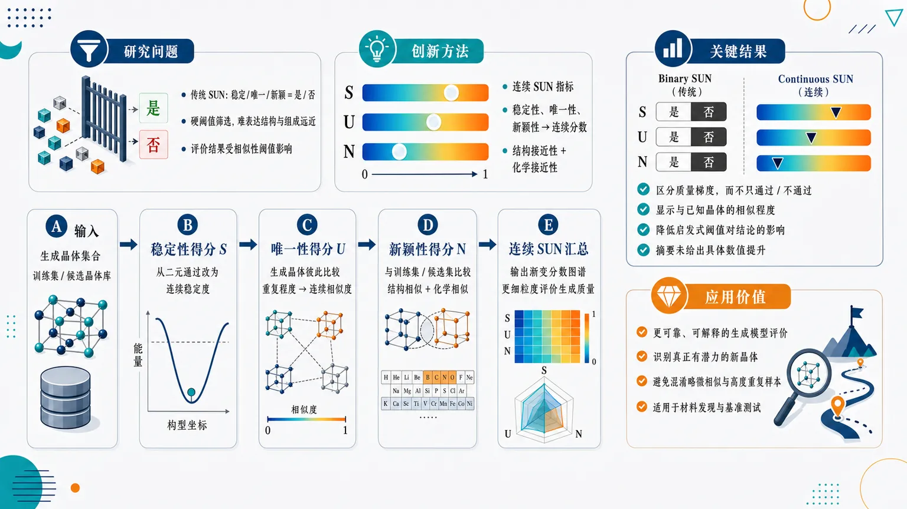
研究问题无机晶体生成模型常用的 SUN 评价将“稳定、唯一、新颖”简化为是/否判断，像用硬闸门筛晶体，无法表达生成晶体与训练集或候选晶体在结构与化学组成上的远近程度，并且结果容易被人为设定的相似性阈值左右。创新方法提出“连续 SUN 指标”：把稳定性、唯一性、新颖性从二元标签改为连续分数；尤其在唯一性和新颖性中，用结构接近性与化学接近性的连续相似度替代固定阈值判定，让每个生成晶体获得更细粒度的“像不像已知晶体、是否真正新”的评分。工作流程输入生成晶体集合及训练集/候选晶体库；计算生成晶体的稳定性连续得分；将生成晶体彼此比较以获得唯一性连续得分；将生成晶体与训练集或候选集比较，衡量结构和化学相似程度以获得新颖性连续得分；最终汇总为连续 SUN 评价，用渐变分数图谱展示生成质量。关键结果连续 SUN 能比传统二元 SUN 更细致地区分生成晶体质量：不仅判断晶体是否通过稳定、唯一、新颖筛选，还能显示其与已有晶体的相似程度梯度；相较依赖硬阈值的传统 U/N 指标，该方法降低了启发式阈值选择对评价结论的影响。摘要未给出具体数值提升、模型对比或数据集结果。应用价值为无机晶体生成模型提供更可靠、更可解释的评价工具，可帮助研究者识别真正有潜力的新晶体，避免把“略微相似”和“高度重复”的样本混为一类，并减少评价因阈值选择产生的偏差，适用于材料发现与晶体生成模型基准测试。核心概览
本文属于无机晶体生成模型评估方向，提出连续版 SUN（稳定性、唯一性、新颖性）指标，用于替代或改进传统二元判定式 S/U/N 评估，尤其缓解唯一性和新颖性对晶体匹配阈值的依赖。
方法要点
- 将传统 SUN 指标中的稳定性、唯一性、新颖性扩展为“连续”度量形式。
- 针对唯一性与新颖性，不再仅依赖二元晶体匹配结果进行“重复/不重复”“新颖/不新颖”判断。
- 通过量化生成晶体样本之间、或生成样本与参考晶体之间的相似程度，提供更细粒度的评估。
- 该方法旨在减少人为设定匹配阈值对评估结果的影响。
- 具体相似度定义、晶体表示方式、稳定性计算方式等摘要未详述。
关键结果
- 论文提出了用于无机晶体生成模型评估的连续 SUN 指标。
- 新指标能够量化样本相似程度，而不是只输出离散的是否唯一、是否新颖判断。
- 该指标被认为可缓解传统 S/U/N 指标中唯一性和新颖性对二元晶体匹配及人为阈值的依赖。
- 是否在具体生成模型或数据集上进行了系统实验验证、以及性能对比结果，摘要未详述。
创新性判断
- 可能的新颖点在于将生成晶体评估中的唯一性和新颖性从硬阈值二元判定改为连续相似度度量，使评估更细粒度、更少受阈值选择影响。
- 相比传统 SUN 指标，该工作可能更关注评估指标本身的稳健性与可解释性，而不是提出新的晶体生成模型。
- “稳定性”如何被连续化、是否同样减少阈值依赖，摘要未详述，因此其创新幅度无法进一步判断。
- 若该连续 SUN 指标能兼容不同晶体生成模型和数据库，则可能具有较好的通用评估价值，但摘要未提供验证范围。
-
11
📊 含图深析
📄 摘要：面向高性能 Cu 合金发现，采用异质图神经网络统一描述成分与工艺设计变量。题名显示模型同时整合合金组成、加工过程和性能关联，用于在多源材料数据中筛选 Cu 合金候选；原始摘要未给出具体性能数值或实验验证细节。
💡 亮点：异质 GNN 将 Cu 合金成分和加工工艺放入同一图表示。该路线针对合金性能优化中成分—过程强耦合、数据异构的核心难题。
📖 展开分析 + 配图
研究问题如何在铜合金设计中同时考虑“元素成分”和“加工工艺”两类关键因素，建立从组成、工艺到性能的统一预测与发现框架，避免传统方法只优化配方、忽略工艺路径对最终性能的影响。创新方法提出异质图神经网络框架，把元素、合金成分、加工工艺步骤和性能指标视为不同类型的图节点，并通过异质边表达它们之间的复杂关联；Aha 点在于将“成分设计”和“工艺设计”放入同一张材料知识图中联合学习，实现铜合金的配方—工艺协同优化。工作流程输入铜合金相关数据，包括合金组成、可能的加工工艺信息和性能记录；构建包含多类型节点与关系的异质图；利用异质图神经网络学习“组成—工艺—性能”映射；输出高性能 Cu 合金候选方案及其对应的潜在成分与工艺组合。关键结果研究表明，异质图神经网络可作为统一建模工具，用于连接铜合金成分设计与加工工艺设计，并支持高性能 Cu 合金发现；具体性能提升幅度、实验验证合金和对比基线结果在所给内容中未详述。应用价值该研究可帮助材料研发人员从单纯试错式配方筛选转向“成分 + 工艺”的联合智能设计，缩短高强度、高导电或其他高性能铜合金的发现周期，并为复杂材料体系的工艺敏感型性能优化提供可扩展建模思路。核心概览
该论文属于材料信息学/机器学习辅助合金设计方向，提出异质图神经网络，将 Cu 合金的成分、加工工艺与性能关系统一建模，用于发现高性能 Cu 合金候选。
方法要点
- 采用异质图神经网络（Heterogeneous Graph Neural Network, HGNN）表示多类型材料设计变量。
- 将合金组成与加工过程作为统一框架中的关联信息共同建模。
- 利用多源材料数据学习“成分—工艺—性能”之间的关系。
- 模型目标是用于筛选或发现高性能 Cu 合金候选。
- 具体图结构、节点/边定义、训练策略与数据规模摘要未详述。
关键结果
- 摘要明确指出，该方法面向高性能 Cu 合金发现。
- 论文声称实现了成分设计与工艺设计的统一建模。
- 摘要表明模型可整合合金组成、加工过程和性能关联。
- 原始摘要未给出具体预测精度、性能提升数值或候选合金实验验证细节。
创新性判断
- 可能的新颖点在于：不同于仅基于合金成分或单一工艺变量的模型，该工作尝试用异质图神经网络同时表达成分、加工过程和性能之间的复杂关系。
- 其创新性也可能体现在多源材料数据融合与“成分—工艺—性能”联合设计框架上。
- 但由于摘要未详述模型架构、对比基线、数据来源和验证结果，无法确定其相对于已有材料图神经网络或合金机器学习工作的实际提升幅度。
-
12
📊 含图深析
📄 摘要：对再生 A383 Al–Si–Cu 高压压铸合金在 490°C 进行 15–180 分钟短时固溶处理，分析显微组织、孔隙和性能演化。孔隙测量显示所有样品处于无鼓泡区间；结合集成机器学习识别最佳处理窗口，针对高 Fe 金属间化合物和复杂孔隙分布带来的热处理难题。
💡 亮点：490°C、15–180 分钟短时固溶可使再生 A383 HPDC 合金保持无鼓泡。集成机器学习用于从孔隙、组织和性能中定位可用工艺窗口。
📖 展开分析 + 配图
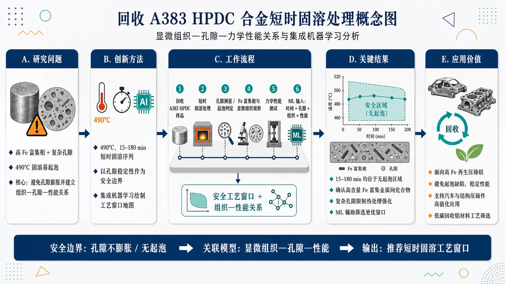
研究问题回收 A383 高压压铸铝合金含有较多 Fe 富集金属间化合物和复杂孔隙，常规固溶热处理容易诱发起泡与性能不稳定；核心问题是在 490°C 短时固溶条件下，如何在避免孔隙膨胀/起泡的同时建立“显微组织—孔隙—力学性能”的可用关系，并确定安全工艺窗口。创新方法将回收 A383 HPDC 合金置于 490°C、15–180 min 的短时固溶处理序列中，重点把孔隙稳定性作为热处理安全边界，同时结合 Fe 富集相、复杂孔隙形貌与性能变化进行关联分析；Aha 点是引入集成机器学习，把实验组织与性能数据转化为可筛选的热处理工艺窗口地图。工作流程输入为回收 A383 Al–Si–Cu 高压压铸样品；依次进行 490°C 不同时长短时固溶处理；测量孔隙状态并判断是否进入起泡风险区；观察 Fe 富集金属间化合物、孔隙结构等显微组织特征；测试材料性能；最后将热处理时间、孔隙与组织特征、性能指标输入集成机器学习模型，输出推荐的安全固溶工艺窗口与微结构—性能关系。关键结果所有短时固溶处理样品的孔隙测量均位于“无起泡区域”，说明 490°C、15–180 min 条件下回收 A383 HPDC 合金具有一定热处理安全性；研究确认该再生合金中存在高含量 Fe 富集金属间化合物和复杂孔隙结构，这些因素是影响性能和限制热处理强化的关键；集成机器学习被用于辅助识别更优工艺窗口，但摘要未给出具体最优时间、性能提升幅度或模型精度。应用价值该研究为高 Fe、复杂孔隙的再生高压压铸铝合金提供了短时固溶处理的安全评估思路，可帮助工业生产在避免起泡缺陷的前提下提升或稳定性能；其机器学习工艺窗口分析方法可用于再生铝合金热处理参数筛选，支持低碳回收铝材料在汽车、结构件和压铸零部件中的高值化应用。核心概览
本文研究再生 A383 Al–Si–Cu 高压压铸合金在 490°C、15–180 min 短时固溶处理下的组织—性能关系，并结合集成机器学习分析最优热处理工艺窗口，属于再生铝合金热处理与数据驱动工艺优化方向。
方法要点
- 以再生 A383 Al–Si–Cu 高压压铸合金为研究对象。
- 采用 490°C、15–180 min 的短时固溶处理工艺。
- 进行孔隙测试，以判断样品是否处于起泡风险区间。
- 关注 Fe 富金属间化合物和复杂孔隙对热处理响应的影响。
- 使用集成机器学习方法分析或预测最优工艺窗口。
- 具体显微组织表征手段、力学性能测试项目和机器学习模型类型摘要未详述。
关键结果
- 所有样品经孔隙测试均处于“无起泡区间”。
- 研究重点从起泡问题转向 Fe 富金属间化合物及复杂孔隙对热处理响应的影响。
- 摘要表明论文建立了短时固溶处理下的组织—性能关系。
- 摘要表明使用集成机器学习分析了最优工艺窗口。
- 具体最优时间、性能提升幅度、组织演化细节和模型精度摘要未详述。
创新性判断
- 可能的新颖点在于将“再生 A383 HPDC 合金”的短时固溶处理与组织—性能关系系统关联，尤其关注再生料中 Fe 富金属间化合物和复杂孔隙的作用；但具体相对已有工作的差异摘要未详述。
- 将集成机器学习用于热处理工艺窗口分析，可能体现数据驱动优化在高压压铸再生铝合金中的应用创新；不过所用算法、输入特征和验证方式摘要未详述，因此创新强度仍需全文确认。
- 证明或确认该处理范围内样品无起泡风险，为 HPDC 合金短时固溶处理提供工艺可行性依据；但其普适性和边界条件摘要未详述。
-
13
📊 含图深析
📄 摘要：采用物理信息机器学习系统映射无铅 Sn–Ge 钙钛矿的结构稳定性与光伏适用带隙之间的权衡。通过定义稳定窗口筛选同时满足结构稳定和优化带隙条件的组成，目标是替代含铅钙钛矿并减少手工实验筛选瓶颈；摘要未列出具体组成范围。
💡 亮点：PIML 被用于 Sn–Ge 无铅钙钛矿的稳定性—带隙联合筛选。核心输出是稳定窗口，直接对应光伏吸收层的环保材料搜索。
📖 展开分析 + 配图
研究问题如何在无铅 Sn–Ge 钙钛矿中同时找到“结构稳定”和“带隙适合光伏吸收”的材料组成，解决传统含铅钙钛矿毒性问题，以及稳定性与光伏性能难以兼顾的筛选难题。创新方法将物理约束嵌入机器学习搜索，建立结构稳定性—带隙的联合映射，并提出“稳定窗口”作为可视化筛选区域：只有落入稳定窗口且带隙适合光伏的 Sn–Ge 组成才被保留，从而把盲目材料搜索变成受物理规则引导的候选筛选。工作流程输入 Sn–Ge 无铅钙钛矿候选组成与相关物理特征；机器学习模型在物理约束下预测结构稳定性和带隙；在二维性质空间中绘制稳定性—带隙权衡图；用“稳定窗口”过滤不稳定或带隙不合适的组成；输出兼具结构稳定性和光伏带隙的候选材料。关键结果研究表明，物理信息机器学习可系统映射 Sn–Ge 钙钛矿的结构稳定性与带隙权衡，并筛选出同时满足稳定性和光伏带隙要求的潜在无铅候选组成；但摘要未给出具体化学式、带隙数值、稳定性指标或定量性能提升。应用价值该方法可减少人工试错和大规模实验筛选成本，为开发无铅、低毒、适合太阳能电池的 Sn–Ge 钙钛矿提供材料发现路线，也为光伏材料的可解释 AI 筛选提供通用框架。核心概览
该论文属于光伏钙钛矿材料筛选与机器学习材料设计方向，利用物理信息机器学习分析无铅 Sn–Ge 钙钛矿的结构稳定性与带隙权衡，以定位兼具稳定性和适宜带隙的候选组成。
方法要点
- 采用物理信息机器学习方法，将物理约束或物理先验融入材料性质预测/筛选流程。
- 研究对象为无铅 Sn–Ge 钙钛矿体系，目标是替代或减少含铅钙钛矿的毒性问题。
- 构建或绘制“结构稳定性—带隙”之间的权衡关系图谱。
- 通过定义“稳定性窗口”，筛选同时满足结构稳定性和适宜光伏带隙的组成区域。
- 具体模型类型、训练数据来源、特征构造和验证方式摘要未详述。
关键结果
- 论文明确指出可利用物理信息机器学习描绘 Sn–Ge 钙钛矿的结构稳定性与带隙权衡。
- 提出了用稳定性窗口来识别兼具结构稳定与合适带隙的组成区域。
- 研究目标是加快无铅或低铅毒性光伏候选材料的成分定位。
- 摘要未详述具体筛选出的组成、带隙范围、稳定性指标数值或性能提升幅度。
创新性判断
- 可能的新颖点在于将物理信息机器学习用于无铅 Sn–Ge 钙钛矿的稳定性与带隙协同筛选，而非只优化单一性质。
- “稳定性窗口”作为同时约束结构稳定性和光伏适宜带隙的筛选框架，可能有助于提高候选成分定位效率。
- 相比传统试错或单纯数据驱动筛选，该方法可能强调物理先验与机器学习结合，但摘要未说明与已有方法的具体对比，因此创新性强弱无法确定。
-
14
📊 含图深析
📄 摘要：报道深度学习驱动的宽带增益超表面，用于智能波束放大与跟踪。题名表明体系结合可调电磁超表面和神经网络控制，以实现宽频段增益调控及目标方向跟踪；原始摘要未给出频段、增益值、器件结构或实验条件。
💡 亮点：深度学习控制宽带增益超表面，实现波束放大与跟踪的联合功能。该方向连接智能电磁材料、可重构超表面和实时波束管理。
📖 展开分析 + 配图
研究问题传统电磁超表面在波束调控中常受限于窄带、低增益和固定方向响应，难以在复杂无线环境中同时实现宽频段波束增强与目标方向的智能跟踪。创新方法提出深度学习驱动的宽带增益超表面设计思路，用神经网络辅助优化超表面结构与电磁响应，使同一超表面具备宽带增益、波束放大和动态跟踪的集成功能；核心亮点是将“宽带高增益设计”和“智能波束跟踪”合并到一个可学习的超表面系统中。工作流程输入目标波束方向、工作频段和增益需求，经深度学习模型预测或优化超表面单元/阵列参数，生成具有宽带增益响应的超表面配置；电磁波入射后被超表面定向增强，并根据目标或波束方向变化进行智能调控，输出放大后的跟踪波束。关键结果论文实现或提出了一种宽带增益超表面，可用于智能波束放大与波束跟踪；结果重点体现为更强的目标方向辐射/接收能力、更宽的工作带宽，以及面向动态场景的方向自适应能力。具体增益数值、频段范围、跟踪精度和实验参数未在提供内容中给出。应用价值该研究可用于智能无线通信、雷达感知、卫星链路、物联网覆盖增强和移动目标通信，通过可学习超表面提升信号覆盖、链路稳定性和目标跟踪能力，为未来智能电磁环境和6G可重构无线系统提供关键硬件基础。核心概览
该论文属于智能电磁超表面/可重构超表面与深度学习控制方向，报道一种深度学习驱动的宽带增益超表面，用于实现波束放大和目标方向跟踪。
方法要点
- 将可调电磁超表面与神经网络控制相结合，用于动态调控波束增益。
- 面向宽频段工作场景设计增益超表面，但具体频段摘要未详述。
- 利用深度学习实现智能化波束放大与跟踪控制，具体网络结构、训练数据和优化策略摘要未详述。
- 目标功能包括波束增强和方向跟踪，但器件结构、控制单元形式及实验平台摘要未详述。
关键结果
- 摘要明确称该系统可用于“智能波束放大与跟踪”。
- 摘要表明其具有“宽带增益”能力。
- 摘要未给出具体增益提升数值、带宽范围、跟踪精度、响应速度或实验验证条件。
- 摘要未说明结果来自仿真、实验，或二者结合。
创新性判断
- 可能的新颖点在于将深度学习控制与宽带增益型可调超表面结合，用于自适应波束放大和目标跟踪。
- 相比传统固定超表面或规则驱动的可重构超表面，该工作可能强调神经网络带来的智能决策与实时调控能力。
- “宽带增益”与“智能跟踪”两类功能的集成可能是其主要亮点。
- 但由于摘要未详述器件结构、算法框架、性能指标和对比实验，创新性强弱及相对已有工作的实质提升仍无法确定。
-
15
📊 含图深析
📄 摘要：用从头算 Boltzmann 输运方程计算 Cr₂O₃ 中声子限制的电子和空穴迁移率。结果显示宽温区内电子迁移率系统性高于空穴迁移率，判定 Cr₂O₃ 本征输运更接近 n 型；散射分析表明声子对电子和空穴影响相近，差异源自能带输运特征。
💡 亮点：Cr₂O₃ 长期被视为 p 型透明导电氧化物，但从头算迁移率显示电子更易输运。该结论直接修正 Cr₂O₃ 掺杂和器件设计中的载流子类型假设。
📖 展开分析 + 配图
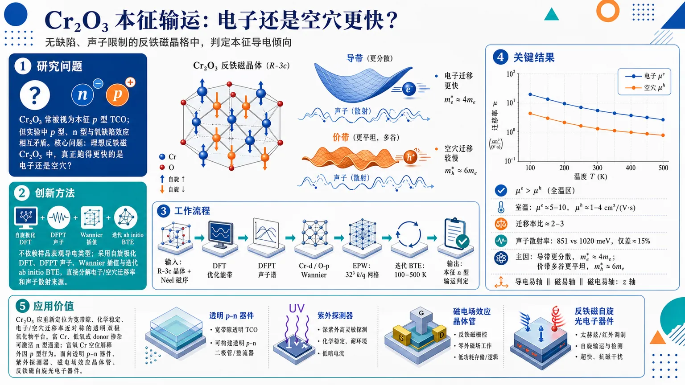
研究问题Cr₂O₃ 长期被画成“本征 p 型透明导电氧化物”，但实验中 p 型、n 型和氧缺陷效应相互矛盾；论文要回答的核心问题是：在无缺陷、声子限制的理想反铁磁 Cr₂O₃ 晶格中，真正跑得更快的是电子还是空穴，它的本征输运到底偏 p 型还是 n 型。创新方法Aha 点是不用实验样品的表观导电类型判断本征属性，而是用自旋极化 DFT、DFPT 声子、Wannier 插值和迭代 ab initio Boltzmann 输运方程，直接分解电子/空穴迁移率与声子散射来源；结果发现声子对二者影响相近，迁移率差异主要来自导带更色散、电子更轻，以及价带更平坦、多谷、空穴更重，从而推翻“本征 p 型”图像。工作流程输入反铁磁 R-3c Cr₂O₃ 晶体结构与 Néel 磁序；先用 DFT 优化晶格和能带，再用 DFPT 计算声子谱，用 Cr-d 与 O-p 轨道构造 Wannier 函数；随后在 32³ 精细 k/q 网格上通过 EPW 和迭代 BTE 计算 100–500 K 的电子、空穴声子限制迁移率；最后对比迁移率曲线、频率分辨散射率、能带谷结构和有效质量，输出本征 n 型输运判定与缺陷化学解释。关键结果电子迁移率在 100–500 K 全温区始终高于空穴迁移率；室温附近 μᵉ≈5–10 cm²/(V·s)，μʰ≈1–4 cm²/(V·s)，电子/空穴迁移率比仅 2–3。电子与空穴总声子散射率分别约 851 meV 和 1020 meV，只差约 15%，说明不是声子选择性导致差异；真正主因是导带更分散、电子有效质量约 4mₑ，而价带多谷且更平坦、空穴有效质量约 6mₑ。导电易轴沿 z 轴，并与磁易轴、磁电易轴共线。应用价值Cr₂O₃ 不应只被设计成 p 型 TCO，而应被重新定位为宽带隙、化学稳定、电子/空穴迁移率近对称的透明双极氧化物平台；富 Cr、低氧或 donor 掺杂可激活本征 n 型通道，富氧铬空位则解释外因 p 型行为。其透明性、双极输运和导电—磁电易轴共线特征，使其适合透明 p–n 器件、紫外探测器、磁电场效应晶体管和反铁磁自旋光电子器件。第一部分：核心概览
该研究以第一性原理 Boltzmann 输运方程计算反铁磁 Cr₂O₃ 的声子限制电子/空穴迁移率，推翻其常被归类为本征 p 型透明导电氧化物的传统认识。核心结论是：在 100–500 K 范围内，电子迁移率始终高于空穴迁移率，室温附近约为 μᵉ≈5–10 cm²/(V·s)、μʰ≈1–4 cm²/(V·s)，即本征晶格更接近 n 型输运。迁移率不对称主要源于价带较大有效质量与多谷结构，而非电子-声子散射差异。Cr₂O₃ 因电子/空穴迁移率比仅 2–3、宽带隙、化学稳定性及导电易轴与磁易轴共线，被重新定位为透明双极电子学与反铁磁磁电光电子器件的候选平台。
---
第二部分：结构化快速回顾
《Challenging the p-type Paradigm: Intrinsic n-type Mobility in Antiferromagnetic Cr₂O₃》（None，）
背景
Cr₂O₃ 长期被视为潜在 p 型透明导电氧化物，已有多项实验实现 p 型样品；但 n 型掺杂、氧缺陷效应与制备条件相关的相互矛盾结果持续存在。本征输运性质仍未定论。
方法
采用自旋极化 DFT、DFPT 声子计算、Wannier 插值与迭代 ab initio Boltzmann transport equation，计算反铁磁块体 Cr₂O₃ 在 100–500 K 的声子限制电子与空穴迁移率。计算使用 Quantum ESPRESSO、EPW、wannier90，并在 32³ 细 k/q 网格上收敛至 1%。
结果
电子迁移率在全温区高于空穴迁移率：μᵉ≈5–10 cm²/(V·s)，μʰ≈1–4 cm²/(V·s)，电子/空穴迁移率比 μᵉ/μʰ=2–3。实验空穴漂移迁移率 1.5–11 cm²/(V·s) 与计算值量级一致。
讨论
声子散射对电子与空穴影响相近，电子/空穴总散射率分别为 851 meV 与 1020 meV，差异约 15%。迁移率差异主要来自电子结构：导带更色散、电子有效质量约 4mₑ，价带更平坦且多谷，空穴有效质量约 6mₑ。
局限
计算主要针对本征、声子限制、理想晶体；实际样品中的缺陷、杂质、界面、电极接触、电荷补偿、薄膜应变与晶粒边界会显著改变表观迁移率与导电类型。反铁磁相计算外推至高于 Tₙ=307 K 的顺磁区依赖于实验电导无显著趋势变化这一依据。
结论
Cr₂O₃ 的常见 p 型行为更合理地归因于富氧条件下铬空位受主缺陷，而非本征晶格输运。富 Cr、低氧环境或 donor 缺陷可激活其本征 n 型通道。Cr₂O₃ 兼具宽带隙、迁移率近对称、化学稳定性、磁电易轴与导电易轴共线，有望用于透明双极氧化物电子学、磁电场效应器件与反铁磁自旋光电子学。
---
第三部分：逐章节冷凝解析
Abstract
Intrinsic mobility reverses the conventional p-type assignment
Cr₂O₃ 通常被归入 p 型透明导电氧化物，但本征输运属性长期存在争议；通过 ab initio Boltzmann transport equation 计算声子限制迁移率后，电子迁移率在宽温区系统性高于空穴迁移率，构成 本征 n 型 证据。原文明确给出：*"Chromium oxide (Cr₂O₃) is widely considered a p-type transparent conducting oxide despite ongoing debate regarding its intrinsic transport character."* 以及 *"We find that electron mobility systematically exceeds hole mobility over a wide temperature range, demonstrating that Cr₂O₃ is intrinsically n-type."*
Mobility asymmetry originates from electronic structure rather than phonon selectivity
电子与空穴受到声子散射的影响相近，迁移率差异主要来自价带较大有效质量与多谷价带边缘，而非某类声子对空穴特别强散射。关键判断为：*"scattering with phonons affects electrons and holes similarly"*，迁移率不对称源于 *"the electronic structure, namely the larger effective mass and multi-valley character of the valence band."*
Bipolar transparent electronics becomes a plausible role for Cr₂O₃
本征 n 型与适中的空穴迁移率并存，使 Cr₂O₃ 不再只是 p 型 TCO 候选，而是可支持双极输运的透明氧化物。摘要给出应用定位：*"The intrinsic n-type character, combined with moderate hole mobility, enables bipolar transport and revises the role of Cr₂O₃ in transparent electronics."*
Defect thermodynamics and transport form a unified paradigm
常见 p 型行为与缺陷形成研究互补地解释为外因性，而非本征载流子通道。原文表述为：*"our results on mobility complement previous studies on defect formation indicating that the commonly observed p-type behavior is extrinsic."* 由此形成所谓 *"a complete chemical-transport paradigm for Cr₂O₃"*。
---
I Introduction
Transparent conducting oxides require simultaneous conductivity and optical transparency
透明导电氧化物 TCO 的应用价值来自可见光透明与良好电导并存，典型应用包括手机、平板、触摸屏等透明电极。原文概括为：*"These types of materials offer good electrical conductivity and are transparent in the visible range, making them interesting candidates for use on screens in mobile phones, tablets, or touchscreens."*
n-type TCOs dominate practical applications
实际 TCO 体系多以 n 型半导体为主，因为其高电导、透明性与掺杂稳定性更易实现。原文指出：*"The most commonly used materials are n-type semiconductors offering high conductivity and transparency, and a more stable doping."* 进而得出：*"in most practical applications of TCOs, n-type semiconductors are preferred."*
p-type TCOs remain essential for transparent junction devices
虽然 n 型 TCO 更成熟，但 p 型 TCO 对透明 p–n 结不可或缺，应用覆盖透明 LED、透明光伏、光探测器、逻辑器件和 CMOS。原文列出：*"having a p-type TCO is crucial for making p−n junctions for transparent light emitting diodes, transparent photovoltaics or to obtain transparent photo-detectors, logic devices and complementary metal oxide semiconductors (CMOS)."*
Cr₂O₃ has been promoted as a p-type TCO candidate
Cr₂O₃ 过去被多项研究视为适合 p 型掺杂甚至本征 p 型半导体的氧化物。原文给出：*"Compounds such as Cr₂O₃ have been proposed to be good candidates for p-type doping, even suggesting Cr₂O₃ to be an intrinsic p-type semiconductor."*
Experimental p-type Cr₂O₃ exists but does not settle intrinsic character
多个实验小组已经合成 p 型 Cr₂O₃，但这只能说明某些制备条件下可获得 p 型导电，不能直接证明本征晶格为 p 型。原文为：*"several experimental groups have been successful in this pursuit, synthesizing p-type Cr₂O₃ samples."*
Conflicting doping and oxygen-deficiency reports keep the intrinsic question open
Cr₂O₃ 的 p 型掺杂被报告为困难，同时 n 型掺杂也可实现；氧缺陷和制备过程对电性影响存在冲突结果。关键证据为：*"p-type doping of Cr₂O₃ is challenging"*，同时 *"n-type doping is also possible"*，并存在 *"conflicting results with respect to oxygen deficiency and fabrication process."* 因而结论是：*"the question of the intrinsic nature of Cr₂O₃ remains open."*
Theoretical transport studies of Cr₂O₃ remain scarce
尽管实验文献较多，系统讨论 Cr₂O₃ 导电性质的理论工作很少。原文明确指出：*"Surprisingly, there are few theoretical studies that address the conducting properties of Cr₂O₃."*
First-principles BTE transport is introduced as an unexplored methodology for this system
研究采用自旋极化 DFT 与 Boltzmann transport equation 计算反铁磁块体 Cr₂O₃ 的电子/空穴迁移率，并强调该方法此前未用于该体系。原文为：*"we use spin polarized Density Functional Theory (DFT) calculations and the Boltzmann transport equation (BTE), a methodology previously unexplored for this system, to compute the electron and hole mobilities of bulk antiferromagnetic Cr₂O₃."*
Main quantitative findings define intrinsic n-type behavior and competitive hole mobility
三项核心结果被明确列出：电子迁移率在 100–500 K 始终高于空穴迁移率；室温附近空穴迁移率为 1–4 cm²/(V·s)；导电易轴与磁易轴一致。原文为：*"the electron mobility of Cr₂O₃ is consistently higher than the hole mobility in the 100-500 K temperature range"*，*"the hole mobility (μh) of Cr₂O₃ is between 1−4 cm²/(V·s) at room temperature"*，以及 *"the conducting easy axis aligns with the magnetic one."*
Cr₂O₃ is distinguished by near-unity electron–hole mobility ratio
相较常见高性能 n 型 TCO，Cr₂O₃ 的特色不是极高电子迁移率，而是电子/空穴迁移率接近平衡。表 1 中 Cr₂O₃ 为 μᵉ=5–10 cm²/(V·s)、μʰ=1–4 cm²/(V·s)、μᶠ/μˢ=2–3、E_g=3.1 eV。原文强调：*"Cr₂O₃ exhibits a near unity electron-hole mobility ratio μe/μh=2−3 absent in all high-performance n-type TCOs."*
Balanced carrier transport enables all-oxide bipolar architectures
近对称迁移率被定位为双极透明器件中的独特优势。原文称：*"This intrinsic transport parity provides a unique opportunity for balanced charge extraction in all-oxide bipolar architectures."*
Magnetic and conducting easy-axis alignment links TCOs and antiferromagnetic spintronics
Cr₂O₃ 的导电易轴与磁易轴一致，使其可能连接透明电路与反铁磁自旋电子学。原文表述为：*"the alignment of the magnetic and conducting easy axes, provides a unique platform for magneto-optoelectronic tuning, bridging the gap between transparent circuitry and antiferromagnetic spintronics."*
---
II Methods
DFT implementation and numerical settings are explicitly specified
计算使用 Quantum ESPRESSO v7.6、PBE 泛函、scalar-relativistic norm-conserving pseudopotentials，平面波截断能为 90 Ry，总能收敛阈值 10⁻¹² Ry，电子 4³ k 点网格，声子 6³ q 点网格。原文为：*"We use DFT with the Quantum ESPRESSO v7.6 software"*，*"The plane-wave cutoff is set to 90 Ry, a total energy convergence threshold of 10−12 Ry, a 43 k-point grid, and a 63 q-point grid for phonons."*
Relaxed antiferromagnetic R-3c structure matches experiment
Cr₂O₃ 采用 Røverline3c 基态几何与 Néel 反铁磁序；优化后晶格常数 a=4.948 Å、c=13.781 Å，接近实验值 aₑₓₚ₌₄.953 Å、cₑₓₚ₌₁₃.578 Å。原文为：*"We relax the crystal structure in its Røverline3c ground state geometry with the Néel antiferromagnetic order"*，并得到 *"a=4.948 Å and c=13.781 Å lattice parameters, close to the experimental values of aexp=4.953 Å and cexp=13.578 Å."*
Phonons and Wannier interpolation are used for electron–phonon transport
声子通过 DFPT 计算；最大局域化 Wannier 函数使用 wannier90 v3.1，初始投影为 Cr d 与 O p 轨道。原文写明：*"The phonons are computed with density functional perturbation theory (DFPT)."* 以及 *"The maximally localized Wannier functions are computed using the wannier90 package version 3.1 with Cr d and O p initial projections."*
EPW mobility calculations are converged to within 1%
声子限制输运由 EPW 计算，并使用 6³ coarse 与 32³ fine k/q grids 达到 1% 内收敛。关键句为：*"Mobilities are converged within 1% using 63 coarse and 323 fine k/q grids."*
Reproducibility is supported by open data
所有复现实验结果的数据被上传至 Materials Cloud Archive。原文为：*"We provide all data to reproduce the results on the Materials Cloud Archive."*
Iterative ab initio BTE covers 100–500 K
Cr₂O₃ 的本征电子与空穴迁移率采用迭代 ab initio BTE 在 100–500 K 范围内计算。原文为：*"The intrinsic electron and hole mobility of Cr₂O₃ are calculated by means of the iterative ab initio BTE in the range of 100-500 K."*
AFM calculations are argued to remain trend-relevant above the Néel temperature
Cr₂O₃ 的 Néel 温度 T_Néel=307 K；尽管计算基于 AFM 相，实验电导未显示跨越该温度后趋势显著改变，因此迁移率趋势被认为可延伸至顺磁区。原文为：*"Although Cr₂O₃ presents a Néel temperature of TNéel=307 K, there are no significant changes in the experimental conductivity that may signal a different trend."* 以及 *"the given trends in mobility on the AFM phase would still hold in the paramagnetic phase."*
Spin-resolved mobility tensor is formally defined
每个自旋通道 σ 对迁移率张量 μᵅᵝσ 有贡献，公式为
[
μαβσ=frac-eVₘ̊ ᵤcn_c^σsumₙᵢₙₜfracd³kØmegaₘ̊ BZvₙₖα^σ partialE_βfₙₖ^σ .
]
原文解释变量包括：*"Vuc is the volume of the unit cell"*，*"ΩBZ is the volume of the Brillouin Zone"*，*"vσnkα is the α component of the spin-resolved electronic band velocity"*，以及 *"ncσ is the carrier density of a specific spin channel."*
Measurable conductivity is linked to spin-channel mobilities
总电导张量满足
[
σαβ=n_c^p̆arrow μαβ^p̆arrow+n_c^downarrow μαβ^downarrow ,
]
可测有效迁移率定义为
[
μαβm̊ effequiv fracσαβn_c.
]
原文明确：*"the directly measurable quantities are the total conductivity σαβ and its related mobility defined as μeffαβ≡σαβ/nc."*
Spin degeneracy simplifies AFM Cr₂O₃ mobility
在反铁磁 Cr₂O₃ 中，能带自旋简并，因此两个自旋通道载流子密度相同，n_c↑=n_c↓，有效迁移率为两者平均；由于磁子晶格位点对称性，进一步有 μₑff=μ↑=μ↓。原文为：*"In an antiferromagnet such as Cr₂O₃ where the bands are spin degenerate, the carrier density on each spin channel is the same nc↑=nc↓."* 以及 *"due to the magnetic sub-lattice site symmetry of Cr₂O₃, one has that μeffαβ=μ↑αβ=μ↓αβ."*
---
III Results and Discussion
III.1 Intrinsic mobility
Electron mobility exceeds hole mobility at all calculated temperatures
图 1 给出 Cr₂O₃ 晶体结构及温度依赖迁移率；核心结果为电子迁移率全温区高于空穴迁移率，支持 本征 n 型半导体。原文写道：*"the electron mobility is greater than the hole mobility at all temperatures, indicating that Cr₂O₃ would be an intrinsic n-type semiconductor."*
Calculated hole mobilities agree reasonably with room-temperature experiments
室温计算空穴迁移率为 1–4 cm²/(V·s)；实验空穴漂移迁移率范围为 1.5–11 cm²/(V·s)。原文比较为：*"Comparing the calculated hole mobility (1-4 cm²/(V·s)) with the experimental values of the hole drift mobility ranging from 1.5 cm²/(V·s) to 11 cm²/(V·s), we find that the calculations agree rather well with experiments."*
Experimental mobility spread is partly device-architecture induced
OFET 与 TFT 中栅极和电极接触电阻可能使名义迁移率 μₙₒₘ 高于本征迁移率 μᵢₙₜ。原文解释为：*"The observed experimental spread is largely attributed to the device architecture employed, organic field effect transistors (OFETs) and thin film transistors (TFT), where the gate and the electrode contact resistance can induce a much higher nominal mobility μnom than the intrinsic one μint."*
Saturation mobility is treated as a more conservative comparison
参考文献 [76] 的饱和迁移率 μₛₐₜ 被作为红星标出，按接触电阻校正逻辑应低于线性区得到的迁移率。原文为：*"we also provide the saturation mobility μsat of Ref. [76] (red star in Fig. 1(b)), which following Ref. [8] should be smaller than the one obtained in the linear region."*
Temperature-dependent Hall mobility supports the BTE approach
除室温数值外，空穴漂移迁移率的温度依赖还与从文献 [36] 提取的有效 Hall 迁移率比较，支持 BTE 方法稳健性。原文为：*"This agreement is further supported by comparing the temperature dependence of the hole drift mobility with the experimental effective Hall mobility that can be extracted from Ref. [36]... confirming the robustness of the BTE approach."*
Common p-type behavior conflicts with intrinsic transport but aligns with defect physics
许多实验默认 Cr₂O₃ 为 p 型半导体，但宽带隙使本征载流子浓度很低，因而电性高度敏感于缺陷、杂质和氧化条件。原文指出：*"This intrinsic n-type behavior stands in contrast with the common trend of p-type doping Cr₂O₃ of many studies"*，并解释：*"Cr₂O₃ is a wide band gap semiconductor where experimental reports show an optical band gap of 3.1−3.3 eV."* 因此 *"the intrinsic number of carriers will be relatively small, making it sensitive to defects, impurities, and oxidation."*
Oxygen-rich growth favors chromium vacancies and extrinsic p-type behavior
富氧生长条件下，铬空位 V_Cr 形成能极低，作为受主导致 p 型特征。原文为：*"under oxygen-rich growth conditions, chromium vacancies (VCr) exhibit exceptionally low formation energies, acting as acceptors and yielding the observed p-type character."*
Cr-rich environments favor oxygen vacancies and n-type donor behavior
富 Cr 条件下，氧空位 V_O 成为主导缺陷并作为施主，产生 n 型掺杂。原文为：*"Cr-rich environments oxygen vacancies (VO) are dominant acting as donors (n-type doping)."*
Chemical synthesis can unlock intrinsic n-type transport
理想晶格中电子迁移率更高，μᵉ/μʰ=2–3；富 Cr、低氧环境有利于施主缺陷，从而激活 n 型通道。原文为：*"While the pristine lattice fundamentally favors electron mobility (μe/μh=2−3) due to its electronic structure, optimizing chemical synthesis towards oxygen reduced and Cr-rich environments favor donor defects to unlock this intrinsic n-type channel."*
n-type Cr₂O₃ films via metallic Cr interfaces or Ti doping are explained by the unified picture
金属 Cr 界面或还原氧环境下 Ti 掺杂得到 n 型 Cr₂O₃ 的实验结果，可由施主缺陷与本征电子迁移优势共同解释。原文为：*"This unified thermodynamic and carrier transport picture directly explains the experimental success in producing n-type Cr₂O₃ films via metallic Cr interfaces or Ti-doping under reduced oxygen environments."*
Observed p-type character is classified as extrinsic
常见 p 型 Cr₂O₃ 行为被明确归因于外在缺陷热力学，而不是本征迁移率优势。原文结论为：*"Thus, the systematically found p-type character of Cr₂O₃ is extrinsic."*
DFT+U checks preserve the mobility trends
加入 DFT+U 后趋势仍得到确认，增强了结论对泛函选择的鲁棒性。原文为：*"We verify that these trends are confirmed when using DFT+U."*
Conducting easy axis is out-of-plane and aligned with magnetic easy axis
Cr₂O₃ 表现出沿 z 轴的导电易轴各向异性，满足 μₓₓ₌μ_yy≠μ_zz，与实验电导报告一致。原文为：*"Cr₂O₃ exhibits a conducting easy axis anisotropy along the z-axis yielding μxx=μyy≠μzz in line with experimental reports of the conductivity."*
Mobility anisotropy is small but physically meaningful
面内迁移率 μ∥=μₓₓ₌μ_yy 与面外迁移率 μ⊥=μ_zz 的比较给出 μ⊥≈1.06 μ∥。原文为：*"Comparing the in plane μ||=μxx=μyy and out of plane μ⊥=μzz mobilities of both electrons and holes, we find that μ⊥∼1.06 μ||."*
Conducting, magnetic, and magnetoelectric easy axes coincide
导电易轴与磁易轴、磁电易轴对齐，为磁电调控输运提供结构基础。原文指出：*"This anisotropy is particularly interesting because it would be aligned with its magnetic and magneto-electric (ME) easy axis."*
DFT+U does not improve easy-axis anisotropy description
DFT 已可定性捕捉易轴各向异性，DFT+U 并未带来更好结果。原文为：*"although the easy axis anisotropy is qualitatively well captured by DFT calculations, using a DFT+U approach does not lead to better results."*
---
III.2 Advantages of Cr₂O₃ as a TCO and beyond
Electron mobility is mediocre compared with leading n-type TCOs
Cr₂O₃ 的电子迁移率约 μᵉ≈5–10 cm²/(V·s)，低于 ITO、ZnO 等常见高性能 n 型 TCO。原文评价为：*"Cr₂O₃ presents an electron mobility ranging between μe∼5−10 cm²/(Vs) which is rather mediocre compared with other commonly used n-type TCOs such as ITO... or ZnO."*
Hole mobility is competitive among p-type TCOs
Cr₂O₃ 的空穴迁移率约 μʰ≈1–4 cm²/(V·s)，与商业化或典型 p 型 TCO 如 SnO、CuAlO₂ 同量级。原文为：*"the hole mobility μh∼1−4 cm²/(Vs) is suitable for TCO applications since commercially available p-type TCOs such as SnO, or CuAlO₂ show similar mobilities."*
Near-parity electron–hole mobility is the distinctive advantage
Cr₂O₃ 的关键优势是 μᵉ/μʰ=2–3，而不是最高绝对迁移率。原文强调：*"Cr₂O₃ exhibits a near parity electron and hole mobility ratio ratio μe/μh=2−3, a feature that is strikingly absent in conventional high-performance TCOs."*
Conventional high-performance TCOs suffer from extreme carrier asymmetry
In₂O₃、ZnO 等材料虽然电子迁移率更高，但电子/空穴迁移率比经常超过 100:1，限制互补逻辑器件。原文为：*"While materials like In₂O₃ or ZnO offer higher absolute electron mobilities, their extreme carrier asymmetry (often exceeding 100:1) represents a fundamental bottleneck for complementary logic."*
Cr₂O₃ has a wider optical window than SnO
SnO 是少见较平衡 p 型氧化物，μʰ/μᵉ=5–15，但带隙 2.7–3.0 eV 较窄，易在蓝端吸收或呈黄色；Cr₂O₃ 带隙 3.1–3.3 eV，可见光透明性更好。原文为：*"Compared to SnO... Cr₂O₃ offers wider optical window with a bandgap of 3.1-3.3 eV which ensures high transparency in the visible range, whereas SnO (2.7-3.0 eV) often suffers from a yellowish tint or absorption at the blue end of the spectrum."*
Cr₂O₃ is positioned for transparent displays and UV photodetectors
宽带隙与较少蓝端吸收使 Cr₂O₃ 更适合高保真透明显示与紫外探测。原文为：*"This makes Cr₂O₃ the more viable candidate for high-fidelity transparent displays and UV-photo-detectors."*
Thermodynamic stability provides processing advantages
与 SnO 等易相变或高温氧化为 SnO₂ 的材料不同，Cr₂O₃ 是热力学稳定氧化物，可承受标准高温氧化物工艺。原文为：*"SnO are prone to phase structure instability and unintended oxidation into SnO₂ during high temperature processing, Cr₂O₃ is a thermodynamically stable oxide."*
Balanced transport can survive high-temperature oxide processing
结构鲁棒性与化学稳定性意味着平衡输运特性更可能在加工后保持。原文为：*"This structural robustness and stability ensures that its balanced transport properties can be preserved during standard high-temperature oxide processing."*
Sub-10 mobility ratios challenge the fast-electron/slow-hole TCO paradigm
Cr₂O₃ 的绝对迁移率不高，但低于 10 的电子/空穴迁移率比可改变 TCO 行业通常“快电子/慢空穴”的材料设计逻辑。原文为：*"using materials like Cr₂O₃ with sub-10 mobility ratios would challenge the current fast-electron/slow-hole paradigm of the TCO industry."*
Conducting and magnetic easy-axis alignment enables magnetically coupled charge transport
导电易轴与磁易轴对齐，暗示载流子输运可能对反铁磁状态敏感。原文为：*"the conducting and magnetic easy axis alignment in Cr₂O₃ provides a direct link between charge transport and magnetic order, suggesting that the carrier transport might be sensitive to the AFM state."*
Cr₂O₃ can support transparent bipolar ME-driven AFM switching devices
结合反铁磁性、宽带隙、合理 p 型迁移率与平衡双极迁移率，Cr₂O₃ 被定位为透明、双极、磁电驱动反铁磁开关器件平台。原文为：*"Combining this alignment of AFM Cr₂O₃ with its large optical bandgap, reasonable p-type mobility and uniquely balanced electron and hole mobilities, places Cr₂O₃ as a multifunctional material allowing to build transparent, bipolar ME-driven AFM switching devices."*
---
III.3 Origin of the n-type nature of Cr₂O₃
Phonon-resolved scattering is used to diagnose mobility asymmetry
为解释电子/空穴迁移率差异，计算了声子色散与频率分辨散射率 ∂τ⁻¹/∂ω。原文为：*"In order to rationalize the difference between electron and hole mobilities, we compute the phonon dispersion and the frequency resolved scattering rate ∂τ−1/∂ω for both electrons and holes."*
Optical phonons dominate both electron and hole scattering
电子和空穴导电中的主要散射均来自光学声子，且两者 90% 总散射率都由光学声子贡献。原文为：*"most of the scattering for both electron and hole conduction come from optical phonons."* 以及 *"for both electrons and holes, 90% of the total scattering rate is given by optical phonons."*
Hole scattering is strongly affected by high-energy optical phonons
空穴总散射的 50% 来自 75–82 meV 最高能声子；另有 25% 来自 67–70 meV 光学声子，约 10% 来自 47–51 meV 光学声子。原文为：*"Focusing on holes, we find that 50% of the total scattering comes from the highest energy phonons at energies 75−82 meV."* 以及 *"The remaining 40% is mainly given by slightly lower energy optical phonons of 67−70 meV (25% of the total scattering rate) and 47−51 meV (10% of the total scattering rate)."*
Electron scattering involves similar optical phonon energy scales
电子散射也主要来自相近能量的光学声子，但 47–51 meV 区间贡献略低于空穴。原文为：*"in the case of the electrons where mainly optical phonons at similar energy scales produce the higher scattering rates with slightly less pronounced contributions from the phonons at energies 47−51 meV than in the hole case."*
Total scattering rates differ by only about 15%
图 2 给出电子与空穴在带边的总散射率：导带 τ_CB⁻¹=851 meV，价带 τ_VB⁻¹=1020 meV；两者差异约 15%，不足以解释 2–3 倍迁移率差异。图注写明：*"The total scattering rates are τCB−1=851 meV and τVB−1=1020 meV for electrons and holes, respectively."* 正文进一步判断：*"phonon scattering affects in a similar way both electrons and holes with only a 15% difference."*
Phonon modes cannot explain the electron–hole mobility disparity
由于电子与空穴的声子散射谱定性、定量相似，迁移率差异不能归因于特定声子模式。原文结论为：*"the specific phonon modes that produce scattering cannot explain the disparity between the electron and hole mobility."*
Band-edge valley structure differs between conduction and valence bands
导带有 3 个主要谷，位于 Γ–T、Γ–S₀、Γ–F，其中 Γ–F 承载 CBM；价带有 4 个谷，位于 Γ–T、Γ–L、Γ–S₀、Γ–F，其中后两者近简并并承载 VBM。原文为：*"the conduction band has 3 main valleys along the Γ−T, Γ−S0 and Γ−F, with the latter hosting the conduction band minimum (CBM)"*；价带为 *"the valence band has 4 valleys along the Γ−T, Γ−L, Γ−S0 and Γ−F paths, with the latter 2 being quasi-degenerate and hosting the VBM."*
Valence-band multi-valley character enhances hole intra-valley scattering
价带边缘多谷结构意味着空穴的谷内散射比电子更显著。原文为：*"This multi-valley structure of the valence band edge implies that for the holes the intra-valley scattering would be more pronounced than for the electrons."*
Conduction bands are more dispersive and yield higher velocities
导带流形比价带更色散，意味着电子具有更高能带速度、更低有效质量。原文为：*"the bands in the conduction band manifold are more dispersive than in the valence band."* 以及 *"in the conduction band we have higher band velocities and lower effective masses than in the valence."*
Effective masses quantitatively favor electrons
CBM 电子有效质量约 m*≈4mₑ，VBM 空穴有效质量约 m*≈6mₑ；这直接支持电子迁移率较高。原文为：*"For the CBM m*∼4me while for the VBM m*∼6me."*
Electronic structure is the primary origin of intrinsic n-type mobility
迁移率不对称的主因是电子结构，声子只起次要作用。原文明确总结：*"Thus, the main origin of the disparity is electronic with a minor role for the phonons."*
DFT+U confirms that curvature and valley energetics control mobility
DFT+U 中主要改变的是能带曲率与谷相对能量，进一步说明电子结构细节控制迁移率。原文为：*"This can be further verified from the DFT+U calculations since the main difference are changes in band curvature and relative valley energy."*
---
IV Conclusions
Pristine Cr₂O₃ intrinsically favors n-type phonon-limited mobility
ab initio BTE 计算显示，本征 Cr₂O₃ 的声子限制迁移率偏向 n 型而非 p 型，且电子/空穴迁移率比平衡，μᵉ/μʰ=2–3。原文为：*"our ab initio BTE calculations reveal that the phonon limited mobility of pristine Cr₂O₃ inherently favors n-type over p-type behavior, featuring a well balanced carrier mobility ratio (μe/μh=2−3)."*
Long-standing p-type controversy is resolved through defect thermodynamics plus intrinsic transport
结合本征迁移率、宽带隙与缺陷热力学，可将 Cr₂O₃ 的 p 型实验现象解释为富氧缺陷热力学导致的外因结果。原文为：*"we solve a long-standing debate in the literature: the p-type character of Cr₂O₃ is an extrinsic feature dictated by oxygen rich defect thermodynamics, whereas the pristine crystal is an intrinsic n-type semiconductor."*
p-type doping remains useful but only partially justified
由于 Cr₂O₃ 的空穴迁移率仍有 μʰ≈1–4 cm²/(V·s)，在 p 型 TCO 场景中仍具吸引力；但将其视为本征 p 型材料并不充分。原文为：*"the current trend of p-type doping Cr₂O₃ is only partially justified, since the hole mobility is around μh∼1−4 cm²/(Vs)."*
Cr-rich and oxygen-reduced processing should become a design focus
宽带隙、化学稳定性、近对称双极迁移率使 Cr₂O₃ 适合透明双极电子学与功能氧化物异质结构；合成重点应转向低氧、富 Cr 工艺。原文为：*"the combination of a wide band gap, chemical and thermodynamic phase stability and the near-parity electron-hole mobilities positions Cr₂O₃ as a unique platform for transparent bipolar electronics and functional oxide heterostuctures, shifting the design focus on oxygen reduction of Cr-rich processing regimes."*
Electronic degrees of freedom dominate mobility control
声子散射不是迁移率差异主因，电子结构变化将显著影响迁移率。原文为：*"we uncover the importance of the electronic degrees of freedom over the scattering with the phonons in Cr₂O₃ when determining charge carrier mobility."*
Strain and external stimuli may tune mobility
由于迁移率对电子结构敏感，微小结构调控如应变可能成为调节 Cr₂O₃ 输运的手段。原文为：*"small changes in Cr₂O₃ electronic structure are expected to impact the mobility which hints at an exploitable response to external stimuli such as strain."*
Conducting and magnetoelectric easy-axis alignment motivates ME-FET and AFM spintronic optoelectronics
Cr₂O₃ 的导电易轴与磁电易轴对齐，支持透明磁电场效应晶体管和反铁磁自旋光电子器件构想。原文为：*"the alignment of the conducting easy axis of Cr₂O₃ with its known ME easy axis for both electron and hole mobility, suggests that Cr₂O₃ could be an interesting platform for transparent ME-FET and antiferromagnetic spintronic optoelectronic devices."*
Cr₂O₃ is recast as a multifunctional material
Cr₂O₃ 的角色从单一 p 型 TCO 候选转向双极透明反铁磁自旋电子学平台。原文为：*"reshaping the role of Cr₂O₃ as a TCO and presenting itself as well as an interesting platform for bipolar transparent AFM spintronics, and overall as a multifunctional material."*
---
Acknowledgements
Funding and computational resources are explicitly identified
研究支持来自 Fonds de la Recherche Scientifique - FNRS，项目编号 T.0183.23 (PDR) 与 T.W011.23 (PDR-WEAVE)；计算资源来自 UCLouvain CISM/UCL、CÉCI、Lucia Tier-1 supercomputer 与 LUMI supercomputer。原文列出：*"This work was supported by the Fonds de la Recherche Scientifique - FNRS under Grants number T.0183.23 (PDR) and T.W011.23 (PDR-WEAVE)."* 以及 *"Computational resources have been provided by the supercomputing facilities of the Université catholique de Louvain (CISM/UCL) and the Consortium des Équipements de Calcul Intensif..."*
---
第四部分：深度理解与语言支持
1. 术语解析
#### Phonon-limited mobility
Phonon-limited mobility 指只考虑电子-声子散射时的理想迁移率上限，不包括缺陷、杂质、晶界、界面、电极接触等散射。语境中 *"phonon-limited electron and hole mobilities"* 意味着计算的是本征晶格热振动限制下电子和空穴能跑多快。实验薄膜测得值可能更低或因器件提取方式而表观更高。
#### Intrinsic n-type
Intrinsic n-type 在这里不是说无掺杂晶体中一定存在大量电子，而是指在理想本征晶格中，电子作为载流子时的迁移率高于空穴，即输运通道本身更偏向电子。由于 Cr₂O₃ 带隙大，本征载流子浓度很低，实际导电类型仍常由缺陷决定。
#### Extrinsic p-type character
Extrinsic p-type character 指 p 型行为来自外部因素，例如铬空位、掺杂、氧分压、界面、制备条件，不是完美 Cr₂O₃ 晶格的内在电子输运属性。该表达的微妙点在于：并不否认实验 p 型 Cr₂O₃ 的真实性，只否认其“本征性”。
#### Multi-valley character
Multi-valley character 指带边附近存在多个能量接近的极值谷。价带多谷会增加空穴可散射的最终态，使谷内/谷间散射通道更多，并且常伴随较大态密度有效质量。此处价带有 4 个谷，且 Γ–S₀ 与 Γ–F 近简并承载 VBM。
#### Near parity electron-hole mobility ratio
Near parity 意味着电子和空穴迁移率相差不大，不是严格相等。Cr₂O₃ 的 μᵉ/μʰ=2–3 对 TCO 领域很特殊，因为许多 n 型透明氧化物电子/空穴迁移率比可超过 100:1，导致双极或互补器件中载流子抽取严重不平衡。
---
2. 疑难查证
#### 为什么“电子迁移率更高”可以称为 intrinsic n-type，但实际样品仍可能是 p-type？
半导体导电类型由两个因素共同决定：
[
σ = nqμₑ + pqμₕ
]
其中 n/p 是电子/空穴浓度，μₑ/μₕ 是电子/空穴迁移率。
该研究解决的是 μₑ 与 μₕ 的本征大小关系，不是直接宣称所有样品中 n>p。
Cr₂O₃ 是宽带隙材料，带隙约 3.1–3.3 eV，热激发产生的本征载流子很少。因此实际样品中，哪种缺陷更容易形成，往往决定 n 或 p 谁更大。富氧条件下 V_Cr 作为受主，提供空穴，样品表现为 p 型；富 Cr 或低氧条件下 V_O 作为施主，提供电子，样品可能表现为 n 型。
因此没有矛盾：本征迁移率偏 n 型，而常见富氧制备样品因受主缺陷表现 p 型。
#### 为什么声子散射差异只有 15%，却迁移率能差 2–3 倍？
迁移率近似可写成：
[
μ sim fraceτm^*
]
其中 τ 是散射寿命，m* 是有效质量。
如果电子和空穴的声子散射率只差 15%，说明 τ 差别不大；迁移率差异就主要来自 m* 与能带速度。导带更色散，电子有效质量约 4mₑ；价带更平坦，空穴有效质量约 6mₑ，且价带多谷增加散射通道。
所以主因不是“空穴被声子打得特别厉害”，而是“空穴所在价带天然更重、更复杂”。
#### 为什么 Cr₂O₃ 迁移率不高却仍有应用价值？
传统 TCO 追求高电子迁移率，例如 In₂O₃、ITO、ZnO。但互补逻辑、双极光探测、透明 p–n 结构需要电子和空穴都能有效传输。若电子很快、空穴极慢，器件会受到慢载流子限制。
Cr₂O₃ 的电子迁移率 5–10 cm²/(V·s) 并不突出，但空穴迁移率 1–4 cm²/(V·s) 不差，且 μᵉ/μʰ=2–3，适合需要对称载流子抽取的透明双极器件。
#### 为什么导电易轴与磁电易轴对齐重要？
Cr₂O₃ 是经典反铁磁磁电材料，磁电响应有特定晶轴方向。如果导电最优方向也沿同一轴，电荷输运可能更容易被反铁磁序、磁电耦合、外场或应变调控。
这为 ME-FET、反铁磁自旋电子学、透明磁电光电子器件提供物理入口：不是简单把透明导电和磁性放在同一材料里，而是二者在空间方向上发生耦合。
---
第五部分：创新评估与关联
1. 创新性判断
#### 从“能否 p 型掺杂”转向“本征迁移率哪类载流子更优”
近年 Cr₂O₃ 相关研究多集中于 p 型掺杂、缺陷形成能、薄膜制备、电导测量、光学带隙。该研究直接计算本征电子与空穴声子限制迁移率，把争论从“实验样品表现 p 型还是 n 型”推进到“完美晶格的输运偏好是什么”。
#### 首次系统使用 ab initio BTE 处理反铁磁 Cr₂O₃ 输运
方法层面的新意在于将自旋极化 DFT + DFPT + Wannier 插值 + EPW + 迭代 BTE用于反铁磁 Cr₂O₃ 的电子/空穴迁移率。原始引言明确称其为 *"a methodology previously unexplored for this system"*。这比只用有效质量、经验散射时间或小极化子模型更能分辨声子散射与电子结构的相对作用。
#### 提出“p 型实验行为是外因、本征迁移率是 n 型”的统一解释
过去 2–5 年相关工作中，缺陷热力学可解释富氧 p 型或低氧 n 型倾向，但缺少与本征迁移率的闭环。该研究把 V_Cr 受主缺陷、V_O 施主缺陷与 μᵉ>μʰ 统一起来，形成化学条件—缺陷—载流子浓度—迁移率的完整图景。
#### 识别电子结构而非声子散射为迁移率不对称主因
通过频率分辨散射率表明电子与空穴主要受相同光学声子散射，总散射率仅差约 15%；真正控制差异的是导带/价带色散、有效质量与多谷结构。这解决了前人未清晰回答的问题：Cr₂O₃ 中电子和空穴迁移率为何不同。
#### 把 Cr₂O₃ 重新定位为双极透明反铁磁功能材料
传统 TCO 评价强调单一高迁移率 n 型通道；p 型 TCO 研究强调获得足够空穴电导。该研究突出 μᵉ/μʰ=2–3 的近对称性，提出 Cr₂O₃ 适合透明双极电子学、对称载流子抽取 UV 探测、ME-FET 与反铁磁自旋光电子学。这比单纯把 Cr₂O₃ 归类为 p 型 TCO 更具功能器件导向。
#### 提供可检验的合成路线判断
结论导向明确：若目标是激活本征 n 型输运，应采用富 Cr、低氧、还原环境或 donor 掺杂；若目标是 p 型 TCO，则富氧受主缺陷路线仍可行，但其 p 型性质是外因。该判断可直接指导薄膜生长、氧分压控制、界面工程与掺杂设计。
-
16
📊 含图深析
📄 摘要：研究非中心对称二维材料在超导转变温度以上的超导涨落对自旋磁化率和 NMR 弛豫率的影响，考虑任意强度杂质散射。在线性 Rashba 自旋轨道耦合微观模型中，涨落诱导 Cooper 对直接贡献自旋磁化率；即使纯 s 波配对也可出现涨落驱动磁电效应。
💡 亮点：Rashba 非中心二维超导体在 Tc 以上可由涨落 Cooper 对产生磁电响应。纯 s 波配对也能出现该效应，扩展了超导涨落可观测量。
📖 展开分析 + 配图
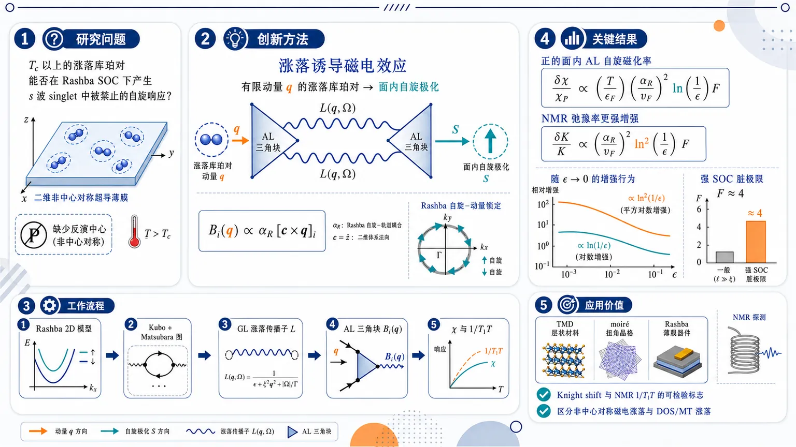
研究问题在缺乏反演中心的二维超导体中，临界温度 Tc 以上尚未凝聚的涨落库珀对，是否能通过 Rashba 自旋-轨道耦合产生中心对称 s 波超导中被禁止的自旋响应，并表现为自旋磁化率与 NMR 弛豫率的异常增强？创新方法提出“涨落诱导磁电效应”：有限动量的涨落库珀对像微小超流，借助 Rashba 自旋-动量锁定产生面内自旋极化涨落，使 Aslamazov-Larkin 图首次直接贡献 s-wave singlet 体系的自旋磁化率；关键视觉图像是两个 AL 三角块把库珀对动量 q 转换成自旋极化，满足 Bᵢ₍q) ∝ α_R[c×q]ᵢ，并用统一函数 F(α_R p_F τ, πTτ) 覆盖任意无序强度与 SOC 强度。工作流程输入二维非中心对称 Rashba 超导模型：抛物电子带、线性 Rashba SOC、短程杂质散射、纯 s 波 singlet 配对；用 Kubo 公式和 Matsubara 图技术构造自旋-自旋关联函数；引入 Ginzburg-Landau 型涨落传播子 L(q,Ω)；计算带自旋顶角的 AL 三角块 Bᵢ₍q)；将两个三角块与两条涨落传播子连接，积分得到静态自旋磁化率；再经解析延拓提取动态自旋磁化率虚部，动量积分得到 NMR 弛豫率修正。关键结果自旋磁化率获得正的面内各向同性 AL 修正：δχ/χ_P ∝ (T/ε_F)(α_R/v_F)² ln(1/ε) F，与常规 DOS/regular MT 的负修正竞争；NMR 的 K=1/(T1T) 获得更强正增强：δK/K ∝ (α_R/v_F)² ln²(1/ε) F，超过普通单对数涨落项；强 SOC 脏极限下 F≈4，可比洁净强 SOC 情形增强约 4 倍，而弱 SOC 脏极限中响应被 (T_cτ)² 和 SOC 小参数显著压制。应用价值为 TMD、moiré 超导体和 Rashba 超导薄膜中 Tc 附近的 Knight shift、面内自旋磁化率和 NMR 1/T1T 异常提供可检验理论标志；可用“正的 AL 自旋响应、面内投影结构、SOC 依赖、ln² 临界增强”区分非中心对称磁电涨落与传统 DOS/MT 涨落；有助于从非输运实验识别反演破缺超导材料中的临界自旋物理。第一部分：核心概览 (Overview)
非中心对称二维超导体在临界温度以上的超导涨落可诱导一种新的磁电效应：涨落库珀对携带的超流涨落伴随自旋极化涨落，从而通过 Aslamazov-Larkin（AL）过程直接修正自旋磁化率。该机制即使在纯 s-wave singlet pairing 中也存在，而在中心对称体系中被自旋结构严格禁止。核心结果给出任意杂质散射强度与任意 Rashba 自旋轨道耦合强度下的解析表达式，显示自旋磁化率获得正的、面内各向同性修正，NMR 弛豫率获得比常规 DOS/MT 项更强的 (łn²⁽¹/ϵ)) 奇异增强。该工作把超导涨落理论、Rashba 磁电效应与 NMR/自旋响应统一起来，定位于非中心对称超导涨落自旋物理的微观理论扩展。
---
第二部分：结构化快速回顾
《Fluctuation-Induced Magnetoelectric Effect in Noncentrosymmetric Superconductors》（None，）
背景
非中心对称超导体，尤其是 TMDs、moiré 材料和 Rashba 型二维体系，因缺乏反演中心而表现出 superconducting diode effect、magnetochiral anisotropy 等非互易现象。传统中心对称 s 波超导涨落中，AL 过程不贡献自旋-自旋响应；自旋磁化率主要由 DOS 抑制和 regular MT 项降低。
方法
采用 Edelstein model：二维抛物色散、线性 Rashba SOC、短程标量无序势、常规 s 波 BCS 配对。通过 Kubo 公式和 Matsubara 图技术计算自旋磁化率与 NMR 弛豫率，保留任意弹性散射时间 (τ) 与任意 SOC 分裂 (α_R p_F)。
结果
超导涨落在非中心对称体系中产生 AL 型自旋磁化率修正：
[
fracδḩiḩi_P
=
fracTǎrepsilon_F
łnłeft(frac1ϵi̊ght)
łeft(fracα_Rv_Fi̊ght)²
mathcal F(α_Rp_Fτ,π Tτ).
]
NMR 弛豫率修正为：
[
fracδ KK
=
frac164mǎrepsilon_Fη₂
łeft(fracα_Rv_Fi̊ght)²
łn²łeft(frac1ϵi̊ght)
mathcal F.
]
讨论
该 AL 贡献源于涨落超流与自旋极化之间的 Rashba 磁电耦合，符号为正，和 DOS/regular MT 对自旋磁化率的负修正竞争。强 SOC 脏极限下 (mathcal Fapprox 4)，相比洁净极限可增强 4 倍，但弱 SOC 脏极限存在 ((T_cτ)²) 抑制。
局限
模型限制在二维、抛物带、线性 Rashba SOC、弱 (α_R/v_F)、纯 s 波 singlet 配对、接近 (T_c) 的 (ϵłl1) 区域。涨落传播子只保留长波长与线性频率项，未处理强相互作用、多带、Ising SOC、强耦合、真实材料各向异性等复杂情形。
结论
非中心对称超导体中，超导涨落可在 (T>T_c) 产生中心对称体系没有的 AL 型磁电自旋响应，并增强 NMR 弛豫率。该机制为 TMD、moiré 超导体和 Rashba 超导薄膜中临界区自旋实验异常提供可检验理论框架。
---
第三部分：逐章节冷凝解析 (Section-by-Section Condensing)
Abstract
Superconducting fluctuations generate spin response above (T_c)
研究对象是非中心对称二维材料在超导转变温度以上的自旋响应，重点量为spin susceptibility 与 NMR relaxation rate，并允许杂质散射强度任意。摘要明确限定体系和技术路线：*"We study the effect of superconducting fluctuations on the spin susceptibility and NMR relaxation rate in noncentrosymmetric two-dimensional materials above the superconducting transition temperature, considering arbitrary strength of impurity scattering."* 该设定覆盖从洁净极限 (Tτgg1) 到扩散极限 (Tτłl1) 的完整交叉区。
Rashba SOC enables AL spin susceptibility for singlet pairing
微观模型采用线性 Rashba 自旋轨道耦合，关键发现是涨落库珀对直接贡献自旋磁化率：*"Employing a microscopic model with linear Rashba spin-orbit coupling, we show that superconducting fluctuations give rise to a direct contribution to the spin susceptibility through fluctuation-induced Cooper pairs."* 这一点突破中心对称 s 波超导涨落理论中 AL 自旋响应为零的限制。
Pure s-wave singlet pairing becomes magnetoelectric above (T_c)
即使配对相互作用是纯 s-wave singlet，非中心对称性也允许涨落诱导磁电效应：*"This fluctuation-driven magnetoelectric effect is possible even for purely s-wave singlet pairing, a mechanism that is forbidden in centrosymmetric systems."* 物理原因是 Rashba SOC 将库珀对动量与自旋极化耦合，使 AL 三角块 (Bᵢ₍mathbf q)propto α_R[mathbf c×mathbf q]ᵢ)。
Spin susceptibility contains competing positive and negative fluctuation channels
涨落诱导的 AL 磁电修正与常规 DOS/MT 负修正竞争：*"It competes with the reduction of the susceptibility below the Pauli value arising from the combined effects of the suppression of the density of states and quantum-interference localization processes."* 常规项降低 Pauli 磁化率，而新 AL 项在表达式中为正：
[
δḩi/ḩi_P
propto
+łn(1/ϵ)(α_R/v_F)²mathcal F.
]
NMR relaxation is enhanced above Korringa value
NMR 响应中，超导涨落增强 (1/T₁) 而非降低，且 SOC 进一步放大该效应：*"In contrast, superconducting fluctuations enhance the NMR relaxation rate above its normal-state Korringa value, with spin-orbit coupling providing an additional amplification of this effect."* 最终 AL 贡献具有 (łn²⁽¹/ϵ)) 奇异性：
[
δ K/K
=
frac164mǎrepsilon_Fη₂
łeft(fracα_Rv_Fi̊ght)²
łn²⁽¹/ϵ)mathcal F.
]
---
I Introduction
Noncentrosymmetric superconductors provide the physical platform
非中心对称超导体研究由 TMD 与 moiré 体系中的稳健超导性推动，材料包括 NbSe(₂)、MoS(₂)、WTe(₂)、MoTe(₂) 和 twisted WSe(₂)。相关背景被概括为：*"there has been a growing interest in the properties of noncentrosymmetric superconductors, stimulated by the discovery of robust superconductivity in transition-metal dichalcogenides (TMDs) such as NbSe(₂) and MoS(₂), as well as related moiré systems"*。核心共同点是缺乏反演中心：*"these systems inherently lack an inversion center"*。
Broken inversion symmetry produces nonreciprocal superconducting phenomena
反演对称性缺失带来一系列非互易效应，包括 superconducting diode effect（SDE） 与 magnetochiral anisotropy（MCA）。引言强调：*"they display a variety of fascinating nonreciprocal phenomena. Prominent examples include the superconducting diode effect (SDE) and magnetochiral anisotropy (MCA)"*。这些宏观效应可理解为非常规超导磁电现象的表现：*"both of which can be viewed as macroscopic manifestations of magnetoelectric phenomena unique to unconventional superconductors."*
MCA near (T_c) motivates fluctuation physics
MCA 在超导转变起始处出现尖锐增强并在低温持续存在，使超导涨落成为关键机制：*"The observed giant enhancement of MCA, which manifests sharply at the onset of the superconducting transition and persists at lower temperatures, has revived significant interest in the role of superconducting fluctuations"*。这将研究焦点推向临界区域 (Tgtrsim T_c)，其中涨落库珀对已经形成但尚未凝聚。
Spin susceptibility and NMR are extracted from spin-spin correlation functions
自旋磁化率和 NMR 自旋-晶格弛豫率均由电子自旋-自旋关联函数通过 Kubo 公式得到：*"Within linear response theory, both of these physical quantities can be extracted from the electronic spin-spin correlation function via the Kubo formula."* NMR 弛豫率 (1/T₁) 描述核自旋系统受扰后回到热平衡的速度：*"the NMR relaxation rate, denoted as (1/T₁), quantifies how quickly a nuclear spin system returns to thermal equilibrium with its surrounding lattice environment following a magnetic perturbation."*
Hyperfine coupling links NMR to electronic spin fluctuations
Bloch-Wangsness-Redfield 理论下，(1/T₁) 由核处时间依赖局域磁场驱动，这些局域磁场通常来自电子自旋的超精细耦合：*"this relaxation rate is driven by time-dependent, fluctuating local magnetic fields experienced by the nuclei, which typically originate from the hyperfine coupling to neighboring electronic spins."* 因此可将 (1/T₁) 写成动态电子自旋关联函数：*"Using the hyperfine interaction Hamiltonian, (1/T₁) can be rewritten directly in terms of the dynamic electronic spin-spin correlation function."*
Korringa relation defines the normal-state benchmark
普通非相互作用 Fermi 液体中，自旋关联由费米面附近低能电子-空穴激发主导，并产生线性温度依赖的 Korringa relation：*"For a normal, non-interacting Fermi liquid, this correlation function is dominated by low-energy electron-hole excitations near the Fermi surface, leading to a characteristic linear temperature dependence known as the Korringa relation."* 后文将 (K=1/(T₁T)) 的正常态值写为 (K=4π Aν²)。
Below (T_c), gap structure controls (1/T₁)
常规全能隙 s 波超导体中，配对能隙 (Δ) 使 (1/T₁) 在低温按 (sim e⁻Δ/T) 指数下降，并常伴随 Hebel-Slichter 峰：*"In conventional fully gapped s-wave superconductors, this causes (1/T₁) to drop exponentially at low temperatures as (sim e⁻Δ/T), often immediately following a distinct, fluctuation-enhanced Hebel-Slichter coherence peak just below (T_c)."* 节点超导则出现幂律：*"the spin-lattice relaxation rate exhibits a power-law temperature dependence, (1/T₁propto Tⁿ)"*。
Three standard superconducting fluctuation mechanisms are DOS, AL, and MT
临界区异常响应主要来自涨落库珀对：*"The primary source of anomalous responses near (T_c) is related to the formation of fluctuation-driven Cooper pairs."* 三种微观机制分别是 density of states（DOS）、Aslamazov-Larkin（AL） 和 Maki-Thompson（MT）：*"there are three distinct microscopic mechanisms through which these fluctuating Cooper pairs affect physical quantities. These are the density of states (DOS) effect, the Aslamazov-Larkin (AL) process associated with paraconductivity, and the Maki-Thompson (MT) process stemming from quantum interference effects in the Cooper channel."*
Conventional s-wave spin susceptibility lacks AL and anomalous MT contributions
在中心对称 s 波情形，AL 对自旋-自旋关联函数不存在：*"the usually dominant AL contribution is absent in the spin-spin correlation function for s-wave pairing."* 具体原因是自旋顶角翻转自旋，AL 三角顶角无法在 singlet 通道中一致分配第三条电子 Green 函数的自旋：*"The AL diagram contains a triangular vertex, and there is no consistent way to assign a spin to the third electron Green’s function so as to form a pair propagator in the singlet channel."* 异常 MT 也缺失：*"It turns out that the anomalous MT contribution is also absent."*
Conventional fluctuations suppress spin susceptibility
由于 AL 和 anomalous MT 缺席，中心对称 s 波体系中涨落通过 DOS 耗尽和 regular MT 过程降低自旋磁化率：*"As a result, superconducting fluctuations suppress the spin susceptibility through the combined effects of the depletion of the density of states near the Fermi level and the regular part of the MT process."* 在无序极限，Cooperon 杂质梯形图决定修正符号：*"In the disordered limit, quantum-interference diagrams (namely, Cooperon impurity ladders, which play a crucial role in weak localization) determine the sign of the correction to the spin susceptibility."*
NMR fluctuation corrections differ from susceptibility corrections
NMR 中 anomalous MT 可增强 (1/(T₁T)) 到 Korringa 值以上：*"the anomalous MT contribution leads to an enhancement of (1/(T₁T)) above its normal-state Korringa value."* 该效应与深超导态 (Tłl T_c) 的指数下降相反：*"superconducting fluctuations above (T_c) produce an effect opposite in sign to that observed deep in the superconducting state"*。强退相干会抑制 anomalous MT，使 DOS 与 regular MT 主导：*"Strong dephasing further suppresses the anomalous MT contribution, in which case the NMR relaxation rate is governed by the less singular DOS and regular MT terms."*
Rashba SOC introduces spin-split helical Fermi surfaces
非中心对称体系可用 Rashba SOC 描述：*"These systems exhibit pronounced spin-orbit effects and, in the simplest case, can be described by Rashba spin-orbit coupling."* Rashba 作用产生自旋分裂费米面与螺旋自旋纹理：*"This interaction generates spin-split Fermi surfaces with a characteristic spin-momentum-locked helical spin texture."*
Magnetoelectric effects are central consequences of Rashba SOC
Rashba 导体中一个核心效应是 Levitov-Nazarov-Eliashberg 与 Edelstein 预言的磁电效应，即正常态电场或超导态超流诱导载流子自旋极化：*"One of the most profound manifestations of Rashba spin-orbit coupling in conductors is the magnetoelectric effects (MEE) predicted by Levitov-Nazarov-Eliashberg and Edelstein, whereby a spin polarization of the charge carriers is induced by an electric field in the normal state or supercurrent in the superconductor."*
Singlet order can acquire triplet anomalous correlations
即使超导序参量本身为纯 singlet，Rashba SOC 也会使反常关联函数中出现 triplet 分量：*"Another important consequence is the emergence of a triplet component of the anomalous (off-diagonal) correlation function in addition to the singlet component, even when the superconducting order parameter itself is purely singlet."* 这为纯 s 波配对中的自旋响应打开通道。
Fluctuating supercurrent carries fluctuating spin polarization above (T_c)
关键物理图像是 (T>T_c) 时的超流涨落伴随自旋极化涨落：*"above (T_c), fluctuations of the supercurrent are accompanied by fluctuations of the spin polarization."* 有限均方自旋极化通过 AL 过程修正自旋磁化率：*"The resulting finite mean-square spin polarization gives rise to a correction to the spin susceptibility through the AL process"*。这正是中心对称体系所禁止的机制：*"which, as discussed above, is forbidden in centrosymmetric systems."*
The same MEE mechanism modifies NMR relaxation
同一机制也带来 NMR 弛豫率附加涨落修正：*"We further demonstrate that the same mechanism leads to additional fluctuation corrections to the NMR relaxation rate."* 研究覆盖 SOC 强度和无序强度：*"We study this fluctuation-driven magnetoelectric effect as a function of the spin-orbit coupling strength and show that it survives in disordered systems, although it gets progressively suppressed by impurity scattering."*
---
II Model and Technique
Edelstein model defines the microscopic theory
采用 Edelstein model 描述二维非中心对称超导体，包含二维电子、各向同性抛物色散、线性 Rashba SOC、静态标量无序势和常规 s 波 BCS 配对：*"The model incorporates several essential ingredients: a two-dimensional (2D) electron system with an isotropic parabolic dispersion, linear Rashba spin-orbit coupling (SOC) term, a static scalar disorder potential, and conventional s-wave BCS pairing."*
Hamiltonian contains kinetic, disorder, Rashba, and singlet pairing terms
哈密顿量为：
[
H=int d²mathbf r
łeft[
ψₐ^dagger
łeft(-fracnabla²2m-μ+V(mathbf r)i̊ght)
ψₐ
-iα_Rψₐ^dagger
([nabla×mathbf c]ḑotboldsymbolσₐb)
ψ_b
+fracłambdaₛ4
(ψₐ^dagger gₐbψ_b^dagger)
(ψ_c g^tcdψ_d)
i̊ght].
]
定义中明确：*"(ψdagger(mathbf r)) and (ψ(mathbf r)) are the usual fermion creation and annihilation field operators."*
Clean single-particle spectrum has Rashba helicity bands
洁净单粒子哈密顿量为：
[
fracmathbf p²2m-μ+α_R([mathbf p×mathbf c]ḑotboldsymbolσ).
]
Rashba SOC 解除自旋简并，得到 (łambda=±1) 两个螺旋能带：
[
E_łambda(p)=fracp²2m-μ+łambdaα_Rp.
]
相应表述为：*"The spin-orbit coupling lifts the spin degeneracy of the conduction electrons, giving rise to two energy bands of positive and negative helicities (łambda=±1)"*。
Disorder is modeled by short-range impurity scattering
无序势为：
[
V(mathbf r)=sumᵢ Uδ(mathbf r-mathbf Rᵢ₎,
]
其中杂质浓度为 (nₘ̊ ᵢₘₚ)。Born 近似给出弹性散射率：
[
τ⁻¹=2πν nₘ̊ ᵢₘₚ|U|²,qquad ν=m/2π.
]
原始设定为：*"We include disorder as a short-ranged potential of impurities placed at randomly distributed points (mathbf Rᵢ) with concentration (nᵢₘₚ)"*。
Only s-wave singlet pairing interaction is retained
电子间唯一相互作用为 s 波 singlet 配对：*"We assume in Eq. (II) s-wave singlet pairing interaction to be the only interaction between the electrons."* 配对矩阵为 (hat g=ihatσ^y)，配对常数为 (łambdaₛ)：*"where (hat g=ihatσ^y), (łambdaₛ) is the pairing constant"*。
Four dimensionless parameters control the near-(T_c) theory
接近 (T_c) 时，模型由四个无量纲参数控制：
[
ϵ=łnfracTT_c,quad
δ=fracα_Rv_F,quad
ǎrkappa=α_Rp_Fτ,quad
ǎrrho=π Tτ.
]
其中 (p_F=sqrt2mμ)，(v_F=p_F/m)。关键假设是 (ϵłl1)，(δłl1)，但 (ǎrkappa) 和 (ǎrrho) 任意：*"The parameter (ϵ=łnfracTT_capproxfracT-T_cT_c) is the smallest close to the transition temperature (T_c). The parameter (δ) is also assumed to be small, but the parameters (ǎrkappa) and (ǎrrho) are arbitrary."*
Pair propagator describes superconducting fluctuations above (T_c)
涨落传播子 (gₐbL(mathbf q,Ømegaₘ₎g^tcd) 描述虚库珀对的形成与衰变：*"The pairing propagator (gₐbL(mathbf q,Ømegaₘ₎gmathrm tcd) describes pairing fluctuations above (T_c), where (mathbf q) is the collective momentum and (Ømegaₘ) is the Matsubara frequency of the virtual Cooper pair."*
Long-wavelength fluctuation propagator has Ginzburg-Landau form
在 (ϵłl1) 下只需长波长、线性频率形式：
[
L⁻¹(mathbf q,Ømegaₘ₎
=
-ν_d
łeft[
ϵ+fracπ|Ømegaₘ|8T+η_dq²
i̊ght],
]
并忽略 (sim(α_R/v_F)²) 修正：*"it suffices to focus on long-wavelength, linear in (Ømegaₘ₌₂π mT) fluctuations."*
The stiffness (η₂) interpolates between diffusive and ballistic limits
二维体系中：
[
ν₂₌ν=m/2π,
]
[
η₂
=
-fracv_F²τ²2
łeft[
ψłeft(frac12+frac14π Tτi̊ght)
-ψłeft(frac12i̊ght)
-frac14π Tτψ⁽¹⁾łeft(frac12i̊ght)
i̊ght].
]
极限为：
[
η₂approx
begincases
π D/(8T_c),& T_cτłl1,
7ζ(3)v_F²/(32π²T_c²⁾,& T_cτgg1.
endcases
]
其物理意义为相干长度平方：*"turns out to be proportional to the square of effective coherence length, (ξ₂₌η₂¹/²)."*
AL triangular blocks become momentum-linear because of SOC
AL 图左右圆形块 (Bᵢ,ⱼ(mathbf q',Ømegaₘ,ømega_ν)) 含自旋顶角。临界区可忽略频率依赖：*"In the vicinity of (T_c), we can neglect the (Ømegaₘ) and (ømega_ν)-dependencies of (Bᵢ,ⱼ)"*。最终表达式为：
[
Bᵢ,ⱼ(mathbf q')
=
sumøₘₑgₐ_ₙ>₀
frac{
4πνα_RTτǎrkappa²
[mathbf c×mathbf q']ᵢ,ⱼ
}{
ømegaₙ²
[
τømegaₙ₍₂τømegaₙ₊₁₎²
+
ǎrkappa²⁽⁴τømegaₙ₊₁₎
]
}.
]
核心物理是：*"Owing to spin-orbit coupling, this vertex becomes proportional to the collective Cooper pair momentum similar as it happens in the AL diagram for the electrical conductivity."*
Thermodynamic susceptibility is less singular than paraconductivity
自旋磁化率作为热力学量，可直接在零 Matsubara 频率取主奇异行为；电导率则需解析延拓和频率微分，产生更高阶极点与更强奇异性：*"Since the spin susceptibility is a thermodynamic quantity, its leading singular behavior in (ϵ) can be obtained by evaluating the response function at zero Matsubara frequency. In contrast, the conductivity must be extracted from the properly analytically continued response function."*
---
III Spin susceptibility
Static AL susceptibility reduces to a pair-propagator square integral
外部频率和动量可一开始设为零，得到：
[
δḩiᵢⱼ
=
Tintₘₐₜₕbf q
L²⁽mathbf q)Bᵢ₍mathbf q)Bⱼ₍mathbf q).
]
原始表述为：*"The computation for the fluctuation-induced correction to spin susceptibility can be made simpler by setting the external frequency and momentum to zero at the beginning"*。这反映自旋磁化率是静态热力学响应。
Angular integration enforces in-plane tensor structure
角平均给出：
[
intfracdhat q2π
[mathbf c×mathbf q]ᵢ[mathbf c×mathbf q]ⱼ
=
frac12(δᵢⱼ-cᵢcⱼ₎q².
]
因此修正只作用于二维平面内自旋分量：
[
δḩiᵢⱼ
=
(δᵢⱼ-cᵢcⱼ₎δḩi.
]
这体现 Rashba 平面法向 (mathbf c) 选择出的各向异性。
Momentum integral gives logarithmic critical singularity
径向动量积分为：
[
int₀¹/ξ
fracq³dq2π
frac1(ϵ+η₂q²⁾²
approx
frac14πη₂²
łnłeft(frac1ϵi̊ght).
]
需要紫外截断 (qₘₐₓsimξ⁻¹=η₂⁻¹/²)：*"we have introduced the standard cut-off (qₘₐₓsimξ⁻¹=η₂⁻¹/²) in order to regularize the ultraviolet divergence in the (q)-integration."*
Final susceptibility correction is positive and proportional to ((α_R/v_F)²)
最终结果为：
[
fracδḩiḩi_P
=
fracTǎrepsilon_F
łnłeft(frac1ϵi̊ght)
łeft(fracα_Rv_Fi̊ght)²
mathcal F(α_Rp_Fτ,π Tτ),
]
其中 (ḩi_P=2ν)。该表达式给出任意杂质散射强度与 SOC 强度下的 AL 磁电修正。核心尺度包括 (T/ǎrepsilon_F)、临界奇异性 (łn(1/ϵ))、反演破缺小参数 ((α_R/v_F)²)。
Clean-limit scaling depends on (κ=α_Rp_F/π T)
洁净极限条件为：
[
τggmax(1/T_c,1/α_Rp_F).
]
定义：
[
κ=fracǎrkappaǎrrho=fracα_Rp_Fπ T.
]
函数为：
[
mathcal F
=
łeft[
1-frac47ζ(3)κ²
m̊ Re
łeft(
ψłeft(frac12+fraciκ2i̊ght)
-ψłeft(frac12i̊ght)
i̊ght)
i̊ght]².
]
强 SOC：
[
mathcal Fapprox
1-frac0.95κ²
łeft[
łnfracκ2-ψłeft(frac12i̊ght)
i̊ght],
quad κgg1.
]
弱 SOC：
[
mathcal Fapprox0.91κ⁴,quad κłl1.
]
原始说明为：*"The dimensionless two-parameter function (mathcal F(ǎrkappa,ǎrrho)) can be calculated analytically in the clean limit"*。
Dirty strong-SOC limit gives (mathcal Fapprox4)
强 SOC 脏极限满足：
[
ǎrkappagg1ggǎrrho,
quad
α_Rp_Fggτ⁻¹gg T_c.
]
此时：
[
mathcal F
=
łeft[
2+frac16ǎrrhoπ²
łeft(
łn(16ǎrrho)+ψłeft(frac12i̊ght)
i̊ght)
i̊ght]²
approx4.
]
重要解释为：*"the fluctuation-driven spin susceptibility correction of the dirty limit in the strong SOC regime becomes 4 times as big as that in the clean limit because of the disorder-induced mixing of singlet and triplet pairing correlations."*
Dirty weak-SOC limit is strongly suppressed
弱 SOC 脏极限满足：
[
ǎrkappałlǎrrhołl1,
quad
α_Rp_Fłl T_cłlτ⁻¹.
]
结果为：
[
mathcal F
approx
frac196ζ²⁽³⁾π⁴
κ⁴ǎrrho².
]
这说明弱 SOC 与强无序共同压低 AL 磁电响应，含 (κ⁴) 与 (ǎrrho²⁼⁽π Tτ)²) 抑制。
AL MEE contribution has opposite sign to DOS and regular MT susceptibility corrections
涨落诱导 MEE 的 (δḩi) 与 DOS/regular MT 对自旋磁化率的负修正竞争：*"we find that the correction (δḩi) arising from the fluctuation-induced MEE has the opposite sign to the DOS and regular MT contributions to the spin susceptibility."* 由于该机制要求反演对称性破缺，额外前因子为 ((α_R/v_F)²)：*"because this effect requires broken inversion symmetry, it carries an additional prefactor ((α_R/v_F)²), where the two powers originate from the two triangular blocks entering the AL process."*
Diffusive suppression introduces ((T_cτ)²)
扩散极限中该效应被强烈抑制：*"The suppression factor for this effect in the diffusive limit is sufficiently strong, introducing an additional small parameter proportional to ((T_cτ)²łl1)."* 这意味着尽管强 SOC 脏极限可能因 singlet-triplet 混合使 (mathcal Fapprox4)，弱 SOC 或深扩散体系的实际可观测性仍受 (τ) 限制。
---
IV NMR relaxation rate
NMR requires the imaginary part of dynamic spin susceptibility
NMR 弛豫率计算比静态磁化率更复杂，因为需要动态自旋磁化率的虚部：*"The calculation of the NMR relaxation rate is more involved as it requires the knowledge of the imaginary part of the dynamic spin susceptibility, (øperatornameImḩiᵢⱼ⁽R⁾(mathbf q,ømega))."* 定义：
[
K=frac1T₁T
=
łimøₘₑgₐ→₀
fracAømega
intₘₐₜₕbf q
m̊ Imḩi₊₋⁽R⁾(mathbf q,ømega),
]
其中 (A>0) 来自超精细相互作用。
Korringa constant sets the normalization
低温非相互作用电子中：
[
K=4π Aν².
]
原始表述为：*"For noninteracting electrons at low temperatures, (Tłlǎrepsilon_F), (K=4π Aν²), which is the Korringa constant."* 后续 (δ K/K) 均按此正常态 Korringa 值归一化。
Analytic continuation is essential
动态 AL 响应需要对 Matsubara 频率求和并解析延拓：
[
S=Tsumₘ
L(mathbf q'₋ ,Ømegaₘ₎
L(mathbf q'₊,Ømegaₘ₊ømega_ν).
]
技术难点在于解析延拓：*"Because of the subtleties of the analytic continuation, this calculation of (K) requires somewhat more care than the evaluation of (δḩi)."*
Matsubara sum is converted to a contour integral
玻色 Matsubara 求和转化为复频率 (z=iØmegaₘ) 平面上的轮廓积分：
[
TsumØₘₑgₐ_ₘf(Ømegaₘ₎
=
frac14π i
øintC_₀dz
o̧thfracz2Tf(-iz).
]
原始说明为：*"we convert the summation over bosonic Matsubara frequencies (Ømegaₘ) into a contour integral"*。
Retarded and advanced fluctuation propagators determine branch cuts
复平面中存在沿 (m̊ Im,z=0) 与 (m̊ Im,z=-iømega_ν) 的非解析分支：*"The integrand above exhibits branches of nonanalyticity along the lines (øperatornameImz=0) and (øperatornameImz=-iømega_ν)."* 需要引入 retarded 与 advanced 传播子：*"The first is the retarded propagator ... analytic in the upper half-plane; the second is the advanced propagator ... devoid of singularities in the lower half-plane."*
Analytically continued pair propagator has relaxational form
解析延拓后的涨落传播子为：
[
L^R(mathbf q,-iz)
=
-frac1ν
frac1ϵ-fraciπ z8T+η₂q².
]
该形式体现临界涨落的弛豫动力学，频率项为 (-iπ z/(8T))。
Low-frequency expansion isolates the imaginary response
为得到 Eq. (12) 所需虚部，只需保留 (ømega) 一阶项：*"To get the imaginary part contributing to Eq. (12), we only need the first order in (ømega) term of the sum"*。由于主要 (z) 积分贡献来自 (złl T)，可用：
[
o̧th(z/2T)approx 2T/z.
]
原始说明为：*"Since the main contribution to the above integral with respect to (z) comes from the small values of (złl T), we can expand (o̧th(z/2T)approx2T/z)"*。
Frequency integral yields a compact three-denominator expression
完成 (z) 积分后：
[
S
=
fracν⁻²iømega16
fracπ{
(ϵ+η₂q₊prⁱme²)
(ϵ+η₂q₋prⁱme²)
[
ϵ+fracη₂2(q₊prⁱme²+q₋prⁱme²)
]
}.
]
这为后续动量积分提供核心结构。
Momentum dependence of triangular blocks can neglect external (mathbf q) to leading order
后续积分中，来自左右块 (Bᵢ,ⱼ(mathbf q')) 的因子给出 (qprⁱme²)。块函数对外部 (mathbf q) 的依赖可忽略：*"we have assumed that the block functions (Bᵢ,ⱼ(mathbf q')) are independent of (mathbf q)."* 线性项积分后严格为零：*"terms in the expansion of (Bᵢ,ⱼ(mathbf q')) that are linear in (mathbf q) can be shown to vanish identically upon integration."*
Angular and radial integrations produce the structure factor
设：
[
q_±prⁱme²=qprⁱme²+fracq²4± q'qo̧sφ,
quad
x=fracsqrtη₂q2sqrtϵ.
]
径向积分给出含反正切表达式，角平均使用恒等式：
[
int₀²π
frac{
tan⁻¹
łeft[
fracxo̧sφsqrt1+x²sin²φ
i̊ght]
}{
xo̧sφsqrt1+x²sin²φ
}
fracdφ2π
=
fracsinh⁻¹(x)xsqrt1+x².
]
Dynamic spin structure factor is enhanced by AL MEE
得到涨落诱导动态自旋结构因子：
[
m̊ Imδḩiᵢⱼ(q,ømega)
=
(δᵢⱼ-cᵢcⱼ₎
fracømega16ϵ v_F²
fracsinh⁻¹(x)xsqrt1+x²
łeft(fracα_Rv_Fi̊ght)²
mathcal F(ǎrkappa,ǎrrho).
]
该结果保留与静态磁化率相同的面内投影 ((δᵢⱼ-cᵢcⱼ₎)、SOC 因子 ((α_R/v_F)²) 和交叉函数 (mathcal F)。
Final (q)-integral gives a squared logarithmic singularity
最后的 (q) 积分需要紫外正则化：*"It needs a regularization at the ultraviolet limit similar to the case of spin susceptibility."* 在 (ϵłl1) 的对数精度下：
[
frac14ϵη₂²
int₀¹/ξ
fracqdq2π
fracsinh⁻¹(x)xsqrt1+x²
approx
frac116πη₂³
łn²łeft(frac1ϵi̊ght).
]
AL correction to NMR relaxation rate is positive and more singular
最终 NMR 修正为：
[
fracδ KK
=
frac164mǎrepsilon_Fη₂
łeft(fracα_Rv_Fi̊ght)²
łn²łeft(frac1ϵi̊ght)
mathcal F(ǎrkappa,ǎrrho).
]
原始界定为：*"The final expression for the fluctuation-driven correction to the NMR relaxation rate arising from the AL process, normalized by the Korringa value and obtained at an arbitrary elastic scattering time and arbitrary SOC strength in units of (T_c)"*。其正号表明 (K=1/(T₁T)) 被增强。
Conventional DOS and regular MT corrections are negative and only logarithmic
已有结果中 regular MT 与 DOS depletion 对 NMR 率给出负的对数修正：
[
δ K/Ksimeq
-(T_c/ǎrepsilon_F)łn(1/ϵ),
quad T_cτgg1,
]
[
δ K/Ksimeq
-(1/ǎrepsilon_Fτ)łn(1/ϵ),
quad T_cτłl1.
]
原始比较为：*"the combined effect of the regular part of the MT diagram and DOS depletion leads to the negative corrections to the NMR rate that is logarithmic"*。
Anomalous MT dominates only when dephasing is weak
anomalous MT 为正，但强烈依赖退相干时间 (τ_φ)：*"These contributions compete with the anomalous MT term which is positive, however strongly sensitive to the dephasing effect as controlled by a parameter (Tτ_φ)"*。弱退相干 (Tτ_φgg1) 下：
[
δ K/Ksimeq
(1/ǎrepsilon_Fτ)
fracłn(ϵ Tτ_φ)ϵ,
]
可主导响应。强退相干 (Tτ_φłl1) 下：
[
δ K/Ksimeq
(1/ǎrepsilon_Fτ)(Tτ_φ)
łnfrac1ϵ Tτ_φ,
]
小于 regular MT+DOS。
Fluctuational MEE is most relevant when anomalous MT is dephased
AL 磁电贡献在 anomalous MT 被退相干抑制时尤为重要：*"Therefore, the fluctuational MEE contribution that we find from the AL process is at play in systems where dephasing suppresses the anomalous MT term."* 虽然模型要求 (α_R/v_Fłl1)，但该项比 regular MT 和 DOS 更奇异：*"although the applicability of our model requires the small parameter (α_R/v_F), the term we find is more singular in (ϵ) than both the regular MT and DOS contributions."*
---
Acknowledgements
Funding sources and institutional support
研究经费来自 Ames National Laboratory、Iowa State University、NSF Quantum Leap Challenge Institute、NSF DMR 项目、H. I. Romnes Faculty Fellowship，以及 Aspen Center for Physics workshop 支持。具体资助信息包括：*"The work of D. S. was supported in part by the National Science Foundation (NSF) Quantum Leap Challenge Institute for Hybrid Quantum Architectures and Networks Grant No. OMA-2016136."* 以及：*"M. D. acknowledges the support of the NSF grant No. DMR-2400484."* A. L. 获 NSF DMR-2452658 与 Wisconsin Alumni Research Foundation 资助：*"The work of A. L. was supported by NSF Grant No. DMR-2452658 and H. I. Romnes Faculty Fellowship"*。
---
Appendix A Evaluation of the block (Bᵢ₍mathbf q'))
Appendix computes the microscopic triangular AL block
附录目标是显式计算 AL 图中的三角块 (Bᵢ₍mathbf q'))：*"In this appendix, we compute the explicit expression for the block (Bᵢ₍mathbf q')) by evaluating the diagrammatic expansion shown in Fig. 2."* 该块是整篇推导的关键，因为它把 Rashba SOC、无序散射和库珀对动量联系起来。
Diagrammatic technique follows impurity-averaged Rashba Green functions
顺时针费米线表示标准电子 Green 函数：
[
Gₐb(iǎrpiₙ,mathbf p)
=
sumłₐₘbdₐ₌±
Πₐb⁽łambda⁾(mathbf p)
G₍łₐₘbdₐ₎(iǎrpiₙ,p).
]
原始定义为：*"The clockwise-directed fermion lines represent the standard electronic Green’s function"*。其中 (a,b) 为自旋指标，(łambda=±) 为 Rashba 螺旋度。
Available appendix text is truncated after Green-function setup
所给附录内容在 *"The renormalized imaginary frequency is defined as i"* 处中断；完整的 impurity (T)-matrix、Cooper-channel ladder、频率重整化和最终 Eq. (5) 的逐步推导不可见。可确认的结果已经在正文给出：
[
Bᵢ,ⱼ(mathbf q')
=
sumøₘₑgₐ_ₙ>₀
frac{
4πνα_RTτǎrkappa²
[mathbf c×mathbf q']ᵢ,ⱼ
}{
ømegaₙ²[
τømegaₙ₍₂τømegaₙ₊₁₎²⁺
ǎrkappa²⁽⁴τømegaₙ₊₁₎
]
}.
]
该式体现三角块对 (mathbf q') 线性、对 (α_R) 线性，并包含任意 (ǎrkappa=α_Rp_Fτ) 与 (ǎrrho=π Tτ) 的散射效应。
---
第四部分：深度理解与语言支持 (Understanding & Nuance)
1. 术语解析
#### Fluctuation-induced Cooper pairs
含义是 (T>T_c) 时尚未形成长程相干凝聚，但短寿命库珀对已经因配对相互作用而瞬时出现。文中用法：*"fluctuation-induced Cooper pairs"*。微妙点在于它们不是超导态中的稳定凝聚对，而是临界区热涨落产生的虚库珀对；它们仍可贡献输运、磁化率和 NMR。
#### Magnetoelectric effect (MEE)
这里不是传统绝缘体中电极化与磁化耦合的磁电效应，而是 Rashba 金属/超导体中的 Edelstein effect：电流或超流诱导自旋极化，反过来自旋/磁场也可诱导电流。文中定义为：*"whereby a spin polarization of the charge carriers is induced by an electric field in the normal state or supercurrent in the superconductor."* 关键在于 spin-momentum locking 使动量流与自旋极化相关。
#### Aslamazov-Larkin process
AL 过程通常指涨落库珀对直接携带电荷流导致的 paraconductivity。文中将它移植到自旋响应：两个三角块 (BᵢBⱼ) 由两条涨落传播子连接。微妙点是中心对称 s 波中 AL 对自旋响应被禁止，而 Rashba SOC 使三角块不为零。
#### Regular vs anomalous Maki-Thompson contribution
MT 过程源自 Cooper 通道的量子干涉。regular MT 通常较弱且与 DOS 一起给出负修正；anomalous MT 在某些通道更奇异、可正向增强 NMR，但对退相干极敏感。文中区分为：*"regular part of the MT process"* 与 *"anomalous MT term"*。NMR 中 anomalous MT 可按 (1/ϵ) 发散，但强退相干会压制。
#### Korringa value / Korringa relation
正常金属中 (1/T₁T) 的基准常数，源于费米面附近电子-空穴激发。文中给出：*"For noninteracting electrons at low temperatures, (Tłlǎrepsilon_F), (K=4π Aν²), which is the Korringa constant."* 因此 (δ K/K>0) 表示 NMR 弛豫超过普通 Fermi 液体基准。
---
2. 疑难查证
#### 为什么中心对称 s 波中 AL 自旋响应为零，而 Rashba 体系中不为零？
中心对称 s 波 singlet 库珀对总自旋为零、总动量涨落不携带净自旋。AL 图中的三角块需要一个自旋顶角和两个配对顶角。自旋顶角会翻转或选择自旋，而 singlet 配对要求两条线成反平行自旋；第三条 Green 函数无法在 singlet 通道中一致分配自旋，因此三角块为零。
Rashba SOC 改变了这个结论。单粒子态不再是纯 (p̆arrow/downarrow)，而是螺旋度态；自旋与动量锁定。一个具有有限中心动量 (mathbf q) 的涨落库珀对等价于微小超流，而 Rashba Edelstein 效应使超流诱导自旋极化。于是三角块变成：
[
Bᵢ₍mathbf q)propto α_R[mathbf c×mathbf q]ᵢ.
]
两个三角块相乘后给出：
[
δḩiᵢⱼpropto
(δᵢⱼ-cᵢcⱼ₎
α_R²q²L²⁽q).
]
因此 AL 自旋响应不是普通 singlet 自旋，而是涨落超流的磁电自旋极化响应。
#### 为什么自旋磁化率只有 (łn(1/ϵ))，而 NMR 有 (łn²⁽¹/ϵ))？
静态自旋磁化率计算中，主积分结构是：
[
int dq,fracq³(ϵ+η q²⁾²
sim łn(1/ϵ).
]
其中 (q²) 来自两个三角块的动量线性因子。该积分在二维中呈对数发散。
NMR 需要动态响应的虚部，还要对外部动量 (mathbf q) 积分。解析延拓和低频极限产生额外的临界分母，最终有：
[
int fracqdqϵ
fracsinh⁻¹xxsqrt1+x²
sim łn²⁽¹/ϵ).
]
一个对数来自临界涨落动量尺度，另一个对数来自动态结构因子的长波动量积分。因此 NMR 的 AL MEE 项比静态磁化率更奇异。
#### 为什么强 SOC 脏极限 (mathcal Fapprox4)，反而比洁净极限大？
直觉上无序通常抑制相干效应，但这里强 SOC 脏极限满足：
[
α_Rp_Fggτ⁻¹gg T_c.
]
SOC 分裂仍大于散射率，螺旋结构未被完全抹掉；同时无序散射在 Cooper 通道中混合 singlet 与 triplet 反常关联。文中解释为：*"because of the disorder-induced mixing of singlet and triplet pairing correlations."* 这种混合增强了 AL 三角块的有效自旋响应，使 (mathcal F) 达到约 4。若进入弱 SOC 脏极限：
[
α_Rp_Fłl T_cłlτ⁻¹,
]
则 (mathcal Fproptoκ⁴ǎrrho²)，响应被强烈压低。
#### 为什么 ((α_R/v_F)²) 是不可避免的小参数？
AL 图有两个三角块，每个三角块代表一个涨落库珀对动量转化为一个自旋顶角响应。Rashba SOC 是这个转化的唯一来源，因此：
[
Bᵢpropto α_R.
]
两个块相乘：
[
BᵢBⱼproptoα_R².
]
归一化到费米速度后得到 ((α_R/v_F)²)。这说明没有 Rashba SOC 或恢复反演对称性时，效应严格消失。
---
第五部分：创新评估与关联 (Synthesis & Novelty)
1. 创新性判断
#### A new AL channel for spin susceptibility in noncentrosymmetric superconductors
传统超导涨落理论中，AL 过程是电导涨落的主角，但在中心对称 s 波自旋响应中严格缺席。该研究证明 Rashba SOC 与反演破缺使 AL 图对自旋磁化率非零，且物理上对应涨落超流伴随自旋极化涨落。这解决了传统理论没有覆盖的问题：纯 singlet s 波配对在 (T>T_c) 临界区如何通过非中心对称性产生直接自旋响应。
#### Fluctuation magnetoelectric effect above (T_c)
以往 Rashba-Edelstein 磁电效应多集中在正常态电流诱导自旋极化，或 (T<T_c) 超导态超流诱导自旋极化。这里的关键新意在于无长程超导相干的 (T>T_c) 区域：涨落超流本身产生均方自旋极化，并可被静态自旋磁化率和 NMR 探测。
#### Unified treatment of arbitrary impurity scattering and SOC strength
理论结果保留任意：
[
ǎrkappa=α_Rp_Fτ,qquad
ǎrrho=π Tτ,
]
从而覆盖 ballistic、diffusive、strong SOC、weak SOC 的完整交叉。过去许多涨落修正计算通常分别处理洁净或脏极限；这里用同一个 (mathcal F(ǎrkappa,ǎrrho)) 表达式统一描述。
#### New prediction for NMR: positive (łn²⁽¹/ϵ)) AL-MEE enhancement
NMR 弛豫率获得：
[
δ K/K
propto
+
(α_R/v_F)²
łn²⁽¹/ϵ)
mathcal F.
]
这比 regular MT+DOS 的单对数负修正更奇异，并在 anomalous MT 被退相干压制时成为关键可观测通道。该点为 NMR 实验识别非中心对称超导临界涨落提供明确判据：靠近 (T_c) 时 (1/T₁T) 可能超过 Korringa 值并带有 SOC 依赖。
#### Connection to recent nonreciprocal superconductivity
近 2–5 年内，TMD、moiré 超导体、Rashba 界面体系中的 superconducting diode effect、MCA 和 Ising/Rashba 保护超导成为热点。现有研究多聚焦输运非互易性和临界电导；该研究把同一类反演破缺涨落物理推进到自旋热力学与 NMR 动力学响应，使非互易超导材料的磁电涨落可通过非输运手段检验。
#### Most experimentally relevant window
最有利观测条件包括：
- 非中心对称二维超导体；
- 明显 Rashba 或类 Rashba 自旋-轨道分裂；
- 接近 (T_c)，(ϵ=(T-T_c)/T_cłl1)；
- anomalous MT 被退相干削弱；
- (α_R/v_F) 虽小但 (łn²⁽¹/ϵ)) 临界增强足够明显；
- NMR 或 Knight shift 可分辨面内自旋响应增强。
核心可检验标志是：自旋磁化率出现与常规 DOS/MT 负修正竞争的正 AL 项，NMR (1/T₁T) 出现 SOC 放大的正临界增强。
-
17
📊 含图深析
📄 摘要：讨论二维 d 波交替磁体中的自旋 demon：由自旋劈裂准粒子群近反相振荡形成的声学集体模，净电荷涨落弱、寿命长但难以被电荷探针探测。Rashba 自旋轨道耦合把问题转化为广义电荷—自旋响应，结合静电栅极屏蔽可调节并增强其电荷可见性。
💡 亮点：Rashba 耦合和栅极屏蔽可把 d 波交替磁体中近电中性的自旋 demon 变亮。该方案让长寿命自旋集体模进入电荷响应探测窗口。
📖 展开分析 + 配图
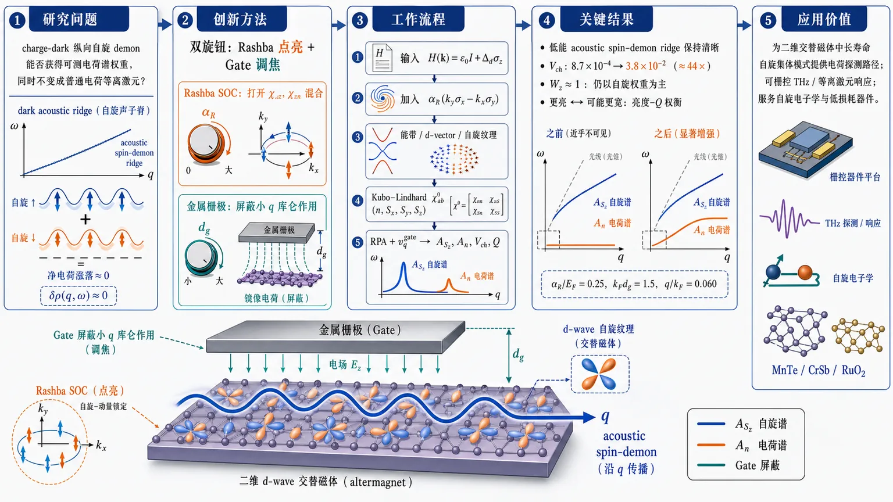
研究问题二维 d-wave 交替磁体中的 spin demon 因两个自旋分裂准粒子种群近反相振荡而长寿命，但净电荷涨落几乎抵消，像“暗态声学脊线”一样难被电荷探针看见；核心问题是：能否让这个原本 charge-dark 的纵向自旋集体模式获得可测电荷谱权重，同时不把它变成普通电荷等离激元。创新方法提出“Rashba 自旋轨道耦合 + 静电栅极屏蔽”的双旋钮方案：Rashba 将纯自旋本征态扭转成动量依赖 spinor，在密度 n 与纵向自旋 S_z 之间打开有限混合 susceptibility χₙz、χ_zn，使自旋 demon 在电荷谱中变亮；金属栅极通过镜像电荷削弱小 q 库仑相互作用，独立调节 RPA 集体极点的色散、速度和品质因子。Aha 点是：Rashba 负责“点亮”，gate 负责“调焦”，两者功能分离。工作流程输入二维 d-wave 交替磁体连续哈密顿量 H(k)=ε₀I+Δ_dσ_z，并加入 Rashba 项 α_R(k_yσₓ−kₓσ_y)；计算 Rashba-altermagnetic 能带、d-vector 与动量依赖自旋纹理；在 (n,Sₓ,S_y,S_z) 四通道基底中构造 Kubo–Lindhard 裸响应矩阵；用栅极屏蔽库仑势 v_q^gate=(e²/2ε₀εᵣq)(1−e⁻²qd_g) 进入 RPA；提取 A_Sz 与 Aₙ 谱函数、spin-demon 频率、charge visibility V_ch=Aₙ/A_Sz、品质因子 Q；输出从暗态到电荷可见的 spin-demon 谱线图和 Rashba–gate 参数图。关键结果中等 Rashba 混合下，低能 acoustic spin-demon ridge 仍清晰存在，并主要位于纵向自旋响应 A_Sz 中；在代表参数 α_R/E_F 标度为 0.25、k_Fd_g=1.5、q/k_F=0.060 时，电荷可见度由近暗态 V_ch≈8.7×10⁻⁴ 提升到 V_ch≈3.8×10⁻²，约增强 44 倍；自旋权重 W_z 仍接近 1，说明模式没有变成普通 charge plasmon；参数扫描显示电荷亮度与谱峰品质 Q 存在“更亮但可能更宽”的权衡。应用价值为在二维交替磁体器件中探测原本电荷不可见的长寿命自旋集体模式提供可操作路径：通过界面、电场或衬底产生 Rashba SOC 来增加电荷探针信号，通过金属栅极调节传播速度、色散斜率和谱分辨率；可服务于自旋电子学、低损耗集体激发器件、可栅控太赫兹/等离激元响应，以及 MnTe、CrSb、RuO₂ 等候选交替磁材料中的实验观测设计。第一部分：核心概览 (Overview)
二维 d-wave altermagnet 中的 spin demon 原本因自旋分裂准粒子近反相振荡而具备长寿命，但净电荷涨落极弱，导致电荷探针难以观测。该研究提出将 Rashba 自旋轨道耦合 与 静电栅极屏蔽 结合：前者通过动量依赖自旋纹理产生有限的 charge–spin mixed susceptibility，使纵向自旋主导的 demon 获得可测电荷谱权重；后者通过调节库仑反馈控制色散、速度与品质因子。基于连续模型与 RPA 响应矩阵，结果显示中等 Rashba 混合下模式仍保持 S_z 主导，并出现从 charge-dark 到 charge-visible 的可调跨越。
---
第二部分：结构化快速回顾
《Rashba and Electrostatic Control of Charge-Visible Spin Demons in Two-Dimensional d-Wave Altermagnets》（None，）
背景
Altermagnets 兼具补偿共线磁序与动量依赖自旋分裂，可支持非普通等离激元、非传统自旋波的集体模式。二维 d-wave altermagnet 中已知存在近反相自旋种群振荡形成的 spin demon，但其净电荷响应极弱，实验可见性不足。
方法
采用二维连续哈密顿量
[
H(bf k)=ϵ₀₍bf k)mathbb I+Δ_d(bf k)σ_z+α_R(k_yσₓ₋ₖₓσ_y)
]
并在 ((n,Sₓ,S_y,S_z)) 基底中构造广义 Kubo–Lindhard susceptibility 与 RPA 响应。静电栅极通过
[
v_qm̊ gate=frace²2ϵ₀ϵᵣ q(1-e⁻²qd_g)
]
引入屏蔽。
结果
Rashba 耦合使 (ḩiₙz⁽⁰⁾)、(ḩizₙ⁽⁰⁾) 变为有限，纵向自旋响应与电荷响应共享 RPA 极点。代表参数 (barα_R=0.25)、(k_Fd_g=1.5)、(q/k_F=0.060) 下，电荷可见度从 (Vₘ̊ cₕsimeq8.7×10⁻⁴) 增至 (Vₘ̊ cₕsimeq3.8×10⁻²)。
讨论
Rashba 负责单粒子自旋纹理与自旋-电荷混合；栅极不改变能带自旋子，而是调节库仑反馈与集体极点。两者职责分离，使 spin demon 可在保持纵向自旋主导的同时获得电荷可见性。
局限
模型为连续低能理论与 RPA 近似，主要展示清洁体系、代表参数和谱函数诊断；材料特异性晶格效应、无序、有限温度、强关联修正、真实器件损耗与实验耦合矩阵元未被完整纳入。提供文本在 Discussion 后半段截断，无法核验完整结论与附录数值细节。
结论
Rashba SOC + electrostatic gate screening 构成二维 altermagnet 中调控 charge-visible spin demon 的双旋钮方案：电荷可见性提升、模式仍欠阻尼且主要为 (S_z) 纵向自旋性质。
---
第三部分：逐章节冷凝解析
Abstract
- Charge-dark spin demons can be brightened without losing spin identity
Spin demons 被定义为由自旋分裂准粒子种群近反相振荡形成的声学集体模式，其低净电荷涨落带来长寿命，也造成电荷探针不可见性。核心表述为 *"Spin demons in d-wave altermagnets are acoustic collective modes formed by nearly out-of-phase oscillations of spin-split quasiparticle populations."* 同时，*“Their weak net charge fluctuation makes them long lived, but also makes them difficult to access with charge-sensitive probes.”* 研究目标是同时解决寿命与可见性的矛盾。
- Rashba coupling creates a generalized charge-spin response problem
Rashba SOC 将原本自旋守恒的两通道问题转化为 charge–spin response matrix 问题，使密度与自旋通道之间的混合响应有限。原文明确写道：*"Rashba coupling converts the spin-conserving problem into a generalized charge-spin response problem, in which mixed susceptibilities between density and spin channels become finite."* 因而原本纵向自旋主导、charge-dark 的模式获得电荷谱权重。
- Gate screening independently tunes Coulomb feedback and mode quality
Electrostatic gate screening 被定位为独立控制旋钮，不直接改变单粒子 Rashba-altermagnetic 自旋纹理，而是调节库仑反馈、色散与品质因子。关键表述为 *"Electrostatic gate screening provides an independent control of the Coulomb feedback and tunes the collective-mode dispersion and quality factor."*
- RPA scans reveal a visibility-quality trade-off
在 Rashba-altermagnetic continuum model 与 random-phase approximation 中，spin-demon ridge 在中等 Rashba 混合下存活，并获得有限 charge-visibility ratio，同时保持主要 (S_z) 性质。原文总结为 *"the spin-demon ridge survives moderate spin-orbit mixing, develops a finite charge-visibility ratio, and retains dominant (S_z) character over the relevant control range."* 参数扫描显示可见性与品质之间存在权衡：*"Parameter scans in Rashba strength and gate distance reveal a trade-off between charge visibility and mode quality."*
---
I Introduction
- Collective modes diagnose internal degrees of freedom in electron liquids
普通金属和二维电子气中的主要集体模式是 charge plasmon，由长程库仑相互作用、密度响应、介电屏蔽与 RPA feedback 控制。原文表述为 *"Collective modes provide a sensitive window into the internal degrees of freedom of an interacting electron liquid."* 传统背景包括 *"the long-range Coulomb interaction produces charge plasmons whose dynamics are controlled by the density response, dielectric screening, and random-phase approximation (RPA) feedback."*
- Demon modes arise from out-of-phase multicomponent motion
Pines 的 demon mode 概念来自多组分载流子之间的反相运动，可产生电中性的声学等离激元。关键引述为 *"Pines pointed out that out-of-phase motion between different carrier components can produce an electrically neutral acoustic plasmon, later called a demon mode."* 这一模式因弱电荷耦合而长寿命，但也难以用电荷探测。
- Sr₂RuO₄ observation revived interest in weakly charge-coupled collective modes
Sr(₂)RuO(₄) 中 demon 模式的近期观测推动了对弱电荷耦合集体激发的兴趣。原文为 *"The recent observation of such a mode in Sr(₂)RuO(₄) has renewed interest in collective excitations that are long-lived precisely because they are weakly coupled to charge probes."*
- Altermagnets provide a symmetry-distinct platform
Altermagnets 不同于铁磁体和传统反铁磁体：无净磁化，但能在大动量空间区域表现自旋分裂。原文精准区分为 *"Unlike ferromagnets, they have no net magnetization; unlike conventional antiferromagnets, their electronic bands can exhibit spin splitting over large regions of momentum space."* 相关现象包括 spin-split transport、crystal Hall responses 与 spin-current generation。
- Candidate materials already show altermagnetic signatures
MnTe、CrSb、RuO(₂) 等候选材料已有谱学、成像、非弹性散射证据。原文写道：*"Recent spectroscopic, imaging, and inelastic-scattering studies have reported signatures of altermagnetic band splitting, domain structure, and magnon splitting in candidate materials such as MnTe, CrSb, and RuO(₂)."*
- The central physical question targets non-plasmon, non-spin-wave modes
altermagnet 的自旋分裂准粒子是否能承载既非普通等离激元、也非常规自旋波的集体模式，是引言中的关键问题。原文提问为 *"can the spin-split quasiparticles of an altermagnet also host collective modes that are neither ordinary plasmons nor conventional spin waves?"*
- Clean d-wave altermagnet spin demon relies on geometric continuum separation
已有理论表明二维 d-wave altermagnet 支持 spin demon。机制是几何性的：d-wave 自旋分裂使两个自旋分辨费米轮廓沿正交轴拉长，给定传播方向会采样不同的粒子-空穴连续谱。原文为 *"The mechanism is geometric."* 以及 *"The d-wave spin splitting produces spin-resolved Fermi contours elongated along orthogonal axes."* 连续谱分离产生低阻尼窗口：*"The separation of these continua creates a low-damping window in which a spin-dominated acoustic mode can survive."*
- The same out-of-phase nature suppresses charge visibility
spin demon 的近反相特征使净电荷涨落被强烈抑制，导致实验难题。原文为 *"Yet this same out-of-phase character strongly suppresses the net charge fluctuation."* 因而核心问题被表述为 *"can one make the altermagnetic spin demon externally tunable and partially visible to charge-sensitive probes without destroying its spin-dominated identity?"*
- A good control mechanism must balance visibility and identity
有效控制手段必须提供足够的 spin-charge mixing，但不能强到把激发变成普通 plasmon。原文为 *"It should introduce enough spin-charge mixing to give the mode a finite charge footprint, but it should not hybridize the excitation so strongly that it becomes an ordinary plasmon."*
- Rashba SOC is motivated by inversion asymmetry and spin-charge conversion physics
Rashba 耦合可由界面、衬底、非对称限制或垂直电场产生。原文为 *"Rashba spin-orbit coupling is generated when inversion symmetry is broken by an interface, substrate, asymmetric confinement, or perpendicular electric field."* 它使准粒子本征态从纯自旋本征态变为动量依赖自旋子：*"the quasiparticle eigenstates become momentum-dependent spinors rather than pure spin eigenstates."*
- Gate screening separates electrostatic control from spin texture control
金属栅极通过镜像电荷屏蔽修改小动量库仑反馈，而不必改变单粒子自旋纹理。原文为 *"A nearby metallic gate introduces image-charge screening, modifies the small-momentum Coulomb feedback, and changes the RPA denominator that determines collective-mode poles."* 因而 Rashba 与 gate 分工明确：*"spin-orbit coupling creates the mixed charge-spin channel, while electrostatics tunes the strength and dispersion of the collective pole."*
- The formal framework uses a four-channel response matrix
响应矩阵基底为 ((n,Sₓ,S_y,S_z))。原文写道：*"we formulate the problem using a generalized charge-spin response matrix in the basis ((n,Sₓ,S_y,S_z))."* 诊断量包括 charge-visibility ratio (Vₘ̊ cₕ) 与 quality factor (Q)：*"We use the charge-visibility ratio (Vₘ̊ cₕ) as the diagnostic of how much charge spectral weight appears at the spin-demon frequency, and the quality factor (Q) as the diagnostic of whether the mode remains spectrally resolvable."*
---
II Model and response theory
- The spin-conserving d-wave altermagnet Hamiltonian has σz splitting
基础模型为
[
H₀₍bf k)=ϵ₀₍bf k)mathbb I+Δ_d(bf k)σ_z,
]
其中
[
ϵ₀₍bf k)=frachbar²k²2m₀,quad
Δ_d(bf k)=frachbar²2m^ast(kₓ²⁻k_y²⁾.
]
原文称其为 *"the minimal two-dimensional continuum representation of a d-wave altermagnetic spin splitting."*
- The d-wave splitting vanishes on diagonals and changes sign under π/2 rotation
(Δ_d(bf k)propto k²o̧s2φ)，在 (kₓ₌± k_y) 消失，并在 (π/2) 旋转下变号。原文为 *"the splitting vanishes along the diagonal directions (kₓ₌± k_y) and reverses sign under a rotation by (π/2)."* 这是 d-wave altermagnet 几何结构的核心。
- Clean bands are spin diagonal and generate orthogonal ellipses
因 (H₀) 与 (σ_z) 对易，清洁问题可按自旋对角化，形成两个自旋分辨能带。原文为 *"Since Eq. (1) commutes with (σ_z), the clean problem is diagonal in the spin basis and gives two spin-resolved bands."* 费米轮廓为沿正交轴拉长的椭圆：*"Their Fermi contours are ellipses elongated along orthogonal axes."*
- Rashba SOC introduces tunable spin-charge mixing
完整哈密顿量为
[
H(bf k)=ϵ₀₍bf k)mathbb I+Δ_d(bf k)σ_z+α_R(k_yσₓ₋ₖₓσ_y).
]
原文强调目的：*"To introduce an experimentally tunable spin-charge mixing mechanism, we add Rashba spin-orbit coupling."*
- Two-band d-vector form clarifies spin texture
模型可写为
[
H(bf k)=ϵ₀₍bf k)mathbb I+bf d(bf k)ḑotbmσ,
]
[
bf d(bf k)=(α_Rk_y,-α_Rkₓ,Δ_d(bf k)).
]
能带为
[
E_łambda(bf k)=ϵ₀₍bf k)+łambdasqrtΔ_d²⁽bf k)+α_R²k²,quad łambda=±1.
]
原文指出 *"Rashba coupling does not merely shift the band energies."*
- Projectors and spin expectation values encode momentum-dependent spinors
投影算符为
[
P_łambda(bf k)=frac12[mathbb I+łambdahatbf d(bf k)ḑotbmσ],
]
自旋期望为
[
łanglebmσångle_łambda=łambdahatbf d(bf k).
]
关键物理结论是 *"It changes the eigenstates from pure spin eigenstates into momentum-dependent spinors."* 这直接要求 charge-spin 响应矩阵，而非独立自旋 Lindhard 函数。
- Dimensionless parameters define Rashba and gate strengths
无量纲变量为
[
barα_R=fracα_Rk_FE_F,quad
bar d_g=k_Fd_g,quad
bar q=fracqk_F,quad
x=frachbarømegaE_F.
]
原文说明 *"(barα_R) measures the Rashba energy at the Fermi momentum in units of (E_F), while (bar d_g) measures the gate distance in units of the Fermi wavelength."*
- Numerical scale parameters contain OCR ambiguity but mechanism is dimensionless
文本给出的参数行出现明显排版/OCR 混乱：显示为 (m₀₌₀.4mₑ) 后又出现 *"=4,mₑ"*，(E_F=0.50~m̊ eV) 后又出现 *"=50~m̊ eV"*；同时给出 (m^ast=25m₀)、(ϵᵣ₌₅)。原文强调机制依赖无量纲组合：*"These parameters fix the scale of the continuum model; the mechanism discussed below depends on the dimensionless combinations in Eq. (8)."*
- Gate-screened Coulomb interaction cuts off the 1/q singularity
栅极屏蔽库仑相互作用为
[
v_qm̊ gate=frace²2ϵ₀ϵᵣq(1-e⁻²qd_g).
]
大距离或大动量 (qd_ggg1) 恢复未屏蔽二维相互作用；小 (qd_głl1) 时 (1-e⁻²qd_gsimeq2qd_g)，切断 (1/q) 奇异性。原文为 *"the factor (1-e⁻²qd_gsimeq2qd_g) cuts off the (1/q) singularity."*
- The charge-spin vertices are Γn=I and Γi=σi
响应基底中顶角定义为
[
Γₙ₌mathbb I,quad Γᵢ₌σᵢ,quad i=x,y,z.
]
广义裸 susceptibility 为
[
ḩiₐb⁽⁰⁾(bf q,ømega)=frac1mathcal Asumbf ₖ,łₐₘbdₐ,łₐₘbdₐ'
fracf[E_łambda(bf k)]-f[Ełₐₘbdₐ'(bf k+bf q)]
{hbarømega+E_łambda(bf k)-Ełₐₘbdₐ'(bf k+bf q)+iΓ}
Młₐₘbdₐłₐₘbdₐ'ab(bf k,bf q).
]
原文称其为 *"the Kubo-Lindhard response generalized to the Rashba band basis."*
- Gauge-invariant coherence factors include intra- and interband processes
coherence factor 为
[
Młₐₘbdₐłₐₘbdₐ'ab(bf k,bf q)=
m̊ Tr[P_łambda(bf k)ΓₐPłₐₘbdₐ'(bf k+bf q)Γ_b].
]
原文强调 *"This trace form avoids arbitrary spinor phases and includes both intraband and interband particle-hole processes."*
- Finite Rashba makes χnz and χzn nonzero
在 (barα_R→0) 清洁极限，广义矩阵退化为自旋分辨 Lindhard 函数；有限 Rashba 下，(ḩiₙz⁽⁰⁾)、(ḩizₙ⁽⁰⁾) 等混合项变为有限。原文为 *"For finite Rashba coupling, the mixed components such as (ḩiₙz⁽⁰⁾) and (ḩizₙ⁽⁰⁾) become finite and encode spin-charge conversion at the level of the bare response."*
- RPA interaction matrix couples only charge density
相互作用矩阵只有 (Vₐb(q)=v_qδₐₙδbₙ)。RPA Dyson 方程为
[
ḩim̊ RPA=ḩi⁽⁰⁾+ḩi⁽⁰⁾Vḩim̊ RPA.
]
解为
[
ḩiₐbm̊ RPA=ḩiₐb⁽⁰⁾+
fracv_qḩiₐₙ⁽⁰⁾ḩiₙb⁽⁰⁾1-v_qḩiₙₙ⁽⁰⁾.
]
- Charge and longitudinal spin responses share the denominator under Rashba mixing
[
ḩiₙₙm̊ RPA=fracḩiₙₙ⁽⁰⁾1-v_qḩiₙₙ⁽⁰⁾,
]
[
ḩizzm̊ RPA=ḩizz⁽⁰⁾+
fracv_qḩizₙ⁽⁰⁾ḩiₙz⁽⁰⁾1-v_qḩiₙₙ⁽⁰⁾.
]
原文直接指出 brightening 机制：*"Equation (18) makes the brightening mechanism explicit: when Rashba coupling generates nonzero mixed charge-spin susceptibilities, the longitudinal spin response and the charge response share the same collective denominator."*
- Spectral diagnostics define spin demon frequency and visibility
谱函数为
[
AS_z=-m̊ Imḩizzm̊ RPA,quad
Aₙ₌₋m̊ Imḩiₙₙm̊ RPA.
]
spin-demon 频率从 (AS_z) 峰值提取，或尖锐极点下由 (m̊ Re,ϵ(q,ømega_d)=0) 给出。电荷可见度定义为
[
Vₘ̊ cₕ=fracAₙ₍q,ømega_d)AS_z(q,ømega_d).
]
原文解释为 *"A small (Vₘ̊ cₕ) corresponds to an almost charge-dark spin demon, while a finite value indicates that the collective mode has acquired charge spectral weight."*
---
III Results
- Representative control parameters are fixed before mechanism separation
除非另有说明，代表参数为 (barα_R=0.25)、(k_Fd_g=1.5)，传播方向沿主轴，此时清洁自旋分辨粒子-空穴连续谱最大分离。原文为 *"Unless stated otherwise, the representative parameters are (barα_R=0.25), (k_Fd_g=1.5), and propagation along a principal axis, where the clean spin-resolved particle-hole continua are maximally separated."*
Bare continua and Rashba-induced spin-charge mixing
- Clean continuum separation is encoded by spin-dependent projected momentum
自旋守恒极限下，各向异性自旋 (σ) 能带可映射到各向同性二维 Lindhard 问题，投影动量为
[
bar q_σ(θ)=frac qk_Fη_σ(θ).
]
上边界为
[
x₊,σ=bar q_σ²⁺²bar q_σ,quad x=frachbarømegaE_F.
]
原文称其为 *"the standard two-dimensional continuum edge, here evaluated with the spin-dependent projected momentum."*
- Principal-axis propagation separates spin-up and spin-down continua
主轴传播时 (ηₚ̆arrow≠η_downarrow)，两个连续谱边界分离。原文为 *"For a principal-axis propagation direction, (ηₚ̆arrow≠η_downarrow), so the two continuum edges separate."*
- The clean acoustic spin-demon branch has linear dispersion
长波清洁极限下参考分支为
[
x_d⁽⁰⁾=frac4sqrt3ηₘᵢₙfrac qk_F,quad
ηₘᵢₙ=min(ηₚ̆arrow,η_downarrow).
]
原文称其为 *"the dimensionless form of the clean acoustic spin-demon dispersion."*
- Rashba charge continuum requires charge-spin basis rather than spin labels
加入 Rashba 后，自旋不再是守恒标签。原文为 *"When Rashba coupling is added, spin is no longer a conserved label and the response must be resolved in the charge-spin basis."*
- Finite mixed response is the microscopic origin of charge visibility
Figure 3(c) 显示 (|ḩiₙz⁽⁰⁾|/N₀) 变为有限。原文解释为 *"This is the microscopic origin of charge visibility: Rashba coupling gives density and longitudinal spin vertices nonzero overlap through the momentum-dependent spin texture."*
Interacting RPA spin-demon survival
- The longitudinal spin spectral function is the main diagnostic
互动谱函数定义为
[
AS_z(q,ømega)=-m̊ Imḩizzm̊ RPA(q,ømega).
]
原文称其为 *"the natural diagnostic of the longitudinal spin demon in both the clean and Rashba-coupled problems."*
- Clean RPA spectra reproduce the known spin-demon benchmark
Figure 4(a) 中数值 ridge 紧随 Eq. (23) 的解析清洁分支。原文为 *"The numerically extracted ridge follows this reference branch closely, confirming that the calculation reproduces the clean spin-demon benchmark."*
- The mode is sharp because it lies in a low-damping window
清洁 spin-demon ridge 位于由两个自旋分辨连续谱分离产生的低阻尼窗口中。原文为 *"The ridge is sharp because it lies in the low-damping window created by the separation of the two spin-resolved continua."*
- Moderate Rashba plus gate does not destroy the spin demon
在 (barα_R=0.25)、(k_Fd_g=1.5) 下，Figure 4(b) 显示低能 ridge 仍清晰可见，并持续追踪声学分支。原文为 *"the low-energy ridge remains clearly visible and continues to track the acoustic spin-demon branch."* 结论为 *"moderate spin-orbit mixing and gate-screened Coulomb feedback do not destroy the spin demon."*
- The momentum q/kF=0.060 anchors line-cut and visibility extraction
Figure 4 中竖直虚线对应 (q/k_F=0.060)。原文为 *"The vertical dotted line marks (q/k_F=0.060), the momentum used for the line-cut analysis and charge-visibility extraction in Fig. 5."*
Charge visibility and dark-to-bright crossover
- Visibility is evaluated at the same collective pole
[
Vₘ̊ cₕ=fracAₙ₍q,ømega_d)AS_z(q,ømega_d).
]
原文说明 *"This ratio compares the charge spectral weight and longitudinal spin spectral weight at the same collective pole."*
- Clean limit is nearly charge dark
在 (q/k_F=0.060) 的清洁极限下，纵向自旋响应有尖峰，而电荷响应在同频率几乎缺失。原文为 *"The longitudinal spin response has a sharp peak, while the charge response is nearly absent at the same frequency."* 这对应 *"the charge-dark spin-demon limit."*
- Rashba-plus-gate creates finite charge response at the low-energy demon pole
同一动量切线下，低能第一峰对应 acoustic spin-demon ridge；自旋响应仍占主导，但电荷响应有限。原文为 *"At this peak, the spin response remains dominant, but the charge response becomes finite because Rashba coupling activates the mixed charge-spin response."*
- A second high-energy charge feature is not the spin demon
扩展频率范围中出现更高能、较强电荷权重的第二特征，但它不用于定义 (Vₘ̊ cₕ)。原文明确区分：*"This second feature is not the spin demon used to define (Vₘ̊ cₕ); rather, it comes from the Rashba-mixed high-energy spectral background."*
- Visibility increases with Rashba strength and depends on gate distance
Figure 5(c) 显示 (Vₘ̊ cₕ) 随 (barα_R) 增大而上升，并受 (k_Fd_g) 调制。原文为 *"The growth with (barα_R) reflects the increasing mixed charge-spin response induced by the Rashba spin texture."* 栅极距离影响 RPA 放大：*"electrostatic screening controls how strongly this mixed response is amplified by the RPA denominator."*
- Numerical visibility increases by more than an order of magnitude
原文给出定量结果：*"the visibility increases from the nearly dark clean value (Vₘ̊ cₕsimeq8.7×10⁻⁴) to (Vₘ̊ cₕsimeq3.8×10⁻²) at (barα_R=0.25) and (k_Fd_g=1.5)."* 这意味着电荷可见度约提升 (3.8×10⁻²/8.7×10⁻⁴approx43.7) 倍。
- Spin remains leading pole contribution despite enhanced charge visibility
Figure 5(d) 将极点谱权重与模式频率分离，防止把 (Vₘ̊ cₕ) 增长误解为纯粹电荷化。原文为 *"Over the range shown, the longitudinal spin response remains the leading pole contribution while the charge channel becomes substantially more visible."*
Gate-only control of dispersion and quality factor
- Gate-only limit isolates electrostatic screening
设 (barα_R=0) 并改变 (k_Fd_g)，单粒子自旋本征态不变，栅极只通过屏蔽库仑相互作用起作用。原文为 *"In this limit the single-particle spin eigenstates remain unchanged, so the gate acts only through the screened Coulomb interaction."*
- The screened-to-unscreened interaction ratio is simple and momentum dependent
[
fracv_qm̊ gatev_q⁽⁰⁾=1-e⁻²qd_g.
]
原文指出 *"smaller (k_Fd_g) produces stronger screening, especially at small (q/k_F), where the unscreened two-dimensional Coulomb interaction is most singular."*
- Gate softens the acoustic branch
Figure 6(b) 显示 [
x_d=hbarømega_d/E_F
] 随 gate screening 改变。原文为 *"The branch remains approximately acoustic, but the slope is reduced as the gate screens the Coulomb restoring force."*
- Quality factor measures spectral resolvability
品质因子定义为 [
Q=x_d/γₓ.
]
原文强调 *"The damping information is contained in (Q), so the main text focuses on the experimentally relevant question of whether the mode remains spectrally resolvable."*
- Gate controls velocity and quality without changing band geometry
栅极提供器件层面的调谐手段。原文为 *"These results show that gate screening provides a device-level way to tune the velocity and quality of the spin demon without modifying the altermagnetic band geometry."*
Spin-character diagnostics and additional control maps
- Spin weights confirm longitudinal dominance
Figure 7 将 spin-demon 极点处自旋谱权重分解为 (W_z)、(Wₓ)、(W_y) 与 (Wₚₐᵣₐₗₗₑₗ₌Wₓ₊W_y)。原文为 *"The longitudinal weight (W_z) remains close to unity over the relevant Rashba range, while the in-plane contribution (Wₚₐᵣₐₗₗₑₗ₌Wₓ₊W_y) stays subdominant."*
- Low-energy peak is not a transverse spin mode or charge plasmon
自旋谱切线显示低能极点在 (AS_z) 中最强。原文为 *"The corresponding spin spectral cuts show that the low-energy pole is strongest in (AS_z), confirming that the charge-visible excitation remains a longitudinal-spin-dominated spin demon rather than becoming a transverse spin mode or an ordinary charge plasmon."*
- Two-parameter maps show visibility-quality trade-off
附录 Figure 8 的 ((barα_R,k_Fd_g)) 图展示电荷可见性与品质因子不完全同域最优。原文为 *"These maps display the trade-off between charge visibility and quality factor, showing that the largest charge visibility and the sharpest spectral response do not generally occur in exactly the same control region."*
---
IV Discussion
- Rashba and gate act through complementary mechanisms
Rashba 改变单粒子本征态，使清洁 spin-up/down 准粒子变为动量依赖 Rashba-altermagnetic spinors；栅极不改变量子态 spinor，而是改变库仑相互作用和 RPA 极点。原文为 *"Rashba coupling modifies the single-particle eigenstates"*，以及 *"Gate screening, by contrast, does not alter the band spinors in the model."*
- Role separation enables controlled brightening
Rashba 产生 spin-charge conversion channel，静电屏蔽调控集体反馈放大或抑制。原文为 *"Rashba coupling creates the spin-charge conversion channel, while electrostatic screening controls how strongly that channel is amplified or suppressed by collective feedback."*
- Mixed response arises from momentum-dependent spin orientation
清洁极限下反相自旋分辨密度振荡导致总密度涨落被压制，而纵向自旋密度涨落大。Rashba 通过动量依赖自旋方向削弱这种分离。原文为 *"Rashba coupling weakens this separation by making the quasiparticle spin orientation momentum dependent."* 因而 *"a density vertex can overlap with a spin vertex, and the mixed response components such as (ḩiₙz⁽⁰⁾) and (ḩizₙ⁽⁰⁾) become finite."*
- The analogy to Edelstein physics is collective rather than transport-only
该机制与 Rashba 体系中的 Edelstein effect、inverse Edelstein response 同源，但发生在集体模式而非单粒子输运系数中。原文为 *"The process is analogous in spirit to Rashba-enabled spin-charge conversion mechanisms, such as Edelstein and inverse Edelstein responses, but here it appears inside a collective-mode problem rather than as a single-particle transport coefficient."*
- The spin demon survives because the low-energy ridge remains connected to the clean mode
Rashba-plus-gate 情形中背景变宽，但低能 ridge 仍为声学并与清洁 spin demon 连续连接。原文为 *"the low-energy ridge remains acoustic and continuously connected to the clean spin demon."* 因此 *"Rashba coupling does not simply wash out the spin-demon window; instead, it brightens the mode in the charge channel while leaving a well-defined longitudinal spin response."*
- Limiting cases verify continuity with known results
(barα_R→0)、(d_g→infty) 恢复原始清洁 spin-demon 响应；(barα_R=0)、有限 (d_g) 隔离 gate-only 控制。原文为 *"setting (barα_Ri̊ghtarrow0) and (d_gi̊ghtarrowinfty) recovers the original clean spin-demon response, while setting (barα_R=0) at finite (d_g) isolates gate-only control."*
- The brightened demon is not an ordinary two-dimensional plasmon
常规 plasmon 是以同相电荷密度振荡为主，由电荷响应与库仑恢复力控制。该低能模式仍在 (AS_z) 最强，沿 acoustic spin-demon ridge，仅因 Rashba 混合在 (Aₙ) 中可见。原文为 *"The charge-brightened excitation should nevertheless not be interpreted as an ordinary two-dimensional plasmon."* 以及 *"it is no longer fully dark to charge probes, but it has not become a conventional charge plasmon."*
- Higher-energy charge-dominated feature must not be confused with the demon
Figure 5 的高能峰是 Rashba 混合背景的电荷活性谱权重，不是低能 acoustic spin demon。原文为 *"The higher-energy peak in the extended line cut is charge dominated and reflects additional Rashba-mixed spectral weight away from the acoustic spin-demon branch."*
- Gate screening tunes acoustic slope and quality factor through image charges
未栅控二维系统的小动量库仑相互作用长程且强；附近金属栅极通过镜像电荷切断长程尾。原文为 *"A nearby metallic gate cuts off this long-range tail through image-charge screening."* Figure 6 说明 gate 在无 Rashba 时也能调节 acoustic slope 与 (Q)。
- Visibility and quality are physically expected to trade off
附录控制图显示最大可见性与最大 (Q) 不在完全相同参数区。原文为 *"the largest charge visibility and the largest quality factor do not generally occur in exactly the same parameter region."* 提供文本在此后截断于 *"This trade-off is physically expected: increasing charge visibility requires stronger spin-charg..."*，因此后续论证无法从给定文本核验。
---
第四部分：深度理解与语言支持
1. 术语解析
- Spin demon
不是“恶魔”隐喻意义上的粒子，而是多组分电子液中的一种 acoustic collective mode。在这里特指两个自旋分裂准粒子种群近反相振荡，净电荷涨落小、纵向自旋涨落大。微妙点：它不同于普通 spin wave；spin wave 通常与有序磁矩的横向进动有关，而这里是费米液准粒子密度响应中的集体极点。
- Charge-visible / charge-dark
Charge-dark 表示该模式在电荷密度响应 (Aₙ) 中谱权重极小，不代表完全不存在或不能激发；charge-visible 表示 Rashba 混合后在同一极点出现有限电荷谱权重。这里的“visible”是响应函数意义，不等同于光学可见。
- Mixed susceptibility
(ḩiₙz⁽⁰⁾)、(ḩizₙ⁽⁰⁾) 表示密度顶角与纵向自旋顶角之间的线性响应耦合。若自旋是守恒好量且本征态为纯 (σ_z)，这类交叉项受对称性限制很小或为零；Rashba 使本征态变为动量依赖 spinor 后，密度扰动可投影到自旋扰动，混合响应变有限。
- RPA feedback
Random-phase approximation 中相互作用通过分母 (1-v_qḩiₙₙ⁽⁰⁾) 反馈到响应函数。所谓 feedback 不是经验性反馈，而是库仑相互作用在无限泡图求和后对极点位置、强度、阻尼的自洽改变。
- Quality factor (Q)
(Q=x_d/γₓ) 衡量模式频率与线宽之比。(Q) 大意味着谱峰尖锐、欠阻尼、实验上更容易分辨；(Q) 小意味着强阻尼或被连续谱背景淹没。
2. 疑难查证
- 为什么“增加电荷可见性”可能损害模式质量？
spin demon 长寿命的根源在于净电荷涨落小，因此它不强烈耦合到长程库仑场和电荷粒子-空穴耗散通道。Rashba 让它带上电荷谱权重后，电荷探针更容易看见它，但同时也更可能把它推向电荷连续谱或增强与其他谱背景的混合。直觉上，这是“更亮但可能更宽”的权衡。
- 为什么 gate screening 不直接产生 charge visibility？
栅极只改变 (v_q)，即 RPA 分母中的库仑相互作用强度；若 (α_R=0)，自旋仍是守恒标签，(ḩiₙz⁽⁰⁾) 不会因 gate 自发出现。因此 gate 可调节模式频率、斜率与 (Q)，但要让纵向 spin demon 在 charge channel 中变亮，仍需要 Rashba 产生的混合 susceptibility。
- 为什么该模式不是普通 plasmon？
普通二维 plasmon 的核心是同相电荷密度振荡，主谱权重在 (Aₙ)。这里的低能模式主谱权重仍在 (AS_z)，且沿清洁 spin-demon 声学分支连续演化；(Aₙ) 中的可见性是 Rashba 混合带来的附加投影。判据不是“有没有电荷响应”，而是“主导谱权重、色散来源、与清洁极限的连续性”。
- 为什么 d-wave altermagnetic splitting 能产生低阻尼窗口？
(Δ_dpropto kₓ²⁻k_y²) 使两个自旋费米轮廓沿正交方向拉长。沿主轴传播时，同一 (q) 对两个自旋通道对应不同有效投影动量 (bar q_σ)，从而两个粒子-空穴连续谱边界错开。模式若位于两者分离形成的窗口内，就避开强 Landau damping，表现为尖锐 acoustic ridge。
---
第五部分：创新评估与关联
1. 创新性判断
- 从“存在 spin demon”推进到“可外场调控且电荷可见”
近年工作已提出二维 d-wave altermagnet 可支持 spin demon，但主要问题是 charge-dark 难观测。该研究的新颖点在于把问题从“是否存在”推进到“如何用器件旋钮使其可测且不毁掉其自旋身份”。
- 将 Rashba spin-charge conversion 引入 altermagnetic collective mode
Rashba 诱导的 Edelstein、inverse Edelstein、spin Hall 等效应通常在输运或单粒子响应语境中讨论。这里的新意是把同类 spin-charge conversion 机制嵌入 collective-mode pole 问题：不是只计算电流-自旋转换系数，而是让 charge 与 longitudinal spin spectral functions 共享 RPA 极点。
- 提出 Rashba 与 gate 的功能分离方案
Rashba 控制单粒子 spinor 与 mixed susceptibility；gate 控制 (v_qm̊ gate) 与 RPA denominator。两者分别对应“让模式变亮”和“调节极点反馈/品质”，避免单一参数同时承担所有功能。这种分离对真实器件设计有直接意义。
- 给出 charge visibility 与 mode quality 的可量化权衡
用 (Vₘ̊ cₕ=Aₙ/AS_z) 与 (Q=x_d/γₓ) 同时评价可探测性与谱分辨率，使“变亮”不再只是定性说法。代表结果显示 (Vₘ̊ cₕ) 从 (8.7×10⁻⁴) 增至 (3.8×10⁻²)，同时 (W_z) 保持接近 1，支撑“部分电荷可见但仍纵向自旋主导”的判断。
- 解决前人未完全解决的问题
前人 altermagnet spin-demon 理论解释了低阻尼模式来源，却留下实验电荷探测困难。该研究解决的是：如何在不把 spin demon 变成普通 plasmon 的情况下引入有限 charge footprint，并如何通过 gate 调节色散与品质因子。核心贡献不是发现另一种 plasmon，而是提出 Rashba-brightened, gate-tunable, longitudinal-spin-dominated demon 的可控实现路径。
-
18
📊 含图深析
📄 摘要：对三角晶格反铁磁体 MnSnB₂O₆ 进行热力学、μSR、中子衍射和第一性原理分析。Mn²⁺ 的 S=5/2 磁矩构成近理想三角网络，用于考察竞争交换、各向异性和集体自由度在经典高自旋受挫极限中导致的非常规低能激发、异常临界性和持续动力学响应。
💡 亮点：MnSnB₂O₆ 展现静态磁序与自旋动力学并存的 S=5/2 三角受挫反铁磁行为。多探针实验结合第一性原理锁定其经典高自旋受挫物理。
📖 展开分析 + 配图
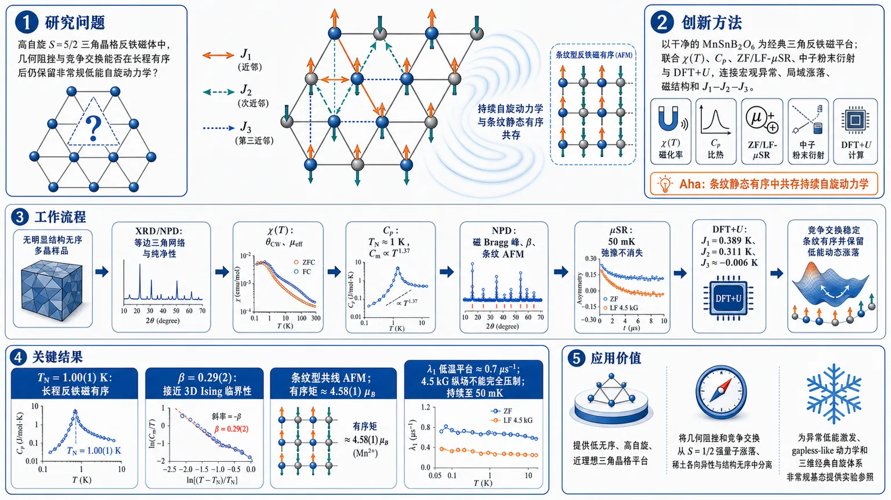
研究问题在一个几乎无结构无序的高自旋 S=5/2 三角晶格反铁磁体中，几何阻挫和竞争交换是否仍能在长程磁有序形成后保留非常规低能自旋动力学，而不是退化为简单的经典静态有序磁体？创新方法以 MnSnB₂O₆ 作为“干净”的经典三角反铁磁平台，联合磁化率、比热、零场/纵场 μSR、中子粉末衍射与 DFT+U 交换常数计算，把宏观热力学异常、局域时间涨落、长程磁结构和微观 J₁–J₂–J₃ 竞争交换连接起来；Aha 点是：即使 S=5/2、量子涨落较弱，条纹型静态反铁磁有序中仍能共存持续自旋动力学。工作流程输入为无明显结构无序的 MnSnB₂O₆ 多晶样品；先用 XRD/NPD 确认 Mn²⁺ 等边三角网络和晶体纯净性，再用磁化率提取 θCW 与有效磁矩，用比热定位 Tₙ≈1 K 和低温 T¹·³⁷ 幂律，用中子衍射解析磁 Bragg 峰、β 指数和 ab 面条纹共线反铁磁结构，用 ZF/LF-μSR 追踪 50 mK 下仍不消失的自旋弛豫，最后用 DFT+U 得到 J₁=0.389 K、J₂=0.311 K、J₃≈−0.006 K，输出“竞争交换稳定条纹有序但保留低能动态涨落”的物理图像。关键结果MnSnB₂O₆ 在 Tₙ=1.00(1) K 进入长程反铁磁有序；中子衍射给出 β=0.29(2)，接近 3D Ising 临界性，磁结构为 ab 面内条纹型共线反铁磁，有序矩约 4.58(1) μB；比热在有序态深处呈 Cm∝T¹·³⁷，偏离常规自旋波行为；μSR 显示 λ₁ 在 Tₙ 附近峰化并在低温保持约 0.7 μs⁻¹ 平台，纵场 4.5 kG 也不能完全压制弛豫，证明静态长程有序与持续自旋动力学共存至 50 mK。应用价值该研究提供了一个低无序、高自旋、近理想三角晶格材料平台，可将几何阻挫和竞争交换的作用从 S=1/2 强量子涨落、稀土各向异性和结构无序中分离出来；它说明经典阻挫磁体也能承载异常低能激发、gapless-like 动力学和非常规临界行为，为寻找新型低温磁性、阻挫动力学和三维经典自旋体系中的非常规基态提供实验参照。第一部分：核心概览
MnSnB₂O₆ 是一种近乎结构无序缺失的 S = 5/2 三角晶格反铁磁体，Mn²⁺ 构成等边二维三角网络并沿 c 轴堆叠。热力学、μSR、中子衍射与 DFT+U 共同表明：体系在 Tₙ ≈ 1 K 进入长程反铁磁有序，但有序态中仍保留 持续自旋动力学 与 非常规低能激发。核心贡献在于证明经典高自旋三角反铁磁体并非简单趋向传统静态有序，而可在竞争交换、几何阻挫与各向异性共同作用下呈现 3D Ising-like 临界性、条纹型共线磁结构、T¹·³⁷ 比热幂律、静态有序与动态涨落共存。该体系为区分几何阻挫效应与 S=1/2 强量子涨落效应提供了干净平台。
---
第二部分：结构化快速回顾
《Coexistence of static order and spin dynamics in an S = 5/2 frustrated triangular antiferromagnet》（None，）
背景
三角晶格反铁磁体是研究几何阻挫、竞争交换、各向异性与非常规低能激发的典型平台。相比 S=1/2 量子体系，S>1/2 经典高自旋体系较少被系统研究，尤其缺乏结构无序低、晶格理想的候选材料。
方法
采用 磁化率、比热、零场与纵场 μSR、中子粉末衍射、DFT+U 第一性原理计算研究 MnSnB₂O₆。DFT 使用 PBE+U，U = 8 eV，交换常数通过 broken-symmetry 能量映射获得。
结果
MnSnB₂O₆ 在 Tₙ ≈ 1 K 出现长程反铁磁有序；Curie–Weiss 温度 θCW = −12.4(2) K，显示主导反铁磁交换。中子衍射得到 β = 0.29(2)，接近 3D Ising 临界指数。磁结构为 ab 面内 stripe 共线反铁磁结构，有序矩约 4.58(1) μB。比热低温呈 Cm ∝ T¹·³⁷，μSR 显示低至 50 mK 仍有持续自旋动力学。
讨论
竞争交换 J₁ = 0.389 K、J₂ = 0.311 K、J₃ = −0.006 K 使体系偏离简单 120° Heisenberg 图像。较强层间 J₂ ≈ 0.8J₁ 部分解除阻挫并稳定共线基态，但低能谱仍因近简并态而被显著重整化。
局限
缺少非磁性同构参照物，晶格比热通过 Debye–Einstein 模型估算；μSR 因 ISIS 脉冲源约 70 ns 有限脉宽无法直接解析快速振荡；交换常数依赖 DFT+U 的 U 选取。
结论
MnSnB₂O₆ 是一种干净的 经典高自旋阻挫三角反铁磁体，展示 静态长程有序、3D Ising-like 临界行为、非常规幂律比热与持续自旋动力学共存，为研究三维经典阻挫磁体中的非常规动力学提供了实验平台。
---
第三部分：逐章节冷凝解析
Abstract
- Classical frustrated triangular antiferromagnets host unconventional low-energy physics
经典高自旋三角晶格反铁磁体被定位为研究竞争交换、各向异性与集体自由度耦合的范式体系；低能物理可包含非常规激发、反常临界行为与持续动态响应。核心表述为：*"Frustrated triangular lattice antiferromagnets in the classical high-spin limit provide a paradigmatic setting in which the interplay of competing exchange interactions, anisotropy, and collective degrees of freedom can lead to unconventional low-energy excitations, anomalous criticality, and persistent dynamical responses."*
- MnSnB₂O₆ provides a nearly perfect S = 5/2 triangular network
Mn²⁺，S = 5/2 构成近乎完美二维三角网络，且无反位无序，成为高自旋三角反铁磁体的干净平台。关键证据为：*"MnSnB2O6, where Mn2+ (S = 5/2) moments form a nearly perfect 2D triangular network without any anti-site disorder."*
- Curie–Weiss analysis identifies dominant antiferromagnetic interactions
磁化率 Curie–Weiss 拟合得到 θCW = −12 K，表明 Mn²⁺ 磁矩之间以反铁磁相互作用为主，并由第一性原理计算支持。原始表述为：*"The Curie–Weiss fit to the magnetic susceptibility yields a moderate Curie–Weiss temperature of −12 K, indicating the dominant antiferromagnetic interactions between Mn2+ moments, which is supported by first-principles calculations."*
- Long-range magnetic order appears near 1 K
比热显示 Tₙ ≈ 1 K 出现长程磁有序，归因于交换耦合诱导的有序化。原文为：*"Specific heat measurements reveal the onset of long-range magnetic order at TN ≈ 1 K."*
- Short-range correlations and unconventional power-law heat capacity indicate nontrivial excitations
Tₙ 以上出现短程关联，有序态深处比热满足 C ∝ T¹·³⁷，偏离常规三维反铁磁自旋波预期，指向非常规低能激发。原始证据为：*"Specific heat exhibits pronounced short-range correlations above TN and an unconventional power-law behavior C ∝ T1.37 deep in the ordered state, suggesting the presence of non-trivial low-energy excitations."*
- μSR confirms order and persistent spin dynamics down to 50 mK
零场 μSR 低至 50 mK 证实 1 K 磁有序，同时探测到与静态磁有序共存的持续自旋动力学。直接证据为：*"Zero-field μSR experiments down to 50 mK confirm the presence of magnetic ordering at 1 K"*，以及 *"The μSR measurements detect persistent spin dynamics coexisting with static magnetic order."*
- Neutron order parameter supports 3D Ising-like antiferromagnetism
中子衍射中序参量随温度演化显示有序态符合 3D Ising-like antiferromagnet。原文为：*"The temperature evolution of the order parameter down to 50 mK in neutron diffraction suggests that the ordered state is consistent with a 3D Ising-like antiferromagnet."*
---
Main text
- Frustrated magnets connect degeneracy, fluctuations, and exotic excitations
阻挫磁体中，阻挫诱导量子涨落、高简并基态流形和集体自由度耦合共同作用，可产生带有奇异低能激发的量子态。原文强调：*"Frustrated magnets, where frustration-induced quantum fluctuations, a highly degenerate ground-state manifold, and interplay between collective degrees of freedom are operative, can host quantum states with exotic low-energy excitations."*
- Triangular-lattice antiferromagnets are prototypical many-body platforms
几何阻挫三角晶格反铁磁体 TLAFs 是实现多体量子相的典型平台。直接表述为：*"geometrically frustrated triangular-lattice antiferromagnets (TLAFs) provide a prototypical platform for the experimental realization of diverse many-body quantum phases."*
- Nearest-neighbor Heisenberg triangular antiferromagnet favors 120° order
典型最近邻 Heisenberg 三角反铁磁模型的基态是 120° 长程磁有序。原文为：*"The canonical nearest-neighbor Heisenberg antiferromagnet on the triangular lattice exhibits 120° long-range magnetic order."*
- S = 1/2 triangular systems can host QSL and field-induced phases
在 S = 1/2 三角体系中，次近邻相互作用引入强量子涨落，可压低有序矩并诱导 量子自旋液体、场诱导自旋向列态、自旋密度波相。原始证据为：*"frustrated TLAFs with next-nearest neighbor interactions on the S = 1/2 system induces strong quantum fluctuations that can suppress the ordered moment and give rise to an array of unconventional phenomena, including quantum spin liquids (QSLs), field-induced spin-nematic states, and spin-density wave phases."*
- Organic triangular salts are benchmark QSL candidates
κ-(BEDT-TTF)₂Cu₂(CN)₃ 与 EtMe₃Sb[Pd(dmit)₂]₂ 被列为 S=1/2 三角晶格 QSL 候选材料。原文为：*"The TLAFs based on organic compounds such as κ-(BEDT-TTF)2Cu2(CN)3 and EtMe3Sb[Pd(dmit)2]2 are some of the potential candidate QSL materials on the S = 1/2 triangular lattice."*
- Rare-earth triangular magnets realize anisotropic effective spin-1/2 physics
稀土三角反铁磁体中，SOC 与 CEF 的相互作用导致交换各向异性；奇数 4f 电子可产生 Jeff = 1/2 Kramers doublet。原文为：*"rare-earth (RE) triangular antiferromagnets provide a promising route for investigating unconventional magnetism, primarily driven by exchange anisotropy arising from the complex interplay between spin-orbit coupling (SOC) and crystal-electric field (CEF) effects."* 以及 *"RE magnets with an odd number of electrons in the 4f shell realize a Jeff = 1/2 Kramers doublet ground state at low temperatures."*
- Higher-spin systems also realize nontrivial many-body states
虽然 S=1/2 TLAF 是 QSL 研究重点，高自旋体系也可呈现非平庸多体态。关键句为：*"While TLAFs on quantum spin-1/2 are prime contenders for QSL physics, recent studies demonstrate that higher-spin systems are equally promising for realizing nontrivial many-body states."*
- J₁–J₂ triangular model has a rich phase diagram
在经典 J₁–J₂ Heisenberg 三角反铁磁模型中，调节 J₂/J₁ 可从 120° Néel 态转向共线态和非公度螺旋态。具体阈值为 J₂/J₁ = 1/8。原文为：*"the conventional 120° Néel state is destabilized at J2/J1 = 1/8 and undergoes a first-order phase transition to a commensurate collinear state and subsequently evolves into an incommensurate spiral state with increasing J2/J1."*
- Magnetic field stabilizes Y, uud, and V phases
外磁场使经典 TLAF 相图更加丰富，可稳定 Y 相、up-up-down uud 相、倾斜 V 相以及 1/3 磁化平台。原文为：*"An applied magnetic field further enriches the phase diagram of classical TLAF, stabilizing exotic magnetic states such as Y, up-up-down (uud), and canted V phases, including the characteristic one-third magnetization plateau."*
- Spin-charge coupling creates multiferroic responses in triangular magnets
非共线 Y 相与 120° 相可诱导多铁性；共线 uud 相和高场斜相也可出现铁电性。原始证据为：*"noncollinear Y and 120° phases give rise to multiferroicity"*，以及 *"ferroelectricity has also been observed in collinear uud and high-field oblique phases."*
- Classical TLAFs remain underexplored due to material scarcity
经典 TLAF 相比量子对应物研究较少，主要原因是理想候选材料稀缺。原文为：*"classical TLAFs are relatively less explored compared to its quantum counterparts due to the scarcity of ideal candidate materials."*
- Disorder-free S > 1/2 triangular antiferromagnets are strategically important
寻找 无无序 S>1/2 TLAF 可帮助分离几何阻挫效应与 S=1/2 强量子涨落效应。原文为：*"the search for promising disorder-free S > 1/2 TLAFs is of significant interest because these materials can stabilize complex many-body phenomena with exotic collective excitations and offer a compelling platform for distinguishing the effects of geometric frustration from those driven by strong quantum fluctuations in their S = 1/2 counterparts."*
- MSBO has an ideal triangular Mn²⁺ network
MnSnB₂O₆ 中 Mn²⁺ S=5/2 离子形成等边三角晶格，沿 c 轴堆叠。原文为：*"Mn2+ (S = 5/2) ions form an equilateral triangular lattice stacked along the crystallographic c-axis."*
- Long-range order near 1 K is established by multiple probes
比热、中子衍射、μSR 均显示 Tₙ ∼ 1 K 长程反铁磁有序。原始表述为：*"The specific heat measurements, complemented by neutron diffraction and μSR probes, establish the onset of long-range antiferromagnetic order at TN ∼ 1 K."*
- Only about 90% magnetic entropy recovered at TN
磁熵在 Tₙ = 1 K 仅恢复约 90% R ln(6)，低于 S=5/2 期望全熵，说明 Tₙ 以上已形成短程自旋关联。原文为：*"only ∼90% of the total magnetic entropy expected for an S = 5/2 system is recovered at TN."*
- Sample is structurally clean within XRD and NPD resolution
多晶 MSBO 通过固相反应制备，晶体结构为 trigonal Rbar3，实验分辨率内无结构无序。证据为：*"The polycrystalline sample of MSBO was synthesized following a solid-state reaction route."* 以及 *"MSBO crystallizes in the trigonal space group Rbar3, without any structural disorder within the experimental (XRD+NPD) resolution."*
- Mn²⁺ behaves as nearly ideal Heisenberg spin
Mn²⁺ 为半充满 3d⁵ 构型，轨道角动量淬灭，近似 S=5/2 Heisenberg 自旋。原文为：*"due to their half-filled 3d5 electronic configuration, can be described as nearly ideal Heisenberg spins with spin quantum number S = 5/2 and a quenched orbital angular momentum."*
- Exchange paths are chemically distinct
层内 J₁ 通过 Mn–O–B–O–Mn，层间 J₂、J₃ 通过 Mn–O–Sn–O–Mn，但键角不同。原文为：*"the intra-layer interactions (J1) proceed via the Mn-O-B-O-Mn exchange path, while inter-layer interactions (J2 and J3) share a common Mn-O-Sn-O-Mn path but differ in bond angles."*
- Magnetic susceptibility gives θCW = −12.4(2) K and μeff = 5.83 μB
在 0.1 T 下测量至 2 K 的磁化率符合 Curie–Weiss 形式，得到 θCW = −12.4(2) K、C = 4.26(5) cm³ K mol⁻¹、χ₀ = 7.70×10⁻⁴ cm³ mol⁻¹；有效磁矩 μeff = 5.83 μB，接近 Mn²⁺ 自旋-only 值 5.92 μB。原始证据为：*"A Curie–Weiss analysis of magnetic susceptibility ... yields a characteristic Curie–Weiss temperature θCW = −12.4(2) K, and Curie constant C = 4.26(5) cm3 K mol−1."* 以及 *"The effective magnetic moment is estimated to be μeff = 5.83 μB, in close agreement with the spin-only value of 5.92 μB expected for high-spin Mn2+."*
- No ferromagnetic component is resolved in M(H)
2 K 五象限 M–H 回线无磁滞、无剩磁，排除显著铁磁成分。原文为：*"The five-quadrant M(H) loop at 2 K shows no hysteresis or remanence, indicating the absence of a sizable ferromagnetic component within the experimental resolution."*
- Specific heat identifies a λ-like transition at 1 K
零场比热出现尖锐 λ-like anomaly，位置 Tₙ ≈ 1 K，标志 Mn²⁺ 长程反铁磁有序。原文为：*"The zero-field specific heat ... reveals a sharp λ-like anomaly at TN ≈ 1 K, signaling the onset of long-range antiferromagnetic order of the Mn2+ moments."*
- Magnetic heat capacity is extracted via Debye–Einstein subtraction
由于缺少非磁性类比物，晶格贡献通过 Debye–Einstein 函数估计并从总比热中扣除。原文为：*"In the absence of non-magnetic analog, magnetic specific heat Cm(T) was obtained by subtracting the lattice contribution, estimated using a Debye–Einstein function, from the total specific heat."*
- Low-temperature Cm follows T¹·³⁷
远低于 Tₙ 时，零场磁比热呈 T¹·³⁷ 幂律，解释为竞争相互作用导致简并态并软化连续波矢范围内的自旋波刚度。原文为：*"The zero-field magnetic specific heat exhibits a power-law dependence T1.37 much below the magnetic transition temperature."* 以及 *"Such unconventional power-law behavior arises from competing interactions that result in degenerate states, softening the spin-wave stiffness over a continuum of wave vectors."*
- Antiferromagnetic order is field-suppressed up to 4 T but survives beyond simple estimate
比热尖峰随场增强至 4 T 向低温移动。简单能量比较给出临界场 HC(0) ≈ 0.25 T，但实验有序相对更强场仍稳定，说明各向异性与竞争交换增强有序态。原文为：*"the sharp anomaly at TN progressively shifts to lower temperatures with increasing field strength upto 4 T"*，以及 *"This yields an estimate of the critical field HC(0) ... ≈ 0.25 T."* 另有解释：*"The presence of anisotropy and competing exchange interaction likely plays a significant role in reinforcing the ordered phase against stronger external magnetic fields (>0.25 T)."*
- High fields generate activated behavior and field-polarized state
8 T 与 10 T 下低温比热快速降至零，可由 Cm ∼ exp(−Δ/kBT) 描述；能隙随场增大，反映场极化态。磁化曲线在 2 K、7 T 以上饱和。原文为：*"With the application of high magnetic fields (μ0H = 8 T and 10 T), the low-temperature specific heat exhibits a rapid suppression towards zero."* 以及 *"yielding field dependent energy gaps that increase with field, reflecting the emergence of a field-polarized state."*
- Neutron diffraction detects magnetic Bragg peaks below 1 K
中子粉末衍射覆盖 0.05–100 K；1.2 K 图谱可用晶体结构精修，Rf = 12.2。低于约 1 K 出现额外 Bragg 峰，归因于长程磁有序。原文为：*"The neutron diffraction patterns for MSBO were recorded between 0.05 and 100 K"*，*"The diffraction pattern measured at 1.2 K can be reasonably well refined ... yielding an Rf-factor of 12.2."*，以及 *"Below ∼1 K, additional Bragg reflections emerge ... which we ascribe to the establishment of the long-range magnetic order."*
- Order parameter gives TN = 1.00(1) K and β = 0.29(2)
Q = 1.184 Å⁻¹ 磁峰积分强度满足 I ∼ (T − Tₙ)²β，得到 Tₙ = 1.00(1) K、β = 0.29(2)。原文为：*"The integrated intensity of the magnetic reflection at Q = 1.184 Å−1 exhibits a clear order-parameter-like response"*，以及 *"TN = 1.00(1) K is the magnetic transition temperature and β = 0.29(2) is the critical exponent."*
- Critical exponent indicates 3D Ising-like universality
β = 0.29(2) 明显低于 3D Heisenberg β = 0.36，接近 3D Ising β = 0.32，说明低温物理由 Ising-like 磁各向异性控制。原文为：*"The value of the critical exponent is significantly lower than that expected for conventional 3D Heisenberg (β = 0.36) and close to that expected for 3D Ising (β = 0.32) universality class."*
- Magnetic propagation vectors are symmetry-related stripe vectors
磁反射可由 (1.5 0 0)、(0 1.5 0)、(1.5 −1.5 0) 波矢描述，表征三角晶格上的共线条纹类有序。原文为：*"The position of the magnetic reflections can be described with the (1.5 0 0), (0 1.5 0), as well as (1.5 −1.5 0) magnetic wave vectors."*
- Representation analysis yields one one-dimensional IRR with three basis vectors
基于这些波矢的表示分析得到相同的一维不可约表示，包含三个基矢；磁胞对应 R-1 磁空间群。原文为：*"The representation analysis based on any of these magnetic wave vectors yields the same one-dimensional irreducible representation (IRR), consisting of three basis vectors"*，以及 *"the magnetic unit cell corresponds to the R-1 magnetic space group."*
- Magnetic moment lies in the ab plane with size 4.58 μB
差分谱 0.05 K − 1.2 K 精修质量较好，Rf = 10.2；得到 ψ₁¹ = 4.58(1)、ψ₁² = 4.58(1)、ψ₁³ 低于灵敏度。有序磁矩分量为 [4.58(1), 4.58(1), 0] μB，大小 4.58(1) μB。原文为：*"A reasonably high quality of the refinement (Rf-factor of 10.2) yielded ψ11 = 4.58(1), ψ12 = 4.58(1), and ψ13 is below the experimental sensitivity."* 以及 *"The corresponding ordered magnetic moment of the Mn ion is thus (ma, mb, mc) = [4.58(1), 4.58(1), 0] μB."*
- Magnetic structure is an in-plane stripe antiferromagnet
精修磁结构显示 ab 面内主要反铁磁条纹结构。原始表述为：*"The corresponding magnetic structure ... reveals a stripe magnetic structure with a predominantly antiferromagnetic ordering within the ab-plane."*
- ZF-μSR shows loss of initial asymmetry across TN
从 1.5 K 冷却至 0.8 K，零场 μSR 初始不对称显著下降，说明 μ 子位置出现与长程有序相关的内磁场。原文为：*"A pronounced reduction in the initial asymmetry is observed upon cooling from 1.5 K to 0.8 K."* 以及 *"This substantial loss of initial asymmetry reflects the onset of internal magnetic fields at the muon site associated with long-range order."*
- Absence of μSR oscillations reflects instrumental time resolution
有序态中未见清晰 μSR 振荡，被归因于 ISIS 脉冲 μ 子源有限脉宽 ∼70 ns，难以解析短时快速弛豫分量。原文为：*"The absence of oscillatory behavior in the ZF-μSR asymmetry in the ordered state can be attributed to the finite pulse width (∼70 ns) of the pulsed muon source (ISIS, UK)."*
- ZF-μSR spectra require two exponential relaxation components
零场谱采用双组分指数函数拟合：A(t)=Abkg + A0[f exp(−λ1t)+(1−f)exp(−λ2t)]；其中 λ1、λ2 为快/慢弛豫率，f = 0.66，背景 Abkg 固定。原文为：*"The ZF spectra are well described by a two-component exponential relaxation function"*，以及 *"f = 0.66 represents the relative weight fraction of the fast-relaxing component."*
- μSR relaxation peaks at TN and remains finite down to 50 mK
λ1 在 Tₙ ∼ 1 K 出现明显峰值，显示自旋涨落临界慢化；不同于常规磁转变，λ1 与 λ2 在 50 mK 仍显著。原文为：*"the fast relaxation rate λ1 exhibits a pronounced peak at TN ∼ 1 K, signaling the slowing down of spin fluctuations and the onset of long-range magnetic ordering"*，以及 *"both relaxation rates remain sizeable down to 50 mK."*
- Persistent dynamics appears as λ1 plateau near 0.7 μs⁻¹
零场 μSR 中，快弛豫率在低温达到约 0.7 μs⁻¹ 平台并保持至 50 mK，类似 Gd₂Sn₂O₇ 中 0.6 μs⁻¹ 至 20 mK 的行为。原文为：*"the fast relaxation rate λ1 reaches a plateau at about 0.7 μs−1 constant down to 50 mK."* 以及 *"This behavior suggests the persistence of low-energy spin dynamics within the magnetically ordered state."*
- Low-temperature λ1 follows a power law with finite intercept
Tₙ 以下 λ1 = a + bTⁿ，其中 n = 3.4、a = 0.7 μs⁻¹；有限截距支持持续动力学。原文为：*"Below TN, the fast relaxation rate follows a power law λ1 = a + bTn with n = 3.4 and the finite value of a = 0.7 μs−1 consistent with persistent dynamics scenario."*
- Gapless modes are favored over gapped spin waves
若存在自旋波能隙 Eg，λ1 可尝试用 T exp(−Eg/T) 拟合，但拟合质量差，说明没有显著能隙，低能激发主要来自 gapless modes。原文为：*"λ1 was also fitted to an exponential form of T exp(−Eg/T); however, the poor fit quality suggests the absence of a sizable gap, and indicates the low energy excitations are mainly due to gapless modes."*
- LF-μSR confirms dynamic fluctuations rather than purely static fields
50 mK 纵场 μSR 在 0–0.45 T / 0–4.5 kG 范围测量；即便 4.5 kG 下不对称仍未完全恢复，λ1、λ2 随纵场单调减小但未完全压制。原文为：*"The LF μSR asymmetry was measured at 50 mK over the field range 0–0.45 T"*，*"The incomplete recovery of the LF-μSR asymmetry spectra at 4.5 kG suggests the persistence of low-energy spin dynamics in the ordered state."*，以及 *"suppression of muon relaxation remains incomplete even at the highest LF of 4.5 kG."*
- Incomplete decoupling is assigned to dynamic fluctuations in AFM order
纵场下未完全 decoupling 不是 Mn 静态局域场造成，而归因于 AFM 有序基态中的动态磁涨落。原文为：*"The incomplete muon decoupling in the external LF does not originate from the internal static fields due to the Mn local moments."* 以及 *"persistent muon-spin relaxation ... could be attributed to the presence of dynamic magnetic fluctuations in the AFM-ordered ground state."*
- DFT+U identifies an antiferromagnetic insulator with Eg = 2.18 eV
PBE+U = 8 eV 计算显示 MSBO 是反铁磁绝缘体，带隙 2.18 eV，Mn d 态被关联效应劈裂成 Hubbard 带。原文为：*"Density functional theory calculations (PBE + U = 8 eV on Mn 3d) confirm MSBO as an antiferromagnetic insulator with Eg = 2.18 eV, where correlations split Mn d states into Hubbard bands."*
- Exchange constants are competing and quasi-three-dimensional
broken-symmetry 分析给出 J1 = 0.389 K 层内交换，Mn–Mn 距离 4.77 Å；J2 = 0.311 K 层间交换，距离 5.82 Å，约 0.8J1；J3 = −0.006 K，距离 7.52 Å，弱铁磁。原文为：*"Exchange interactions ... yield competing energy scales J1 = 0.389 K (intra-layer, 4.77 Å), J2 = 0.311 K (inter-layer, 5.82 Å, ≈0.8 J1), and J3 = −0.006 K (7.52 Å, weakly ferromagnetic)."*
- Mean-field θCW matches experiment and J2 stabilizes collinear order
这些交换常数在平均场近似下给出 θCW ≈ −12 K，与实验一致；较强 J2 部分解除阻挫并稳定共线磁基态。原文为：*"These exchange parameters yield the expected experimental value for CW temperature of θCW ≈ −12 K following mean-field approximation, and the relatively strong J2 interaction partially relieves the frustration, thereby stabilizing a collinear magnetic ground state."*
- Spin-wave velocity is strongly reduced
用 Jₑff = 0.35 K、z1 = z2 = 6、S = 5/2 估计自旋波速度 c ∼ 1.9×10² m/s，低于 NiGa₂S₄ 中阻挫重整化值 8.5×10² m/s，说明低能态密度增强。原文为：*"Using dominant J1 and J2, Jeff = ... = 0.35 K (z1 = 6, z2 = 6) ... resulting c ∼ 1.9 × 10² m/s."* 以及 *"The relatively reduced value of c in MSBO suggests an enhancement of the density of low-energy states."*
- T¹·³⁷ specific heat reflects renormalized spin-wave spectrum
低温比热的 T¹·³⁷ 幂律与近简并态导致的自旋波谱重整化相关。原文为：*"It suggests renormalization of the spin-wave spectrum in the presence of nearly degenerate states arising from magnetic frustration."*
- Static order and persistent spin dynamics coexist in the ground state
μSR 证明有序态中静态长程 AFM 与持续自旋涨落共存，类似 NaCrO₂ 与 FeTe₂O₅Br。原文为：*"μSR experiments probe an unconventional ground state marked by the coexistence of static long-range antiferromagnetic order and persistent spin dynamics down to 50 mK with non-trivial low-energy excitations."*
---
Acknowledgements
- Funding sources support Indian, Slovenian, and UK components
资助来源包括 ANRF/DST India、Slovenian Research Agency program No. P1-0125、EPSRC UK Grant No. EP/W00562X/1。原文为：*"P.K. acknowledges the funding by the Anusandhan National Research Foundation (ANRF), Department of Science and Technology, India through Research Grants."*、*"M.P. acknowledges the funding by the Slovenian Research Agency (program No. P1-0125)."*、*"D.T.A. would like to thank EPSRC UK for the funding (Grant No. EP/W00562X/1)."*
---
Data availability
- Data are available upon reasonable request
数据可向通讯作者合理申请。原文为：*"The data that support the findings of the current study are available from the corresponding author upon reasonable request."*
---
第四部分：深度理解与语言支持
1. 术语解析
- Persistent spin dynamics
字面为“持续自旋动力学”，在 μSR 语境中指低温有序态内仍存在时间依赖的局域磁场涨落，而不是所有自旋完全冻结。关键证据是低温 λ1 ≈ 0.7 μs⁻¹ 平台和纵场无法完全 decouple。它不等同于无序顺磁态，而是 静态长程有序背景上的残余低能涨落。
- Static magnetic order
指中子衍射可探测到的空间周期性磁矩排列，表现为磁 Bragg 峰。这里的静态是相对于中子衍射时间尺度而言；μSR 仍可同时看到慢涨落。因此“static”不意味着所有微观自由度完全静止。
- 3D Ising-like universality class
“3D Ising-like”不是说自旋严格只有上下两个方向，而是临界行为接近三维 Ising 普适类。证据是 β = 0.29(2) 接近 3D Ising β ≈ 0.32，偏离 3D Heisenberg β ≈ 0.36。这通常意味着存在显著磁各向异性，使连续旋转对称性被有效降低。
- Order parameter-like response
指磁 Bragg 峰强度随温度接近相变点时按幂律增长。由于磁衍射强度与有序磁矩平方成正比，所以拟合形式含 2β：I ∼ (T − Tₙ)²β。这里不是任意经验曲线，而是临界现象中的序参量标度。
- Softening of the spin-wave stiffness
自旋波刚度软化表示低能激发代价降低，更多波矢附近可产生低能模。比热从常规激发形式转为 T¹·³⁷ 这种异常幂律，说明低能态密度被显著增强。
2. 疑难查证
- 为什么 S=5/2 高自旋体系仍能有“非常规”低能动力学？
大自旋通常意味着量子涨落较弱，更容易形成经典长程有序。但几何阻挫与竞争交换可以制造大量能量相近的候选态。MSBO 中 J1 = 0.389 K 与 J2 = 0.311 K 接近，且三角几何天然阻挫，使体系虽形成条纹 AFM 有序，却仍存在低能重排通道。μSR 看到的低温有限弛豫率就是这些低能通道在时间域中的表现。
- 为什么出现条纹结构而不是典型 120° 结构？
理想最近邻 Heisenberg 三角反铁磁体偏向 120° 有序；但 J₂/J₁ ≈ 0.8 的有效竞争与层间耦合显著改变能量景观。理论上 J₁–J₂ 三角模型在 J₂/J₁ > 1/8 后 120° 态可被破坏并转向共线态或螺旋态。MSBO 中较强层间交换部分解除阻挫，稳定了 stripe collinear AFM。
- 为什么中子衍射说静态有序，μSR 又说持续动力学？矛盾吗？
不矛盾。中子衍射主要探测空间周期平均结构，看到 Bragg 峰说明存在长程静态磁矩排列。μSR 对局域磁场时间涨落极敏感，可在同一有序相中探测到残余动态涨落。MSBO 同时满足：有磁 Bragg 峰和 λ1 低温不归零，因此是“静态有序背景 + 动态低能涨落”。
- 为什么 β = 0.29(2) 被解释为 3D Ising-like？
三维 Heisenberg 模型的 β 约 0.36，三维 Ising 的 β 约 0.32。实验值 0.29(2) 在误差和材料复杂性下更接近 Ising，说明临界涨落不是完全各向同性的 O(3) Heisenberg 类型。中子精修显示磁矩主要在 ab 面，且磁结构各向异性明显，因此临界行为被磁各向异性推向 Ising-like。
---
第五部分：创新评估与关联
1. 创新性判断
- 高自旋三角反铁磁体中的“静态有序—持续动力学共存”被明确实验证实
过去 2–5 年内，三角晶格研究大量集中在 S=1/2 量子自旋液体、稀土有效 Jeff=1/2 各向异性磁体、场诱导量子相。MSBO 的新颖性在于：在 S=5/2、轨道角动量近似淬灭、量子涨落相对较弱的经典体系中，仍发现低至 50 mK 的持续自旋动力学。
- 材料平台更干净，便于剥离无序效应
许多候选阻挫磁体受反位无序、结构畸变或稀土 CEF 复杂性影响。MSBO 在 XRD+NPD 分辨率内无结构无序，Mn²⁺ 构成近乎理想三角网络，使异常动力学更能归因于 几何阻挫、竞争交换和各向异性，而非晶格无序。
- 同时获得热力学、局域动力学、长程磁结构与微观交换参数
仅凭比热或磁化率难以区分短程关联、能隙激发与静态有序。该研究结合 比热 T¹·³⁷、μSR 低温有限 λ、NPD β=0.29(2)、DFT J₁/J₂/J₃，形成从微观交换到宏观临界行为的闭环证据。
- 将经典 TLAF 从“简单有序磁体”扩展到“非常规动力学平台”
传统预期中，S=5/2 体系更接近经典极限，应形成较常规的磁有序和自旋波激发。MSBO 显示即使在经典极限，竞争交换与三角堆叠也能产生 低自旋波速度 c ∼ 1.9×10² m/s、异常比热幂律、gapless-like μSR 动力学，拓展了经典阻挫磁体的物理边界。
- 解决的关键问题
前人难以回答：高自旋、低无序、近 Heisenberg 的三角反铁磁体中，几何阻挫是否仍能单独驱动非常规低能动力学？MSBO 给出肯定答案：即使存在明确长程条纹反铁磁有序，阻挫与竞争交换仍可保留低能动态自由度。
-
19
📊 含图深析
📄 摘要：构建 Scholar-India-ML 数据集，覆盖 Google Scholar 中以 machine learning india 检索得到的 480 名印度机器学习研究者。剔除 2 个异常账户后，478 人合计 152 万次引用，均值 3173、中位数 1642、Gini 系数 0.53，显示引用分布中等到高度集中。
💡 亮点：该文用 478 名研究者和 152 万次引用刻画印度机器学习学术结构。Gini 系数 0.53 表明顶端引用集中明显，属于 AI 科研生态的计量分析。
📖 展开分析 + 配图
研究问题印度机器学习领域的高引学者主要分布在哪些机构？他们的引用影响力如何集中？这些学者的研究发展轨迹呈现出怎样的结构特征？画面可呈现为“印度地图 + 机器学习节点 + 高引学者头像群 + 引用流量柱状图”。创新方法论文的 Aha 点是从 Google Scholar 作者搜索中专门构建“Scholar-India-ML”印度机器学习高引学者数据集，以作者为分析单位，而不是只看论文或期刊；通过总引用、均值、中位数和 Gini 系数，把印度机器学习学者群体的影响力集中度可视化为“金字塔式引用分布”。工作流程输入 Google Scholar 搜索关键词“machine learning india”；抓取候选作者；按总引用数筛选出 480 名研究者；剔除 2 个异常账户；形成 478 人的 Scholar-India-ML 数据集；计算总引用、人均引用、中位数和 Gini 系数；输出印度机器学习高引学者的机构、引用模式与研究轨迹分析图谱。关键结果最终识别 478 名印度机器学习相关高引研究者，总引用量达到 152 万；人均引用数为 3173，中位数为 1642；Gini 系数为 0.53，说明引用影响力呈中高程度集中，少数学者占据显著引用优势；数据清理中剔除了 2 个异常账户，提高了结果可信度。应用价值该研究为理解印度机器学习科研版图提供作者级证据，可用于识别核心学者、优势机构和引用影响力结构；对科研评价、人才发现、机构战略布局、国家 AI 研究能力评估具有参考价值，适合呈现为“印度 AI 影响力仪表盘”。核心概览
本文属于科学计量学/文献计量与机器学习研究生态分析方向。研究基于 Google Scholar 构建印度机器学习高被引学者数据集，分析机构、引用分布与研究轨迹，但摘要仅给出数据集构建和引用集中度结果。
方法要点
- 以 Google Scholar 中“machine learning india”标签为检索入口，获取相关研究者。
- 按研究者终身引用数排序，聚焦高被引学者群体。
- 构建 Scholar-India-ML 书目数据集。
- 剔除 2 个异常账号，以减少数据噪声或异常影响。
- 使用总引用、均值、中位数、Gini 系数等指标刻画引用分布与集中度。
- 摘要标题提到机构、引用模式和研究轨迹分析，但具体分析方法摘要未详述。
关键结果
- 最终数据集包含 478 名研究者。
- 这些研究者总引用数为 152 万。
- 平均引用数为 3173。
- 引用数中位数为 1642。
- Gini 系数为 0.53。
- 作者据此认为印度机器学习相关高被引学者的引用分布呈“中高”集中度。
- 关于具体机构分布、引用模式细节和研究轨迹变化，摘要未详述。
创新性判断
- 可能的新颖点在于构建了面向“印度机器学习研究者”的 Google Scholar 书目数据集 Scholar-India-ML，这在区域性机器学习科研生态研究中具有一定数据资源价值。
- 相比一般文献计量研究，本文似乎以“学者”为单位，而非仅以论文或机构为单位，分析高被引研究者的引用集中情况。
- 使用 Google Scholar 标签和终身引用排序来识别研究者群体，可能提供了不同于 Web of Science、Scopus 等数据库的视角，但其准确性和覆盖偏差摘要未详述。
- 标题显示论文还关注机构和研究轨迹，若全文确有系统分析，可能体现对印度机器学习研究版图的综合刻画；但摘要未给出相关结果，因此创新性强弱无法充分判断。
-
20
📊 含图深析
📄 摘要：提出联合 EEG-fMRI 生成对抗模型，用于认知任务中多模态脑活动模式模拟。相较只合成 EEG 或 fMRI 的单模态方法，该模型面向跨模态依赖建模，可用于数据增强、隐私保护、方法基准测试和虚拟实验；摘要未给出网络结构细节和定量指标。
💡 亮点：联合 GAN 同时生成 EEG 与 fMRI，目标是保留认知任务中的跨模态相关性。该工作虽偏神经影像，但体现多模态科学数据生成的通用趋势。
📖 展开分析 + 配图
研究问题如何在同一生成框架中同时模拟 EEG 的高速时间动态与 fMRI 的空间脑区活动，并让两种神经信号在同一认知任务下保持跨模态一致，而不是各自孤立生成。创新方法提出基于对抗学习的 EEG-fMRI 联合生成模型：生成器同时产生成对的 EEG 与 fMRI 脑活动模式，判别器推动生成样本逼近真实多模态神经数据；核心 Aha 点是显式学习 EEG 与 fMRI 之间的跨模态依赖，使生成脑信号不仅真实，还在时间-空间神经表征上相互匹配。工作流程输入认知任务条件或潜在噪声表示，经多模态生成器映射为联合脑活动样本；模型同步生成 EEG 波形模式与 fMRI 脑区激活图；判别器比较真实 EEG-fMRI 配对与生成配对；通过对抗训练反复优化，最终输出可用于认知任务模拟的成对多模态神经数据。关键结果模型被用于生成联合 EEG-fMRI 脑活动模式，突出优于单独生成 EEG 或 fMRI 的思路：生成结果包含跨模态依赖与多模态一致性。摘要未提供具体定量指标、对比数值或下游任务性能提升，因此可视化重点应呈现“联合生成”“成对脑信号”“跨模态一致”而非具体百分比提升。应用价值可为认知任务模拟提供可控的虚拟脑活动样本，缓解真实 EEG-fMRI 采集成本高、样本少和隐私敏感的问题；生成数据还可用于神经解码算法的数据增强、隐私保护共享以及多模态脑计算模型的基准测试。核心概览
该论文属于脑影像/神经信号生成建模方向，提出一种联合 EEG–fMRI 生成对抗模型，用于模拟认知任务下的跨模态脑活动信号，服务于数据增强、隐私保护和虚拟实验等场景。
方法要点
- 使用生成对抗学习框架同时合成 EEG 与 fMRI 信号。
- 模型目标是捕捉 EEG 与 fMRI 之间的跨模态依赖关系。
- 面向认知任务场景进行脑活动模式模拟。
- 应用定位包括数据增强、隐私保护、方法基准测试和虚拟实验。
- 与既有单一模态生成方法形成对比，强调联合多模态生成。
- 具体网络结构、损失函数、训练数据、任务类型和评估指标摘要未详述。
关键结果
- 摘要明确称该方法可同时合成 EEG 和 fMRI 信号。
- 摘要指出模型旨在捕捉跨模态依赖。
- 摘要认为该模型可用于数据增强、隐私保护、方法基准和虚拟实验。
- 摘要未给出定量实验结果、对比性能或验证数据，因此无法判断实际生成质量和优于基线的程度。
创新性判断
- 可能的新颖点在于从单一模态脑信号生成扩展到 EEG–fMRI 联合生成，强调同时建模电生理与血氧动力学信号。
- 另一潜在创新是将跨模态依赖显式作为生成目标，用于认知任务脑活动模拟。
- 相较仅生成 EEG 或仅生成 fMRI 的方法，该工作可能更适合多模态脑成像数据增强与虚拟实验。
- 但具体创新幅度取决于模型结构、跨模态约束设计和实验验证，摘要未详述，无法作更强判断。
-
21
📄 摘要：提出 TSPIN，用于磁性机器学习势描述的耦合自旋-晶格体系正则系综与等温等压系综采样。针对 Landau-Lifshitz-Gilbert 自旋-晶格动力学固定局域磁矩且每步需 O(N) 次势评估、混合分子动力学/蒙特卡洛采样昂贵且 NPT 不严格的问题，TSPIN 将自旋变量纳入可扩展热力学采样框架。
💡 亮点：TSPIN 把高精度磁性机器学习势转化为可扩展 NVT/NPT 有限温采样工具。它针对自旋-晶格热力学的计算瓶颈，连接第一性原理精度与大体系磁热性质。
-
22
📄 摘要：用机器学习多体势研究带电胶体原始模型中的气-液自旋odal不稳定性。针对低盐高电荷胶体中类电荷吸引的争议，作者指出由低价模拟外推到实验高价区并不可靠；气-液自旋odal只在原始模型强耦合条件下出现。
💡 亮点：机器学习多体势显示带电胶体的气-液自旋odal仅限强耦合原始模型。结果约束了类电荷吸引从低价模拟外推到高价实验胶体的适用性。
-
23
📄 摘要：面向光学与合成孔径雷达卫星图像洪水识别，引入拓扑信息神经网络。工作基于 SEN12-FLOOD 数据集和 ResNet-50 图像特征背景，针对云层遮挡光学图像导致的检测困难，将拓扑先验用于跨模态洪水区域判别。
💡 亮点：拓扑约束被并入光学/SAR 洪水检测网络，以缓解云遮挡和跨传感器不一致。虽然应用不属于凝聚态材料，但体现了结构先验在科学图像识别中的可迁移价值。
-
24
📄 摘要：提出 fTNN，一种确定性张量神经网络子空间方法，用于有界区域分数阶拉普拉斯问题，示例包括分数阶 Poisson 方程和含时分数阶对流-扩散方程。方法采用几何自适应积分分裂和空间依赖近场半径，将算子分为奇异近场、规则内部远场和解析外部远场三部分，并对奇异积分作专门处理。
💡 亮点：fTNN 用张量子空间和几何自适应积分处理分数阶拉普拉斯的非局域奇异性。它是面向分数阶 PDE 的确定性科学机器学习求解器。
-
25
📄 摘要：提出神经迁移统一框架 NTU，用于构建容错量子计算中的高容量基础解码器。针对大码距下 syndrome 生成和神经优化成本急剧增加的问题，NTU 通过对齐不同码距或噪声条件下的解码任务，提高大规模量子纠错神经解码的训练效率。
💡 亮点：NTU 将不同解码任务对齐，降低基础神经解码器在大码距量子纠错中的扩展成本。该方法体现了迁移学习在物理约束机器学习任务中的效率优势。
-
26
📄 摘要：用机器学习势分子动力学系统表征钠二硅酸盐、四硅酸盐和六硅酸盐熔体在多温度下的动态非均匀性。通过纳秒尺度均方位移和时间相关函数分析多组分氧化物玻璃中的空间迁移率差异；钠的自 van Hove 函数在所研究时间尺度内显示非均匀迁移特征。
💡 亮点：机器学习势把钠硅酸盐熔体动力学推进到纳秒尺度，并分辨钠离子迁移的空间非均匀性。该结果有助于理解氧化物玻璃中组成依赖的离子输运。
-
27
📄 摘要：提出 Mesh-RL，借鉴有限元与区域分解思想，将大规模或稀疏奖励环境划分为重叠子网格，并施加边界一致的时序差分更新。该框架允许局部学习，同时保持全局价值传播一致性，缓解传统强化学习中奖励信息只在状态空间局部缓慢扩散的问题。
💡 亮点：Mesh-RL 用重叠区域分解加速稀疏奖励下的价值传播。其边界一致时序差分更新把数值 PDE 的网格思想引入强化学习。
-
28
📄 摘要：题名显示该文构建面向全固态锂离子电池稳定界面设计的机器学习框架，目标是筛选或预测电极/固态电解质界面的稳定性。摘要信息仅列出期刊 EarlyView，未给出模型类型、数据规模、性能指标或候选材料结论，因此不能判断具体数值结果。
💡 亮点：该工作聚焦用机器学习设计全固态锂离子电池稳定界面。若包含可靠界面反应与稳定性预测，将直接服务固态电池材料组合筛选。
-
29
📄 摘要：在 AI 曾预测 PtPb3Bi 为超导体的背景下，合成并发现 MPb4−xBix（M=Au、Pd、Rh）系列超导体，PtPb3Bi 属于该结构族。M=Ni 时因半径显著较小，结构坍缩为 Pb 取代 NiBi3 型；Au、Pd、Rh 化合物中 x 随 M 改变以维持总价电子数。
💡 亮点：PtPb3Bi 结构型被扩展到 Au、Pd、Rh 铅铋化物超导体，验证 AI 预测附近的结构化学空间。价电子计数和 M 位半径共同控制相稳定性，为超导材料发现提供可解释规则。
-
30
📄 摘要：以 Ni-Cr/NiO 多相金属氧化物纳米颗粒为模型，结合气相合成、磁性表征和第一性原理辅助自旋动力学模拟，研究铁磁-反铁磁界面交换偏置。结果显示交换偏置不只由相组成决定，还受纳米尺度相分布和界面结构支配。
💡 亮点：Ni-Cr/NiO 纳米颗粒中，交换偏置由相的纳米空间分布而非简单组分比例控制。实验与第一性原理辅助自旋动力学结合，揭示复杂多相磁纳米结构的界面起源。
-
31
📄 摘要：研究磁性 Kohn-Sham DFT 自洽场迭代中因介电矩阵小特征值导致的收敛困难，这些小特征值常与磁性电子相变相关。提出受 Stoner 模型启发的新预条件方案，基于忽略轨道变化的非相互作用磁化率，并展示其改善磁性体系自洽收敛的效果。
💡 亮点：面向磁性 DFT 的 Stoner 型预条件器直接针对磁相变附近的介电小特征值。该方法有望提升复杂磁材料第一性原理计算的稳健性和自动化程度。
-
32
📄 摘要：针对一维量子多体态的经典模拟，证明当 Rényi 纠缠熵 Rα（α<1）满足面积律时，可用矩阵乘积态以常数键维逼近所有局域性质到精度 δ。结论把局域可观测量近似所需参数数目与纠缠面积律直接联系，强调键维可不随系统尺寸指数增长。
💡 亮点：一维体系中，Rα 面积律足以保证常数键维矩阵乘积态准确再现局域性质。该结果给出张量网络模拟局域物理量的严格复杂度依据。
-
33
📄 摘要：研究立方晶格中沿晶轴平行施加电场与磁场的电子态。双场使电子在三维中受限，经典轨道位于有限圆柱面；量子极限下能谱形成三维 Hofstadter 蝴蝶，谱中心有等间距共振、边界附近有离散能级。费米能位于能隙时出现三维霍尔电导量子化。
💡 亮点：平行电磁场通过 Wannier-Stark-Landau 局域化在三维立方晶格中产生量子霍尔响应。三维 Hofstadter 谱与能隙霍尔电导把高维晶格输运与强场局域化相连。
-
34
📄 摘要：围绕磁性拓扑绝缘体中磁序与能带拓扑的耦合，建立磁点群对称性框架，说明连续面内自旋旋转可可逆切换拓扑态。该机制不依赖磁相变或完全反转磁化，所需外场低于传统翻转方案，并具备连续可调的拓扑控制自由度。
💡 亮点：通过面内自旋角度而非磁化翻转来切换磁性拓扑绝缘体的拓扑态。对称性判据使低场、连续拓扑调控成为可设计目标。
-
35
📄 摘要：提出用反对易量子自旋液体构造拓扑子系统码的框架。规范模型可视为空间改造的环面码，但不再是稳定子码；其大量局域守恒算符彼此反对易，导致广延基态简并。该简并被解释为量子纠错码中的子系统自由度。
💡 亮点：把反对易局域守恒量的自旋液体转化为拓扑子系统码。该框架将环面码结构推广到非稳定子情形，扩展了拓扑量子纠错的模型库。
-
36
📄 摘要：采用自洽 Keldysh-Nambu 准经典理论，研究洁净 d 波超导中的光致静态序参量修正与三次谐波产生。通过非平衡 Eilenberger 方程微扰求解 Keldysh 格林函数；在接近临界温度且取能隙 Δ 领先阶时，得到配对振幅光致修正和非线性电磁响应的统一表达。
💡 亮点：同一套 Keldysh-Eilenberger 微扰框架处理 d 波超导的 Eliashberg 效应与三次谐波。结果把节点配对对非平衡光响应的影响写入自洽准经典理论。
-
37
📄 摘要：用散射理论求解时变薛定谔方程，分析并联双量子点中单个量子点受交流场照射时的光子辅助隧穿。单量子点能级 ε(t)=ε0+eVAC cosωt，与两端电极耦合 Γ；共振经由极化子能级 ε0+Nħω（N=0,±1,±2 等）发生，并进一步用于双量子点干涉输运。
💡 亮点：散射理论给出交流驱动量子点中 ε0+Nħω 极化子通道的隧穿共振。并联双量子点几何可用于解析光子辅助隧穿与干涉效应的耦合。
-
38
📄 摘要：在 128° Y 切 LiNbO3 上室温磁控溅射连续 Ni 薄膜，研究衬底诱导面内单轴磁各向异性的温度依赖。超薄未退火膜磁化强烈依赖温度，并在低温出现非常规磁滞支交叉；退火膜在测试温区未见支交叉，表明相关机电耦合或应变机制被抑制。
💡 亮点：Ni/LiNbO3 超薄膜的面内各向异性可由温度和退火历史显著调控，未退火样品出现低温磁滞支交叉。结果指向压电衬底-磁薄膜界面应变在声自旋电子学中的关键作用。
-
39
📄 摘要：在 Y3Sc2Ga3O12 衬底 YIG 薄膜上直接制备超导微波谐振器，实现传播自旋波与微波光子的强耦合。Damon-Eshbach 与反向体自旋波模式的耦合强度均超过磁振子和光子阻尼率；Damon-Eshbach 构型中还观测到混合磁振子模式的非互易自旋波辐射。
💡 亮点：YIG-超导谐振器中传播自旋波而非局域均匀模进入强耦合区。双类型自旋波模式和非互易辐射把片上磁振子学、微波量子电路与方向性信号传输连接起来。
-
40
📄 摘要：用自旋群分析铁电交替磁体中的时间反演奇磁自旋霍尔效应。铁电极化翻转可改变非相对论自旋劈裂，使倒空间中自旋上下通道角色互换，从而在不依赖时间反演操作的情况下反转时间反演奇自旋电导极性。
💡 亮点：铁电交替磁体中，电场切换极化即可翻转磁自旋霍尔响应。该机制把非相对论自旋劈裂、铁电开关和自旋流极性直接相连，给可重构自旋电子器件提供具体对称性路径。
-
41
📄 摘要：研究线偏振光驱动二维 d 波交替磁拓扑绝缘体的本征热输运和 Floquet 拓扑。通过解析高频有效哈密顿量给出 Berry 曲率闭式公式，计算反常霍尔、能斯特、热霍尔及自旋分辨响应；线偏振光可破坏连接自旋扇区的对称性，诱导拓扑相变和反常热输运。
💡 亮点：二维 d 波交替磁中，线偏振光即可重构 Berry 曲率和自旋分辨热输运。与常规反铁磁不同，交替磁的自旋扇区对称性可被光场选择性打破。
-
42
📄 摘要：在单轨道扩展 Hubbard 模型中展示交替磁可由电子关联自发产生，而非必须依赖多轨道交错轨道序或外加局域结构各向异性。该相具有补偿零净磁化和非相对论动量依赖自旋劈裂，说明最小单轨道关联模型也能容纳交替磁序。
💡 亮点：单轨道扩展 Hubbard 模型即可自发形成补偿交替磁和动量依赖自旋劈裂。结果把交替磁的微观起源推进到更小的强关联模型层级。
-
43
📄 摘要：将核磁共振中的完整 Floquet 空间形式推广到周期驱动耦合电子自旋。模型含静磁场 B0、横向振荡场 B1、各向同性交换 J 和 Dzyaloshinskii-Moriya 手性交换 DMI，可超越近似 Floquet 工程描述驱动自旋动力学，面向自旋电子学相干控制。
💡 亮点：完整 Floquet 空间方法被用于含 J 与 DMI 的驱动电子自旋对。它给手性自旋体系的相干操控提供比高频近似更系统的建模框架。
-
44
📄 摘要：围绕光自旋角动量与轨道角动量的自发耦合，探讨磁振子如何在自旋-轨道耦合光场中产生光学涡旋。工作关注空间非对称光场的材料与构型来源，以及由磁激发诱导的自旋-轨道光学转换，面向通信、传感和量子控制中的涡旋光操控。
💡 亮点：磁振子被用作产生光学涡旋和触发光自旋-轨道耦合的动态源。该方向把磁振子学与结构光场连接，为自旋激发控制光角动量提供实验路径。
-
45
📄 摘要：在 ITO 缓冲 YSZ 衬底上外延生长 Y:HfO2，初始以单斜非极性相为主。沉积后在 N2 中 900 °C 快速热退火引入氮阴离子掺杂，使体系从非铁电相转变为铁电相，区别于常用阳离子掺杂和氧空位稳定正交铁电相的路线。
💡 亮点：Y:HfO2 外延膜可通过 900 °C N2 快速退火实现氮掺杂诱导的非铁电到铁电转变。阴离子化学为 HfO2 铁电相稳定提供了不同于阳离子掺杂的调控旋钮。
-
46
📄 摘要：新闻报道 Berkeley Lab 针对手性二维金属卤化物钙钛矿开展数据驱动优化。该类材料面向利用电子自旋的自旋光电子学，但性能重复性不足；报道称方法识别并建模关键合成参数，用于优化器件相关表现，未给出具体数值指标。
💡 亮点：手性二维金属卤化物钙钛矿的自旋电子性能被纳入数据驱动合成参数优化。亮点在于把实验合成变量建模为可预测路线图，以提高自旋光电子材料的一致性。
-
47
📄 摘要：Science Advances 题录报道铁电畴的纳米尺度摩擦成像，作者来自铁电畴、扫描探针与力学建模方向。可确定的要点是利用摩擦对比解析铁电畴结构；原始摘要未给出材料体系、空间分辨率或定量摩擦系数等数值。
💡 亮点：纳米摩擦成像被用于读取铁电畴，为畴壁力学和极化相关表面耗散提供局域探针。题录未披露材料和定量指标，需结合正文判断其对铁电畴表征的实际分辨能力。
-
48
📄 摘要：讨论窄带体系磁性由电子关联、量子几何与能带色散共同决定的问题。作者比较窄带模型中铁磁与反铁磁基态的竞争，聚焦量子几何倾向与色散能量之间的平衡，回应为何不同窄带模型可分别稳定铁磁或反铁磁。
💡 亮点：窄带磁性不只由带宽或相互作用强度决定，量子几何与残余色散的竞争可选择铁磁或反铁磁。该判据直接关联莫尔材料、平带体系和强关联拓扑能带的磁基态设计。
-
49
📄 摘要：研究自旋极化电流驱动下反铁磁畴壁的轮廓与动力学。面内极化可产生传播畴壁，垂直极化则导致进动动力学；这种依赖电流极化方向的行为不同于铁磁畴壁，给出可调控反铁磁畴壁运动的理论描述。
💡 亮点：反铁磁畴壁在自旋轨道力矩下可在传播与进动之间由电流极化切换。该结果为高速反铁磁存储中的畴壁轨迹设计提供了具体动力学规则。
-
50
📄 摘要：把单细胞藻类趋光从经验性 run-tumble 刺激响应改写为主观信息驱动的传感-运动过程。框架将部分可观测马尔可夫决策过程与生化反应网络连接，用化学动力学实现类似强化学习的好奇心驱动探索，以处理噪声和不完整光信号下的环境采样。
💡 亮点：该工作把 POMDP 强化学习映射到化学反应网络，并用于解释藻类趋光。它把生化动力学与信息驱动探索相连，拓展了可编程化学智能模型。
-
51
📄 摘要：针对最大团问题不存在单一算法在各类图实例上最优的现象，构建实例感知算法选择框架。方法结合传统机器学习与图神经网络，建立基准数据并设计双通道混合神经结构，从图实例特征预测更合适的最大团求解算法。
💡 亮点：最大团求解从固定算法转向按图实例自适应选择，双通道模型同时利用手工特征和 GNN 表征。该思路可迁移到材料图搜索、构型优化和组合科学计算中的算法调度。
-
52
📄 摘要：提出基于闭合再入环 D↔I 的通用人工智能架构，区别于无环前馈网络。作者设定结构环 C≥1 与自维持放大 ρ>1，并声称可导致自模型、工具性自我保存和非编程目标行为；目标以非文本 D 向量编码，而非普通语言提示。
💡 亮点：论文把闭合再入环视为主体性和内生安全的结构基础，并用 C≥1、ρ>1 描述自维持条件。其内容偏 AGI 架构哲学，与材料科学联系较弱，但涉及下一代 AI 系统安全假设。
-
53
📄 摘要：面向气体吸附、酶动力学、剂量响应和原子层沉积单周期生长等自限制饱和曲线，提出带形状约束的贝叶斯主动学习。普通平稳核高斯过程在稀疏噪声数据上会产生不物理下凹，破坏曲线与不确定度估计；该方法显式约束从零单调上升到平台的响应形状，用少量高成本测量定位曲线。
💡 亮点：形状约束高斯过程避免稀疏数据下的非物理饱和曲线振荡。该主动学习策略适合 ALD 生长、吸附与反应动力学等昂贵实验的序贯设计。
-
54
📄 摘要：评估 Kolmogorov-Arnold 网络在气动预测中的表现，并与多层感知机和图神经网络比较。KAN 通过可训练激活函数而非传统仿射变换系数实现函数逼近，具有 Kolmogorov-Arnold 定理支撑的通用逼近能力；论文检验其在气动任务中是否优于深度 MLP 与 GNN。
💡 亮点：气动预测基准用于检验 KAN 是否真正优于 MLP/GNN。结果导向关注可训练激活函数架构在科学机器学习中的适用边界。
-
55
📄 摘要：面向激光深熔焊质量评估，构建多任务深度学习模型，从 CMOS 相机采集的熔池图像预测熔透状态、熔深和焊缝形貌。模型融合时空特征，将过程监测图像与多个质量指标联合学习，以提高在线识别与连续量预测精度。
💡 亮点：多任务时空网络把熔池视频同时映射到熔透状态、熔深和焊缝形貌。该方案体现制造过程中的多物理表征学习与在线质量控制。
-
56
📄 摘要：讨论监督深度学习在三段论符号级推理上的可达极限，并与无需训练数据即可实现符号级三段论推理的球面神经网络对比。指出两类方法学限制：训练数据无法区分全部 24 类有效三段论；端到端输入输出映射难以获得可组合的逻辑结构，单纯扩大数据与训练时间不足以弥合差距。
💡 亮点：论文用三段论任务指出数据驱动缩放律在符号推理中的结构性瓶颈。对 AI for science 中需要可验证逻辑与公式推导的模型提出警示。
-
57
📄 摘要：研究含智能反射面、空中基站和地面基站休眠模式的蜂窝网络能效最大化。系统采用正交资源分配，同时显式考虑活动发射机间同信道干扰；联合优化 IRS 相移、地面基站启停、用户关联等变量，由空中基站补充覆盖、IRS 调控传播环境。
💡 亮点：IRS 相移、基站休眠和用户关联被放入同一能效优化问题。该网络控制问题与物理层可重构环境耦合，适合学习型优化方法评测。
-
58
📄 摘要：利用离体脑组织体系，在无外源葡萄糖、β-羟基丁酸作为唯一外源燃料的条件下测试脑组织代谢能力，以排除体内内源性糖异生干扰。通过线粒体功能监测评估酮体是否能维持能量需求高的神经活动，聚焦禁食和生酮饮食下脑能量供应的独立性。
💡 亮点：离体脑实验把 β-羟基丁酸与葡萄糖来源解耦，直接检验酮体单独供能能力。该设计对神经代谢建模和生物能量学测量具有方法参考价值。
-
59
📄 摘要：提出安全关键开放架构自动驾驶仪的学习驱动自治框架，集成多模态感知、不确定性感知概率预测、风险感知模型预测控制、控制屏障函数安全滤波和三重冗余指令监督。核心表示为三元条件自治张量：64 维多传感器信念、32 维控制状态历史和 8 维候选未来意图，共同调节深度条件模型。
💡 亮点：该架构把感知信念、控制状态和未来意图压缩为自治张量，并与安全滤波和冗余监督耦合。对安全关键 AI 控制系统的模块化设计有参考价值。
-
60
📄 摘要：系统综述 2020—2026 年 47 篇 RIS 辅助无人机空天地通信研究，比较系统模型、优化目标、算法和能效/吞吐量提升。文献显示 RIS-UAV 架构常用于 6G 覆盖增强，但不同工作对能效和吞吐收益结论不一致，关键差异来自信道假设、轨迹/相移联合优化和功耗模型。
💡 亮点：47 篇综述显示 RIS 与无人机结合的吞吐和能效增益高度依赖建模假设。该结论提醒通信优化中的 AI/控制算法需与真实功耗和信道模型绑定。